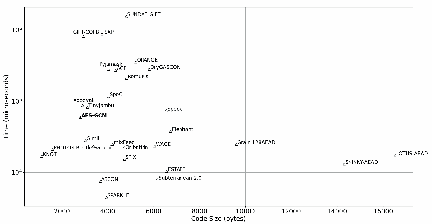
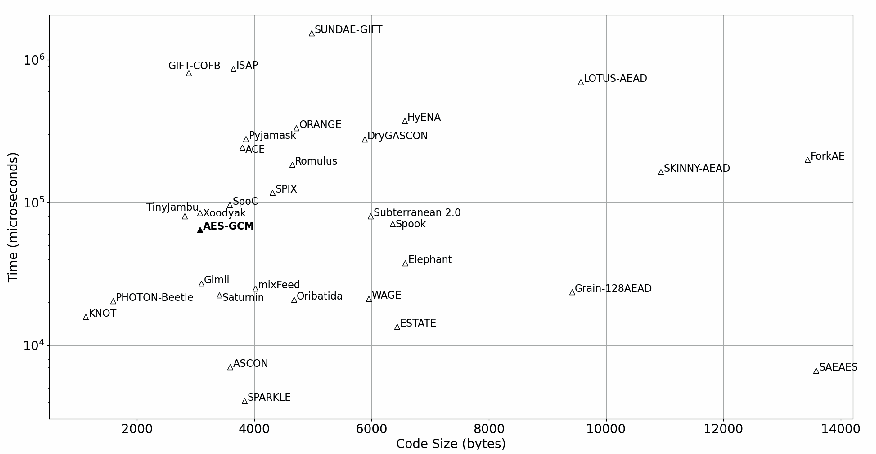
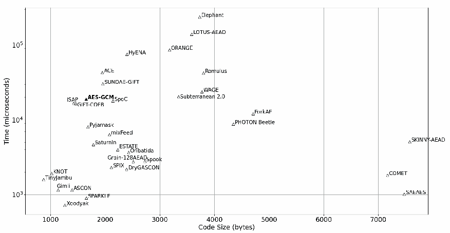
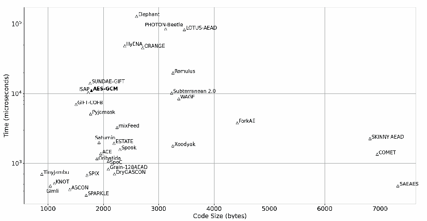
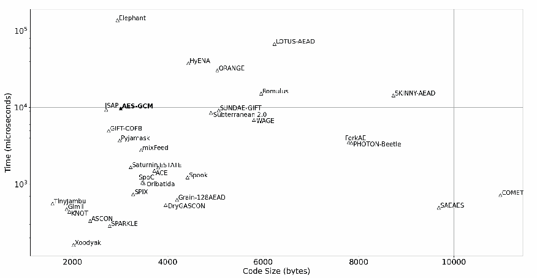
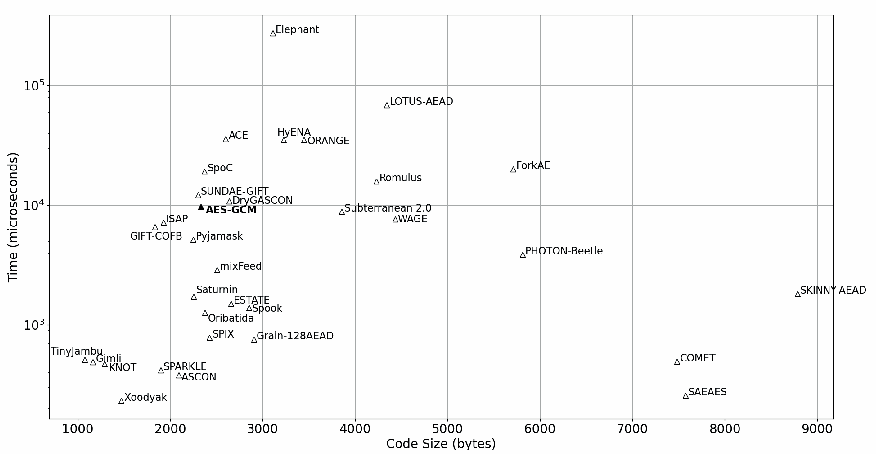

NIST IR 8369 日本語訳
英語タイトル : Status Report on the Second Round of the NIST Lightweight Cryptography Standardization Process日本語タイトル : NIST 軽量暗号標準化プロセス第 2 ラウンドの状況報告
公開日 : 2021-07-21
原文URL : https://csrc.nist.gov/pubs/ir/8369/final
翻訳編集 : 自動生成（有志による非公式の日本語訳）, 原文取得日 : 2026-10-31, 訳文 : 823 / 823 ブロック
[要約] NIST IR 8369 は、制約のある環境に適した関連データ付き認証暗号（AEAD）およびハッシュ方式を選定するための NIST の軽量暗号標準化プロセスについて、第 2 ラウンドの状況を報告するものです。2019年2月に 57 件の候補が提出され、56 件が第 1 ラウンドの候補として受理されたのち、32 件が第 2 ラウンドに選ばれ、2021年3月に 10 件のファイナリストが発表されました。ファイナリストは ASCON、Elephant、GIFT-COFB、Grain-128AEAD、ISAP、PHOTON-Beetle、Romulus、SPARKLE、TinyJAMBU、Xoodyak です。報告書は、第 2 ラウンドの候補に対する公開フィードバックと内部審査に基づく、評価基準と選定プロセスを説明し、各候補の評価と性能ベンチマークを示します。
NISTIR 8369
NISTIR 8369
Status Report on the Second Round of the NIST Lightweight Cryptography Standardization Process
NIST 軽量暗号標準化プロセス第 2 ラウンドの状況報告
Meltem Sönmez Turan Kerry McKay Donghoon Chang Çağdaş Çalık Lawrence Bassham Jinkeon Kang John Kelsey
Meltem Sönmez Turan Kerry McKay Donghoon Chang Çağdaş Çalık Lawrence Bassham Jinkeon Kang John Kelsey
This publication is available free of charge from: https://doi.org/10.6028/NIST.IR.8369
この刊行物は次のサイトから無料で入手できます: https://doi.org/10.6028/NIST.IR.8369
NISTIR 8369
NISTIR 8369
Status Report on the Second Round of the NIST Lightweight Cryptography Standardization Process
NIST 軽量暗号標準化プロセス第 2 ラウンドの状況報告
Meltem Sönmez Turan Kerry McKay Donghoon Chang Çağdaş Çalık Lawrence Bassham Jinkeon Kang John Kelsey
Meltem Sönmez Turan Kerry McKay Donghoon Chang Çağdaş Çalık Lawrence Bassham Jinkeon Kang John Kelsey
Computer Security Division Information Technology Laboratory
Computer Security Division Information Technology Laboratory
This publication is available free of charge from: https://doi.org/10.6028/NIST.IR.8369
この刊行物は次のサイトから無料で入手できます: https://doi.org/10.6028/NIST.IR.8369
July 2021
2021 年 7 月
U.S. Department of Commerce Gina M. Raimondo, Secretary
米国商務省 Gina M. Raimondo 長官
National Institute of Standards and Technology
National Institute of Standards and Technology
James K. Olthoff, Performing the Non-Exclusive Functions and Duties of the Under Secretary of Commerce for Standards and Technology & Director, National Institute of Standards and Technology
James K. Olthoff、商務次官（標準・技術担当）兼国立標準技術研究所所長の非専属的な職務および任務を代行
Certain commercial entities, equipment, or materials may be identified in this document in order to describe an experimental procedure or concept adequately. Such identification is not intended to imply recommendation or endorsement by the National Institute of Standards and Technology, nor is it intended to imply that the entities, materials, or equipment are necessarily the best available for the purpose.
実験の手順や概念を適切に説明するため、この文書では特定の商業団体、機器、資材が示されている場合があります。こうした記載は、米国国立標準技術研究所（NIST）による推奨や承認を意味するものではなく、それらの団体、資材、機器が当該目的に最適であると意味するものでもありません。
National Institute of Standards and Technology Interagency or Internal Report 8369
National Institute of Standards and Technology Interagency or Internal Report 8369
Natl. Inst. Stand. Technol. Interag. Intern. Rep. 8369, 81 pages (July 2021)
Natl. Inst. Stand. Technol. Interag. Intern. Rep. 8369, 81 pages (July 2021)
This publication is available free of charge from: https://doi.org/10.6028/NIST.IR.8369
この刊行物は次のサイトから無料で入手できます: https://doi.org/10.6028/NIST.IR.8369
Abstract
概要
The National Institute of Standards and Technology (NIST) initiated a public standardization process to select one or more Authenticated Encryption with Associated Data (AEAD) and hashing schemes suitable for constrained environments. In February 2019, 57 candidates were submitted to NIST for consideration. Among these, 56 were accepted as first-round candidates in April 2019. After four months, NIST selected 32 of the candidates for the second round. In March 2021, NIST announced 10 finalists to move forward to the final round of the selection process. The finalists are ASCON, Elephant, GIFT-COFB, Grain-128AEAD, ISAP, PHOTON-Beetle, Romulus, SPARKLE, TinyJAMBU, and Xoodyak. This report describes the evaluation criteria and selection process, which is based on public feedback and internal review of the second-round candidates.
米国国立標準技術研究所（NIST）は、制約のある環境に適した、関連データ付き認証暗号（AEAD）およびハッシュ方式を 1 つ以上選定するため、公開の標準化プロセスを開始しました。2019 年 2 月に、57 件の候補が NIST に提出されて検討の対象となりました。このうち 56 件が、2019 年 4 月に第 1 ラウンドの候補として受理されました。4 か月後、NIST は候補のうち 32 件を第 2 ラウンドに選びました。2021 年 3 月、NIST は 10 件のファイナリストを発表し、選定プロセスの最終ラウンドに進めることとしました。ファイナリストは ASCON、Elephant、GIFT-COFB、Grain-128AEAD、ISAP、PHOTON-Beetle、Romulus、SPARKLE、TinyJAMBU、Xoodyak です。本報告書は、第 2 ラウンドの候補に対する公開フィードバックと内部審査に基づく、評価基準と選定プロセスを説明します。
Keywords
キーワード
authenticated encryption · cryptography · hash functions · lightweight cryptography
認証暗号 · 暗号技術 · ハッシュ関数 · 軽量暗号
Acknowledgments
謝辞
NIST thanks the second-round submission teams, who developed and designed the second-round candidates, and the cryptographic community, who analyzed the candidates, shared their comments through the lwc-forum, and published papers on various technical aspects of the candidates.
NIST は、第 2 ラウンドの候補を開発・設計した第 2 ラウンドの提出チーム、ならびに候補を解析し、lwc-forum を通じて意見を寄せ、候補のさまざまな技術的側面に関する論文を発表した暗号コミュニティに感謝します。
NIST also thanks the developers, who provided optimized implementations of the candidates as well as the hardware and software benchmarking initiatives, for their contribution to the understanding of the performance characteristics of the algorithms on various target platforms.
NIST はまた、候補の最適化実装を提供した開発者、およびハードウェアとソフトウェアのベンチマーク活動を行った方々が、さまざまな対象プラットフォームにおけるアルゴリズムの性能特性の理解に貢献したことにも感謝します。
Specifically, NIST thanks all those who contributed to the following projects: (i) FPGA benchmarking by K. Mohajerani, R. Haeussler, R. Nagpal, F. Farahmand, A. Abdulgadir, J.-P. Kaps, and K. Gaj; (ii) ASIC benchmarking by M. Aagaard and N. Zidarič; (iii) ASIC benchmarking by M. Khairallah, T. Peyrin, and A. Chattopadhyay; (iv) Microcontroller benchmarking by S. Renner, E. Pozzobon, and J. Mottok; (v) Microcontroller benchmarking by R. Weatherley; (vi) RISC-V benchmarking by F. Campos, L. Jellema, M. Lemmen, L. Müller, D. Sprenkels, and B. Viguier; (vii) RISC-V benchmarking by G. Nisanci, R. Atay, M. K. Pehlivanoglu, E. B. Kavun, and T. Yalçın; and (viii) eBACS (ECRYPT Benchmarking of Cryptographic Systems) benchmarking by D. J. Bernstein and T. Lange.
具体的には、次のプロジェクトに貢献したすべての方々に NIST は感謝します。(i) K. Mohajerani、R. Haeussler、R. Nagpal、F. Farahmand、A. Abdulgadir、J.-P. Kaps、K. Gaj による FPGA ベンチマーク、(ii) M. Aagaard と N. Zidarič による ASIC ベンチマーク、(iii) M. Khairallah、T. Peyrin、A. Chattopadhyay による ASIC ベンチマーク、(iv) S. Renner、E. Pozzobon、J. Mottok によるマイクロコントローラーのベンチマーク、(v) R. Weatherley によるマイクロコントローラーのベンチマーク、(vi) F. Campos、L. Jellema、M. Lemmen、L. Müller、D. Sprenkels、B. Viguier による RISC-V ベンチマーク、(vii) G. Nisanci、R. Atay、M. K. Pehlivanoglu、E. B. Kavun、T. Yalçın による RISC-V ベンチマーク、および (viii) D. J. Bernstein と T. Lange による eBACS（ECRYPT Benchmarking of Cryptographic Systems）ベンチマーク。
The authors of this report acknowledge and appreciate contributions from their colleagues at NIST – Lily Chen, Andrew Regenscheid, Sara Kerman, Noah Waller, Isabel Van Wyk, Ray Perlner, Luís Brandão, Sheryl Taylor, Dustin Moody, and Michael J. Fagan – who provided technical and administrative support and participated in meetings to discuss the selection of the finalists.
本報告書の著者は、NIST の同僚である Lily Chen、Andrew Regenscheid、Sara Kerman、Noah Waller、Isabel Van Wyk、Ray Perlner、Luís Brandão、Sheryl Taylor、Dustin Moody、Michael J. Fagan の貢献に謝意を表します。これらの方々は、技術面および事務面の支援を提供し、ファイナリストの選定を協議する会合に参加しました。
Contents
目次
List of Tables
表の一覧
List of Figures
図の一覧
Acronyms
略語
AD Associated Data
AD 関連データ（Associated Data）
AEAD Authenticated Encryption with Associated Data
AEAD 関連データ付き認証暗号（Authenticated Encryption with Associated Data）
AES Advanced Encryption Standard
AES Advanced Encryption Standard
ARX Addition-Rotation-Xor
ARX 加算・ローテーション・XOR（Addition-Rotation-Xor）
ASIC Application Specific Integrated Circuit
ASIC 特定用途向け集積回路（Application Specific Integrated Circuit）
CAESAR Competition for Authenticated Encryption: Security, Applicability, and Robustness
CAESAR Competition for Authenticated Encryption: Security, Applicability, and Robustness
CBC Cipher Block Chaining
CBC 暗号ブロック連鎖（Cipher Block Chaining）
CCA Chosen Ciphertext Attack
CCA 選択暗号文攻撃（Chosen Ciphertext Attack）
CCAm CCA with nonce misuse-resilience
CCAm ナンス誤用耐性を持つ CCA（CCA with nonce misuse-resilience）
CI Ciphertext Integrity
CI 暗号文の完全性（Ciphertext Integrity）
CIM Ciphertext Integrity with Misuse-resistance
CIM 誤用耐性を持つ暗号文の完全性（Ciphertext Integrity with Misuse-resistance）
CTR Counter
CTR カウンター（Counter）
eBACS ECRYPT Benchmarking of Cryptographic System
eBACS ECRYPT Benchmarking of Cryptographic System
eSTREAM ECRYPT STREAM cipher project
eSTREAM ECRYPT STREAM cipher project
FOBOS Flexible Open source workBench fOr Side-channel analysis
FOBOS Flexible Open source workBench fOr Side-channel analysis
FPGA Field Programmable Gate Array
FPGA フィールドプログラマブルゲートアレイ（Field Programmable Gate Array）
GCM Galois/Counter Mode
GCM Galois/Counter Mode
GE Gate Equivalents
GE ゲート等価（Gate Equivalents）
INT-RUP INTegrity under RUP
INT-RUP RUP 下での完全性（INTegrity under RUP）
ISO/IEC International Organization for Standardization/International Electrotechnical Commission
ISO/IEC 国際標準化機構／国際電気標準会議（International Organization for Standardization/International Electrotechnical Commission）
LE Logic Elements
LE ロジックエレメント（Logic Elements）
LFSR Linear Feedback Shift Register
LFSR 線形フィードバックシフトレジスタ（Linear Feedback Shift Register）
LUT Look-Up Table
LUT ルックアップテーブル（Look-Up Table）
MAC Message Authentication Code
MAC メッセージ認証コード（Message Authentication Code）
MCU Microcontroller Unit
MCU マイクロコントローラーユニット（Microcontroller Unit）
MD Merkle-Damgård
MD Merkle-Damgård
MDS Maximum Distance Separable
MDS 最大距離分離可能（Maximum Distance Separable）
MILP Mixed-Integer Linear Programming
MILP 混合整数線形計画法（Mixed-Integer Linear Programming）
MITM Man-In-The-Middle
MITM 中間者（Man-In-The-Middle）
MMO Matyas-Meyer-Oseas
MMO Matyas-Meyer-Oseas
NIST National Institute of Standards and Technology
NIST 米国国立標準技術研究所（National Institute of Standards and Technology）
NISTIR NIST Internal Report
NISTIR NIST 内部報告書（NIST Internal Report）
OCB Offset CodeBook
OCB Offset CodeBook
OFB Output FeedBack
OFB 出力フィードバック（Output FeedBack）
RAM Random Access Memory
RAM ランダムアクセスメモリ（Random Access Memory）
RFID Radio Frequency Identification
RFID 無線周波数識別（Radio Frequency Identification）
RISC Reduced Instruction Set Computer
RISC 縮小命令セットコンピューター（Reduced Instruction Set Computer）
ROM Read Only Memory
ROM 読み出し専用メモリ（Read Only Memory）
RUP Releasing Unverified Plaintext
RUP 未検証平文の解放（Releasing Unverified Plaintext）
SFS Semi-Free-Start
SFS セミフリースタート（Semi-Free-Start）
SHA Secure Hash Algorithm
SHA Secure Hash Algorithm
TBC Tweakable Block Cipher
TBC tweak 可能ブロック暗号（Tweakable Block Cipher）
XOF eXtendable-Output Function
XOF 拡張可能出力関数（eXtendable-Output Function）
XOR eXclusive OR
XOR 排他的論理和（eXclusive OR）
1. Introduction
1. はじめに
The National Institute of Standards and Technology (NIST) initiated the Lightweight Cryptography Standardization Process to solicit, evaluate, and standardize one or more Authenticated Encryption with Associated Data (AEAD) and hashing schemes that are suitable for use in constrained environments, such as in radio frequency identification (RFID) tags and sensor networks, where the performance of current NIST cryptography standards is not acceptable or is deficient.
米国国立標準技術研究所（NIST）は、軽量暗号標準化プロセスを開始しました。その目的は、無線周波数識別（RFID）タグやセンサーネットワークなど、現行の NIST 暗号標準の性能が許容できない、または不十分である制約のある環境での使用に適した、関連データ付き認証暗号（AEAD）およびハッシュ方式を 1 つ以上募集、評価、標準化することです。
NIST received 57 submissions in response to its call for algorithms; and in April 2019, NIST announced 56 first-round candidates. In August 2019, NIST announced 32 second-round candidates and published NIST Internal Report (NISTIR) 8268 [1] to explain the evaluation criteria and selection of the second-round candidates. Later, NIST published the second-round packages of the candidates, which included corrections to typographical errors, bug fixes, and additional supplementary content such as optimized implementations and new security analysis. At this stage, the designers were not allowed to tweak their designs.
NIST はアルゴリズムの募集に対して 57 件の提出を受け、2019 年 4 月に 56 件の第 1 ラウンド候補を発表しました。2019 年 8 月には 32 件の第 2 ラウンド候補を発表するとともに、第 2 ラウンド候補の評価基準と選定を説明する NIST 内部報告書（NISTIR）8268 [1] を公表しました。その後、NIST は候補の第 2 ラウンドパッケージを公開しました。これには、誤植の訂正、バグ修正、最適化実装や新たなセキュリティ解析などの補足資料の追加が含まれていました。この段階では、設計者が設計に変更を加えることは認められていませんでした。
In August 2020, NIST invited the submitters of the second-round candidates to provide a short update on their algorithms, specifically on (1) new proofs/arguments that support the security claims, (2) new software and hardware implementations (including ones that protect against side-channel attacks), (3) new third-party analysis and its implications, (4) platforms and metrics in which the candidate performs better than current NIST standards, (5) target applications and use cases for which the candidate is optimized, (6) planned tweak proposals if the submission is accepted as a finalist, and any other relevant information. In September 2020, NIST received status updates from 27 (out of 32) teams [2–28].
2020 年 8 月、NIST は第 2 ラウンド候補の提出者に、アルゴリズムに関する簡潔な更新情報の提供を依頼しました。具体的には、(1) 安全性の主張を裏付ける新たな証明や論拠、(2) 新たなソフトウェア実装およびハードウェア実装（サイドチャネル攻撃への対策を備えたものを含む）、(3) 第三者による新たな解析とその影響、(4) 候補が現行の NIST 標準より優れた性能を示すプラットフォームと指標、(5) 候補が最適化された対象アプリケーションとユースケース、(6) 提出物がファイナリストとして受理された場合に予定している設計変更の提案、およびその他の関連情報です。2020 年 9 月に、NIST は 32 チームのうち 27 チームから状況の更新を受け取りました [2–28]。
During the second round of the process, NIST hosted the third and fourth lightweight cryptography workshops to discuss various aspects of the second-round candidates and obtain valuable feedback for the selection of the finalists. The timeline of the standardization process is summarized in Table 1. In March 2021, NIST announced the finalists of the standardization process, namely:
このプロセスの第 2 ラウンドの間に、NIST は第 3 回および第 4 回の軽量暗号ワークショップを開催し、第 2 ラウンド候補のさまざまな側面を議論するとともに、ファイナリストの選定に向けた貴重なフィードバックを得ました。標準化プロセスの経過を表 1 にまとめます。2021 年 3 月に、NIST は標準化プロセスのファイナリストとして次のものを発表しました。
•ASCON
•ASCON
•Elephant
•Elephant
•GIFT-COFB
•GIFT-COFB
•Grain-128AEAD
•Grain-128AEAD
•ISAP
•ISAP
•PHOTON-Beetle
•PHOTON-Beetle
•Romulus
•Romulus
•SPARKLE
•SPARKLE
•TinyJAMBU
•TinyJAMBU
•Xoodyak
•Xoodyak
The purpose of this report is to provide a public record of the second round of the standardization process. The report describes the evaluation criteria and selection of the finalists. In Section 2 explains the evaluation criteria for the second round. Section 3 provides the classification of second-round candidates and a discussion for each candidate. Section 4 lists the software and hardware benchmarking initiatives. Finally, Section 5 explains the selection of the finalists. Appendix A provides additional information about NIST’s internal software benchmarking results.
本報告書の目的は、標準化プロセスの第 2 ラウンドに関する公的な記録を提供することです。本報告書では、評価基準とファイナリストの選定について説明します。第 2 節では、第 2 ラウンドの評価基準を説明します。第 3 節では、第 2 ラウンド候補の分類と、候補ごとの議論を示します。第 4 節では、ソフトウェアおよびハードウェアのベンチマーク活動を一覧にします。最後に第 5 節で、ファイナリストの選定について説明します。付録 A では、NIST の内部ソフトウェアベンチマーク結果に関する追加情報を示します。
Table 1. Timeline of the NIST Lightweight Cryptography Standardization Process
表 1. NIST 軽量暗号標準化プロセスの経過
| Date | Event |
|---|---|
| July 2015 | First Lightweight Cryptography Workshop at NIST |
| October 2016 | Second Lightweight Cryptography Workshop at NIST |
| March 2017 | NISTIR 8114 Report on Lightweight Cryptography [29] |
| April 2017 | (draft) Profiles for Lightweight Cryptography Standardization Process [30] |
| August 2018 | Federal Register Notice |
| Submission Requirements and Evaluation Criteria for the Lightweight Cryptography Standardization Process [31] | |
| February 2019 | Submission deadline |
| April 2019 | Announcement of the first-round candidates |
| August 2019 | Announcement of the second-round candidates |
| October 2019 | NISTIR 8268, Status Report on the First Round of the NIST Lightweight Cryptography Standardization Process [1] |
| November 2019 | Third Lightweight Cryptography Workshop at NIST |
| September 2020 | Submission deadline for optional status updates |
| October 2020 | Fourth Lightweight Cryptography Workshop (virtual) |
| March 2021 | Announcement of the finalists |
| 日付 | イベント |
|---|---|
| 2015 年 7 月 | NIST での第 1 回軽量暗号ワークショップ |
| 2016 年 10 月 | NIST での第 2 回軽量暗号ワークショップ |
| 2017 年 3 月 | NISTIR 8114 Report on Lightweight Cryptography [29] |
| 2017 年 4 月 | （ドラフト）Profiles for Lightweight Cryptography Standardization Process [30] |
| 2018 年 8 月 | 連邦官報告示 |
| Submission Requirements and Evaluation Criteria for the Lightweight Cryptography Standardization Process [31] | |
| 2019 年 2 月 | 提出期限 |
| 2019 年 4 月 | 第 1 ラウンド候補の発表 |
| 2019 年 8 月 | 第 2 ラウンド候補の発表 |
| 2019 年 10 月 | NISTIR 8268, Status Report on the First Round of the NIST Lightweight Cryptography Standardization Process [1] |
| 2019 年 11 月 | NIST での第 3 回軽量暗号ワークショップ |
| 2020 年 9 月 | 任意の状況更新の提出期限 |
| 2020 年 10 月 | 第 4 回軽量暗号ワークショップ（オンライン） |
| 2021 年 3 月 | ファイナリストの発表 |
2. Evaluation Criteria
2. 評価基準
The evaluation criteria for the standardization process were published in August 2018 [31]. These criteria were further discussed and clarified during the NIST Lightweight Cryptography workshops. This section summarizes the evaluation criteria used during the second round of the standardization process.
標準化プロセスの評価基準は 2018 年 8 月に公表されました [31]。これらの基準は、NIST 軽量暗号ワークショップでさらに議論され、明確化されました。この節では、標準化プロセスの第 2 ラウンドで使用した評価基準をまとめます。
The cryptographic security of the candidates is the most important criterion. Similar to the selection of the second-round candidates, the submissions with significant third-party analysis or that based their security claims on well-understood design principles and security proofs were favored during the selection of finalists. NIST studied the feedback received from the cryptographic community and the documents provided by the submitters in addition to its own internal analysis. The security evaluations of the candidates are summarized in Section 3.2.
候補の暗号学的安全性が最も重要な基準です。第 2 ラウンド候補の選定時と同様に、ファイナリストの選定では、第三者による解析が十分に行われている提出物、または十分に理解された設計原則とセキュリティ証明に安全性の主張の根拠を置いている提出物が優先されました。NIST は、自らの内部解析に加えて、暗号コミュニティから寄せられたフィードバックと、提出者が提供した文書を検討しました。候補の安全性評価は 3.2 節にまとめています。
The second criterion is the performance of the candidates in applications using constrained devices (i.e., the hardware and software performance of candidates in constrained environments). Candidates were evaluated and compared in terms of various performance and cost metrics, and those that performed significantly better than the current NIST standards (especially AES-GCM [32] and SHA-2 [33]) were favored during the selection. NIST considered various public software and hardware benchmarking efforts as well as internal software benchmarking comparisons (see Section 4 and Appendix A).
第 2 の基準は、制約のあるデバイスを用いるアプリケーションでの候補の性能（すなわち、制約のある環境での候補のハードウェア性能とソフトウェア性能）です。候補はさまざまな性能指標とコスト指標で評価・比較され、現行の NIST 標準（特に AES-GCM [32] と SHA-2 [33]）を大幅に上回る性能を示した候補が選定で優先されました。NIST は、公開されているさまざまなソフトウェアおよびハードウェアのベンチマーク活動と、内部のソフトウェアベンチマーク比較を検討しました（第 4 節と付録 A を参照）。
Side-channel resistance of the candidates was another criterion. Although there were not many comprehensive comparisons of the candidates, NIST considered the claims from the submission documents and related papers from the literature. More information is provided in Section 3.3.1.
候補のサイドチャネル耐性も基準の 1 つでした。候補を網羅的に比較した例は多くありませんでしたが、NIST は提出文書の主張と、文献中の関連論文を検討しました。詳細は 3.3.1 節で示します。
Although not explicitly required by the submission call, there were some additional properties considered during the selection when multiple candidates had similar security and performance evaluations, including nonce-misuse security (see Section 3.3.2), releasing unverified plaintext (RUP) security (see Section 3.3.3), the impact of state recovery (see Section 3.3.4), and post-quantum security of the candidates (see Section 3.3.5). NIST also considered tweak plans, the diversity of the candidates, and their suitability for addition to NIST’s portfolio of cryptographic standards.
提出募集では明示的に要求されていませんでしたが、複数の候補で安全性と性能の評価が同程度であった場合に、選定で考慮した追加の特性がいくつかあります。ナンス誤用に対する安全性（3.3.2 節を参照）、未検証平文の解放（RUP）に対する安全性（3.3.3 節を参照）、状態復元の影響（3.3.4 節を参照）、候補の耐量子安全性（3.3.5 節を参照）です。NIST はまた、変更計画、候補の多様性、および NIST の暗号標準群に加えるうえでの適性も考慮しました。
3. Second-Round Candidates
3. 第 2 ラウンドの候補
3.1 Classification of the Second-Round Candidates
3.1 第 2 ラウンドの候補の分類
This section provides a classification of the second-round candidates [34–65] based on their underlying primitives and modes of operation. Similar comparisons are available in [66, 67].
この節では、基盤となるプリミティブと動作モードに基づく、第 2 ラウンド候補 [34–65] の分類を示します。同様の比較は [66, 67] にもあります。
The submission packages were allowed to include a family of algorithms supporting different parameters, such as key and nonce sizes. To allow for fair comparison, each family was required to include a primary variant that met minimum criteria. Some of the candidate families include more than one variant for AEAD and hashing, and the total number of variants is 89 for AEAD and 19 for hashing. Out of 32 second-round candidates, 11 of them have single variants. On average, candidates have 2.7 AEAD variants and 1.5 hash variants. The comparisons provided in this section are mostly based on the primary variants.
提出パッケージには、鍵長やナンス長などのパラメーターが異なる複数のアルゴリズムからなるファミリーを含めることが認められていました。公平な比較を可能にするため、各ファミリーには最低限の基準を満たす主要バリアントを含めることが求められました。候補ファミリーの中には AEAD とハッシュのそれぞれに複数のバリアントを含むものがあり、バリアントの総数は AEAD が 89、ハッシュが 19 です。32 件の第 2 ラウンド候補のうち、11 件は単一のバリアントのみを持ちます。平均すると、候補は 2.7 個の AEAD バリアントと 1.5 個のハッシュバリアントを持ちます。この節で示す比較は、主に主要バリアントに基づいています。
The underlying primitives of the second-round candidates are summarized in Table 2. Block ciphers or tweakable block ciphers are usually used by candidates aiming for AEAD-only functionality, whereas permutations are generally used when both AEAD and hashing functionalities are targeted.
第 2 ラウンド候補の基盤となるプリミティブを表 2 にまとめます。AEAD のみの機能を目指す候補では、通常はブロック暗号または tweak 可能ブロック暗号が使われ、AEAD とハッシュの両方の機能を目指す場合には、一般に置換が使われます。
There are many candidates that share a particular primitive or primitives that are very closely related (e.g., some changes to the primitive are present, but previous security analysis of the primitive may still apply). For example, the modes presented in COMET and SAEAES are instantiated using the block cipher AES, whereas the candidates ESTATE and mixFeed use slightly modified variants of AES. The well-analyzed block cipher GIFT is also used in multiple candidates, namely ESTATE, GIFT-COFB, HyENA, LOTUS-AEAD, LOCUS-AEAD, and SUNDAE-GIFT. Similarly, the tweakable block cipher SKINNY is used in ForkAE, Romulus, SKINNY-AEAD and SKINNY-HASH. Among permutation-based candidates, the ASCON permutation and its variants are used in ASCON, DryGASCON, and ISAP; the KECCAK permutation is used in Elephant and ISAP; the PHOTON permutation is used in ORANGE and PHOTON-Beetle; and the sLiSCP-light permutation is used in SPIX and SpoC.
特定のプリミティブ、または非常に近い関係にあるプリミティブ（たとえば、プリミティブに何らかの変更が加えられているものの、そのプリミティブに対する従来のセキュリティ解析がなお適用できる場合があるもの）を共有する候補は数多くあります。たとえば、COMET と SAEAES で示されるモードはブロック暗号 AES を用いて具体化されており、ESTATE と mixFeed は AES をわずかに変更したバリアントを使用しています。十分に解析されたブロック暗号 GIFT も複数の候補、すなわち ESTATE、GIFT-COFB、HyENA、LOTUS-AEAD、LOCUS-AEAD、SUNDAE-GIFT で使われています。同様に、tweak 可能ブロック暗号 SKINNY は ForkAE、Romulus、SKINNY-AEAD および SKINNY-HASH で使われています。置換ベースの候補のうち、ASCON 置換とそのバリアントは ASCON、DryGASCON、ISAP で使われ、KECCAK 置換は Elephant と ISAP で使われ、PHOTON 置換は ORANGE と PHOTON-Beetle で使われ、sLiSCP-light 置換は SPIX と SpoC で使われています。
Table 2. Underlying primitives of the second-round candidates
表 2. 第 2 ラウンドの候補の基盤となるプリミティブ
| Candidates providing AEAD-only functionality | |
|---|---|
| Permutation | Elephant, ISAP, Oribatida, SPIX, SpoC, Spook3, WAGE |
| Block Cipher | COMET, GIFT-COFB, HyENA, mixFeed, Pyjamask, SAEAES, SUNDAE-GIFT, TinyJAMBU1 |
| Tweakable Block Cipher | ESTATE, ForkAE, LOTUS-AEAD and LOCUS-AEAD, Romulus, Spook |
| Stream Cipher | Grain-128AEAD |
| Candidates providing AEAD and hashing functionalities | |
| Permutation | ACE, ASCON, DryGASCON, Gimli, KNOT, ORANGE, PHOTON-Beetle, SPARKLE, Subterranean 2.0, Xoodyak |
| Block Cipher | SATURNIN2 |
| Tweakable Block Cipher | SKINNY-AEAD and SKINNY-HASH |
| AEAD のみの機能を提供する候補 | |
|---|---|
| 置換 | Elephant, ISAP, Oribatida, SPIX, SpoC, Spook3, WAGE |
| ブロック暗号 | COMET, GIFT-COFB, HyENA, mixFeed, Pyjamask, SAEAES, SUNDAE-GIFT, TinyJAMBU1 |
| tweak 可能ブロック暗号 | ESTATE, ForkAE, LOTUS-AEAD and LOCUS-AEAD, Romulus, Spook |
| ストリーム暗号 | Grain-128AEAD |
| AEAD とハッシュの機能を提供する候補 | |
| 置換 | ACE, ASCON, DryGASCON, Gimli, KNOT, ORANGE, PHOTON-Beetle, SPARKLE, Subterranean 2.0, Xoodyak |
| ブロック暗号 | SATURNIN2 |
| tweak 可能ブロック暗号 | SKINNY-AEAD and SKINNY-HASH |
1 The underlying primitive of TinyJAMBU is given as keyed permutation in [63].
1 TinyJAMBU の基盤となるプリミティブは、[63] では鍵付き置換とされています。
2 The underlying primitive of SATURNIN [55] can also be considered a tweakable block cipher due to the use of additional 9-bit parameter for domain separation.
2 SATURNIN [55] の基盤となるプリミティブは、ドメイン分離のために追加の 9 ビットパラメーターを使用していることから、tweak 可能ブロック暗号とみなすこともできます。
3 Spook design uses both a permutation and a tweakable block cipher.
3 Spook の設計は、置換とtweak 可能ブロック暗号の両方を使用します。
Table 3 classifies the AEAD modes of operation of the primary variants as sequential and parallel modes. For sequential modes, sponge constructions and their variants are commonly used in addition to modes based on block ciphers and tweakable block ciphers, whereas parallel modes are typically based on (tweakable) block ciphers.
表 3 は、主要バリアントの AEAD 動作モードを、逐次モードと並列モードに分類したものです。逐次モードでは、ブロック暗号やtweak 可能ブロック暗号に基づくモードに加えて、スポンジ構造とそのバリアントが一般的に使われています。一方、並列モードは通常、（tweak 可能な）ブロック暗号に基づいています。
Twelve of the 32 second-round candidates offer hashing functionality. Except for SATURNIN, all of these candidates are based on the sponge construction or its variants [68] for hashing (see Table 4). SATURNIN uses an Matyas-Meyer-Oseas (MMO)-based compression function [69] instantiated with a tweakable block cipher, and its hash algorithm is constructed using a Merkle-Damgård (MD) construction [70, 71].
32 件の第 2 ラウンド候補のうち 12 件がハッシュ機能を提供します。SATURNIN を除き、これらの候補はいずれもハッシュにスポンジ構造またはそのバリアント [68] を用いています（表 4 を参照）。SATURNIN は、tweak 可能ブロック暗号で具体化した Matyas-Meyer-Oseas（MMO）ベースの圧縮関数 [69] を用いており、そのハッシュアルゴリズムは Merkle-Damgård（MD）構造 [70, 71] で構成されています。
3.2 Evaluation of the Second-Round Candidates
3.2 第 2 ラウンドの候補の評価
This section includes an evaluation of the second-round candidates based on the evaluation criteria described in Section 2. This section provides a summary of the design and security analysis for each candidate, as well as tweak plans. Performance summaries can be found in Section 4.
この節では、2 節で説明した評価基準に基づく第 2 ラウンド候補の評価を示します。この節では、候補ごとに設計とセキュリティ解析の概要、および変更計画を示します。性能の概要は 4 節にあります。
Table 3. AEAD mode-of-operation classification of primary variants
表 3. 主要バリアントの AEAD 動作モードによる分類
| Sequential modes | |
|---|---|
| Classical sponge with public permutation | DryGASCON, Gimli, KNOT, Subterranean 2.0, Xoodyak |
| Classical sponge with stronger initialization and finalization | ACE, ASCON, SPIX, Spook, WAGE |
| Classical sponge with keyed permutation | SAEAES, TinyJAMBU |
| Modified sponge with public permutation | ORANGE, Oribatida, PHOTON-Beetle SPARKLE, SpoC |
| Block cipher or tweakable-block-cipher based feedback (rate 1) | COMET, GIFT-COFB, HyENA, mixFeed, Romulus |
| Encrypt-then-MAC | ISAP, SATURNIN |
| MAC-then-Encrypt | ESTATE, SUNDAE-GIFT |
| Stream cipher based | Grain-128AEAD |
| Parallel modes | |
| ΘCB3-based (rate 1) | SKINNY-AEAD |
| OCB3-based (rate 1) | Pyjamask |
| Enc-then-MAC | Elephant |
| Others | ForkAE, LOTUS-AEAD |
| 逐次モード | |
|---|---|
| 公開置換を用いる古典的スポンジ | DryGASCON, Gimli, KNOT, Subterranean 2.0, Xoodyak |
| 初期化と終了処理を強化した古典的スポンジ | ACE, ASCON, SPIX, Spook, WAGE |
| 鍵付き置換を用いる古典的スポンジ | SAEAES, TinyJAMBU |
| 公開置換を用いる修正スポンジ | ORANGE, Oribatida, PHOTON-Beetle SPARKLE, SpoC |
| ブロック暗号またはtweak 可能ブロック暗号に基づくフィードバック（レート 1） | COMET, GIFT-COFB, HyENA, mixFeed, Romulus |
| Encrypt-then-MAC | ISAP, SATURNIN |
| MAC-then-Encrypt | ESTATE, SUNDAE-GIFT |
| ストリーム暗号ベース | Grain-128AEAD |
| 並列モード | |
| ΘCB3 ベース（レート 1） | SKINNY-AEAD |
| OCB3 ベース（レート 1） | Pyjamask |
| Enc-then-MAC | Elephant |
| その他 | ForkAE, LOTUS-AEAD |
3.2.1 ACE
3.2.1 ACE
ACE, designed by Aagaard et al. [34], is a permutation-based AEAD and hashing scheme. The AEAD scheme uses a unified sponge duplex mode, whereas the hash function is based on the sponge construction. The ACE permutation is based on a 5-block generalized version of sLiSCP-light [72]. Nonlinearity is provided by a round-reduced unkeyed instance of Simeck-64, denoted SB-64 [73].
Aagaard らが設計した ACE [34] は、置換ベースの AEAD およびハッシュ方式です。AEAD 方式は統一スポンジ二重モードを用い、ハッシュ関数はスポンジ構造に基づいています。ACE 置換は、sLiSCP-light [72] を 5 ブロックに一般化したバージョンに基づいています。非線形性は、Simeck-64 の鍵なしでラウンド数を減らしたインスタンスである SB-64 [73] によって与えられます。
Variants. The variants of the ACE family are listed below.
バリアント。ACE ファミリーのバリアントを次に示します。
| AEAD variants | Key | Nonce | Tag | # Steps | Hash variants | Digest size | # Steps |
|---|---|---|---|---|---|---|---|
| ACE-\(\mathcal{AE}\)-128 | 128 | 128 | 128 | 16 | ACE-\(\mathcal{H}\)-256 | 256 | 16 |
| AEAD バリアント | 鍵 | ナンス | タグ | ステップ数 | ハッシュバリアント | ダイジェスト長 | ステップ数 |
|---|---|---|---|---|---|---|---|
| ACE-\(\mathcal{AE}\)-128 | 128 | 128 | 128 | 16 | ACE-\(\mathcal{H}\)-256 | 256 | 16 |
Security Analysis. Liu et al. [74] constructed two 8-step impossible differentials for the ACE permutation and showed that there are no impossible differential distinguishers longer than nine steps. Various analyses [75–78] on Simeck64/128 describe attacks exceeding the eight rounds of SB-64. The implications of these analyses on the ACE permutation need more investigation.
セキュリティ解析。Liu ら [74] は、ACE 置換に対して 2 つの 8 ステップ不可能差分を構成し、9 ステップを超える不可能差分識別器は存在しないことを示しました。Simeck64/128 に対するさまざまな解析 [75–78] では、SB-64 の 8 ラウンドを超える攻撃が述べられています。これらの解析が ACE 置換に与える影響については、さらなる調査が必要です。
Table 4. Hashing modes of the 12 candidates with hashing functionalities
表 4. ハッシュ機能を持つ 12 件の候補のハッシュモード
| Hashing modes | Candidates (digest sizes) |
|---|---|
| Sponge construction | ACE (256), ASCON (256), DryGASCON (256,512), Gimli (256), KNOT (256, 384, 512), ORANGE (256), PHOTON-Beetle (256), SKINNY-HASH (256), SPARKLE (256, 384), Subterranean 2.0 (256), Xoodyak (256) |
| MD construction based on MMO mode | SATURNIN (256) |
| ハッシュモード | 候補（ダイジェスト長） |
|---|---|
| スポンジ構造 | ACE (256), ASCON (256), DryGASCON (256,512), Gimli (256), KNOT (256, 384, 512), ORANGE (256), PHOTON-Beetle (256), SKINNY-HASH (256), SPARKLE (256, 384), Subterranean 2.0 (256), Xoodyak (256) |
| MMO モードに基づく MD 構造 | SATURNIN (256) |
Tweak plan. No tweak plan has been proposed [2].
tweak の計画。tweak の計画は提案されていません [2]。
3.2.2 ASCON
3.2.2 ASCON
ASCON, designed by Dobraunig et al. [35], is a permutation-based AEAD and hashing scheme. ASCON-AEAD is based on the monkeyDuplex construction [79] with additional key additions during initialization and finalization. ASCON-Hash is based on the duplex sponge construction [80]. The main component of the ASCON family is a 320-bit permutation instantiated with different constants and number of rounds for different variants. ASCON was selected as the primary choice for lightweight authenticated encryption in the final portfolio of the CAESAR competition (2014–2019).
Dobraunig らが設計した ASCON [35] は、置換ベースの AEAD およびハッシュ方式です。ASCON-AEAD は monkeyDuplex 構造 [79] に基づいており、初期化時と終了処理時に鍵の加算が追加されています。ASCON-Hash は二重スポンジ構造 [80] に基づいています。ASCON ファミリーの主要な構成要素は 320 ビットの置換で、バリアントごとに異なる定数とラウンド数で具体化されています。ASCON は、CAESAR コンペティション（2014～2019 年）の最終ポートフォリオにおいて、軽量認証暗号の第一選択として選ばれました。
Variants. The variants of the ASCON family are listed below. The number of rounds for the AEAD variants is represented as a triplet a, b, and c, where a is the number of rounds during initialization, b is the number of rounds during AD or message processing, and c is the number of rounds during finalization. The primary AEAD and hash variants appear in bold face.
バリアント。ASCON ファミリーのバリアントを次に示します。AEAD バリアントのラウンド数は 3 つ組 a、b、c で表され、a は初期化時のラウンド数、b は AD またはメッセージの処理時のラウンド数、c は終了処理時のラウンド数です。主要な AEAD バリアントとハッシュバリアントは太字で示しています。
| AEAD variants | Key | Nonce | Tag | # Rounds | Hash variants | Digest size | # Rounds |
|---|---|---|---|---|---|---|---|
| ASCON-128 | 128 | 128 | 128 | 12, 6, 12 | ASCON-Hash | 256 | 12 |
| ASCON-128a | 128 | 128 | 128 | 12, 8, 12 | ASCON-Xof | 256 | 12 |
| ASCON-80pq | 160 | 128 | 128 | 12, 6, 12 |
| AEAD バリアント | 鍵 | ナンス | タグ | ラウンド数 | ハッシュバリアント | ダイジェスト長 | ラウンド数 |
|---|---|---|---|---|---|---|---|
| ASCON-128 | 128 | 128 | 128 | 12, 6, 12 | ASCON-Hash | 256 | 12 |
| ASCON-128a | 128 | 128 | 128 | 12, 8, 12 | ASCON-Xof | 256 | 12 |
| ASCON-80pq | 160 | 128 | 128 | 12, 6, 12 |
Security Analysis. ASCON has received significant third-party analysis (e.g., [35, 81–91]). The existing security analyses are summarized in [92], and a summary is provided in Table 5. Additionally, Ramezanpour et al. [93] evaluated ASCON’s vulnerability to both passive and active side-channel attacks.
セキュリティ解析。ASCON は、第三者による相当量の解析を受けています（例: [35, 81–91]）。既存のセキュリティ解析は [92] にまとめられており、その概要を表 5 に示します。さらに、Ramezanpour ら [93] は、受動的および能動的の両方のサイドチャネル攻撃に対する ASCON の脆弱性を評価しました。
Table 5. Summary of attacks on ASCON family
表 5. ASCON ファミリーに対する攻撃の概要
| Target | Attack type | Method | Rounds1 | Data | Time | Memory | Nonce misuse | Ref. |
|---|---|---|---|---|---|---|---|---|
| ASCON-128 ASCON-128a | Key recovery | Cube | 7,⋆,⋆ | 277.2 | 2103.92 | - | No | [85] |
| Cube | 7,5,⋆ | 250 | 298 | 241 | Yes | [86] | ||
| Conditional cube | 6,⋆,⋆ | 240 | 240 | - | No | [85] | ||
| Forgery | Cube | ⋆,⋆,6 | 233 | - | - | Yes | [86] | |
| Cube | ⋆,⋆,5 | 217 | - | - | Yes | [86] | ||
| ASCON-128 | State recovery | Cube | ⋆,5,⋆ | 218 | 266 | 254 | Yes | [86] |
| SAT-solver | ⋆,2,⋆ | - | practical | No | [87] | |||
| ASCON-128a | State recovery | Cube | ⋆,5,⋆ | 218 | 264 | 238 | Yes | [86] |
| ASCON Permutation | Distinguishing | Zero-sum | 12 | - | 2130 | - | - | [84] |
| Zero-sum | 11 | - | 285 | - | - | [35] | ||
| Integral | 11 | - | 2315 | - | - | [82] | ||
| ASCON-Hash2 | Preimage | Algebraic | 6,6,6 | - | 263.3 | - | - | [90] |
| ASCON-Xof2 | Cube | 2,2,2 | - | 239 | - | - | [90] | |
| ASCON-Hash ASCON-Xof | SFS Collision | Differential | 2,2,2 | - | practical | - | - | [90] |
| 対象 | 攻撃の種類 | 手法 | ラウンド数1 | データ | 時間 | メモリ | ナンス誤用 | 参照 |
|---|---|---|---|---|---|---|---|---|
| ASCON-128 ASCON-128a | 鍵復元 | Cube | 7,⋆,⋆ | 277.2 | 2103.92 | - | なし | [85] |
| Cube | 7,5,⋆ | 250 | 298 | 241 | あり | [86] | ||
| 条件付き cube | 6,⋆,⋆ | 240 | 240 | - | なし | [85] | ||
| 偽造 | Cube | ⋆,⋆,6 | 233 | - | - | あり | [86] | |
| Cube | ⋆,⋆,5 | 217 | - | - | あり | [86] | ||
| ASCON-128 | 状態復元 | Cube | ⋆,5,⋆ | 218 | 266 | 254 | あり | [86] |
| SAT ソルバー | ⋆,2,⋆ | - | 現実的 | なし | [87] | |||
| ASCON-128a | 状態復元 | Cube | ⋆,5,⋆ | 218 | 264 | 238 | あり | [86] |
| ASCON 置換 | 識別 | ゼロ和 | 12 | - | 2130 | - | - | [84] |
| ゼロ和 | 11 | - | 285 | - | - | [35] | ||
| インテグラル | 11 | - | 2315 | - | - | [82] | ||
| ASCON-Hash2 | 原像 | 代数的 | 6,6,6 | - | 263.3 | - | - | [90] |
| ASCON-Xof2 | Cube | 2,2,2 | - | 239 | - | - | [90] | |
| ASCON-Hash ASCON-Xof | SFS 衝突 | 差分 | 2,2,2 | - | 現実的 | - | - | [90] |
1 The symbol ⋆ denotes arbitrary number of rounds.
1 記号 ⋆ は任意のラウンド数を表します。
2 The variant has 64-bit hash output.
2 このバリアントのハッシュ出力は 64 ビットです。
Tweak plan. No tweak plan has been proposed [3].
tweak の計画。tweak の計画は提案されていません [3]。
3.2.3 COMET
3.2.3 COMET
COMET (COunter Mode Encryption with authentication Tag), designed by Gueron et al. [36], is a single-pass, inverse-free block-cipher mode of operation that uses re-keying techniques to minimize the state size and the number of operations. The mode is instantiated using the block ciphers AES-128 [94], CHAM-128 [95], and Speck-64 [96].
Gueron らが設計した COMET（COunter Mode Encryption with authentication Tag）[36] は、1 パスで逆関数を必要としないブロック暗号の動作モードで、鍵の更新技術を用いて状態サイズと演算回数を最小化します。このモードは、ブロック暗号 AES-128 [94]、CHAM-128 [95]、Speck-64 [96] を用いて具体化されています。
Variants. COMET supports 64-bit and 128-bit block sizes, and the variants of the COMET family are listed below.
バリアント。COMET は 64 ビットと 128 ビットのブロックサイズをサポートしており、COMET ファミリーのバリアントを次に示します。
| AEAD variants | Key | Nonce | Tag |
|---|---|---|---|
| COMET-128_AES-128/128 | 128 | 128 | 128 |
| COMET-128_CHAM-128/128 | 128 | 128 | 128 |
| COMET-64_CHAM-64/128 | 128 | 120 | 64 |
| COMET-64_Speck-64/128 | 128 | 120 | 64 |
| AEAD バリアント | 鍵 | ナンス | タグ |
|---|---|---|---|
| COMET-128_AES-128/128 | 128 | 128 | 128 |
| COMET-128_CHAM-128/128 | 128 | 128 | 128 |
| COMET-64_CHAM-64/128 | 128 | 120 | 64 |
| COMET-64_Speck-64/128 | 128 | 120 | 64 |
Security Analysis. COMET designers provided a proof in the ideal cipher model showing that COMET-128 is secure when the data complexity is less than 264 bytes and the offline computation complexity, including block cipher evaluations, is less than 2119 [97]. Khairallah [98] showed the existence of 264 weak keys and demonstrated an existential forgery attack with weak keys using 264 online queries. Bernstein et al. [99] presented two observations on COMET: the first observation uses a long message to detect the use of weak keys; and the second focuses on the resistance of COMET against slide attacks.
セキュリティ解析。COMET の設計者は、データ計算量が 264 バイト未満で、ブロック暗号の評価を含むオフライン計算量が 2119 未満であれば COMET-128 は安全であることを、理想暗号モデルで証明しました [97]。Khairallah [98] は、264 個の弱い鍵が存在することを示し、弱い鍵を用いて 264 回のオンラインクエリで存在的偽造攻撃を行えることを実証しました。Bernstein ら [99] は COMET について 2 つの観察を示しました。1 つ目は、長いメッセージを用いて弱い鍵の使用を検出するものです。2 つ目は、COMET のスライド攻撃に対する耐性に注目したものです。
Tweak plan. Although the results presented in [98, 99] do not invalidate the security claims of COMET, the designers considered the following tweaks [4]: (1) updating the place where control bits are XORed to save additional n-bit memory and (2) updating the permute function that modifies the key to increase the data complexities of the available attacks. The designers provided a security proof for the mode of this updated proposal [100].
tweak の計画。[98, 99] で示された結果は COMET の安全性の主張を無効にするものではありませんが、設計者は次の tweak を検討しました [4]。(1) 制御ビットを XOR する場所を更新して、追加の n ビットのメモリを節約すること、(2) 鍵を変更する置換関数を更新して、既存の攻撃のデータ計算量を増やすことです。設計者は、この更新後の提案のモードについて、セキュリティ証明を提示しました [100]。
3.2.4 DryGASCON
3.2.4 DryGASCON
DryGASCON, designed by Riou [37], is an AEAD and hashing scheme that aims to prevent many physical attacks at the algorithmic level. DryGASCON is based on the DrySponge construction, which is derived from the duplex sponge construction [80]. The underlying GASCON permutations are constructed by tweaking the ASCON permutation [35].
Riou が設計した DryGASCON [37] は、多くの物理攻撃をアルゴリズムの水準で防ぐことを目指した AEAD およびハッシュ方式です。DryGASCON は、二重スポンジ構造 [80] から派生した DrySponge 構造に基づいています。基盤となる GASCON 置換は、ASCON 置換 [35] に tweak を加えて構成されています。
Variants. The variants of the DryGASCON family are listed below. In the table, s represents the size of the GASCON permutation, and the number of rounds for AEAD variants is represented as a tuple a and b, where a is the number of rounds during the diversification phase (i.e., nonce-processing phase) and b is the number of rounds used in remaining phases.
バリアント。DryGASCON ファミリーのバリアントを次に示します。表中で s は GASCON 置換のサイズを表し、AEAD バリアントのラウンド数は組 a、b で表されます。a は多様化フェーズ（すなわちナンス処理フェーズ）のラウンド数、b は残りのフェーズで使用されるラウンド数です。
| AEAD variants | Key | Nonce | Tag | s | # Rounds | Hash variants | Digest size | s | # Rounds |
|---|---|---|---|---|---|---|---|---|---|
| DryGASCON128 | 128 | 128 | 128 | 320 | 11, 7 | DryGASCON128 | 256 | 320 | 7 |
| DryGASCON256 | 256 | 128 | 256 | 576 | 12, 8 | DryGASCON256 | 512 | 576 | 8 |
| AEAD バリアント | 鍵 | ナンス | タグ | s | ラウンド数 | ハッシュバリアント | ダイジェスト長 | s | ラウンド数 |
|---|---|---|---|---|---|---|---|---|---|
| DryGASCON128 | 128 | 128 | 128 | 320 | 11, 7 | DryGASCON128 | 256 | 320 | 7 |
| DryGASCON256 | 256 | 128 | 256 | 576 | 12, 8 | DryGASCON256 | 512 | 576 | 8 |
Security Analysis. The designer of DryGASCON argues that the GASCON permutations have security properties similar to the ASCON permutation [37]. Tezcan reported a 3.5 round truncated differential with a probability of one [91].
セキュリティ解析。DryGASCON の設計者は、GASCON 置換が ASCON 置換と同様のセキュリティ特性を持つと主張しています [37]。Tezcan は、確率 1 の 3.5 ラウンドの切断差分を報告しました [91]。
Tweak plan. The designer has described three possible tweaks [5]: (1) adding an XOF mode; (2) uniformization of the key profiles to allow for mapping all keys from the small key profile to keys in the fast and full profile to achieve “upward” interoperability; and (3) allowing precomputation over AD by swapping the order of computation between nonce and AD, which involves removing support for the “static data” feature.
tweak の計画。設計者は 3 つの tweak の可能性を述べています [5]。(1) XOF モードの追加、(2) 小さい鍵プロファイルのすべての鍵を高速・完全プロファイルの鍵に対応付けられるようにして「上方向」の相互運用性を実現するための、鍵プロファイルの統一、(3) ナンスと AD の計算順序を入れ替えることによる AD に対する事前計算の許可（これには「静的データ」機能のサポートの削除が伴います）です。
3.2.5 Elephant
3.2.5 Elephant
Elephant, designed by Beyne et al. [38], is a permutation-based AEAD scheme that follows a nonce-based encrypt-then-MAC construction with a counter mode and a variant of the Wegman-Carter-Shoup MAC function. Elephant is the only second-round candidate that uses a parallel mode with a permutation. The mode is instantiated using the permutations of Spongent [101] and KECCAK [102].
Beyne らが設計した Elephant [38] は、置換ベースの AEAD 方式で、カウンターモードと Wegman-Carter-Shoup MAC 関数のバリアントを用いた、ナンスベースの encrypt-then-MAC 構造に従います。Elephant は、置換を用いた並列モードを採用している唯一の第 2 ラウンド候補です。このモードは、Spongent [101] と KECCAK [102] の置換を用いて具体化されています。
Variants. The variants of the Elephant family are listed below.
バリアント。Elephant ファミリーのバリアントを次に示します。
| AEAD variants | Key | Nonce | Tag | Permutation | # Rounds |
|---|---|---|---|---|---|
| Dumbo | 128 | 96 | 64 | 160-bit Spongent | 80 |
| Jumbo | 128 | 96 | 64 | 176-bit Spongent | 90 |
| Delirium | 128 | 96 | 128 | 200-bit KECCAK | 18 |
| AEAD バリアント | 鍵 | ナンス | タグ | 置換 | ラウンド数 |
|---|---|---|---|---|---|
| Dumbo | 128 | 96 | 64 | 160 ビット Spongent | 80 |
| Jumbo | 128 | 96 | 64 | 176 ビット Spongent | 90 |
| Delirium | 128 | 96 | 128 | 200 ビット KECCAK | 18 |
Security Analysis. The designers of Elephant [38] provided privacy and authenticity proofs of the mode of Elephant in the nonce-respecting scenario under the ideal permutation assumption. As confirmed by the designers of Elephant [6], the mode of Elephant does not provide authenticity in the nonce-misuse scenario. Zhou et al. [103] presented an interpolation attack on 8-round (out of 18) Delirium in the nonce-respecting scenario with 270 data complexity and 298.3 XOR operations and 270 memory complexity. Sun et al. [104] presented a zero-sum distinguishing attack on 176-bit Spongent permutation of 21-round (out of 90 rounds) with 2159 time complexity. Bogdanov et al. [105] presented differential distinguishers on 160-bit Spongent permutation of 40-round (out of 80) with probability 2−160 and 176-bit Spongent permutation of 44-round (out of 90) with probability 2−176. Bogdanov et al. [105] presented linear distinguishers on 160-bit Spongent permutation of 80-round (out of 80) with correlation probability 2−160 and 176-bit Spongent permutation of 90-round (out of 90) with probability 2−180. Zhang and Liu [106] presented a truncated-differential distinguisher on 176-bit Spongent permutation of 46-round (out of 90) with probability 2−174.415. In [107, 108], the security of Elephant against key recovery attacks were analyzed in quantum settings.
セキュリティ解析。Elephant の設計者 [38] は、理想置換の仮定の下で、ナンスを遵守するシナリオにおける Elephant のモードの秘匿性と真正性の証明を示しました。Elephant の設計者 [6] が確認したとおり、Elephant のモードはナンス誤用のシナリオでは真正性を提供しません。Zhou ら [103] は、ナンスを遵守するシナリオで、Delirium の 18 ラウンド中 8 ラウンドに対する補間攻撃を、データ計算量 270、XOR 演算 298.3 回、メモリ計算量 270 で示しました。Sun ら [104] は、176 ビット Spongent 置換の 90 ラウンド中 21 ラウンドに対するゼロ和識別攻撃を、時間計算量 2159 で示しました。Bogdanov ら [105] は、160 ビット Spongent 置換の 80 ラウンド中 40 ラウンドに対する差分識別器を確率 2−160 で、176 ビット Spongent 置換の 90 ラウンド中 44 ラウンドに対する差分識別器を確率 2−176 で示しました。Bogdanov ら [105] はまた、160 ビット Spongent 置換の 80 ラウンド中 80 ラウンドに対する線形識別器を相関確率 2−160 で、176 ビット Spongent 置換の 90 ラウンド中 90 ラウンドに対する線形識別器を確率 2−180 で示しました。Zhang と Liu [106] は、176 ビット Spongent 置換の 90 ラウンド中 46 ラウンドに対する切断差分識別器を確率 2−174.415 で示しました。[107, 108] では、鍵復元攻撃に対する Elephant の安全性が量子環境で解析されました。
Tweak plan. The designers described two possible tweaks related to the mode [6, 109]: (1) changing the index pair of every block, which is used to generate a masking key for that block computation, and (2) changing from a Wegman-Carter-Shoup style authenticator to a protected counter sum style authenticator to provide authenticity even in nonce-misuse.
tweak の計画。設計者は、モードに関する 2 つの tweak の可能性を述べています [6, 109]。(1) 各ブロックの計算に用いるマスキング鍵の生成に使うインデックスの組を、ブロックごとに変更すること、(2) ナンス誤用の場合でも真正性を提供するために、Wegman-Carter-Shoup 方式の認証子から保護付きカウンター和方式の認証子に変更することです。
3.2.6 ESTATE
3.2.6 ESTATE
ESTATE, designed by Chakraborti et al. [39], is an AEAD scheme based on tweakable block ciphers. The mode of ESTATE uses a nonce-based MAC-then-Encrypt construction, where the encryption (based on the Output Feeback (OFB) mode) is done by XORing a message and a keystream, and the authentication/verification is based on a tweakable variant of FCBC [110] by using different tweak values for the last block processing, depending on whether the last block of input is full or partial. The ESTATE mode, inspired by SUNDAE [111], uses a tweakable block cipher to minimize the number of underlying primitive calls and remove field multiplications from the mode level. The ESTATE mode provides privacy and authenticity even in nonce-misuse and RUP attack models [112, 113].
Chakraborti らが設計した ESTATE [39] は、tweak 可能ブロック暗号に基づく AEAD 方式です。ESTATE のモードはナンスベースの MAC-then-Encrypt 構造を用います。暗号化（出力フィードバック（OFB）モードに基づく）はメッセージとキーストリームの XOR によって行われ、認証・検証は FCBC [110] の tweak 可能バリアントに基づいており、入力の最後のブロックが完全か部分的かに応じて、最後のブロックの処理に異なる tweak 値を用います。SUNDAE [111] に着想を得た ESTATE モードは、tweak 可能ブロック暗号を用いることで、基盤となるプリミティブの呼び出し回数を最小化し、モードの水準での体の乗算を排除しています。ESTATE モードは、ナンス誤用および RUP の攻撃モデルでも、秘匿性と真正性を提供します [112, 113]。
Variants. The variants of the ESTATE family are listed below. ESTATE is instantiated using three new tweakable block ciphers with 4-bit tweak: (1) TweAES-128 (adds the tweak at every second round of AES-128); (2) TweGIFT-128 (adds the tweak at every fifth round of GIFT-128); and (3) TweAES-128-6 (adds the tweak at every second round of the first six rounds of AES-128 and includes the MixColumns operations in the last round).
バリアント。ESTATE ファミリーのバリアントを次に示します。ESTATE は、4 ビットの tweak を持つ 3 つの新しい tweak 可能ブロック暗号を用いて具体化されています。(1) TweAES-128（AES-128 の 2 ラウンドごとに tweak を加える）、(2) TweGIFT-128（GIFT-128 の 5 ラウンドごとに tweak を加える）、(3) TweAES-128-6（AES-128 の最初の 6 ラウンドの 2 ラウンドごとに tweak を加え、最終ラウンドに MixColumns 演算を含める）です。
| AEAD variants | Key | Nonce | Tag |
|---|---|---|---|
| ESTATE_TweAES-128 | 128 | 128 | 128 |
| ESTATE_TweGIFT-128 | 128 | 128 | 128 |
| sESTATE_TweAES-128-6 | 128 | 128 | 128 |
| AEAD バリアント | 鍵 | ナンス | タグ |
|---|---|---|---|
| ESTATE_TweAES-128 | 128 | 128 | 128 |
| ESTATE_TweGIFT-128 | 128 | 128 | 128 |
| sESTATE_TweAES-128-6 | 128 | 128 | 128 |
Security Analysis. The security of the new block ciphers TweAES and TweGIFT relies on the available analysis on AES and GIFT. The designers of ESTATE [39, 113] reported that they were unable to find any vulnerability of the tweak injection after conducting in-depth self-analysis. In [112, 113], privacy, authenticity, and INT-RUP security proofs of ESTATE in the nonce-misuse scenario were provided. In [108], the security of sESTATE against the key recovery attack was analyzed in quantum settings.
セキュリティ解析。新しいブロック暗号 TweAES と TweGIFT の安全性は、AES と GIFT に対する既存の解析に依拠しています。ESTATE の設計者 [39, 113] は、詳細な自己解析を行った後でも、tweak 注入の脆弱性を見つけられなかったと報告しました。[112, 113] では、ナンス誤用のシナリオにおける ESTATE の秘匿性、真正性、INT-RUP 安全性の証明が示されました。[108] では、鍵復元攻撃に対する sESTATE の安全性が量子環境で解析されました。
Tweak plan. No tweak plan has been proposed except for two bug fixes in the reference implementation [7].
tweak の計画。参照実装の 2 件のバグ修正を除いて、tweak の計画は提案されていません [7]。
3.2.7 ForkAE
3.2.7 ForkAE
ForkAE, designed by Andreeva et al. [40], is an AEAD scheme that uses the two modes of operations – SAEF (Sequential AEAD from a Forkcipher) and PAEF (Parallel AEAD from a Forkcipher) – and the forkcipher ForkSkinny. A Forkcipher [114–116] enables the evaluation of a tweakable block cipher on the same message and two different keys with an amortized computational cost to optimize short message handling.
Andreeva らが設計した ForkAE [40] は、2 つの動作モード、SAEF（Sequential AEAD from a Forkcipher）と PAEF（Parallel AEAD from a Forkcipher）、および forkcipher ForkSkinny を用いる AEAD 方式です。Forkcipher [114–116] は、同じメッセージと 2 つの異なる鍵に対する tweak 可能ブロック暗号の評価を、償却された計算コストで可能にし、短いメッセージの処理を最適化します。
Variants. The variants of the ForkAE family are listed below.
バリアント。ForkAE ファミリーのバリアントを次に示します。
| AEAD variants | Key | Nonce | Tag | Tweakey | Block size |
|---|---|---|---|---|---|
| PAEF-ForkSkinny-128-288 | 128 | 104 | 128 | 288 | 128 |
| PAEF-ForkSkinny-128-192 | 128 | 48 | 128 | 192 | 128 |
| PAEF-ForkSkinny-128-256 | 128 | 112 | 128 | 256 | 128 |
| PAEF-ForkSkinny-64-192 | 128 | 48 | 64 | 192 | 64 |
| SAEF-ForkSkinny-128-192 | 128 | 56 | 128 | 192 | 128 |
| SAEF-ForkSkinny-128-256 | 128 | 120 | 128 | 256 | 128 |
| AEAD バリアント | 鍵 | ナンス | タグ | Tweakey | ブロックサイズ |
|---|---|---|---|---|---|
| PAEF-ForkSkinny-128-288 | 128 | 104 | 128 | 288 | 128 |
| PAEF-ForkSkinny-128-192 | 128 | 48 | 128 | 192 | 128 |
| PAEF-ForkSkinny-128-256 | 128 | 112 | 128 | 256 | 128 |
| PAEF-ForkSkinny-64-192 | 128 | 48 | 64 | 192 | 64 |
| SAEF-ForkSkinny-128-192 | 128 | 56 | 128 | 192 | 128 |
| SAEF-ForkSkinny-128-256 | 128 | 120 | 128 | 256 | 128 |
Security Analysis. Although ForkSkinny is a new forkcipher design, the candidate benefits from the extensive analysis on the tweakable block cipher Skinny. Bariant et al. [117] showed that attacks on Skinny can be extended to one extra round for most ForkSkinny variants and up to three rounds for ForkSkinny-128-256. Privacy and authenticity proofs of PAEF and SAEF in the nonce-respecting scenario were provided in [40]. The RUP-security of SAEF was provided in [118]. The online nonce-misuse security of SAEF was given in [119]. The existing security analyses on ForkSkinny and other new modes based on a forkcipher were summarized in [120].
セキュリティ解析。ForkSkinny は新しい forkcipher の設計ですが、この候補はtweak 可能ブロック暗号 Skinny に対する広範な解析の恩恵を受けています。Bariant ら [117] は、Skinny に対する攻撃を、ほとんどの ForkSkinny バリアントでは 1 ラウンド、ForkSkinny-128-256 では最大 3 ラウンド分拡張できることを示しました。ナンスを遵守するシナリオにおける PAEF と SAEF の秘匿性と真正性の証明は [40] で示されました。SAEF の RUP 安全性は [118] で示されました。SAEF のオンラインナンス誤用に対する安全性は [119] で示されました。ForkSkinny、および forkcipher に基づくその他の新しいモードに対する既存のセキュリティ解析は [120] にまとめられました。
Tweak plan. The designers described the following tweaks [8]: (1) reducing the number of rounds in ForkSkinny; (2) including new instances of RPAEF (Reduced Parallel AEAD from a forkcipher) mode, which are optimized to handle long queries; and (3) possibly including new CTR-like modes that achieve beyond-birthday-bound security and improve efficiency for encryption-only queries.
tweak の計画。設計者は次の tweak を述べています [8]。(1) ForkSkinny のラウンド数の削減、(2) 長いクエリの処理に最適化された RPAEF（Reduced Parallel AEAD from a forkcipher）モードの新しいインスタンスの追加、(3) 誕生日バウンドを超える安全性を達成し、暗号化のみのクエリの効率を改善する CTR 型の新しいモードを含める可能性です。
3.2.8 GIFT-COFB
3.2.8 GIFT-COFB
GIFT-COFB, designed by Banik et al. [41], is a rate-1 AEAD scheme based on the 128-bit block cipher GIFT-128 [121, 122]. The mode of GIFT-COFB is slightly different from the original COmbined FeedBack (COFB) mode introduced in [123, 124]. When a 128-bit block cipher is used, the original COFB mode uses a 64-bit nonce and a feedback with no entropy loss. Alternatively, GIFT-COFB uses a 128-bit nonce and hardware-efficient feedback with 1-bit entropy loss and handles empty data by changing its padding method.
Banik らが設計した GIFT-COFB [41] は、128 ビットブロック暗号 GIFT-128 [121, 122] に基づくレート 1 の AEAD 方式です。GIFT-COFB のモードは、[123, 124] で導入された元の COmbined FeedBack（COFB）モードとはわずかに異なります。128 ビットブロック暗号を使用する場合、元の COFB モードは 64 ビットのナンスと、エントロピーの損失がないフィードバックを用います。これに対し GIFT-COFB は、128 ビットのナンスと、1 ビットのエントロピー損失を伴うハードウェア効率の良いフィードバックを用い、パディング方法を変更することで空のデータを扱います。
Variants. The single variant of the GIFT-COFB family is listed below.
バリアント。GIFT-COFB ファミリーの単一のバリアントを次に示します。
| AEAD variants | Key | Nonce | Tag |
|---|---|---|---|
| GIFT-COFB | 128 | 128 | 128 |
| AEAD バリアント | 鍵 | ナンス | タグ |
|---|---|---|---|
| GIFT-COFB | 128 | 128 | 128 |
Security Analysis. The underlying block cipher GIFT has received a large number of third-party analyses and still has a high security margin (see Table 6). An extended list of third-party analyses on GIFT-128 is provided in [9].
セキュリティ解析。基盤となるブロック暗号 GIFT は、第三者による多数の解析を受けており、現在も高い安全余裕を保っています（表 6 を参照）。GIFT-128 に対する第三者解析の拡張リストは [9] に示されています。
Tweak plan. The designers do not plan to tweak their submission [9].
tweak の計画。設計者は提出物に tweak を加える予定はありません [9]。
3.2.9 Gimli
3.2.9 Gimli
Gimli, designed by Bernstein et al. [42], is a permutation-based AEAD and hashing scheme. The AEAD scheme Gimli-Cipher is based on a duplex mode of operation, and Gimli-Hash is based on a sponge mode of operation, both having 128-bit rate and 256-bit capacity. The scheme is based on the 384-bit Gimli permutation with 24 rounds, where the state is a 3×4 matrix of 32-bit words. The Gimli permutation comprises three layers: (1) the nonlinear layer with the SP-box on 96 bits is applied to every column of each round; (2) the linear layer with one of two swap operations (small-swap or big-swap), is applied only to the first row in every second round; and (3) a 32-bit round constant is added to the state in every fourth round.
Bernstein らが設計した Gimli [42] は、置換ベースの AEAD およびハッシュ方式です。AEAD 方式の Gimli-Cipher はデュプレックスモードに基づき、Gimli-Hash はスポンジモードに基づいており、どちらもレートは 128 ビット、キャパシティは 256 ビットです。この方式は、24 ラウンドの 384 ビット Gimli 置換に基づいており、状態は 32 ビットワードの 3×4 行列です。Gimli 置換は 3 つの層からなります。(1) 96 ビットの SP ボックスによる非線形層は、各ラウンドのすべての列に適用されます。(2) 2 種類のスワップ演算（small-swap または big-swap）のいずれかによる線形層は、2 ラウンドごとに最初の行にのみ適用されます。(3) 32 ビットのラウンド定数は、4 ラウンドごとに状態に加算されます。
Table 6. A non-exhaustive summary of attacks on GIFT-128
表 6. GIFT-128 に対する攻撃の概要（網羅的ではありません）
| Attack | Rounds | Setting | Data | Time | Memory | Ref. |
|---|---|---|---|---|---|---|
| Differential | 22/40 | single key | 2114 | 2114 | 253 | [125] |
| Differential | 26/40 | single key | 2124.4 | 2124.4 | 2109 | [126] |
| Boomerang | 21/40 | related key | 2126.6 | 2126.6 | – | [127] |
| Boomerang | 22/40 | related key | 2112.6 | 2112.6 | 252 | [128] |
| Rectangle | 23/40 | related key | 2121.3 | 2126.9 | 2121.6 | [128] |
| 攻撃 | ラウンド数 | 設定 | データ | 時間 | メモリ | 参照 |
|---|---|---|---|---|---|---|
| 差分 | 22/40 | 単一鍵 | 2114 | 2114 | 253 | [125] |
| 差分 | 26/40 | 単一鍵 | 2124.4 | 2124.4 | 2109 | [126] |
| ブーメラン | 21/40 | 関連鍵 | 2126.6 | 2126.6 | – | [127] |
| ブーメラン | 22/40 | 関連鍵 | 2112.6 | 2112.6 | 252 | [128] |
| レクタングル | 23/40 | 関連鍵 | 2121.3 | 2126.9 | 2121.6 | [128] |
Variants. The variants of the Gimli family are listed below. Additionally, the designers proposed Gimli-XOF by including the output length in the Gimli-Hash initialization.
バリアント。Gimli ファミリーのバリアントを次に示します。さらに設計者は、Gimli-Hash の初期化に出力長を含めることで Gimli-XOF を提案しました。
| AEAD variants | Key | Nonce | Tag | # Rounds | Hash variants | Digest size | # Rounds |
|---|---|---|---|---|---|---|---|
| Gimli-Cipher | 256 | 128 | 128 | 24 | Gimli-Hash | 256 | 24 |
| AEAD バリアント | 鍵 | ナンス | タグ | ラウンド数 | ハッシュバリアント | ダイジェスト長 | ラウンド数 |
|---|---|---|---|---|---|---|---|
| Gimli-Cipher | 256 | 128 | 128 | 24 | Gimli-Hash | 256 | 24 |
Security Analysis. Since the Gimli permutation was first introduced in 2017 [129], several in-depth analyses [89, 130–135] have been conducted. For each scheme, the best-known attacks are shown in Table 7. Since the small-swap and big-swap operations are applied only to the first row in every second round, the Gimli permutation has slow diffusion, which led to a larger number of rounds being analyzed especially by collision and distinguishing attacks.
セキュリティ解析。Gimli 置換は 2017 年に初めて導入されて [129] 以来、いくつかの詳細な解析 [89, 130–135] が行われています。各方式について、既知の最良の攻撃を表 7 に示します。small-swap 演算と big-swap 演算は 2 ラウンドごとに最初の行にのみ適用されるため、Gimli 置換は拡散が遅く、特に衝突攻撃と識別攻撃でより多くのラウンド数が解析されています。
Tweak plan. The designers did not plan to tweak their submission [10].
tweak の計画。設計者は提出物に tweak を加える予定はありませんでした [10]。
3.2.10 Grain-128AEAD
3.2.10 Grain-128AEAD
Grain-128AEAD, designed by Hell et al. [43], is a bit-oriented feedback shift register based AEAD scheme optimized for hardware implementations. In 2008, Grain v1 was selected as a finalist in the hardware profile of the eSTREAM portfolio [136]. The standard ISO/IEC 29167-13:2015 [137] includes Grain-128a for RFID systems.
Hell らが設計した Grain-128AEAD [43] は、ビット指向のフィードバックシフトレジスタに基づく、ハードウェア実装に最適化された AEAD 方式です。2008 年に、Grain v1 は eSTREAM ポートフォリオのハードウェアプロファイルでファイナリストに選ばれました [136]。標準 ISO/IEC 29167-13:2015 [137] は、RFID システム向けに Grain-128a を含んでいます。
Variants. The AEAD variant of the Grain-128AEAD family is listed below.
バリアント。Grain-128AEAD ファミリーの AEAD バリアントを次に示します。
| AEAD variants | Key | Nonce | Tag |
|---|---|---|---|
| Grain-128AEAD | 128 | 96 | 64 |
| AEAD バリアント | 鍵 | ナンス | タグ |
|---|---|---|---|
| Grain-128AEAD | 128 | 96 | 64 |
Table 7. Summary of attacks on Gimli
表 7. Gimli に対する攻撃の概要
| Target | Attack Type | Rounds | Data | Time | Memory | Ref. |
|---|---|---|---|---|---|---|
| Gimli-Cipher (AEAD) | State-recovery in nonce-respecting scenario | 9 | 4 | 2192 | 2190 | [134] |
| 5 | 4 | 2128 | 2126 | [134] | ||
| Gimli-Hash | Collision (Quantum) | 14 | - | 274 | negl. | [135] |
| Collision | 12 | - | 2106 | negl. | [135] | |
| SFS Collision (Quantum) | 20 | - | 274 | 264 | [135] | |
| SFS Collision | 18 | - | 2106 | 264 | [135] | |
| Preimage | 5 | - | 296 | 265.6 | [133] | |
| 2nd Preimage | 3 | - | 1 | negl. | [132] | |
| Gimli-Permutation | Distinguishing | 28* | - | 264 | negl. | [135] |
| 24 (Full) | - | 252 | negl. | [133] | ||
| 24 (Full) | - | 264 | negl. | [135] | ||
| Gimli-XOF-128 | Preimage | 9 | - | 2104 | 270 | [133] |
| 対象 | 攻撃の種類 | ラウンド数 | データ | 時間 | メモリ | 参照 |
|---|---|---|---|---|---|---|
| Gimli-Cipher (AEAD) | ナンスを遵守するシナリオでの状態復元 | 9 | 4 | 2192 | 2190 | [134] |
| 5 | 4 | 2128 | 2126 | [134] | ||
| Gimli-Hash | 衝突（量子） | 14 | - | 274 | 無視可能 | [135] |
| 衝突 | 12 | - | 2106 | 無視可能 | [135] | |
| SFS 衝突（量子） | 20 | - | 274 | 264 | [135] | |
| SFS 衝突 | 18 | - | 2106 | 264 | [135] | |
| 原像 | 5 | - | 296 | 265.6 | [133] | |
| 第 2 原像 | 3 | - | 1 | 無視可能 | [132] | |
| Gimli 置換 | 識別 | 28* | - | 264 | 無視可能 | [135] |
| 24（フル） | - | 252 | 無視可能 | [133] | ||
| 24（フル） | - | 264 | 無視可能 | [135] | ||
| Gimli-XOF-128 | 原像 | 9 | - | 2104 | 270 | [133] |
* Represents 1-round shifted version of Gimli-permutation.
* Gimli 置換を 1 ラウンドずらしたバージョンを表します。
Security Analysis. Earlier versions of the Grain family have been investigated by a large number of third-party analyses (e.g., [138–143]). Although the design of Grain-128AEAD is slightly different from earlier versions, some of the third-party analyses are still applicable. The best attack was by Hao et al. [144], which presented distinguishing attacks up to 189 rounds with 296 time complexity and a key-recovery attack for 190 rounds with 2123 time complexity. Additionally, Chang and Turan [145] analyzed the complexity of key recovery of Grain-128AEAD from the internal state under different scenarios.
セキュリティ解析。Grain ファミリーの以前のバージョンは、第三者による多数の解析（例: [138–143]）を受けています。Grain-128AEAD の設計は以前のバージョンとわずかに異なりますが、第三者解析の一部は今も適用可能です。最良の攻撃は Hao ら [144] によるもので、時間計算量 296 で最大 189 ラウンドに対する識別攻撃を、時間計算量 2123 で 190 ラウンドに対する鍵復元攻撃を示しました。さらに Chang と Turan [145] は、さまざまなシナリオにおける内部状態からの Grain-128AEAD の鍵復元の計算量を解析しました。
Tweak plan. No tweak plan was proposed [11].
tweak の計画。tweak の計画は提案されませんでした [11]。
3.2.11 HyENA
3.2.11 HyENA
HyENA (Hybrid feedback-based ENcryption with Authentication), designed by Chakraborti et al. [44], is a single-pass, inverse-free block-cipher mode of operation in which block cipher input is obtained from both the ciphertext feedback and the plaintext feedback. The candidate is instantiated with the block cipher GIFT-128 [122].
Chakraborti らが設計した HyENA（Hybrid feedback-based ENcryption with Authentication）[44] は、1 パスで逆関数を必要としないブロック暗号の動作モードで、ブロック暗号への入力を暗号文フィードバックと平文フィードバックの両方から得ます。この候補は、ブロック暗号 GIFT-128 [122] を用いて具体化されています。
Variants. The AEAD variant of the HyENA family is listed below.
バリアント。HyENA ファミリーの AEAD バリアントを次に示します。
| AEAD variants | Key | Nonce | Tag |
|---|---|---|---|
| HyENA | 128 | 96 | 128 |
| AEAD バリアント | 鍵 | ナンス | タグ |
|---|---|---|---|
| HyENA | 128 | 96 | 128 |
Security Analysis. Mege [146] presented a practical forgery attack due to problems in domain separation of full versus incomplete message blocks. Although designers proposed a change to address the issue before the attack was published [147], NIST considered this change as a design tweak rather than a typo correction and did not accept it during that stage of the process. The designers provided a security proof of the modified mode of HyENA [148, 149].
セキュリティ解析。Mege [146] は、完全なメッセージブロックと不完全なメッセージブロックのドメイン分離に問題があることに起因する、現実的な偽造攻撃を示しました。設計者はこの攻撃が公表される前に、この問題に対処する変更を提案していました [147] が、NIST はこの変更を誤植の訂正ではなく設計の tweak とみなし、プロセスのその段階では受理しませんでした。設計者は、HyENA の修正後のモードについてセキュリティ証明を示しました [148, 149]。
Tweak plan. The designers considered the following design tweaks [12]: (1) updating the masking operation, (2) simplifying the initialization to improve the hardware implementation area, and (3) removing the swap operation in the finalization.
tweak の計画。設計者は次の設計 tweak を検討しました [12]。(1) マスキング演算の更新、(2) ハードウェア実装面積を改善するための初期化の簡素化、(3) 終了処理でのスワップ演算の削除です。
3.2.12 ISAP
3.2.12 ISAP
ISAP, designed by Dobraunig et al. [45], is a permutation-based AEAD scheme designed to provide, from the algorithmic level, security against a wider range of implementation attacks, such as differential fault attacks, statistical fault attacks, statistical ineffective fault attacks, and differential power analysis. The mode of ISAP is a nonce-based encrypt-then-MAC construction, where the encryption is done by XORing a message and a keystream, and the authentication/verification is based on a hash-then-MAC paradigm.
Dobraunig らが設計した ISAP [45] は、置換ベースの AEAD 方式で、差分フォールト攻撃、統計的フォールト攻撃、統計的無効フォールト攻撃、差分電力解析など、より広範な実装攻撃に対する安全性を、アルゴリズムの水準から提供するよう設計されています。ISAP のモードはナンスベースの encrypt-then-MAC 構造で、暗号化はメッセージとキーストリームの XOR で行われ、認証・検証は hash-then-MAC パラダイムに基づいています。
Variants. The variants of the ISAP family are listed below. The rate is represented as a tuple a, and b, where a represents the size of the rate for the nonce processing in the rekeying function IsapRk and b represents the size of the rate for all other phases. The number of rounds is represented using a 4-tuple \(s_H, s_B, s_E, s_K\) that shows the number of rounds of the permutation used during the authentication phase, the nonce processing phase, encryption and decryption phases, and generating session keys in the rekeying function phase, respectively.
バリアント。ISAP ファミリーのバリアントを次に示します。レートは組 a、b で表され、a は鍵更新関数 IsapRk におけるナンス処理のレートのサイズ、b はその他のすべてのフェーズのレートのサイズを表します。ラウンド数は 4 つ組 \(s_H, s_B, s_E, s_K\) で表され、これは順に、認証フェーズ、ナンス処理フェーズ、暗号化・復号フェーズ、鍵更新関数フェーズでのセッション鍵生成において使われる置換のラウンド数を示します。
| AEAD variants | Key | Nonce | Tag | Permutation | Rate | #Rounds |
|---|---|---|---|---|---|---|
| ISAP-K-128a | 128 | 128 | 128 | 400-bit KECCAK | 144,1 | 16,1,8,8 |
| ISAP-A-128a | 128 | 128 | 128 | 320-bit ASCON | 64,1 | 12,1,6,12 |
| ISAP-K-128 | 128 | 128 | 128 | 400-bit KECCAK | 144,1 | 20,12,12,12 |
| ISAP-A-128 | 128 | 128 | 128 | 320-bit ASCON | 64,1 | 12,12,12,12 |
| AEAD バリアント | 鍵 | ナンス | タグ | 置換 | レート | ラウンド数 |
|---|---|---|---|---|---|---|
| ISAP-K-128a | 128 | 128 | 128 | 400 ビット KECCAK | 144,1 | 16,1,8,8 |
| ISAP-A-128a | 128 | 128 | 128 | 320 ビット ASCON | 64,1 | 12,1,6,12 |
| ISAP-K-128 | 128 | 128 | 128 | 400 ビット KECCAK | 144,1 | 20,12,12,12 |
| ISAP-A-128 | 128 | 128 | 128 | 320 ビット ASCON | 64,1 | 12,12,12,12 |
Security Analysis. Formal security proofs of ISAP mode were provided in leakage-resilient settings [150–152]. ISAP variants are instantiated using well-analyzed permutations. The distinguishing attacks on the ASCON permutation were summarized in Table 5. A zero-sum distinguisher on the 12-round 400-bit KECCAK permutation with a complexity 282 was presented in [153]. In the authentication phase, the key is used only at the end so the attacker can try to find a collision on a state for a forgery attack. However, in cases of ISAP-K-128a and ISAP-K-128, \(s_H = 16\) or 20 provides a sufficient security margin because no collision attack on KECCAK variants with more than six rounds has been reported [154]. The values of \(s_H, s_B, s_E\), and \(s_K\) were chosen by designers to provide sufficient security margins against known cube or cube-like attacks [45]. The implementation security of ISAP is summarized in [155].
セキュリティ解析。ISAP モードの形式的なセキュリティ証明は、リーク耐性のある設定で示されています [150–152]。ISAP のバリアントは、十分に解析された置換を用いて具体化されています。ASCON 置換に対する識別攻撃は表 5 にまとめました。12 ラウンドの 400 ビット KECCAK 置換に対する、計算量 282 のゼロ和識別器が [153] で示されました。認証フェーズでは鍵が最後にのみ使われるため、攻撃者は偽造攻撃のために状態の衝突を見つけようとすることができます。しかし ISAP-K-128a と ISAP-K-128 の場合、6 ラウンドを超える KECCAK バリアントに対する衝突攻撃は報告されていない [154] ため、\(s_H = 16\) または 20 で十分な安全余裕が得られます。\(s_H, s_B, s_E\)、\(s_K\) の値は、既知の cube 攻撃や cube 類似攻撃に対して十分な安全余裕を提供するよう、設計者によって選ばれました [45]。ISAP の実装の安全性は [155] にまとめられています。
Tweak plan. The designers considered changing the recommendation order as follows [13]: ISAP-A-128a (primary), ISAP-K-128a, ISAP-A-128, and ISAP-K-128. This change is motivated by the significantly better performance of the ASCON permutation on 32-bit devices and the noticeably lower area requirements of ASCON-permutation-based ISAP in hardware.
tweak の計画。設計者は、推奨順序を ISAP-A-128a（主要）、ISAP-K-128a、ISAP-A-128、ISAP-K-128 の順に変更することを検討しました [13]。この変更は、32 ビットデバイスでの ASCON 置換の性能が大幅に優れていること、およびハードウェアでの ASCON 置換ベースの ISAP の面積要件が著しく小さいことを動機としています。
3.2.13 KNOT
3.2.13 KNOT
KNOT, designed by Zhang et al. [46], is a permutation-based AEAD and hashing scheme. KNOT-AEAD is based on the monkeyDuplex construction [79], and KNOT-Hash is based on an extended sponge construction with a different squeezing bitrate. The structure of the KNOT permutation is similar to the 64-bit block cipher RECTANGLE [156].
Zhang らが設計した KNOT [46] は、置換ベースの AEAD およびハッシュ方式です。KNOT-AEAD は monkeyDuplex 構造 [79] に基づき、KNOT-Hash は squeezing のビットレートが異なる拡張スポンジ構造に基づいています。KNOT 置換の構造は、64 ビットブロック暗号 RECTANGLE [156] に似ています。
Variants. The variants of the KNOT family are listed below. There are four members of the KNOT-AEAD(k, b, r) family with k-bit key, b-bit state, and r-bit rate. Similarly, there are four members of the KNOT-Hash(n, b, r, r′) family with n-bit hash output, b-bit state, r-bit absorbing rate, and r′-bit squeezing rate. The number of rounds is represented using a 3-tuple a, b and c that shows the number of rounds of the KNOT permutations during initialization, AD and message processing, and finalization, respectively.
バリアント。KNOT ファミリーのバリアントを次に示します。k ビットの鍵、b ビットの状態、r ビットのレートを持つ KNOT-AEAD(k, b, r) ファミリーには 4 つのメンバーがあります。同様に、n ビットのハッシュ出力、b ビットの状態、r ビットの absorbing レート、r′ ビットの squeezing レートを持つ KNOT-Hash(n, b, r, r′) ファミリーにも 4 つのメンバーがあります。ラウンド数は 3 つ組 a、b、c で表され、これは順に、初期化、AD およびメッセージの処理、終了処理における KNOT 置換のラウンド数を示します。
| AEAD variants | Nonce | Tag | #Rounds | Hash variants | Digest size | # Rounds |
|---|---|---|---|---|---|---|
| KNOT-AEAD(128, 256, 64) | 128 | 128 | 52, 28, 32 | KNOT-Hash(256, 256, 32, 128) | 256 | 68 |
| KNOT-AEAD(128, 384, 192) | 128 | 128 | 76, 28, 32 | KNOT-Hash(256, 384, 128, 128) | 256 | 80 |
| KNOT-AEAD(192, 384, 96) | 192 | 192 | 76, 40, 44 | KNOT-Hash(384, 384, 48, 192) | 384 | 104 |
| KNOT-AEAD(256, 512, 128) | 256 | 256 | 100, 52, 56 | KNOT-Hash(512, 512, 64, 256) | 512 | 140 |
| AEAD バリアント | ナンス | タグ | ラウンド数 | ハッシュバリアント | ダイジェスト長 | ラウンド数 |
|---|---|---|---|---|---|---|
| KNOT-AEAD(128, 256, 64) | 128 | 128 | 52, 28, 32 | KNOT-Hash(256, 256, 32, 128) | 256 | 68 |
| KNOT-AEAD(128, 384, 192) | 128 | 128 | 76, 28, 32 | KNOT-Hash(256, 384, 128, 128) | 256 | 80 |
| KNOT-AEAD(192, 384, 96) | 192 | 192 | 76, 40, 44 | KNOT-Hash(384, 384, 48, 192) | 384 | 104 |
| KNOT-AEAD(256, 512, 128) | 256 | 256 | 100, 52, 56 | KNOT-Hash(512, 512, 64, 256) | 512 | 140 |
Security Analysis. Ding et al. [157] constructed a 48-round differential trail with probability 2−252, a 52-round differential trail with probability 2−274, a 45-round linear trail with the square of correlation 2−256, and a 51-round linear trail with the square of correlation 2−292. Using the tool from [157], Zhang et al. [158] showed that the probability of the best 14-round useful differential trail during the initialization phase (the full number of rounds of the initialization is 52) is 2−62.2, the probability of the best 12-round useful differential trail during the encryption phase (the full number of rounds of the encryption is 28) is 2−62.2, and the probability of the best 13-round useful differential trail during the finalization phase (the full number of rounds of the finalization is 32) is 2−61.4.
セキュリティ解析。Ding ら [157] は、確率 2−252 の 48 ラウンド差分トレイル、確率 2−274 の 52 ラウンド差分トレイル、相関の 2 乗が 2−256 の 45 ラウンド線形トレイル、相関の 2 乗が 2−292 の 51 ラウンド線形トレイルを構成しました。Zhang ら [158] は [157] のツールを用いて、初期化フェーズ（初期化の全ラウンド数は 52）における最良の 14 ラウンドの有用な差分トレイルの確率が 2−62.2、暗号化フェーズ（暗号化の全ラウンド数は 28）における最良の 12 ラウンドの有用な差分トレイルの確率が 2−62.2、終了処理フェーズ（終了処理の全ラウンド数は 32）における最良の 13 ラウンドの有用な差分トレイルの確率が 2−61.4 であることを示しました。
Rohit [159] suggested that the preimage resistance may be lower than claimed. Raghav included details and asked if the interpretation was correct. The KNOT team [160] responded with several arguments and believed that the preimage attack Raghav proposed could not work. Raghav [161] conceded that the computations were not correct.
Rohit [159] は、原像計算困難性が主張よりも低い可能性があると指摘しました。Raghav は詳細を示し、その解釈が正しいかどうかを尋ねました。KNOT チーム [160] は複数の論拠を挙げて回答し、Raghav が提案した原像攻撃は成立しないと考えました。Raghav [161] は、計算が正しくなかったことを認めました。
Tweak plan. The designers considered two possible tweaks [14]: (1) for security against multi-key attacks, in case of the primary member, increasing the number of rounds during the plaintext processing from 28 to 36 and the number of rounds during the finalization processing from 32 to 40 and (2) for supporting hashing on top of AEAD more seamlessly, using the same LFSRs to generate round constants of the underlying permutations.
tweak の計画。設計者は 2 つの tweak の可能性を検討しました [14]。(1) 複数鍵攻撃に対する安全性のために、主要メンバーについて、平文処理のラウンド数を 28 から 36 に、終了処理のラウンド数を 32 から 40 に増やすこと、(2) AEAD の上でのハッシュをより円滑にサポートするために、基盤となる置換のラウンド定数の生成に同じ LFSR を使うことです。
3.2.14 LOTUS-AEAD and LOCUS-AEAD
3.2.14 LOTUS-AEAD と LOCUS-AEAD
LOTUS-AEAD and LOCUS-AEAD, designed by Chakraborti et al. [47], are AEAD modes that rely on a tweakable block cipher to allow for domain separation. These modes have nonce-based rekeying. The submission package names two variants that are instantiated with TweGIFT-64, a tweakable variant of GIFT-64-128 [121]. GIFT-64-128 has a 64-bit state and 128-bit key and 28 rounds, and a modified version – TweGIFT-64 – is proposed that additionally has a 4-bit tweak. The round structure of TweGIFT-64 is an augmented version of GIFT-64-128 that adds a step for injecting bits into the state that are derived from the tweak every four rounds.
Chakraborti らが設計した LOTUS-AEAD と LOCUS-AEAD [47] は、ドメイン分離を可能にするために tweak 可能ブロック暗号に依拠する AEAD モードです。これらのモードはナンスベースの鍵更新を行います。提出パッケージでは、GIFT-64-128 [121] の tweak 可能バリアントである TweGIFT-64 を用いて具体化された 2 つのバリアントが挙げられています。GIFT-64-128 は 64 ビットの状態、128 ビットの鍵、28 ラウンドを持ち、これに 4 ビットの tweak を追加した修正版が TweGIFT-64 として提案されています。TweGIFT-64 のラウンド構造は GIFT-64-128 の拡張版で、4 ラウンドごとに、tweak から導出されたビットを状態に注入するステップが追加されています。
Variants. The variants of the LOTUS-AEAD and LOCUS-AEAD family are listed below. LOCUS-AEAD requires the inverse cipher for decryption, whereas LOTUS-AEAD is inverse-free.
バリアント。LOTUS-AEAD と LOCUS-AEAD ファミリーのバリアントを次に示します。LOCUS-AEAD は復号に逆暗号を必要としますが、LOTUS-AEAD は逆関数を必要としません。
| AEAD variants | TBC | # Rounds | Key | Nonce | Tag |
|---|---|---|---|---|---|
| LOTUS-AEAD | TweGIFT-64 | 28 | 128 | 128 | 64 |
| LOCUS-AEAD | TweGIFT-64 | 28 | 128 | 128 | 64 |
| AEAD バリアント | TBC | ラウンド数 | 鍵 | ナンス | タグ |
|---|---|---|---|---|---|
| LOTUS-AEAD | TweGIFT-64 | 28 | 128 | 128 | 64 |
| LOCUS-AEAD | TweGIFT-64 | 28 | 128 | 128 | 64 |
Security Analysis. GIFT-64-128 is a widely-analyzed block cipher (e.g., see [121, 125, 127, 128, 162–165]). The submission team provided analysis of four rounds of TweGIFT-64 that they identify as the 4-round core, where the tweak addition occurs in the middle of the core. Both LOTUS-AEAD and LOCUS-AEAD modes claim to be INT-RUP secure. The submission team provided a security proof to support this claim that uses the ideal tweakable cipher model [166, 167].
セキュリティ解析。GIFT-64-128 は広く解析されているブロック暗号です（例: [121, 125, 127, 128, 162–165] を参照）。提出チームは、TweGIFT-64 の 4 ラウンドについて、tweak の加算がコアの中央で行われる「4 ラウンドコア」として解析を示しました。LOTUS-AEAD と LOCUS-AEAD の両モードは、INT-RUP 安全であると主張しています。提出チームは、この主張を裏付けるために、理想 tweak 可能暗号モデル [166, 167] を用いたセキュリティ証明を示しました。
Tweak plan. No tweak plan has been proposed.
tweak の計画。tweak の計画は提案されていません。
3.2.15 mixFeed
3.2.15 mixFeed
Minimally Xored Feedback (mixFeed), designed by Chakraborty and Nandi [48], is a block-cipher based AEAD scheme. The scheme is single-pass and inverse-free, using nonce-dependent keys to limit the damage of leakage and the re-keying technique to minimize mode overhead. The submission instantiates the mode with the AES′128/128 block cipher. AES′ is largely identical to AES [94] with the exception that a MixColumns operation is performed in the final round. Therefore, all 10 rounds are structurally identical, allowing for more compact implementation than AES at the cost of performing more operations.
Chakraborty と Nandi が設計した Minimally Xored Feedback（mixFeed）[48] は、ブロック暗号に基づく AEAD 方式です。この方式は 1 パスで逆関数を必要とせず、ナンスに依存する鍵を用いてリークによる被害を抑え、鍵更新技術によってモードのオーバーヘッドを最小化します。提出物は、このモードをブロック暗号 AES′128/128 で具体化しています。AES′ は、最終ラウンドで MixColumns 演算が行われる点を除き、AES [94] とほぼ同一です。そのため 10 ラウンドすべてが構造的に同一であり、演算数が増える代わりに、AES よりコンパクトな実装が可能になります。
Variants. The single variant of the mixFeed family is listed below.
バリアント。mixFeed ファミリーの単一のバリアントを次に示します。
| AEAD variants | Key | Nonce | Tag |
|---|---|---|---|
| mixFeed | 128 | 120 | 128 |
| AEAD バリアント | 鍵 | ナンス | タグ |
|---|---|---|---|
| mixFeed | 128 | 120 | 128 |
Security Analysis. During the first round, Khairallah reported a forgery attack in the nonce-misuse scenario [168]. The authors agreed with the analysis and no longer claim nonce-misuse resistance for mixFeed. Khairallah also provided analysis of weak keys in mixFeed [98], which was extended by Leurent and Pernot [169]. The time and data complexity of these analyses does not violate the security claims. Security proofs of mixFeedare given in the ideal cipher model [170].
セキュリティ解析。第 1 ラウンドの間に、Khairallah はナンス誤用のシナリオにおける偽造攻撃を報告しました [168]。著者らはこの解析に同意し、mixFeed についてナンス誤用耐性を主張しなくなりました。Khairallah は mixFeed の弱い鍵の解析も示し [98]、これは Leurent と Pernot [169] によって拡張されました。これらの解析の時間計算量とデータ計算量は、安全性の主張に反するものではありません。mixFeed のセキュリティ証明は、理想暗号モデルで示されています [170]。
Tweak plan. No tweak plan has been proposed.
tweak の計画。tweak の計画は提案されていません。
3.2.16 ORANGE
3.2.16 ORANGE
ORANGE (Optimum RAte spoNGE construction), designed by Chakraborty and Nandi [49], is a rate-1 sponge-variant design that uses PHOTON256 [171], the 256-bit PHOTON permutation with 12 rounds. The AEAD scheme is called ORANGE-Zest, and the hash function is called ORANGISH. ORANGE-Zest uses a sponge variant with full state absorption by holding a dynamic secret state to mask part of the ciphertext.
Chakraborty と Nandi が設計した ORANGE（Optimum RAte spoNGE construction）[49] は、PHOTON256 [171]（12 ラウンドの 256 ビット PHOTON 置換）を用いる、レート 1 のスポンジバリアント設計です。AEAD 方式は ORANGE-Zest、ハッシュ関数は ORANGISH と呼ばれます。ORANGE-Zest は、動的なシークレット状態を保持して暗号文の一部をマスクすることで、状態全体を absorb するスポンジバリアントを用います。
Variants. The variants of the ORANGE family are listed below.
バリアント。ORANGE ファミリーのバリアントを次に示します。
| AEAD variants | Key | Nonce | Tag | Hash variants | Digest size |
|---|---|---|---|---|---|
| ORANGE-Zest | 128 | 128 | 128 | ORANGISH | 256 |
| AEAD バリアント | 鍵 | ナンス | タグ | ハッシュバリアント | ダイジェスト長 |
|---|---|---|---|---|---|
| ORANGE-Zest | 128 | 128 | 128 | ORANGISH | 256 |
Security Analysis. The PHOTON256 permutation has received much analysis, summarized in Section 3.2.18 (see Table 8). Dobraunig et al. [172, 173] proposed a practical forgery attack that uses two encryptions of the same message block when no associated data (AD) is used. The designers of ORANGE presented a security proof of a modified mode of ORANGE [174]. Dobraunig et al. [172] stated that the attack did not seem to apply to the modified version. Sarkar et al. [175] observed that in the proof of the modified mode there is no mention of the limit of the size of the tag in the proof of [174] and showed that it is easy to forge and recover the key for the modified mode when the tag size is the same as the size of the block. Therefore, for the security of the modified mode, it is crucial to limit the size of tag so that it is infeasible to recover a state right before the tag generation.
セキュリティ解析。PHOTON256 置換は多くの解析を受けており、3.2.18 節（表 8 を参照）にまとめています。Dobraunig ら [172, 173] は、関連データ（AD）を使用しない場合に、同じメッセージブロックの 2 回の暗号化を用いる現実的な偽造攻撃を提案しました。ORANGE の設計者は、ORANGE の修正後のモードについてセキュリティ証明を示しました [174]。Dobraunig ら [172] は、この攻撃は修正版には適用できないように見えると述べました。Sarkar ら [175] は、[174] の証明にはタグのサイズの制限への言及がないことを指摘し、タグのサイズがブロックのサイズと同じ場合には、修正後のモードで偽造と鍵復元が容易であることを示しました。したがって、修正後のモードの安全性のためには、タグ生成直前の状態を復元することが実行不可能になるよう、タグのサイズを制限することが重要です。
Tweak plan. The designers have confirmed the attack presented in [173] and proposed a fix in their second-round submission of ORANGE to avoid the attack by changing the input of the function in the absence of AD. However, since NIST did not accept any tweaks during the second round of the process, this suggestion was not officially accepted by NIST. The ORANGE designers did not provide an official status update.
tweak の計画。設計者は [173] で示された攻撃を確認し、AD がない場合の関数の入力を変更することでこの攻撃を回避する修正を、ORANGE の第 2 ラウンドの提出物で提案しました。しかし NIST は第 2 ラウンドの間は tweak を受け付けなかったため、この提案は NIST に正式には受理されませんでした。ORANGE の設計者は、正式な状況更新を提供しませんでした。
3.2.17 Oribatida
3.2.17 Oribatida
Oribatida, designed by Bhattacharjee et al. [50], is a permutation-based AEAD scheme based on a sponge-like structure with ciphertext-masking. The main motivation of the mode design is to provide privacy and authenticity in nonce-respecting and INT-RUP security [176]. Its underlying permutation is called SimP and is designed by borrowing two components of the Simon block cipher [96]: its key-update function and its state update function.
Bhattacharjee らが設計した Oribatida [50] は、暗号文マスキングを伴うスポンジ型構造に基づく、置換ベースの AEAD 方式です。このモード設計の主な動機は、ナンスを遵守する場合と INT-RUP の安全性において、秘匿性と真正性を提供することです [176]。その基盤となる置換は SimP と呼ばれ、Simon ブロック暗号 [96] の 2 つの構成要素、すなわち鍵更新関数と状態更新関数を借りて設計されています。
Variants. The variants of the Oribatida family are listed below. The number of steps for AD processing and for other parts of processing are 2 and 4, respectively. Oribatida-256-64 (primary) and Oribatida-192-96, where Oribatida-n-s has n-bit state and s-bit secret masking value. Each s-bit masking value is derived from the c-bit capacity part of its previous state, and each ciphertext block is generated by XORing a masking value and the rate part of state.
バリアント。Oribatida ファミリーのバリアントを次に示します。AD の処理とそれ以外の処理のステップ数は、それぞれ 2 と 4 です。Oribatida-256-64（主要）と Oribatida-192-96 があり、Oribatida-n-s は n ビットの状態と s ビットのシークレットマスキング値を持ちます。各 s ビットのマスキング値は、直前の状態の c ビットのキャパシティ部分から導出され、各暗号文ブロックは、マスキング値と状態のレート部分の XOR によって生成されます。
| AEAD variants | Key | Nonce | Tag | # Rounds of Step | # Steps |
|---|---|---|---|---|---|
| Oribatida-256-64 | 128 | 128 | 128 | 34 | 2/4 |
| Oribatida-192-96 | 128 | 64 | 96 | 26 | 2/4 |
| AEAD バリアント | 鍵 | ナンス | タグ | ステップあたりのラウンド数 | ステップ数 |
|---|---|---|---|---|---|
| Oribatida-256-64 | 128 | 128 | 128 | 34 | 2/4 |
| Oribatida-192-96 | 128 | 64 | 96 | 26 | 2/4 |
Security Analysis. Rohit and Sarkar [177] reported a key recovery attack on Oribatida-192-96 that makes two online queries and has time complexity 296. Note that Oribatida-192-96 is not the primary variant. The designers provided privacy and authenticity proofs in the nonce-respecting case as well as an INT-RUP security proof [178].
セキュリティ解析。Rohit と Sarkar [177] は、2 回のオンラインクエリを行い、時間計算量 296 を要する Oribatida-192-96 に対する鍵復元攻撃を報告しました。なお、Oribatida-192-96 は主要バリアントではありません。設計者は、ナンスを遵守する場合の秘匿性と真正性の証明、および INT-RUP 安全性の証明を示しました [178]。
Tweak plan. The designers considered two possible tweaks [15]: (1) masking the tag with a secret masking value to hide the output of the permutation in order to prevent a key recovery attack on Oribatida-192-96 and improve the nAE-security in the nonce-respecting case from 89 bits to 112 bits and (2) updating the definition of the end-of-type (EOT) control bits \(t_2\) of the domain constants to simplify the description. The designers provided a security proof of the mode of this tweak proposal [179].
tweak の計画。設計者は 2 つの tweak の可能性を検討しました [15]。(1) Oribatida-192-96 に対する鍵復元攻撃を防ぎ、ナンスを遵守する場合の nAE 安全性を 89 ビットから 112 ビットに向上させるために、置換の出力を隠すようシークレットマスキング値でタグをマスクすること、(2) 記述を簡素化するために、ドメイン定数の end-of-type（EOT）制御ビット \(t_2\) の定義を更新することです。設計者は、この tweak 提案のモードについてセキュリティ証明を示しました [179]。
3.2.18 PHOTON-Beetle
3.2.18 PHOTON-Beetle
PHOTON-Beetle, designed by Bao et al. [51], uses PHOTON256 [171] – the 256-bit PHOTON permutation with 12 rounds – as the underlying permutation for all the members of PHOTON-Beetle. PHOTON-Beetle-AEADs are based on a sponge-like AEAD mode with a combined feedback (inspired by COFB mode [123]), and PHOTON-Beetle-Hash is based on a sponge structure.
Bao らが設計した PHOTON-Beetle [51] は、PHOTON-Beetle のすべてのメンバーの基盤となる置換として、PHOTON256 [171]（12 ラウンドの 256 ビット PHOTON 置換）を使用します。PHOTON-Beetle-AEAD は、（COFB モード [123] に着想を得た）結合フィードバックを持つスポンジ型の AEAD モードに基づいており、PHOTON-Beetle-Hash はスポンジ構造に基づいています。
Variants. The variants of the PHOTON-Beetle family are listed below. In the Rate column, a/b indicates a-bit absorbing rate and b-bit squeezing rate.
バリアント。PHOTON-Beetle ファミリーのバリアントを次に示します。レートの列で、a/b は a ビットの absorbing レートと b ビットの squeezing レートを示します。
| AEAD variants | Key | Nonce | Tag | Rate | Hash variants | Digest size | Rate |
|---|---|---|---|---|---|---|---|
| PHOTON-Beetle-AEAD[128] | 128 | 128 | 128 | 128/128 | PHOTON-Beetle-Hash[32] | 256 | 32/128 |
| PHOTON-Beetle-AEAD[32] | 128 | 128 | 128 | 32/128 |
| AEAD バリアント | 鍵 | ナンス | タグ | レート | ハッシュバリアント | ダイジェスト長 | レート |
|---|---|---|---|---|---|---|---|
| PHOTON-Beetle-AEAD[128] | 128 | 128 | 128 | 128/128 | PHOTON-Beetle-Hash[32] | 256 | 32/128 |
| PHOTON-Beetle-AEAD[32] | 128 | 128 | 128 | 32/128 |
Security Analysis. PHOTON [171] was introduced in 2011 and is a part of ISO/IEC 29192-5:2016 [180]. The PHOTON256 permutation has received significant analysis (see Table 8). Security proofs of the Beetle mode are provided in [181–184]. Dobraunig and Mennink [185] pointed out an incorrect security bound in the submission and described a key recovery attack with empty message and AD that takes 2124 primitive queries. The complexity is too high for it to be a threat under the NIST security requirements, but they recommended the submitters update their security claims.
セキュリティ解析。PHOTON [171] は 2011 年に導入され、ISO/IEC 29192-5:2016 [180] の一部です。PHOTON256 置換は相当量の解析を受けています（表 8 を参照）。Beetle モードのセキュリティ証明は [181–184] で示されています。Dobraunig と Mennink [185] は、提出物に誤ったセキュリティバウンドがあることを指摘し、空のメッセージと AD で 2124 回のプリミティブクエリを要する鍵復元攻撃を示しました。この計算量は NIST のセキュリティ要件の下で脅威となるには高すぎますが、彼らは提出者に安全性の主張を更新するよう勧めました。
Table 8. Summary of distinguishing attacks on PHOTON256
表 8. PHOTON256 に対する識別攻撃の概要
| Method | Rounds | Time | Memory | Ref. |
|---|---|---|---|---|
| Zero-sum Partitions | 12 /12 | 2184 | - | [186] |
| Statistical Integral | 10/12 | 296.59 | 270.46 | [187] |
| Rebound-like | 9/12 | 2184 | 232 | [188] |
| multiple limited-birthday | 8/12 | 210.8 | 28 | [189] |
| Rebound-like | 8/12 | 216 | 28 | [171] |
| 手法 | ラウンド数 | 時間 | メモリ | 参照 |
|---|---|---|---|---|
| ゼロ和パーティション | 12 /12 | 2184 | - | [186] |
| 統計的インテグラル | 10/12 | 296.59 | 270.46 | [187] |
| リバウンド型 | 9/12 | 2184 | 232 | [188] |
| 複数の限定 birthday 攻撃 | 8/12 | 210.8 | 28 | [189] |
| リバウンド型 | 8/12 | 216 | 28 | [171] |
Tweak plan. No tweak plan has been proposed [16].
tweak の計画。tweak の計画は提案されていません [16]。
3.2.19 Pyjamask
3.2.19 Pyjamask
Pyjamask, designed by Goudarzi et al. [52], is an AEAD scheme instantiated with the new block cipher Pyjamask operated in Offset Codebook (OCB) mode. OCB mode is an old, well-understood AEAD mode that can support computing many instances of the block cipher in parallel. However, the Pyjamask designers slightly altered the mode to support the use of a 96-bit block cipher.
Goudarzi らが設計した Pyjamask [52] は、Offset Codebook（OCB）モードで動作する新しいブロック暗号 Pyjamask で具体化した AEAD 方式です。OCB モードは、古くからあり十分に理解されている AEAD モードで、ブロック暗号の多数のインスタンスの並列計算をサポートできます。ただし Pyjamask の設計者は、96 ビットブロック暗号の使用をサポートするために、モードをわずかに変更しました。
A major design goal of the Pyjamask block ciphers is to be efficiently maskable. The cost of current masked implementations of ciphers is mostly determined by the number of AND gates that must be computed. Thus, the cipher supports a bitsliced implementation, the S-box has multiplicative complexity of one, and the key schedule is entirely linear.
Pyjamask ブロック暗号の主要な設計目標は、効率的にマスク可能であることです。現在のマスク実装の暗号のコストは、主に計算が必要な AND ゲートの数で決まります。そのためこの暗号は、ビットスライス実装をサポートし、S ボックスの乗法複雑度は 1 で、鍵スケジュールは完全に線形です。
Variants. The variants of the Pyjamask family are listed below.
バリアント。Pyjamask ファミリーのバリアントを次に示します。
| AEAD variants | Key | Nonce | Tag |
|---|---|---|---|
| Pyjamask-128-AEAD | 128 | 96 | 128 |
| Pyjamask-96-AEAD | 128 | 64 | 96 |
| AEAD バリアント | 鍵 | ナンス | タグ |
|---|---|---|---|
| Pyjamask-128-AEAD | 128 | 96 | 128 |
| Pyjamask-96-AEAD | 128 | 64 | 96 |
Security Analysis. Pyjamask’s block ciphers were not published prior to becoming candidates and, thus, have seen relatively little third-party analysis. Additionally, their variant of OCB for 96-bit blocks is new and has not seen much independent analysis. Goudarzi et al. [190] gives computed bounds on differential and linear characteristics, which show a large security margin against these attacks. Dobraunig et al. [191] demonstrates higher order differential attacks on the full 96-bit version of the cipher, though the attack requires the full codebook from the cipher as well as 2115 work. The same paper shows an attack on the seven-round version of the cipher (out of 14 total rounds), which works even within OCB mode and requires 241 chosen plaintexts and 289 work.
セキュリティ解析。Pyjamask のブロック暗号は候補になる前には公表されていなかったため、第三者による解析は比較的少ない状況です。さらに、96 ビットブロック向けの OCB のバリアントは新しく、独立した解析があまり行われていません。Goudarzi ら [190] は差分特性と線形特性の計算された上限を示しており、これらの攻撃に対して大きな安全余裕があることが分かります。Dobraunig ら [191] は、この暗号の 96 ビットバージョンのフルラウンドに対する高階差分攻撃を示していますが、この攻撃には暗号の完全なコードブックと 2115 の作業量が必要です。同じ論文は、この暗号の 7 ラウンド版（全 14 ラウンド中）に対する、OCB モードの中でも成立する攻撃を示しており、241 個の選択平文と 289 の作業量を要します。
Tweak plan. No tweak plan has been proposed.
tweak の計画。tweak の計画は提案されていません。
3.2.20 Romulus
3.2.20 Romulus
Romulus, designed by Iwata et al.[53], is an AEAD scheme based on the tweakable block cipher SKINNY [192]. Romulus consists of two families: a nonce-based AEAD Romulus-N and a nonce misuse-resistant AEAD Romulus-M. Romulus-N uses a rate-1 TBC-based combined feedback mode, and the mode of Romulus-M follows a MAC-then-encrypt approach.
Iwata らが設計した Romulus [53] は、tweak 可能ブロック暗号 SKINNY [192] に基づく AEAD 方式です。Romulus は 2 つのファミリー、すなわちナンスベース AEAD の Romulus-N とナンス誤用耐性 AEAD の Romulus-M からなります。Romulus-N はレート 1 の TBC ベースの結合フィードバックモードを用い、Romulus-M のモードは MAC-then-encrypt 方式に従います。
Variants. The variants of the Romulus family are listed below.
バリアント。Romulus ファミリーのバリアントを次に示します。
| AEAD variants | Family | TBC | # Rounds | Key | Nonce | Tag |
|---|---|---|---|---|---|---|
| Romulus-N1 | Romulus-N | SKINNY-128-384 | 56 | 128 | 128 | 128 |
| Romulus-N2 | SKINNY-128-384 | 56 | 128 | 96 | 128 | |
| Romulus-N3 | SKINNY-128-256 | 48 | 128 | 96 | 128 | |
| Romulus-M1 | Romulus-M | SKINNY-128-384 | 56 | 128 | 128 | 128 |
| Romulus-M2 | SKINNY-128-384 | 56 | 128 | 96 | 128 | |
| Romulus-M3 | SKINNY-128-256 | 48 | 128 | 96 | 128 |
| AEAD バリアント | ファミリー | TBC | ラウンド数 | 鍵 | ナンス | タグ |
|---|---|---|---|---|---|---|
| Romulus-N1 | Romulus-N | SKINNY-128-384 | 56 | 128 | 128 | 128 |
| Romulus-N2 | SKINNY-128-384 | 56 | 128 | 96 | 128 | |
| Romulus-N3 | SKINNY-128-256 | 48 | 128 | 96 | 128 | |
| Romulus-M1 | Romulus-M | SKINNY-128-384 | 56 | 128 | 128 | 128 |
| Romulus-M2 | SKINNY-128-384 | 56 | 128 | 96 | 128 | |
| Romulus-M3 | SKINNY-128-256 | 48 | 128 | 96 | 128 |
Security Analysis. Proofs for privacy and authenticity of the mode of Romulus-N in the nonce-respecting scenario (with beyond-birthday-bound security) and the mode of Romu-lus-M in the nonce-misuse scenario were provided in [193–195]. In [196], INT-RUP security and the plaintext-awareness security for Romulus-M were provided. In [196], a new hashing mode and leakage-resilient AEAD modes based on a tweakable block cipher were described. In [197], rate-1 leakage-resilient AEAD based on the Romulus family was introduced along with security proofs in terms of CIML2, CCAmL1, and INT-RUP. Table 9 summarizes the best-known available key-recovery attacks in the single key and related-tweakey attack models. In [198, 199], new related-tweakey boomerang distinguishers on 20 rounds for Skinny-128-256 (with probability 2−85.77) and 24 rounds for Skinny-128-384 (with probability 2−86.09) were described.
セキュリティ解析。ナンスを遵守するシナリオにおける Romulus-N のモードの秘匿性と真正性の証明（誕生日バウンドを超える安全性を含む）、およびナンス誤用のシナリオにおける Romulus-M のモードの証明が [193–195] で示されました。[196] では、Romulus-M の INT-RUP 安全性と平文認識安全性が示されました。[196] では、tweak 可能ブロック暗号に基づく新しいハッシュモードとリーク耐性のある AEAD モードも述べられました。[197] では、Romulus ファミリーに基づくレート 1 のリーク耐性のある AEAD が、CIML2、CCAmL1、INT-RUP に関するセキュリティ証明とともに導入されました。表 9 は、単一鍵モデルと関連 tweakey 攻撃モデルにおける、既知の最良の鍵復元攻撃をまとめたものです。[198, 199] では、Skinny-128-256 の 20 ラウンド（確率 2−85.77）と Skinny-128-384 の 24 ラウンド（確率 2−86.09）に対する、新しい関連 tweakey ブーメラン識別器が述べられました。
Table 9. Summary of best key-recovery attacks on SKINNY-128-256 and SKINNY-128-384
表 9. SKINNY-128-256 および SKINNY-128-384 に対する最良の鍵復元攻撃の概要
| Target | Attack | Rounds | Setting | Data | Time | Memory | Ref. |
|---|---|---|---|---|---|---|---|
| SKINNY-128-256 | Impossible Diff | 20/48 | single key | 292.1 | 2245.72 | 2147.1 | [200] |
| Impossible Diff | 23/48 | related-tweakey | 2124.47 | 2251.47 | 2248 | [201] | |
| Impossible Diff | 23/48 | related-tweakey | 2124.41 | 2243.41 | 2155.41 | [202] | |
| Rectangle | 24/48 | related-tweakey | 2125.21 | 2209.85 | 2125.54 | [203] | |
| SKINNY-128-384 | Impossible Diff | 22/56 | single key | 292.22 | 2373.48 | 2147.22 | [200] |
| MITM | 22/56 | single key | 296 | 2382.46 | 2330.99 | [204] | |
| MITM | 22/56 | single key | 296 | 2366.28 | 2370.99 | [205] | |
| Rectangle | 28/56 | related-tweakey | 2122 | 2315.25 | 2122.32 | [165, 206] | |
| Rectangle | 30/56 | related-tweakey | 2125.29 | 2361.68 | 2125.8 | [203] |
| 対象 | 攻撃 | ラウンド数 | 設定 | データ | 時間 | メモリ | 参照 |
|---|---|---|---|---|---|---|---|
| SKINNY-128-256 | 不可能差分 | 20/48 | 単一鍵 | 292.1 | 2245.72 | 2147.1 | [200] |
| 不可能差分 | 23/48 | 関連 tweakey | 2124.47 | 2251.47 | 2248 | [201] | |
| 不可能差分 | 23/48 | 関連 tweakey | 2124.41 | 2243.41 | 2155.41 | [202] | |
| レクタングル | 24/48 | 関連 tweakey | 2125.21 | 2209.85 | 2125.54 | [203] | |
| SKINNY-128-384 | 不可能差分 | 22/56 | 単一鍵 | 292.22 | 2373.48 | 2147.22 | [200] |
| MITM | 22/56 | 単一鍵 | 296 | 2382.46 | 2330.99 | [204] | |
| MITM | 22/56 | 単一鍵 | 296 | 2366.28 | 2370.99 | [205] | |
| レクタングル | 28/56 | 関連 tweakey | 2122 | 2315.25 | 2122.32 | [165, 206] | |
| レクタングル | 30/56 | 関連 tweakey | 2125.29 | 2361.68 | 2125.8 | [203] |
Tweak plan. The designers considered the following tweaks [17]: (1) dropping the variants that are not based on SKINNY-128-384, (2) reducing the number of rounds of SKINNY-128-384 from 56 to 40, and (3) adding the new variant Romulus-H to provide hashing and XOR capabilities.
調整計画。設計者は次の調整を検討しました [17]。(1) SKINNY-128-384 に基づかないバリアントの削除、(2) SKINNY-128-384 のラウンド数を 56 から 40 に減らすこと、(3) ハッシュ機能と XOR 機能を提供する新しいバリアント Romulus-H の追加です。
3.2.21 SAEAES
3.2.21 SAEAES
SAEAES, designed by Naito et al. [54], is an AEAD scheme that uses an instantiation of the SAEB (Small (Simple, Slim, Sponge-based) AEAD from Blockcipher) mode of operation [207] with the block cipher AES. SAEB is similar to the sponge-based design approach but uses a block cipher instead of a permutation. SAEB is an inverse-free, online mode of operation with the design goals of having minimum state size, being XOR-only and efficiently handling static AD.
Naito らが設計した SAEAES [54] は、SAEB（Small (Simple, Slim, Sponge-based) AEAD from Blockcipher）動作モード [207] を、ブロック暗号 AES で具体化した AEAD 方式です。SAEB はスポンジベースの設計手法に似ていますが、置換の代わりにブロック暗号を使用します。SAEB は逆関数を必要としないオンラインの動作モードで、状態サイズの最小化、XOR のみの使用、静的な AD の効率的な処理を設計目標としています。
Variants. Each member of the SAEAES family, SAEAES\(k\_r_1\_\tau\), is parameterized by the key size \(k\), the AD block length \(r_1\), and the tag length \(\tau\). The nonce is fixed to 128 bits for all members. SAEAES family has the following ten members:
バリアント。SAEAES ファミリーの各メンバー SAEAES\(k\_r_1\_\tau\) は、鍵長 \(k\)、AD ブロック長 \(r_1\)、タグ長 \(\tau\) によってパラメーター化されます。ナンスはすべてのメンバーで 128 ビットに固定されています。SAEAES ファミリーには次の 10 のメンバーがあります。
| AEAD variants | Key | Nonce | Tag |
|---|---|---|---|
| SAEAES128_120_128 | 128 | 120 | 128 |
| SAEAES128_120_64 | 128 | 120 | 64 |
| SAEAES128_64_128 | 128 | 120 | 128 |
| SAEAES128_64_64 | 128 | 120 | 64 |
| SAEAES192_120_128 | 192 | 120 | 128 |
| SAEAES192_64_128 | 192 | 120 | 128 |
| SAEAES192_64_64 | 192 | 120 | 64 |
| SAEAES256_120_128 | 256 | 120 | 128 |
| SAEAES256_64_128 | 256 | 120 | 128 |
| SAEAES256_64_64 | 256 | 120 | 64 |
| AEAD バリアント | 鍵 | ナンス | タグ |
|---|---|---|---|
| SAEAES128_120_128 | 128 | 120 | 128 |
| SAEAES128_120_64 | 128 | 120 | 64 |
| SAEAES128_64_128 | 128 | 120 | 128 |
| SAEAES128_64_64 | 128 | 120 | 64 |
| SAEAES192_120_128 | 192 | 120 | 128 |
| SAEAES192_64_128 | 192 | 120 | 128 |
| SAEAES192_64_64 | 192 | 120 | 64 |
| SAEAES256_120_128 | 256 | 120 | 128 |
| SAEAES256_64_128 | 256 | 120 | 128 |
| SAEAES256_64_64 | 256 | 120 | 64 |
Security Analysis. SAEAES benefits from the significant third-party analysis of AES, and a security proof of the SAEB mode is published in [207].
セキュリティ解析。SAEAES は AES に対する相当量の第三者解析の恩恵を受けており、SAEB モードのセキュリティ証明は [207] で公表されています。
Tweak plan. No tweak plan has been proposed.
tweak の計画。tweak の計画は提案されていません。
3.2.22 SATURNIN
3.2.22 SATURNIN
SATURNIN, designed by Canteaut et al. [55], contains two AEAD variants and one hash function. The core primitive of all variants is the SATURNIN block cipher that has a 256-bit state, 256-bit key, and 9-bit parameter for domain separation. It was built with AES design principles and aims to provide security against quantum adversaries. SATURNIN-Hash is a Merkle-Damgård construction that uses the SATURNIN block cipher in Matyas-Meyer-Oseas (MMO) mode as the compression function.
Canteaut らが設計した SATURNIN [55] は、2 つの AEAD バリアントと 1 つのハッシュ関数を含みます。すべてのバリアントの中核プリミティブは SATURNIN ブロック暗号で、256 ビットの状態、256 ビットの鍵、ドメイン分離用の 9 ビットのパラメーターを持ちます。これは AES の設計原則で構築されており、量子敵対者に対する安全性の提供を目指しています。SATURNIN-Hash は Merkle-Damgård 構造で、圧縮関数として Matyas-Meyer-Oseas（MMO）モードの SATURNIN ブロック暗号を使用します。
Variants. The variants of the SATURNIN family are listed below. SATURNIN-CTR-Cascade is the primary AEAD variant that accepts a nonce with length up to 160 bits and a 256-bit key as inputs and produces a 256-bit tag. There is an additional variant, SATURNIN-Short, that is designed for messages less than 128 bits long with no AD. It outputs a single block of ciphertext, and verification is performed by decrypting the ciphertext and comparing the left half of the plaintext to the nonce. SATURNIN-CTR-Cascade is inverse-free, while SATURNIN-Short requires the inverse function to decrypt the ciphertext.
バリアント。SATURNIN ファミリーのバリアントを次に示します。SATURNIN-CTR-Cascade は主要な AEAD バリアントで、最大 160 ビットのナンスと 256 ビットの鍵を入力として受け取り、256 ビットのタグを出力します。もう 1 つのバリアント SATURNIN-Short は、AD を持たない 128 ビット未満のメッセージ向けに設計されています。暗号文を 1 ブロックだけ出力し、検証は暗号文を復号して、平文の左半分をナンスと比較することで行われます。SATURNIN-CTR-Cascade は逆関数を必要としませんが、SATURNIN-Short は暗号文の復号に逆関数を必要とします。
| AEAD variants | Key | Nonce | Tag | Hash variants | Digest size |
|---|---|---|---|---|---|
| SATURNIN-CTR-Cascade | 256 | 128 | 256 | SATURNIN-Hash | 256 |
| SATURNIN-Short | 256 | 128 | 256 |
| AEAD バリアント | 鍵 | ナンス | タグ | ハッシュバリアント | ダイジェスト長 |
|---|---|---|---|---|---|
| SATURNIN-CTR-Cascade | 256 | 128 | 256 | SATURNIN-Hash | 256 |
| SATURNIN-Short | 256 | 128 | 256 |
Security Analysis. Because SATURNIN shares a common structure with AES, previous analysis on AES can be applied. The SATURNIN team has provided a significant amount of analysis in the submission documentation. However, third-party cryptanalysis was not available.
セキュリティ解析。SATURNIN は AES と共通の構造を持つため、AES に対する以前の解析を適用できます。SATURNIN チームは、提出文書の中でかなりの量の解析を提供しています。しかし、第三者による暗号解読は得られていませんでした。
Tweak plan. SATURNIN-CTR-Cascade is an encrypt-then-MAC design and, as such, does not rank as favorably as single-pass candidates in terms of throughput. To alleviate this issue, the team has proposed adding an additional variant for single-pass AEAD [18].
tweak の計画。SATURNIN-CTR-Cascade は encrypt-then-MAC の設計であるため、スループットの面では 1 パスの候補ほど高く評価されません。この問題を緩和するため、チームは 1 パスの AEAD の追加バリアントを加えることを提案しています [18]。
3.2.23 SKINNY-AEAD and SKINNY-HASH
3.2.23 SKINNY-AEAD と SKINNY-HASH
Skinny, designed by Beierle et al. [56], is a tweakable block cipher based AEAD and hashing scheme. The main component of SKINNY-AEAD and SKINNY-HASH is the tweakable block cipher SKINNY. This tweakable block cipher was proposed in CRYPTO 2016 [192]. The design goal of SKINNY is to compete with the block cipher SIMON in terms of hardware and software performance while proving stronger security guarantees with regard to differential and linear attacks. SKINNY-AEAD uses a mode of operation following the general θCB3 framework [208], whereas SKINNY-HASH follows the sponge construction.
Beierle らが設計した Skinny [56] は、tweak 可能ブロック暗号に基づく AEAD およびハッシュ方式です。SKINNY-AEAD と SKINNY-HASH の主要な構成要素は、tweak 可能ブロック暗号 SKINNY です。この tweak 可能ブロック暗号は CRYPTO 2016 [192] で提案されました。SKINNY の設計目標は、ハードウェアとソフトウェアの性能でブロック暗号 SIMON に対抗しつつ、差分攻撃と線形攻撃に対してより強い安全性保証を示すことです。SKINNY-AEAD は一般的な θCB3 フレームワーク [208] に従う動作モードを用い、SKINNY-HASH はスポンジ構造に従います。
Variants. The variants of the SKINNY family are listed below. M5 and M6 are additional variants that do not follow NIST requirements. The table also includes the block size of the underlying function b, the rate size r, and the capacity size c.
バリアント。SKINNY ファミリーのバリアントを次に示します。M5 と M6 は、NIST の要件に従っていない追加のバリアントです。表には、基盤となる関数のブロックサイズ b、レートのサイズ r、キャパシティのサイズ c も示しています。
| AEAD variants | TBC | Key | Nonce | Tag | Hash variants | TBC | Digest size | b,r,c |
|---|---|---|---|---|---|---|---|---|
| SKINNY-AEAD-M1 | SKINNY-128-384 | 128 | 128 | 128 | SKINNY-tk3-Hash | SKINNY-128-384 | 256 | 384,128,256 |
| SKINNY-AEAD-M2 | SKINNY-128-384 | 128 | 96 | 128 | ||||
| SKINNY-AEAD-M3 | SKINNY-128-384 | 128 | 128 | 64 | ||||
| SKINNY-AEAD-M4 | SKINNY-128-384 | 128 | 96 | 64 | ||||
| SKINNY-AEAD-M5 | SKINNY-128-256 | 128 | 96 | 128 | SKINNY-tk2-Hash | SKINNY-128-256 | 256 | 256,32,224 |
| SKINNY-AEAD-M6 | SKINNY-128-256 | 128 | 96 | 64 |
| AEAD バリアント | TBC | 鍵 | ナンス | タグ | ハッシュバリアント | TBC | ダイジェスト長 | b,r,c |
|---|---|---|---|---|---|---|---|---|
| SKINNY-AEAD-M1 | SKINNY-128-384 | 128 | 128 | 128 | SKINNY-tk3-Hash | SKINNY-128-384 | 256 | 384,128,256 |
| SKINNY-AEAD-M2 | SKINNY-128-384 | 128 | 96 | 128 | ||||
| SKINNY-AEAD-M3 | SKINNY-128-384 | 128 | 128 | 64 | ||||
| SKINNY-AEAD-M4 | SKINNY-128-384 | 128 | 96 | 64 | ||||
| SKINNY-AEAD-M5 | SKINNY-128-256 | 128 | 96 | 128 | SKINNY-tk2-Hash | SKINNY-128-256 | 256 | 256,32,224 |
| SKINNY-AEAD-M6 | SKINNY-128-256 | 128 | 96 | 64 |
Security Analysis. There has been a significant amount of third-party analysis on SKINNY (e.g., [201, 202, 209]) (see Table 9 for the key-recovery and distinguishing attacks). Zhao et al. [206] presented a 28-round (out of 56) related-tweakey rectangle attack on SKINNY-128-384 with time complexity 2315.25, data of 2122 chosen plaintexts, and memory 2122.32. Hadipour et al. [203] presented a 30-round attack on SKINNY-128-384 with time complexity 2361.68, data of 2125.29 chosen plaintexts, and memory 2125.8. Since most of the third-party analyses require high complexity and only work in the related-tweakey model, according to [210], the security margin of the candidate is adequate.
セキュリティ解析。SKINNY に対しては、第三者による相当量の解析が行われています（例: [201, 202, 209]。鍵復元攻撃と識別攻撃については表 9 を参照してください）。Zhao ら [206] は、SKINNY-128-384 に対する 28 ラウンド（全 56 ラウンド中）の関連 tweakey レクタングル攻撃を、時間計算量 2315.25、2122 個の選択平文のデータ、メモリ 2122.32 で示しました。Hadipour ら [203] は、SKINNY-128-384 に対する 30 ラウンドの攻撃を、時間計算量 2361.68、2125.29 個の選択平文のデータ、メモリ 2125.8 で示しました。第三者解析の大半は高い計算量を要し、関連 tweakey モデルでのみ成立するため、[210] によれば、この候補の安全余裕は十分です。
Tweak plan. The designers considered two tweaks [19]: (1) proposing five new variants – SKINNY-AEAD-M1+, SKINNY-AEAD-M2+, SKINNY-AEAD-M3+, and SKINNY-AEAD-M4+, SKINNY-tk3-Hash+ – where the number of rounds of SKINNY-128-384 is reduced from 56 to 40 and (2) dropping the variants based on SKINNY-128-256, namely SKINNY-AEAD-M5, SKINNY-AEAD-M6, and SKINNY-tk2-Hash.
tweak の計画。設計者は 2 つの tweak を検討しました [19]。(1) SKINNY-128-384 のラウンド数を 56 から 40 に減らした、5 つの新しいバリアント（SKINNY-AEAD-M1+、SKINNY-AEAD-M2+、SKINNY-AEAD-M3+、SKINNY-AEAD-M4+、SKINNY-tk3-Hash+）の提案、(2) SKINNY-128-256 に基づくバリアント、すなわち SKINNY-AEAD-M5、SKINNY-AEAD-M6、SKINNY-tk2-Hash の削除です。
3.2.24 SPARKLE
3.2.24 SPARKLE
SPARKLE, designed by Beierle et al. [57], comprises the SCHWAEMM family of AEAD cipher and ESCH family of hash functions, both based on the SPARKLE permutation [57]. The permutation applies multiple distinct instances of Alzette, a 4-round 64-bit block cipher, to achieve nonlinearity. Alzette is a 64-bit S-box based on an Addition-Rotation-XOR (ARX) design operating on 32-bit words, making it particularly efficient in software. The SCHWAEMM family of AEAD cipher is based on the duplexed sponge construction with a combined feedback. The ESCH family of hash functions is based on the sponge construction.
Beierle らが設計した SPARKLE [57] は、AEAD 暗号の SCHWAEMM ファミリーとハッシュ関数の ESCH ファミリーからなり、どちらも SPARKLE 置換 [57] に基づいています。この置換は、非線形性を実現するために、4 ラウンドの 64 ビットブロック暗号である Alzette の複数の異なるインスタンスを適用します。Alzette は、32 ビットワード上で動作する加算・ローテーション・XOR（ARX）設計に基づく 64 ビットの S ボックスで、ソフトウェアでは特に効率的です。AEAD 暗号の SCHWAEMM ファミリーは、結合フィードバックを持つ二重スポンジ構造に基づいています。ハッシュ関数の ESCH ファミリーは、スポンジ構造に基づいています。
Variants. The variants of the SPARKLE family are listed in the table below. Both primary algorithms rely on the 384-bit SPARKLE permutation. In the table, each variant uses the b-bit SPARKLE permutation with r-bit rate and c-bit capacity, where b = r + c. In the # Steps column for AEAD variants, x, y indicates that the SPARKLE permutation with y steps is used (1) in the initialization, (2) between the AD processing and the message processing, and (3) in the finalization; and the SPARKLE permutation with x steps is used in (1) the AD processing and (2) the message processing. In the # Steps column for Hash variants, x, y indicates that the SPARKLE permutation with y steps is used once to generate the first half of the hash output, and the SPARKLE permutation with x steps is used (1) in the absorption phase and (2) to generate the second half of the hash output.
バリアント。SPARKLE ファミリーのバリアントを次の表に示します。2 つの主要アルゴリズムはどちらも 384 ビット SPARKLE 置換に依拠しています。表では、各バリアントは r ビットのレートと c ビットのキャパシティを持つ b ビット SPARKLE 置換を使用し、b = r + c です。AEAD バリアントの「ステップ数」の列では、x, y は、y ステップの SPARKLE 置換が (1) 初期化、(2) AD の処理とメッセージの処理の間、(3) 終了処理で使われ、x ステップの SPARKLE 置換が (1) AD の処理と (2) メッセージの処理で使われることを示します。ハッシュバリアントの「ステップ数」の列では、x, y は、y ステップの SPARKLE 置換がハッシュ出力の前半を生成するために 1 回使われ、x ステップの SPARKLE 置換が (1) absorb フェーズと (2) ハッシュ出力の後半の生成で使われることを示します。
| AEAD variants | Key | Nonce | Tag | b, r, c | # Steps | Hash variants | Digest size | b, r, c | # Steps |
|---|---|---|---|---|---|---|---|---|---|
| SCHWAEMM128-128 | 128 | 128 | 128 | 256,128,128 | 7,10 | ESCH256 | 256 | 384,128,256 | 7,11 |
| SCHWAEMM192-192 | 192 | 192 | 192 | 384,192,192 | 7,11 | ESCH384 | 384 | 512,128,384 | 8,12 |
| SCHWAEMM256-128 | 128 | 256 | 128 | 384,256,128 | 7,11 | ||||
| SCHWAEMM256-256 | 256 | 256 | 256 | 512,256,256 | 8,12 |
| AEAD バリアント | 鍵 | ナンス | タグ | b, r, c | ステップ数 | ハッシュバリアント | ダイジェスト長 | b, r, c | ステップ数 |
|---|---|---|---|---|---|---|---|---|---|
| SCHWAEMM128-128 | 128 | 128 | 128 | 256,128,128 | 7,10 | ESCH256 | 256 | 384,128,256 | 7,11 |
| SCHWAEMM192-192 | 192 | 192 | 192 | 384,192,192 | 7,11 | ESCH384 | 384 | 512,128,384 | 8,12 |
| SCHWAEMM256-128 | 128 | 256 | 128 | 384,256,128 | 7,11 | ||||
| SCHWAEMM256-256 | 256 | 256 | 256 | 512,256,256 | 8,12 |
Security Analysis. The security of SPARKLE against various attacks was analyzed by Beierle et al. [211]. Work has also shown that the probability of 7-round differential trails of Alzette is at most 2−24 [212]. Liu et al. [213] presented 4-round differential-linear and rotational differential-linear trails in Alzette that improved on previously published differential characteristics. In [20], the designers of SPARKLE reported that the probability of the best 7-round differential trails is 2−26.
セキュリティ解析。さまざまな攻撃に対する SPARKLE の安全性は、Beierle ら [211] によって解析されました。Alzette の 7 ラウンド差分トレイルの確率は高々 2−24 であることも示されています [212]。Liu ら [213] は、Alzette における 4 ラウンドの差分線形トレイルと回転差分線形トレイルを示し、以前に公表された差分特性を改善しました。[20] で SPARKLE の設計者は、最良の 7 ラウンド差分トレイルの確率は 2−26 であると報告しました。
Tweak plan. The designers have indicated that they do not plan to tweak their submission [20].
tweak の計画。設計者は、提出物に tweak を加える予定はないと述べています [20]。
3.2.25 SPIX
3.2.25 SPIX
SPIX, designed by AlTawy et al. [58], is a permutation-based AEAD scheme based on the monkeyDuplex construction [79] with additional key additions during initialization and finalization to prevent a key-recovery attack and a forgery attack even after a state is recovered by an attacker during the encryption. SPIX operates on two instances (where steps \(s \in \{9, 18\}\)) of 256-bit sLiSCP-light permutations. The nonlinear layer applies a substitution box to two words of the state. The substitution-box function is an unkeyed 8-round variant of the Simeck-64 block cipher [73] that is denoted SB-64.
AlTawy らが設計した SPIX [58] は、monkeyDuplex 構造 [79] に基づく置換ベースの AEAD 方式で、暗号化中に攻撃者が状態を復元した場合でも鍵復元攻撃と偽造攻撃を防ぐために、初期化時と終了処理時に鍵の加算を追加しています。SPIX は、256 ビット sLiSCP-light 置換の 2 つのインスタンス（ステップ数 \(s \in \{9, 18\}\)）で動作します。非線形層は、状態の 2 ワードに置換ボックスを適用します。置換ボックス関数は、Simeck-64 ブロック暗号 [73] の鍵なしの 8 ラウンドバリアントで、SB-64 と表記されます。
Variants. The single AEAD variant of the SPIX family is listed below. In the table, the number of steps corresponds to 18 steps during the initialization and finalization phases and 9 steps during the AD or message processing phases.
バリアント。SPIX ファミリーの単一の AEAD バリアントを次に示します。表では、ステップ数は、初期化フェーズと終了処理フェーズでの 18 ステップ、および AD またはメッセージの処理フェーズでの 9 ステップに対応します。
| AEAD variants | Key | Nonce | Tag | # Steps |
|---|---|---|---|---|
| SPIX | 128 | 128 | 128 | 18, 9 |
| AEAD バリアント | 鍵 | ナンス | タグ | ステップ数 |
|---|---|---|---|---|
| SPIX | 128 | 128 | 128 | 18, 9 |
Security Analysis. SPIX and one of the SpoC variants use similar sLiSCP-light-[256] permutations. Differential characteristics [214–216] and distinguishers [217] on sLiSCP-light[256], summarized in Section 3.2.26, are also applicable to SPIX.
セキュリティ解析。SPIX と SpoC のバリアントの 1 つは、類似の sLiSCP-light-[256] 置換を使用しています。3.2.26 節にまとめた sLiSCP-light[256] に対する差分特性 [214–216] と識別器 [217] は、SPIX にも適用できます。
Tweak plan. No tweak was planned [21].
tweak の計画。tweak は予定されていませんでした [21]。
3.2.26 SpoC
3.2.26 SpoC
Sponge with masked Capacity (SpoC), designed by AlTawy et al. [59], is a permutation-based AEAD scheme that aims to achieve a higher rate than the duplex sponge mode while also maintaining the same level of security. This is done by masking the capacity with data. The SpoC mode is instantiated with sLiSCP-light permutations similar to those of SPIX.
AlTawy らが設計した Sponge with masked Capacity（SpoC）[59] は、duplex sponge モードより高いレートを達成しつつ、同じ水準の安全性を維持することを目指す、置換ベースの AEAD 方式です。これは、キャパシティをデータでマスクすることで実現されます。SpoC モードは、SPIX のものと類似の sLiSCP-light 置換で具体化されています。
Variants. The variants of the SpoC family are listed below. SpoC-64, the primary variant, has 64-bit rate, 128-bit capacity, and 64-bit tag and uses an unkeyed 6-round variant of the Simeck-64 block cipher [73]. A second variant, SpoC-128, has a 128-bit rate, 128-bit capacity, and 128-bit tag and uses an unkeyed 8-round variant of the Simeck-64 block cipher [73]. Both variants use a 128-bit nonce and 128-bit keys. Both permutations comprise 18 steps. In the table, b is the block size of the underlying function, r is the rate size, and c is the capacity size.
バリアント。SpoC ファミリーのバリアントを次に示します。主要バリアントである SpoC-64 は、64 ビットのレート、128 ビットのキャパシティ、64 ビットのタグを持ち、Simeck-64 ブロック暗号 [73] の鍵なしの 6 ラウンドバリアントを使用します。2 つ目のバリアント SpoC-128 は、128 ビットのレート、128 ビットのキャパシティ、128 ビットのタグを持ち、Simeck-64 ブロック暗号 [73] の鍵なしの 8 ラウンドバリアントを使用します。どちらのバリアントも 128 ビットのナンスと 128 ビットの鍵を使用します。どちらの置換も 18 ステップからなります。表では、b は基盤となる関数のブロックサイズ、r はレートのサイズ、c はキャパシティのサイズです。
| AEAD variants | Key | Nonce | Tag | # Rounds | # Steps | b,r,c |
|---|---|---|---|---|---|---|
| SpoC-128 | 128 | 128 | 128 | 8 | 18 | 256, 128, 128 |
| SpoC-64 | 128 | 128 | 64 | 6 | 18 | 192, 64, 128 |
| AEAD バリアント | 鍵 | ナンス | タグ | ラウンド数 | ステップ数 | b,r,c |
|---|---|---|---|---|---|---|
| SpoC-128 | 128 | 128 | 128 | 8 | 18 | 256, 128, 128 |
| SpoC-64 | 128 | 128 | 64 | 6 | 18 | 192, 64, 128 |
Security Analysis. Kraleva et al. [214–216] described differential characteristics of sLiSCP-light-[256] and sLiSCP-light-[192] that covered six, seven, or nine steps, as well as corresponding attacks on reduced-step SpoC-64 and SpoC-128 variants. A key recovery attack on full SpoC-64 was presented that does not violate the security claims due to large data requirements.
セキュリティ解析。Kraleva ら [214–216] は、6、7、または 9 ステップに及ぶ sLiSCP-light-[256] と sLiSCP-light-[192] の差分特性、およびステップ数を減らした SpoC-64 と SpoC-128 のバリアントに対する対応する攻撃を述べました。フルステップの SpoC-64 に対する鍵復元攻撃が示されましたが、必要なデータ量が大きいため、安全性の主張には反しません。
Hosoyamada et al. [217] described limited-birthday distinguishers over 15 steps of sLiSCP-light that can be used to mount attacks on 15-step and 16-step variants of the permutations. These attacks on the permutation do not pose an immediate threat to the SpoC submission, as they do not take the mode into account. The proofs of the mode of SpoC were provided in [182–184].
Hosoyamada ら [217] は、sLiSCP-light の 15 ステップに対する限定誕生日識別器を述べ、これは置換の 15 ステップと 16 ステップのバリアントに対する攻撃に利用できます。置換に対するこれらの攻撃は、モードを考慮していないため、SpoC の提出物に対する差し迫った脅威にはなりません。SpoC のモードの証明は [182–184] で示されました。
Tweak plan. The SpoC team did not plan to tweak their design [22].
tweak の計画。SpoC チームは設計に tweak を加える予定はありませんでした [22]。
3.2.27 Spook
3.2.27 Spook
Spook, designed by Bellizia et al. [60], is an AEAD based on the duplex mode of operation [80], where the Shadow-512 permutation or the Shadow-384 permutation is used with strengthened initialization and finalization phases using the tweakable block cipher Clyde-128.
Bellizia らが設計した Spook [60] は、二重動作モード [80] に基づく AEAD で、Shadow-512 置換または Shadow-384 置換を用い、tweak 可能ブロック暗号 Clyde-128 で強化された初期化フェーズと終了処理フェーズを備えています。
Variants. The variants of the Spook family are listed below, where su and mu mean single-user and multi-user. For example, Spook[128, 512, su] uses Clyde-128 as its underlying tweakable block cipher and Shadow-512 permutation as its underlying permutation in the single user setting.
バリアント。Spook ファミリーのバリアントを次に示します。su と mu は、それぞれシングルユーザーとマルチユーザーを意味します。たとえば Spook[128, 512, su] は、シングルユーザー設定で、基盤となる tweak 可能ブロック暗号として Clyde-128、基盤となる置換として Shadow-512 置換を使用します。
| AEAD variants | User setting | Key | Nonce | Tag |
|---|---|---|---|---|
| Spook[128, 512, su] | single | 128 | 128 | 128 |
| Spook[128, 384, su] | single | 128 | 128 | 128 |
| Spook[128, 384, mu] | multi | 256 | 128 | 128 |
| Spook[128, 512, mu] | multi | 256 | 128 | 128 |
| AEAD バリアント | ユーザー設定 | 鍵 | ナンス | タグ |
|---|---|---|---|---|
| Spook[128, 512, su] | シングル | 128 | 128 | 128 |
| Spook[128, 384, su] | シングル | 128 | 128 | 128 |
| Spook[128, 384, mu] | マルチ | 256 | 128 | 128 |
| Spook[128, 512, mu] | マルチ | 256 | 128 | 128 |
Security Analysis. Derbez et al. [218] described practical distinguishers of the full six steps of Shadow-512 and Shadow-384 and also practical forgeries against Spook with 4-step Shadow in the nonce-misuse scenario.
セキュリティ解析。Derbez ら [218] は、Shadow-512 と Shadow-384 のフル 6 ステップに対する現実的な識別器、およびナンス誤用のシナリオにおける 4 ステップの Shadow を用いた Spook に対する現実的な偽造を述べました。
Tweak plan. The designers considered two possible tweaks [23, 219] for improving the security margins of Spook against the collision attack [218] of Crypto 2020 against a reduced-round Shadow: (1) changing the diffusion layer with an efficient MDS matrix and (2) updating the round constants.
tweak の計画。設計者は、ラウンド数を減らした Shadow に対する Crypto 2020 の衝突攻撃 [218] に対して Spook の安全余裕を改善するため、2 つの tweak の可能性を検討しました [23, 219]。(1) 拡散層を効率的な MDS 行列に変更すること、(2) ラウンド定数を更新することです。
3.2.28 Subterranean 2.0
3.2.28 Subterranean 2.0
Subterranean 2.0, designed by Daemen et al. [61], is an AEAD and hashing scheme operating on a 257-bit state and is based on the monkeyDuplex construction [79].
Daemen らが設計した Subterranean 2.0 [61] は、257 ビットの状態上で動作し、monkeyDuplex 構造 [79] に基づく AEAD およびハッシュ方式です。
Variants. The Subterranean 2.0 submission contains one AEAD variant, Subterranean-SAE, that applies Session Authenticated Encryption (SAE) to a Subterranean duplex object. The submission also specifies a single hash variant, Subterranean-XOF, where the XOF output length is fixed to 256 bits. Both Subterranean-SAE and Subterranean-XOF have an injection rate of 33 bits, extraction rate of 32 bits, and 224-bit capacity. In addition, the specification defines a Doubly-Extendable Cryptographic Keyed (deck) function, which can be used to derive fresh session keys.The variants of the Subterranean 2.0 family are listed below.
バリアント。Subterranean 2.0 の提出物には、Subterranean duplex オブジェクトにセッション認証暗号（SAE）を適用する AEAD バリアント Subterranean-SAE が 1 つ含まれています。提出物はまた、XOF の出力長が 256 ビットに固定された単一のハッシュバリアント Subterranean-XOF を規定しています。Subterranean-SAE と Subterranean-XOF はどちらも、注入レートが 33 ビット、抽出レートが 32 ビット、キャパシティが 224 ビットです。さらに仕様は、新しいセッション鍵の導出に使用できる Doubly-Extendable Cryptographic Keyed（deck）関数を定義しています。Subterranean 2.0 ファミリーのバリアントを次に示します。
| AEAD variants | Key | Nonce | Tag | Hash variants | Digest size |
|---|---|---|---|---|---|
| Subterranean-SAE | 128 | 128 | 128 | Subterranean-XOF | 256 |
| AEAD バリアント | 鍵 | ナンス | タグ | ハッシュバリアント | ダイジェスト長 |
|---|---|---|---|---|---|
| Subterranean-SAE | 128 | 128 | 128 | Subterranean-XOF | 256 |
Security Analysis. Liu et al. [220] performed a security analysis of Subterranean-SAE using four types of conditional cube testers inspired by the idea of conditional cube attacks [221]. They presented a full-state-recovery with 215 bytes of data in the nonce-misuse scenario and a key-recovery with time 235 in the nonce-misuse scenario, distinguishing with 235 bytes of data and time 233 with 4 blank rounds in nonce-respecting scenario and key-recovery attack (data 271.5 bytes of data and time 2122) with 4 blank rounds in nonce-respecting scenario. Note that Subterranean 2.0 uses eight blank rounds. Later, Song et al. [222] proposed a better (in terms of time complexity and the number of nonce repetitions) full-state-recovery attack with 352 bytes of data in nonce-misuse by proposing a nested, one-round differential analysis, which exploits the output difference in two consecutive rounds. Song et al. [222] made MILP models and showed that in cases of Subterranean-deck and Subterranean-SAE, the range of the correlation of linear trails of three or four keystream blocks is [2−96, 2−49), and the range of the probability of differential trails for state collision is [2−180, 2−108).
セキュリティ解析。Liu ら [220] は、条件付き cube 攻撃 [221] の考え方に着想を得た 4 種類の条件付き cube テスターを用いて、Subterranean-SAE のセキュリティ解析を行いました。彼らは、ナンス誤用のシナリオで、215 バイトのデータを用いる全状態復元攻撃と、時間 235 の鍵復元攻撃を示しました。また、ナンスを遵守するシナリオで、4 ブランクラウンドの場合に、235 バイトのデータと時間 233 を要する識別攻撃、および 271.5 バイトのデータと時間 2122 を要する鍵復元攻撃を示しました。なお、Subterranean 2.0 は 8 ブランクラウンドを使用します。その後 Song ら [222] は、連続する 2 ラウンドの出力差分を利用する入れ子型の 1 ラウンド差分解析を提案し、ナンス誤用時に 352 バイトのデータで実行できる、（時間計算量とナンスの繰り返し回数の点でより優れた）全状態復元攻撃を示しました。Song ら [222] は MILP モデルを作成し、Subterranean-deck と Subterranean-SAE の場合に、3 ブロックまたは 4 ブロックのキーストリームの線形トレイルの相関の範囲は [2−96, 2−49)、状態衝突の差分トレイルの確率の範囲は [2−180, 2−108) であることを示しました。
Tweak plan. No tweak plan was proposed [24].
tweak の計画。tweak の計画は提案されませんでした [24]。
3.2.29 SUNDAE-GIFT
3.2.29 SUNDAE-GIFT
SUNDAE-GIFT, designed by Banik et al.[62], is a block-cipher based AEAD scheme instantiated with the block cipher GIFT-128 [121, 122]. Its mode follows the MAC-then-encrypt approach to provide privacy and authenticity even in the nonce-misuse setting. Encryption (based on Output Feedback (OFB) mode) is done by XORing a message and a key-stream; authentication/verification is based on a variant of CBC-MAC (inspired by GCBC [223]), which uses multiplication by 2 or 4 to provide domain separation for padded vs. unpadded versions of the AD and plaintext.
Banik らが設計した SUNDAE-GIFT [62] は、ブロック暗号 GIFT-128 [121, 122] で具体化した、ブロック暗号に基づく AEAD 方式です。そのモードは MAC-then-encrypt 方式に従い、ナンス誤用の設定でも秘匿性と真正性を提供します。暗号化（出力フィードバック（OFB）モードに基づく）はメッセージとキーストリームの XOR で行われます。認証・検証は（GCBC [223] に着想を得た）CBC-MAC のバリアントに基づいており、AD と平文のパディングあり版とパディングなし版のドメイン分離を行うために、2 または 4 による乗算を使用します。
Variants. The variants of the SUNDAE-GIFT family are listed below.
バリアント。SUNDAE-GIFT ファミリーのバリアントを次に示します。
| AEAD variants | Key | Nonce | Tag |
|---|---|---|---|
| SUNDAE-GIFT-96 | 128 | 96 | 128 |
| SUNDAE-GIFT-0 | 128 | 0 | 128 |
| SUNDAE-GIFT-128 | 128 | 128 | 128 |
| SUNDAE-GIFT-64 | 128 | 64 | 128 |
| AEAD バリアント | 鍵 | ナンス | タグ |
|---|---|---|---|
| SUNDAE-GIFT-96 | 128 | 96 | 128 |
| SUNDAE-GIFT-0 | 128 | 0 | 128 |
| SUNDAE-GIFT-128 | 128 | 128 | 128 |
| SUNDAE-GIFT-64 | 128 | 64 | 128 |
Security Analysis. Mege [224] reported an attack that reveals a block of plaintext with 246 ciphertext blocks, 249 bytes of memory, and 245 memory lookups with attack success probability 2−39. The attack does this by finding internal collisions. Peyrin [225] responded that this is a generic birthday attack, and the complexity supports the security claims made in the submission. Chang et al. [226] reported that SUNDAE is not INT-RUP-secure. The third-party analyses on GIFT-128 are summarized in Table 6 in Section 3.2.8.
セキュリティ解析。Mege [224] は、246 ブロックの暗号文、249 バイトのメモリ、245 回のメモリ参照で、攻撃成功確率 2−39 により平文の 1 ブロックを明らかにする攻撃を報告しました。この攻撃は内部衝突を見つけることで行われます。Peyrin [225] は、これは汎用の誕生日攻撃であり、その計算量は提出物の安全性の主張を裏付けるものだと回答しました。Chang ら [226] は、SUNDAE は INT-RUP 安全ではないと報告しました。GIFT-128 に対する第三者解析は、3.2.8 節の表 6 にまとめています。
Tweak plan. The designers did not plan to tweak their submission [25].
tweak の計画。設計者は提出物に tweak を加える予定はありませんでした [25]。
3.2.30 TinyJAMBU
3.2.30 TinyJAMBU
TinyJAMBU, designed by Wu and Huang [63], is an AEAD scheme that is inspired by the third-round candidate of the CAESAR competition, JAMBU [227]. The main component of TinyJAMBU is a 128-bit keyed permutation without a key schedule that is based on a nonlinear feedback shift register, and the nonlinearity in each round is obtained using a single NAND operation.
Wu と Huang が設計した TinyJAMBU [63] は、CAESAR コンペティションの第 3 ラウンド候補であった JAMBU [227] に着想を得た AEAD 方式です。TinyJAMBU の主要な構成要素は、非線形フィードバックシフトレジスタに基づく、鍵スケジュールを持たない 128 ビットの鍵付き置換で、各ラウンドの非線形性は 1 回の NAND 演算で得られます。
Variants. The variants of the TinyJAMBU family are listed below.
バリアント。TinyJAMBU ファミリーのバリアントを次に示します。
| AEAD variants | Key | Nonce | Tag | State size |
|---|---|---|---|---|
| TinyJAMBU-128 | 128 | 96 | 64 | 128 |
| TinyJAMBU-192 | 192 | 96 | 64 | 128 |
| TinyJAMBU-256 | 256 | 96 | 64 | 128 |
| AEAD バリアント | 鍵 | ナンス | タグ | 状態サイズ |
|---|---|---|---|---|
| TinyJAMBU-128 | 128 | 96 | 64 | 128 |
| TinyJAMBU-192 | 192 | 96 | 64 | 128 |
| TinyJAMBU-256 | 256 | 96 | 64 | 128 |
Security Analysis. In [63], the designers provided a security proof for the mode, analysis of the keyed-permutation, and security against forgery and key recovery attacks (including differential, linear, algebraic, and slide attacks). Saha et al. [228–230] showed that the security margin of TinyJAMBU is around 12 % due to the dependencies between the outputs of multiple AND gates.
セキュリティ解析。[63] で設計者は、モードのセキュリティ証明、鍵付き置換の解析、および偽造攻撃と鍵復元攻撃（差分攻撃、線形攻撃、代数攻撃、スライド攻撃を含む）に対する安全性を示しました。Saha ら [228–230] は、複数の AND ゲートの出力間に依存関係があるため、TinyJAMBU の安全余裕は 12 % 程度であることを示しました。
Tweak plan. In order to provide a larger security margin, the designers considered increasing the number of rounds for the permutation that processes the nonce and the AD [26].
tweak の計画。より大きな安全余裕を提供するため、設計者は、ナンスと AD を処理する置換のラウンド数を増やすことを検討しました [26]。
3.2.31 WAGE
3.2.31 WAGE
WAGE, designed by Aagaard et al. [64, 231], is a permutation-based AEAD scheme. WAGE is based on the duplex mode of operation [80], where the rate is 64 bits and the capacity is 195 bits. The mode includes additional key additions during the initialization and finalization phases to prevent a key-recovery attack and a forgery attack even after a state is recovered by an attacker during the encryption. The design of the underlying 259-bit permutation of WAGE, called the WAGE permutation, is inspired by the initialization phase of the Welch-Gong (WG) cipher [232, 233]. The WAGE permutation has 111 rounds, where the state is described by 37 7-bit stages. At each round, six stages out of the 37 stages are updated and shifted with one stage through an LFSR operation with 10 tap positions; two applications of the Welch-Gong permutation (WGP); four applications of a 7-bit S-box (SB); and the addition of two 7-bit round constants. Note that WGP and SB are chosen for low-cost hardware implementation, the differential probabilities of WGP and SB are 2−4.42 and 2−4, and the corresponding linear squared correlations are 2−5.08 and 2−5.35, respectively.
Aagaard らが設計した WAGE [64, 231] は、置換ベースの AEAD 方式です。WAGE は二重動作モード [80] に基づき、レートは 64 ビット、キャパシティは 195 ビットです。このモードは、暗号化中に攻撃者が状態を復元した場合でも鍵復元攻撃と偽造攻撃を防ぐために、初期化フェーズと終了処理フェーズに鍵の加算を追加しています。WAGE の基盤となる 259 ビット置換（WAGE 置換と呼ばれます）の設計は、Welch-Gong（WG）暗号 [232, 233] の初期化フェーズに着想を得ています。WAGE 置換は 111 ラウンドからなり、状態は 37 個の 7 ビットステージで記述されます。各ラウンドでは、37 ステージのうち 6 ステージが更新され、10 のタップ位置を持つ LFSR 演算による 1 ステージ分のシフト、Welch-Gong 置換（WGP）の 2 回の適用、7 ビット S ボックス（SB）の 4 回の適用、2 つの 7 ビットラウンド定数の加算が行われます。なお WGP と SB は低コストのハードウェア実装のために選ばれており、WGP と SB の差分確率はそれぞれ 2−4.42 と 2−4、対応する線形の相関の 2 乗はそれぞれ 2−5.08 と 2−5.35 です。
Variants. The single AEAD variant of the WAGE is listed below.
バリアント。WAGE の単一の AEAD バリアントを次に示します。
| AEAD variants | Key | Nonce | Tag |
|---|---|---|---|
| WAGE-\(\mathcal{AE}\)-128 | 128 | 128 | 128 |
| AEAD バリアント | 鍵 | ナンス | タグ |
|---|---|---|---|
| WAGE-\(\mathcal{AE}\)-128 | 128 | 128 | 128 |
Security Analysis. Using the MILP model, the WAGE designers [64, 231] showed that the lower bounds on the minimum number of differentially/linearly active S-boxes are 59 for the case where there are no constraints on the positions of input and output differences and 72 for the case where the input and output differences restricted to only rate positions.
セキュリティ解析。WAGE の設計者 [64, 231] は MILP モデルを用いて、差分的または線形的にアクティブな S ボックスの最小数の下限は、入力差分と出力差分の位置に制約がない場合は 59、入力差分と出力差分がレート位置のみに制限される場合は 72 であることを示しました。
Tweak plan. The designers considered one possible tweak [27]: changing the number of rounds of the WAGE permutation from 111 to 74 in the initialization, associated data processing, and finalization phases.
tweak の計画。設計者は 1 つの tweak の可能性を検討しました [27]。初期化、関連データ処理、終了処理の各フェーズで、WAGE 置換のラウンド数を 111 から 74 に変更するものです。
3.2.32 Xoodyak
3.2.32 Xoodyak
Xoodyak, designed by Daemen et al. [65], is a permutation-based AEAD and hashing scheme. Xoodyak is built from a fixed 384-bit permutation Xoodoo operated in Cyclist mode. The design approach of Xoodoo is closely related to that of the KECCAK permutation.
Daemen らが設計した Xoodyak [65] は、置換ベースの AEAD およびハッシュ方式です。Xoodyak は、Cyclist モードで動作する固定の 384 ビット置換 Xoodoo から構築されています。Xoodoo の設計手法は、KECCAK 置換の手法と密接に関連しています。
Variants. The variants of the Xoodyak family are listed below.
バリアント。Xoodyak ファミリーのバリアントを次に示します。
| AEAD variants | Key | Nonce | Tag | Hash variants | Digest size |
|---|---|---|---|---|---|
| Xoodyakv1 | 128 | 128 | 128 | Xoodyakv1 | 256 |
| AEAD バリアント | 鍵 | ナンス | タグ | ハッシュバリアント | ダイジェスト長 |
|---|---|---|---|---|---|
| Xoodyakv1 | 128 | 128 | 128 | Xoodyakv1 | 256 |
Security Analysis. The designers of Xoodoo provide bounds on differential and linear trails, as well as a preliminary security analysis on the permutation. Song and Guo [234] demonstrated a cube-like attack on Xoodoo-AE reduced to six (out of 12) rounds in 289 time and 255 memory. Zhou et al. [235] also presented a conditional cube attack on Xoodyak reduced to six (out of 12) rounds in a nonce-misuse setting, recovering the 128-bit key in 243.8 time and negligible memory cost. Liu et al. [236] showed a zero-sum distinguisher on the full 12-round Xoodoo, with 233 time complexity and Liu et al. [213] identified a 4-round rotational differential-linear distinguisher with correlation one on Xoodoo with a probability 2−117.81.
セキュリティ解析。Xoodoo の設計者は、差分トレイルと線形トレイルの境界、および置換に関する予備的なセキュリティ解析を示しています。Song と Guo [234] は、12 ラウンド中 6 ラウンドに削減した Xoodoo-AE に対する cube 類似攻撃を、時間計算量 289、メモリ 255 で実証しました。Zhou ら [235] も、ナンス誤用の状況で、12 ラウンド中 6 ラウンドに削減した Xoodyak に対する条件付き cube 攻撃を示し、時間計算量 243.8、無視できるメモリコストで 128 ビット鍵を復元しました。Liu ら [236] は、フル 12 ラウンドの Xoodoo に対する、時間計算量 233 のゼロ和識別器を示しました。また Liu ら [213] は、Xoodoo に対する相関 1 の 4 ラウンド回転差分線形識別器を特定し、その確率は 2−117.81 でした。
Tweak plan. The submitters have indicated that they plan to make a tweak that will improve speed for short messages [28].
tweak の計画。提出者は、短いメッセージの速度を改善する tweak を行う予定であると述べています [28]。
3.3 Additional Considerations
3.3 追加の検討事項
This section describes additional considerations for the selection of the finalists.
この節では、ファイナリストの選定にあたっての追加の検討事項を説明します。
3.3.1 Side-Channel Resistance
3.3.1 サイドチャネル耐性
As stated in the submission call [31], resistance to side-channel attacks is a desired feature. This section provides a non-exhaustive overview of the results on the side-channel resistance of the candidates.
提出募集 [31] に述べられているとおり、サイドチャネル攻撃への耐性は望ましい特徴です。この節では、候補のサイドチャネル耐性に関する結果の、網羅的ではない概要を示します。
Belaïd et al. [237] introduced the tool Tornado that produces bitsliced masked implementations from a high-level description of a cryptographic primitive, and they evaluated 11 of the candidates that self-identified as being amendable to masking across a large range of masking orders.
Belaïd ら [237] は、暗号プリミティブの高水準の記述からビットスライスのマスク実装を生成するツール Tornado を導入し、マスキングに適すると自己申告した 11 件の候補を、幅広いマスキング次数にわたって評価しました。
Abdulgadir et al. [238] developed FOBOS2 – an improved version of FOBOS (Flexible Opensource workBench fOr Side-channel analysis) – to perform power measurements and side-channel resistance evaluations of the candidates. Results on SpoC, Spook, GIFT-COFB, ASCON, and AES-GCM are measured.
Abdulgadir ら [238] は、候補の電力測定とサイドチャネル耐性の評価を行うため、FOBOS（Flexible Opensource workBench fOr Side-channel analysis）の改良版である FOBOS2 を開発しました。SpoC、Spook、GIFT-COFB、ASCON、AES-GCM に関する結果が測定されています。
Coleman et al. [239] compared the side-channel protection cost of the ARX-based candidates COMET-CHAM and SCHWAEMM. Their results showed that, on average, the cost of protecting these ciphers against side-channel attacks is 32 % more in area and 38 % more in power compared to other candidates.
Coleman ら [239] は、ARX ベースの候補 COMET-CHAM と SCHWAEMM のサイドチャネル保護のコストを比較しました。その結果、これらの暗号をサイドチャネル攻撃から保護するコストは、ほかの候補と比べて平均で面積が 32 %、電力が 38 % 多いことが示されました。
Guo et al. [240] proposed security definitions and constructions of authenticated encryption schemes in the presence of side-channel leakages and nonce misuse.
Guo ら [240] は、サイドチャネルリークとナンス誤用が存在する状況での、認証暗号方式のセキュリティ定義と構成を提案しました。
Bellizia et al. [241] considered the nonce misuse-resilient CCA security with a unique challenge nonce (called CCAm security) and the nonce misuse-resistant Ciphertext Integrity (called CIM security) in the two leakage models, L1 (encryption leakage only) and L2 (both encryption and decryption leakages). As shown in the below table, Bellizia et al. [241] considered the achievable securities of leveled implementations of some second-round candidates, where different parts of the investigated candidates have different security requirements against leakage.
Bellizia ら [241] は、2 つのリークモデル、すなわち L1（暗号化のリークのみ）と L2（暗号化と復号の両方のリーク）において、一意なチャレンジナンスを用いるナンス誤用耐性 CCA 安全性（CCAm 安全性と呼ばれます）と、ナンス誤用耐性の暗号文完全性（CIM 安全性と呼ばれます）を考察しました。次の表に示すように、Bellizia ら [241] は、調査した一部の第 2 ラウンド候補の実装について、リークに対する安全性要件が部分ごとに異なる場合に達成可能な安全性を考察しました。
| Achievable security | Candidates |
|---|---|
| CCAL1, CIL1 | DryGASCON, Gimli, Oribatida, PHOTON-Beetle |
| CCAmL1, CIML2 | ACE, ASCON, SPIX, Spook, WAGE |
| CCAmL2, CIML2 | ISAP |
| 達成可能な安全性 | 候補 |
|---|---|
| CCAL1, CIL1 | DryGASCON, Gimli, Oribatida, PHOTON-Beetle |
| CCAmL1, CIML2 | ACE, ASCON, SPIX, Spook, WAGE |
| CCAmL2, CIML2 | ISAP |
Mandal and Gong [242] investigated the Boolean circuit complexity of the core primitives of the candidates, specifically for privacy enhancing cryptographic techniques. The individual nonlinear counts of the candidates are also useful to study the cost of providing side-channel resistance for the candidates.
Mandal と Gong [242] は、特にプライバシー強化暗号技術を念頭に、候補の中核プリミティブのブール回路複雑度を調査しました。候補ごとの非線形演算数は、候補にサイドチャネル耐性を持たせるコストを調べるうえでも有用です。
Adomnicai and Peyrin [243] studied the benefits of the fixslicing implementation strategy that aims to achieve constant-time software implementations, and showed how it impacted the software performance of GIFT-COFB, Romulus, SKINNY-AEAD, and SAEAES.
Adomnicai と Peyrin [243] は、定数時間のソフトウェア実装の達成を目指す fixslicing 実装戦略の利点を調べ、それが GIFT-COFB、Romulus、SKINNY-AEAD、SAEAES のソフトウェア性能にどのように影響するかを示しました。
Kiaei et al. [244] examined execution time characteristics of several second-round candidates, and how these characteristics enable timing side channels. Additionally, the authors evaluated the feasibility of automatic constant-time code generation on ACE, ASCON, GIFT-COFB, and WAGE.
Kiaei ら [244] は、いくつかの第 2 ラウンド候補の実行時間の特性と、それらの特性がタイミングサイドチャネルをどのように可能にするかを調べました。さらに著者らは、ACE、ASCON、GIFT-COFB、WAGE で、定数時間コードの自動生成が実現可能かどうかを評価しました。
3.3.2 Nonce-Misuse Security
3.3.2 ナンス誤用に対する安全性
In the nonce-misuse scenario, the same nonce is used for two or more encryption queries. None of the rate-1 second-round candidates are integrity-secure in a nonce-misuse scenario [245], because a simple forgery attack is possible by finding a state collision. There are eight rate-1 candidate primary variants: COMET, GIFT-COFB, HyENA, mixFeed, ORANGE, Pyjamask, Romulus, and SKINNY-AEAD. The candidates ESTATE and SUNDAE-GIFT are both based on the MAC-then-encrypt approach and are designed to provide confidentiality and integrity in nonce-misuse scenarios.
ナンス誤用のシナリオでは、同じナンスが 2 回以上の暗号化クエリに使われます。レート 1 の第 2 ラウンド候補は、いずれもナンス誤用のシナリオでは完全性について安全ではありません [245]。状態の衝突を見つけることで単純な偽造攻撃が可能になるためです。レート 1 の候補の主要バリアントは 8 つあります。COMET、GIFT-COFB、HyENA、mixFeed、ORANGE、Pyjamask、Romulus、SKINNY-AEAD です。候補 ESTATE と SUNDAE-GIFT はいずれも MAC-then-encrypt 方式に基づいており、ナンス誤用のシナリオで機密性と完全性を提供するよう設計されています。
The nonce-misuse security of designs following sponge-type construction, whether it is based on a public permutation or based on a block cipher with a fixed secret key or a keyed permutation, largely depends on the capacity size c.
スポンジ型構造に従う設計のナンス誤用に対する安全性は、公開置換、固定のシークレット鍵を持つブロック暗号、鍵付き置換のいずれに基づくかにかかわらず、主にキャパシティのサイズ c に依存します。
In the case of an AEAD with a short tag size t, even when a nonce repetition is not allowed for its encryption queries, a nonce-misuse attack can be mounted through a successful decryption query with probability 2−t [246]. For example, when t = 64, a forgery attack on any rate-1 candidate with decryption-query complexity 264 is possible. However, a forgery attack requiring more than data complexity 250 is beyond the NIST submission requirements [31].
タグ長 t が短い AEAD の場合、暗号化クエリでナンスの再使用が認められていなくても、確率 2−t で復号クエリに成功することで、ナンス誤用攻撃を仕掛けることができます [246]。たとえば t = 64 の場合、復号クエリ計算量 264 で、あらゆるレート 1 の候補に対する偽造攻撃が可能です。ただし、データ計算量が 250 を超える偽造攻撃は、NIST の提出要件 [31] の対象外です。
Ashur et al. [247] introduced a concept of nonce misuse-resilient CCA security, which means that as long as the nonce used in the test query is fresh, the confidentiality of the test query must hold. Later, Bellizia et al. [241] and Guo et al. [240] called the nonce misuse-resilient CCA security “CCAm.” Note that nonce misuse-resilience considers security with a unique challenge nonce, and nonce misuse-resistance considers the security without restriction on nonce-repetition. For example, Subterranean-SAE is insecure in terms of CCAm security [220]. This is because an efficient key-recovery attack on Subterranean-SAE is possible in a nonce-misuse scenario. Note that once a key is compromised, no meaningful security is guaranteed.
Ashur ら [247] は、ナンス誤用に対する回復力を持つ CCA 安全性という概念を導入しました。これは、テストクエリで使われるナンスが新しい限り、テストクエリの機密性が保たれなければならないことを意味します。その後、Bellizia ら [241] と Guo ら [240] は、ナンス誤用に対する回復力を持つ CCA 安全性を「CCAm」と呼びました。ナンス誤用に対する回復力は一意なチャレンジナンスを用いる場合の安全性を指し、ナンス誤用への耐性はナンスの再使用に制限がない場合の安全性を指すことに注意してください。たとえば Subterranean-SAE は、CCAm 安全性の点では安全ではありません [220]。これは、ナンス誤用のシナリオで Subterranean-SAE に対する効率的な鍵復元攻撃が可能であるためです。鍵が危殆化すると、意味のある安全性は保証されないことに注意してください。
3.3.3 RUP Security
3.3.3 RUP 安全性
In the releasing unverified plaintext (RUP) scenario, even when tags are not valid, unverified plaintexts are returned through decryption queries [176]. When an AEAD provides integrity security in the RUP scenario, the AEAD is called INT-RUP-secure. None of the rate-1 second-round candidates are INT-RUP-secure [245]. SUNDAE-GIFT is not INT-RUP-secure [226], which shows that its nonce-misuse security does not guarantee its RUP security. ESTATE [113], LOTUS-AEAD [167], LOCUS-AEAD [167], and Oribatida [178] are designed to provide integrity in the RUP scenario.
未検証平文の解放（RUP）のシナリオでは、タグが有効でない場合でも、復号クエリによって未検証の平文が返されます [176]。AEAD が RUP のシナリオで完全性の安全性を提供する場合、その AEAD は INT-RUP 安全であると呼ばれます。レート 1 の第 2 ラウンド候補は、いずれも INT-RUP 安全ではありません [245]。SUNDAE-GIFT は INT-RUP 安全ではなく [226]、そのナンス誤用に対する安全性が RUP 安全性を保証しないことを示しています。ESTATE [113]、LOTUS-AEAD [167]、LOCUS-AEAD [167]、Oribatida [178] は、RUP のシナリオでも完全性を提供するよう設計されています。
In the case of a sponge-type AEAD design based on a permutation, except the exhaustive key search and a tag guessing, its INT-RUP security level from its mode level largely depends on the capacity size c, where the capacity part of each state is secret and is assumed to be unpredictable.
置換に基づくスポンジ型 AEAD 設計の場合、鍵の全数探索とタグ推測を除けば、そのモードの水準での INT-RUP 安全性は主にキャパシティのサイズ c に依存します。各状態のキャパシティ部分は秘密であり、予測不可能であると想定されています。
3.3.4 Impacts of State Recovery
3.3.4 状態復元の影響
In this section, we analyze the complexity of recovering the key from the knowledge of the internal state of the cipher. Though the secret state recovery is a strong assumption, some second-round candidates claim an additional feature that ensures limited damage even in case of state recovery.
この節では、暗号の内部状態の知識から鍵を復元する計算量を解析します。シークレット状態の復元は強い仮定ですが、一部の第 2 ラウンド候補は、状態が復元された場合でも被害が限定されることを保証する追加の特徴を主張しています。
ACE, ASCON, ISAP, SPIX, Spook, and WAGE are all based on sponge-type modes with keyed initialization and finalization phases making it difficult to recover a key from the knowledge of the secret state. Therefore, they are designed to provide security against key-recovery and forgery attacks even when an entire internal state during the encryption phase is disclosed to the attackers.
ACE、ASCON、ISAP、SPIX、Spook、WAGE は、いずれも鍵付きの初期化フェーズと終了処理フェーズを持つスポンジ型モードに基づいており、シークレット状態の知識から鍵を復元することを困難にしています。したがって、暗号化フェーズ中の内部状態全体が攻撃者に開示された場合でも、鍵復元攻撃と偽造攻撃に対する安全性を提供するよう設計されています。
In cases of candidates based on a (tweakable) block cipher with key(s) or a keyed permutation, no meaningful security is guaranteed, because the disclosure of an entire internal state during the encryption phase may imply the disclosure of secret key as well.
鍵を持つ（tweak 可能な）ブロック暗号、または鍵付き置換に基づく候補の場合、暗号化フェーズ中の内部状態全体の開示が共通鍵の開示も意味する可能性があるため、意味のある安全性は保証されません。
In cases of sponge-like candidates based on a public permutation with no independent keyed finalization, once an entire internal state during the encryption phase is disclosed a key or an initial secret state can be recovered by reversing it, which enables attackers to freely perform encryption and decryption with any input. There are 10 such candidates: DryGASCON, Gimli, KNOT, ORANGE, Oribatida, PHOTON-Beetle, SPARKLE, SpoC, Subterranean 2.0 [220], and Xoodyak.
独立した鍵付きの終了処理を持たない、公開置換に基づくスポンジ型の候補の場合、暗号化フェーズ中の内部状態全体が開示されると、それを逆算することで鍵または初期のシークレット状態を復元でき、攻撃者は任意の入力で自由に暗号化と復号を行えるようになります。このような候補は 10 件あります。DryGASCON、Gimli、KNOT、ORANGE、Oribatida、PHOTON-Beetle、SPARKLE、SpoC、Subterranean 2.0 [220]、Xoodyak です。
Chang and Turan [145] analyzed the complexity of key recovery of Grain-128AEAD from the internal state under different scenarios and showed that the secrecy of the key is not fully protected by reintroducing the key.
Chang と Turan [145] は、さまざまなシナリオにおける内部状態からの Grain-128AEAD の鍵復元の計算量を解析し、鍵を再導入しても鍵の秘匿性が完全には保護されないことを示しました。
3.3.5 Post-Quantum Security
3.3.5 耐量子安全性
Although not formally required by the lightweight cryptography standardization process, an additional concern for new cryptography standards is their resistance to quantum threats. Shor [248] showed that a sufficiently powerful quantum computer can efficiently break commonly used public-key cryptosystems based on integer factorization, discrete logarithm, or elliptic-curve discrete logarithm problems. To address this issue, NIST is currently running a process to standardize one or more quantum-resistant public-key cryptographic algorithms [249].
軽量暗号標準化プロセスでは正式に要求されていませんが、新しい暗号標準に関する追加の懸念事項は、量子の脅威に対する耐性です。Shor [248] は、十分に強力な量子コンピューターが、整数の因数分解問題、離散対数問題、または楕円曲線離散対数問題に基づく、一般的に使われている公開鍵暗号システムを効率的に破れることを示しました。この問題に対処するため、NIST は現在、1 つ以上の耐量子公開鍵暗号アルゴリズムを標準化するプロセスを進めています [249]。
Most symmetric cryptosystems are considered to be relatively secure against quantum threats. The best generic attack against symmetric ciphers is Grover’s algorithm [250], which provides a quadratic speedup for exhaustive key search (or finding collisions in hash functions). To avoid the attack, variants with larger key sizes (or larger digest sizes) may be preferred. However, due to the requirement to run Grover’s algorithm using sequential queries, the practical implications of the attack may be limited. Later studies have shown that it is also possible to exploit the internal structure of symmetric ciphers (e.g., Even-Mansour construction [251], 3-round Feistel cipher [252], mode of operations [253]) using superposition queries to a quantum cryptographic oracle. Hence, classical security proofs of cryptographic construction need to be revisited to consider the quantum threat. There are also new studies that extend these results to a quantum attacker limited to classical queries and offline quantum computations (e.g., [107, 254]), which can be more relevant in practice. Recently, in [108], the securities of sESTATE and Elephant against key recovery attacks were analyzed in both online and offline quantum settings.
ほとんどの共通鍵暗号システムは、量子の脅威に対して比較的安全であると考えられています。共通鍵暗号に対する最良の汎用攻撃は Grover のアルゴリズム [250] で、全数鍵探索（またはハッシュ関数の衝突探索）を二次高速化します。この攻撃を避けるため、より大きな鍵長（またはより大きなダイジェスト長）のバリアントが好まれる場合があります。ただし、Grover のアルゴリズムを逐次クエリで実行する必要があるため、この攻撃の実用上の影響は限定的な可能性があります。その後の研究では、量子暗号オラクルへの重ね合わせクエリを用いて、共通鍵暗号の内部構造（たとえば Even-Mansour 構造 [251]、3 ラウンド Feistel 暗号 [252]、動作モード [253]）を悪用することも可能であることが示されています。したがって、量子の脅威を考慮するために、暗号構成の古典的なセキュリティ証明を見直す必要があります。これらの結果を、古典的なクエリとオフラインの量子計算に限定される量子攻撃者へ拡張する新しい研究（たとえば [107, 254]）もあり、実際にはより関連が深い可能性があります。最近 [108] では、鍵復元攻撃に対する sESTATE と Elephant の安全性が、オンラインとオフラインの両方の量子設定で解析されました。
Three of the second-round teams responded to the quantum security of their candidates in their submission document:
第 2 ラウンドの 3 チームは、提出文書で候補の量子安全性について言及しました。
•ASCON [35] includes the variant Ascon-80pq specifically designed for quantum resistance supporting a key size of 160 bits;
•ASCON [35] は、量子耐性のために特別に設計され、160 ビットの鍵長をサポートするバリアント Ascon-80pq を含んでいます。
•Gimli [42] argues that the selection of the 256-bit key is done to avoid quantum and multi-user attacks;
•Gimli [42] は、256 ビット鍵の選択は量子攻撃とマルチユーザー攻撃を避けるために行ったと主張しています。
•SATURNIN [55] was designed specifically to resist quantum attacks with a 256-bit key and block size.
•SATURNIN [55] は、256 ビットの鍵とブロックサイズにより、量子攻撃に耐えるよう特別に設計されました。
Additionally, there are six more candidates, namely DryGASCON, KNOT, SAEAES, SPARKLE, Spook and TinyJAMBU, with variants that support 256-bit keys.
さらに、256 ビット鍵をサポートするバリアントを持つ候補が 6 件あります。DryGASCON、KNOT、SAEAES、SPARKLE、Spook、TinyJAMBU です。
4. Performance Benchmarking
4. 性能ベンチマーク
This section summarizes the main software and hardware performance benchmarking initiatives that were considered during evaluation. While these efforts provided crucial information on the performance of the candidates, it is important to note their limitations. Results may not present a complete picture of a candidate’s potential for optimization in any particular metric. Further, not all implementations are designed with the same assumptions or goals, and there are more diverse implementations for some candidates than others. More efficient implementations are likely possible for all candidates. As such, the results of these efforts were considered as a general guide and not a strict ranking.
この節では、評価の際に考慮した、主要なソフトウェアおよびハードウェアの性能ベンチマーク活動をまとめます。これらの取り組みは候補の性能に関する重要な情報を提供しましたが、その限界に留意することが重要です。結果は、特定の指標についての候補の最適化の可能性を完全に示しているとは限りません。さらに、すべての実装が同じ前提や目標で設計されているわけではなく、実装の多様さは候補によって異なります。すべての候補について、より効率的な実装が可能であると考えられます。そのため、これらの取り組みの結果は、厳密な順位付けではなく、一般的な指針として考慮されました。
4.1 Software Benchmarking
4.1 ソフトウェアのベンチマーク
Software performance on microcontrollers is an important criterion for the evaluation of the candidates. Multiple benchmarking initiatives evaluated the performance of the candidates. These initiatives cover a wide range of target platforms from 8-bit microcontrollers with limited memory to 32-bit and 64-bit microcontrollers. The specifications of the microcontrollers used by the benchmarking initiatives are summarized in Table 10.
マイクロコントローラー上のソフトウェア性能は、候補を評価するうえで重要な基準です。複数のベンチマーク活動が候補の性能を評価しました。これらの活動は、メモリが限られた 8 ビットマイクロコントローラーから 32 ビット・64 ビットマイクロコントローラーまで、幅広い対象プラットフォームをカバーしています。ベンチマーク活動で使用されたマイクロコントローラーの仕様を表 10 にまとめます。
4.1.1 Microcontroller Benchmarking by NIST
4.1.1 NIST によるマイクロコントローラーのベンチマーク
NIST [255] internally evaluated the performance of the candidates on microcontrollers and compared them against the NIST standards AES-GCM and SHA-256. The implementations were collected from the submission packages, GitHub repositories of the candidates, and the repositories of other benchmarking initiatives. In total, 327 AEAD and 116 hash implementations were benchmarked on two 8-bit MCUs and four 32-bit MCUs. The performance metrics captured were code size and execution time, with various input lengths ranging from 8 bytes to 1024 bytes. The implementations were benchmarked under four different compiler optimization flags. Appendix A contains details and selected results for this effort. The complete set of results is provided on the project GitHub page [255].
NIST [255] は、マイクロコントローラー上での候補の性能を内部で評価し、NIST 標準である AES-GCM および SHA-256 と比較しました。実装は、提出パッケージ、候補の GitHub リポジトリ、ほかのベンチマーク活動のリポジトリから収集されました。合計で 327 件の AEAD 実装と 116 件のハッシュ実装が、2 種類の 8 ビット MCU と 4 種類の 32 ビット MCU でベンチマークされました。取得された性能指標は、8 バイトから 1024 バイトまでのさまざまな入力長におけるコードサイズと実行時間です。実装は 4 種類の異なるコンパイラ最適化フラグの下でベンチマークされました。付録 A に、この取り組みの詳細と抜粋した結果を示します。完全な結果は、プロジェクトの GitHub ページ [255] で提供されています。
The AEAD variants of KNOT and PHOTON-Beetle achieved the smallest code size on 8-bit platforms. On one of the 8-bit platforms (ATmega4809), the code sizes of GIFT-COFB and TinyJAMBU are also less than that of AES-GCM. ASCON, GIFT-COFB, Gimli, KNOT, and TinyJAMBU are smaller than AES-GCM on all 32-bit platforms, whereas Elephant, Pyjamask, SATURNIN, SPARKLE, SPIX, SUNDAE-GIFT, and Xoodyak have smaller code sizes on some of those platforms. Overall, Gimli, KNOT, and TinyJAMBU have the smallest code size across all platforms with ASCON and Xoodyak performing particularly well on 32-bit platforms.
KNOT と PHOTON-Beetle の AEAD バリアントは、8 ビットプラットフォームで最小のコードサイズを達成しました。8 ビットプラットフォームの 1 つ（ATmega4809）では、GIFT-COFB と TinyJAMBU のコードサイズも AES-GCM より小さくなっています。ASCON、GIFT-COFB、Gimli、KNOT、TinyJAMBU は、すべての 32 ビットプラットフォームで AES-GCM より小さく、Elephant、Pyjamask、SATURNIN、SPARKLE、SPIX、SUNDAE-GIFT、Xoodyak は、それらのプラットフォームの一部でコードサイズが小さくなっています。全体として、Gimli、KNOT、TinyJAMBU は全プラットフォームで最小のコードサイズであり、ASCON と Xoodyak は 32 ビットプラットフォームで特に良好な結果を示しています。
Table 10. Specifications of microcontrollers used in benchmarking initiatives
表 10. ベンチマーク活動で使用されたマイクロコントローラーの仕様
| Initiative | Microcontroller | Processor | Word size | Clock speed | Flash | RAM |
|---|---|---|---|---|---|---|
| NIST [255] | ATmega328P | AVR | 8-bit | 16 MHz | 32 KB | 2 KB |
| ATmega4809 | AVR | 8-bit | 20 MHz | 48 KB | 6 KB | |
| SAM D21 | ARM Cortex-M0+ | 32-bit | 48 MHz | 256 KB | 32 KB | |
| nRF52840 | ARM Cortex-M4 | 32-bit | 64 MHz | 1 MB | 256 KB | |
| PIC32MX340F512H | MIPS32 M4K | 32-bit | 80 MHz | 512 KB | 32 KB | |
| ESP8266 | Tensilica L106 | 32-bit | 80 MHz | 4 MB | 80 KB | |
| Renner et al. [256] | ATmega328P | AVR | 8-bit | 16 MHz | 32 KB | 2 KB |
| STM32F103 | ARM Cortex-M3 | 32-bit | 72 MHz | 64 KB | 20 KB | |
| STM32F746ZG | ARM Cortex-M7 | 32-bit | 216 MHz | 1 MB | 320 KB | |
| ESP32 WROOM | Tensilica Xtensa LX6 | 32-bit | 240 MHz | 4 MB | 520 KB | |
| Kendryte K210 | RISC-V (Dual Core) | 64-bit | 400 MHz | 16 MB | 8 MB | |
| Weatherley [257] | ATmega2560 | AVR | 8-bit | 16 MHz | 256 KB | 8 KB |
| AT91SAM3X8E | ARM Cortex-M3 | 32-bit | 84 MHz | 512 KB | 96 KB | |
| ESP32 | Tensilica Xtensa LX6 | 32-bit | 240 MHz | 4 MB | 520 KB |
| 活動 | マイクロコントローラー | プロセッサ | ワードサイズ | クロック速度 | フラッシュ | RAM |
|---|---|---|---|---|---|---|
| NIST [255] | ATmega328P | AVR | 8 ビット | 16 MHz | 32 KB | 2 KB |
| ATmega4809 | AVR | 8 ビット | 20 MHz | 48 KB | 6 KB | |
| SAM D21 | ARM Cortex-M0+ | 32 ビット | 48 MHz | 256 KB | 32 KB | |
| nRF52840 | ARM Cortex-M4 | 32 ビット | 64 MHz | 1 MB | 256 KB | |
| PIC32MX340F512H | MIPS32 M4K | 32 ビット | 80 MHz | 512 KB | 32 KB | |
| ESP8266 | Tensilica L106 | 32 ビット | 80 MHz | 4 MB | 80 KB | |
| Renner et al. [256] | ATmega328P | AVR | 8 ビット | 16 MHz | 32 KB | 2 KB |
| STM32F103 | ARM Cortex-M3 | 32 ビット | 72 MHz | 64 KB | 20 KB | |
| STM32F746ZG | ARM Cortex-M7 | 32 ビット | 216 MHz | 1 MB | 320 KB | |
| ESP32 WROOM | Tensilica Xtensa LX6 | 32 ビット | 240 MHz | 4 MB | 520 KB | |
| Kendryte K210 | RISC-V（デュアルコア） | 64 ビット | 400 MHz | 16 MB | 8 MB | |
| Weatherley [257] | ATmega2560 | AVR | 8 ビット | 16 MHz | 256 KB | 8 KB |
| AT91SAM3X8E | ARM Cortex-M3 | 32 ビット | 84 MHz | 512 KB | 96 KB | |
| ESP32 | Tensilica Xtensa LX6 | 32 ビット | 240 MHz | 4 MB | 520 KB |
The hash variants of Gimli, KNOT, and SPARKLE achieve smaller code sizes than SHA-256 on all the tested platforms. ASCON outperforms SHA-256 except on SAM D21 and ESP8266, and Xoodyak outperforms SHA-256 except on nRF52840. PHOTON-Beetle achieves the smallest code size on 8-bit platforms while performing worse on 32-bit platforms.
Gimli、KNOT、SPARKLE のハッシュバリアントは、テストしたすべてのプラットフォームで SHA-256 より小さいコードサイズを達成しています。ASCON は SAM D21 と ESP8266 を除いて SHA-256 を上回り、Xoodyak は nRF52840 を除いて SHA-256 を上回っています。PHOTON-Beetle は 8 ビットプラットフォームで最小のコードサイズを達成していますが、32 ビットプラットフォームでは劣る結果でした。
4.1.2 Microcontroller Benchmarking by Renner et al.
4.1.2 Renner らによるマイクロコントローラーのベンチマーク
Renner et al. [256, 258–260] developed a benchmarking framework to evaluate the performance of AEAD algorithms and evaluated the second-round candidates on five microcontrollers. The benchmarking provides execution time (average time to generate the test vectors), size of the compiled binary, and RAM usage (for only STM32F746ZG) as performance metrics. The results are published at [258].
Renner ら [256, 258–260] は、AEAD アルゴリズムの性能を評価するベンチマークフレームワークを開発し、5 種類のマイクロコントローラーで第 2 ラウンド候補を評価しました。このベンチマークは、性能指標として、実行時間（テストベクターの生成にかかる平均時間）、コンパイルされたバイナリのサイズ、RAM 使用量（STM32F746ZG のみ）を提供します。結果は [258] で公表されています。
Considering only the primary variants, the results can be summarized as follows:
主要バリアントのみを考慮すると、結果は次のようにまとめられます。
•SCHWAEMM, TinyJAMBU, GIFT-COFB, KNOT, and HyENA were the fastest on the Arduino UNO, while KNOT, PHOTON-Beetle, TinyJAMBU, Xoodyak, and GIFT-COFB had the smallest code sizes.
•Arduino UNO では SCHWAEMM、TinyJAMBU、GIFT-COFB、KNOT、HyENA が最速で、KNOT、PHOTON-Beetle、TinyJAMBU、Xoodyak、GIFT-COFB のコードサイズが最小でした。
•On a STM32F1 MCU, Xoodyak, ASCON, SCHWAEMM, TinyJAMBU, and GIFT-COFB had the fastest implementations; and KNOT, TinyJAMBU, Xoodyak, ACE, and SCHWAEMM used the least ROM.
•STM32F1 MCU では、Xoodyak、ASCON、SCHWAEMM、TinyJAMBU、GIFT-COFB の実装が最速で、KNOT、TinyJAMBU、Xoodyak、ACE、SCHWAEMM の ROM 使用量が最小でした。
•The fastest five on the ESP32 MCU were TinyJAMBU, Xoodyak, SAEAES, KNOT, and GIFT-COFB, and the smallest were Grain-128AEAD, KNOT, TinyJAMBU, ASCON, and SCHWAEMM.
•ESP32 MCU で最速の 5 つは TinyJAMBU、Xoodyak、SAEAES、KNOT、GIFT-COFB で、最小の 5 つは Grain-128AEAD、KNOT、TinyJAMBU、ASCON、SCHWAEMM でした。
•TinyJAMBU, ASCON, Xoodyak, SCHWAEMM, and Gimli were fastest on the STM32F7 MCU; ASCON, KNOT, TinyJAMBU, Xoodyak, and SCHWAEMM used the least ROM; and TinyJAMBU, KNOT, ASCON, SCHWAEMM, and SpoC used the least RAM.
•STM32F7 MCU では、TinyJAMBU、ASCON、Xoodyak、SCHWAEMM、Gimli が最速で、ASCON、KNOT、TinyJAMBU、Xoodyak、SCHWAEMM の ROM 使用量が最小であり、TinyJAMBU、KNOT、ASCON、SCHWAEMM、SpoC の RAM 使用量が最小でした。
•ASCON, KNOT, SAEAES, TinyJAMBU, and Xoodyak were the fastest on the RISC-V platform; and ASCON, KNOT, TinyJAMBU, SCHWAEMM, and Xoodyak used the least ROM.
•RISC-V プラットフォームでは ASCON、KNOT、SAEAES、TinyJAMBU、Xoodyak が最速で、ASCON、KNOT、TinyJAMBU、SCHWAEMM、Xoodyak の ROM 使用量が最小でした。
•Overall, ASCON, GIFT-COFB, KNOT, SCHWAEMM, TinyJAMBU, and Xoodyak stood out as top performers.
•全体として、ASCON、GIFT-COFB、KNOT、SCHWAEMM、TinyJAMBU、Xoodyak が上位の成績で目立ちました。
4.1.3 Microcontroller Benchmarking by Weatherley
4.1.3 Weatherley によるマイクロコントローラーのベンチマーク
Weatherley [257] developed optimized implementations of the second-round candidates and performed timing measurements on them. For each variant, an optimized C implementation and assembly implementations for AVR and ARM-v7m architectures were provided. AES-based variants of four submissions, namely COMET, ESTATE, mixFeed, and SAEAES were excluded. The benchmarks included timing results for encrypting and decrypting 16- and 128- byte messages. The speed metrics were given by comparing each AEAD algorithm with ChaChaPoly [261–263] and each hashing algorithm with BLAKE2s [264]. This work also provided the masked implementations of ASCON, GIFT-COFB, Gimli, KNOT, Pyjamask, SPIX, SpoC, Spook, TinyJAMBU, and Xoodyak and benchmarked their execution times for up to six shares.
Weatherley [257] は、第 2 ラウンド候補の最適化実装を開発し、それらについて時間測定を行いました。各バリアントについて、最適化された C 実装と、AVR および ARM-v7m アーキテクチャ向けのアセンブリ実装が提供されました。4 件の提出物、すなわち COMET、ESTATE、mixFeed、SAEAES の AES ベースのバリアントは除外されました。ベンチマークには、16 バイトと 128 バイトのメッセージの暗号化と復号の時間測定結果が含まれていました。速度指標は、各 AEAD アルゴリズムを ChaChaPoly [261–263] と、各ハッシュアルゴリズムを BLAKE2s [264] と比較して示されました。この取り組みは、ASCON、GIFT-COFB、Gimli、KNOT、Pyjamask、SPIX、SpoC、Spook、TinyJAMBU、Xoodyak のマスク実装も提供し、最大 6 シェアまでの実行時間をベンチマークしました。
Results can be summarized as follows:
結果は次のようにまとめられます。
•On the 8-bit AVR platform, COMET, SPARKLE, GIFT-COFB, HyENA, ASCON, TinyJAMBU, ORANGE, Spook, and Gimli were the top AEAD performers, and their performance is more than twice that of ChaChaPoly.
•8 ビット AVR プラットフォームでは、COMET、SPARKLE、GIFT-COFB、HyENA、ASCON、TinyJAMBU、ORANGE、Spook、Gimli が AEAD の上位で、その性能は ChaChaPoly の 2 倍を超えています。
•ESTATE, SUNDAE-GIFT, Subterranean 2.0, Xoodyak, Pyjamask, Romulus, PHOTON-Beetle, KNOT, SKINNY-AEAD, SpoC, and SATURNIN are faster than ChaChaPoly by a factor less than two.
•ESTATE、SUNDAE-GIFT、Subterranean 2.0、Xoodyak、Pyjamask、Romulus、PHOTON-Beetle、KNOT、SKINNY-AEAD、SpoC、SATURNIN は、ChaChaPoly より速く、その倍率は 2 倍未満です。
•Oribatida, Grain-128AEAD, WAGE, ForkAE, ACE, Elephant, and ISAP are slower than ChaChaPoly. SPARKLE, Gimli, SATURNIN, and Xoodyak performed hashing faster than BLAKE2s.
•Oribatida、Grain-128AEAD、WAGE、ForkAE、ACE、Elephant、ISAP は ChaChaPoly より遅くなっています。SPARKLE、Gimli、SATURNIN、Xoodyak は、BLAKE2s より速くハッシュを行いました。
•DryGASCON, ASCON, ORANGE, PHOTON-Beetle, Subterranean 2.0, ACE, KNOT, and SKINNY-HASH were slower than BLAKE2s.
•DryGASCON、ASCON、ORANGE、PHOTON-Beetle、Subterranean 2.0、ACE、KNOT、SKINNY-HASH は BLAKE2s より遅くなっていました。
•On the 32-bit platforms, COMET, SPARKLE, Xoodyak, ASCON, and TinyJAMBU were faster than ChaChaPoly.
•32 ビットプラットフォームでは、COMET、SPARKLE、Xoodyak、ASCON、TinyJAMBU が ChaChaPoly より速くなっていました。
•There was no hash algorithm among the candidates that was faster than BLAKE2s on 32-bit platforms.
•32 ビットプラットフォームで BLAKE2s より速かったハッシュアルゴリズムは、候補の中にありませんでした。
4.1.4 Additional Results
4.1.4 追加の結果
Campos et al. [265] compared the effectiveness of various optimization methods on six of the second-round candidates when implemented on RISC-V platforms. The focus of this work was not to compare the performance between candidates, but, rather, to compare different implementation optimization strategies of a small number of candidates. This was done by considering the time (in cycle counts) for encrypting 128 bytes of message with 128 bytes of AD, as well as hashing 128 bytes of messages.
Campos ら [265] は、RISC-V プラットフォームに実装した場合の、6 件の第 2 ラウンド候補に対するさまざまな最適化手法の有効性を比較しました。この取り組みの焦点は、候補間の性能の比較ではなく、少数の候補についてさまざまな実装の最適化戦略を比較することでした。これは、128 バイトの AD を持つ 128 バイトのメッセージの暗号化と、128 バイトのメッセージのハッシュにかかる時間（サイクル数）を考慮して行われました。
Nisanci et al. [266] evaluated the size and speed of the reference implementations of the primary AEAD variants of the second-round candidates on 32-bit RISC-V architectures. The metrics used were code size and execution time for authenticated encryption/decryption of inputs of size 128-byte, 2KB, and 16KB. In all cases, compiling with the -os flag resulted in a significantly smaller executable than compiling with no optimization. Other flags also led to more compact implementations in some cases.
Nisanci ら [266] は、32 ビット RISC-V アーキテクチャ上で、第 2 ラウンド候補の主要 AEAD バリアントのリファレンス実装のサイズと速度を評価しました。使用された指標は、128 バイト、2 KB、16 KB の入力の認証付き暗号化・復号におけるコードサイズと実行時間です。いずれの場合も、-os フラグでコンパイルすると、最適化なしでコンパイルした場合より、実行ファイルが大幅に小さくなりました。ほかのフラグでも、場合によってはよりコンパクトな実装になりました。
eBACS (ECRYPT Benchmarking of Cryptographic Systems) [267] is a repository of software performance benchmarking results on conventional processors. There are several smaller benchmarking projects, each focusing on a different type of primitive or functionality. Results from eBAEAD (ECRYPT Benchmarking of Authenticated Ciphers) and eBASH (ECRYPT Benchmarking of All Submitted Hashes) results were considered for server or hub devices. ASCON, Gimli, and Xoodyak implementations performed best overall for hashing, followed by SATURNIN and SPARKLE. For AEAD, ASCON and Xoodyak consistently outperform other candidates on 64-bit platforms when considering all tested input lengths. Gimli, KNOT, and SAEAES also have high speed implementations on some systems.
eBACS（ECRYPT Benchmarking of Cryptographic Systems）[267] は、従来型プロセッサ上のソフトウェア性能ベンチマーク結果のリポジトリです。それぞれ異なる種類のプリミティブや機能に注目した、より小規模なベンチマークプロジェクトがいくつかあります。サーバーまたはハブデバイス向けには、eBAEAD（ECRYPT Benchmarking of Authenticated Ciphers）と eBASH（ECRYPT Benchmarking of All Submitted Hashes）の結果が考慮されました。ハッシュでは、全体として ASCON、Gimli、Xoodyak の実装が最良の性能を示し、SATURNIN と SPARKLE がそれに続きました。AEAD では、テストされたすべての入力長を考慮すると、64 ビットプラットフォームで ASCON と Xoodyak が一貫してほかの候補を上回っています。Gimli、KNOT、SAEAES も、一部のシステムで高速な実装を持っています。
Santos and Großschädl [268] studied the execution time and code size of assembler implementations of permutations of ASCON, Gimli, SPARKLE, and Xoodyak on an 8-bit AVR, and a 32-bit ARM Cortex-M3 microcontroller. According to the study, the throughput of ASCON, SPARKLE and Xoodoo permutations is very similar on ARM; and on 8-bit AVR, SPARKLE outperforms ASCON and Xoodoo.
Santos と Großschädl [268] は、8 ビット AVR と 32 ビット ARM Cortex-M3 マイクロコントローラー上での、ASCON、Gimli、SPARKLE、Xoodyak の置換のアセンブラ実装の実行時間とコードサイズを調べました。この研究によれば、ASCON、SPARKLE、Xoodoo 置換のスループットは ARM 上ではきわめて似ており、8 ビット AVR 上では SPARKLE が ASCON と Xoodoo を上回ります。
Fotovvat et al. [269] studied the performance of the candidates on Raspberry Pi 3, Raspberry Pi Zero W, and iMX233 using the power consumption, random access memory usage, and execution time metrics.
Fotovvat ら [269] は、消費電力、ランダムアクセスメモリ使用量、実行時間の指標を用いて、Raspberry Pi 3、Raspberry Pi Zero W、iMX233 上での候補の性能を調べました。
4.2 Hardware Benchmarking
4.2 ハードウェアのベンチマーク
In addition to hardware figures provided by the submitters, NIST considered results from the hardware benchmarking initiatives described in subsections 4.2.1 to 4.2.3 below. The platforms and metrics used in these efforts are summarized in Table 11.
提出者が示したハードウェアの数値に加えて、NIST は、以下の 4.2.1 項から 4.2.3 項で説明するハードウェアのベンチマーク活動の結果を考慮しました。これらの取り組みで使われたプラットフォームと指標を表 11 にまとめます。
4.2.1 FPGA Benchmarking by GMU CERG
4.2.1 GMU CERG による FPGA ベンチマーク
The George Mason University Cryptographic Engineering Research Group [270] provided performance results using their tool suite: ATHENa [271], Minerva [272], and Xeda [273]. This effort evaluated the implementations of 27 second-round candidates and ranked them in terms of throughput and energy per bit. Optimization rules fixed an upper limit on implementation size and selected the clock frequency for each implementation that maximized its throughput. The same clock frequency was used for all implementations during power and energy analysis.
George Mason University Cryptographic Engineering Research Group [270] は、自らのツールスイートである ATHENa [271]、Minerva [272]、Xeda [273] を用いた性能結果を提供しました。この取り組みでは、27 件の第 2 ラウンド候補の実装を評価し、スループットとビットあたりのエネルギーで順位付けしました。最適化の規則では、実装サイズの上限を固定し、各実装についてスループットを最大化するクロック周波数を選択しました。電力とエネルギーの解析では、すべての実装に同じクロック周波数が用いられました。
On the Xilinx Artix-7 platform, Subterranean 2.0, ASCON, Xoodyak, Gimli, KNOT, GIFT-COFB, DryGASCON, COMET, Spook, Elephant, TinyJAMBU, and Romulus were the top AEAD performers according to throughput. TinyJAMBU, Gimli, Subterranean 2.0, Romulus, and ESTATE had very compact implementations that were under 1000 Look Up Tables (LUTs). Gimli, Xoodyak, and ASCON performed hashing faster than SHA-2. Subterranean 2.0, Gimli, ACE, Xoodyak, and SATURNIN were the five candidates with the smallest implementations supporting hashing. SPARKLE had the only implementation that exceeded the resource limit.
Xilinx Artix-7 プラットフォームでは、スループットで見て AEAD の上位は、Subterranean 2.0、ASCON、Xoodyak、Gimli、KNOT、GIFT-COFB、DryGASCON、COMET、Spook、Elephant、TinyJAMBU、Romulus でした。TinyJAMBU、Gimli、Subterranean 2.0、Romulus、ESTATE は、1000 個未満のルックアップテーブル（LUT）で収まる非常にコンパクトな実装でした。Gimli、Xoodyak、ASCON は SHA-2 より高速にハッシュを行いました。Subterranean 2.0、Gimli、ACE、Xoodyak、SATURNIN は、ハッシュをサポートする実装が最小の 5 候補でした。SPARKLE は、リソース上限を超えた唯一の実装でした。
Results were similar for the Intel Cyclone 10 LP FPGA. Subterranean 2.0, ASCON, Gimli, Xoodyak, KNOT, GIFT-COFB, Elephant, DryGASCON, TinyJAMBU, Spook, Romulus, SATURNIN, and PHOTON-Beetle had higher throughput than AES-GCM, where the AES-GCM implementation exceeded the 5000 LE budget. TinyJAMBU, Subterranean 2.0, ESTATE, SpoC, and Romulus were the five candidates with the smallest implementations. Gimli and Xoodyak also demonstrated faster hashing than SHA-2. Subterranean 2.0, ACE, Xoodyak, and Gimli were the candidates with the smallest implementations supporting hashing.
Intel Cyclone 10 LP FPGA でも同様の結果でした。Subterranean 2.0、ASCON、Gimli、Xoodyak、KNOT、GIFT-COFB、Elephant、DryGASCON、TinyJAMBU、Spook、Romulus、SATURNIN、PHOTON-Beetle は AES-GCM よりスループットが高く、AES-GCM の実装は 5000 LE の予算を超えていました。TinyJAMBU、Subterranean 2.0、ESTATE、SpoC、Romulus は、実装が最小の 5 候補でした。Gimli と Xoodyak は、SHA-2 より高速なハッシュも示しました。Subterranean 2.0、ACE、Xoodyak、Gimli は、ハッシュをサポートする実装が最小の候補でした。
Results were also similar on the Lattice ECP5, where Subterranean 2.0, Xoodyak, Gimli, ASCON, KNOT, GIFT-COFB, Elephant, DryGASCON, and TinyJAMBU implementations processed plaintext faster than AES-GCM; and Gimli and Xoodyak exhibited higher hashing throughput than SHA-2. Subterranean 2.0, Gimli, ACE, and Xoodyak were the candidates with the smallest implementations supporting hashing.
Lattice ECP5 でも同様の結果で、Subterranean 2.0、Xoodyak、Gimli、ASCON、KNOT、GIFT-COFB、Elephant、DryGASCON、TinyJAMBU の実装は AES-GCM より高速に平文を処理し、Gimli と Xoodyak は SHA-2 より高いハッシュスループットを示しました。Subterranean 2.0、Gimli、ACE、Xoodyak は、ハッシュをサポートする実装が最小の候補でした。
4.2.2 ASIC Benchmarking by Khairallah et al.
4.2.2 Khairallah らによる ASIC ベンチマーク
Khairallah et al. [274, 275] synthesized ten of the candidates on 65nm and 28nm technologies. This work primarily considered two use cases. The first was performance efficiency, where the throughput/area ratio is the main concern. The second use case was lightweight protocols, where Bluetooth and Bluetooth Low-Energy were selected as representatives of such protocols. Implementations were synthesized according to four different optimization goals: balanced, low-area, high-speed, and low-frequency.
Khairallah ら [274, 275] は、10 件の候補を 65nm と 28nm のテクノロジーで合成しました。この取り組みは主に 2 つのユースケースを考慮しました。1 つ目は性能効率で、主な関心はスループット／面積比です。2 つ目のユースケースは軽量プロトコルで、その代表として Bluetooth と Bluetooth Low-Energy が選ばれました。実装は、バランス型、低面積、高速、低周波数の 4 つの異なる最適化目標に従って合成されました。
Implementations were compared according to area, energy, area×energy, and throughput. TinyJAMBU and Romulus had the smallest implementations and strong performance when optimized for low area. Subterranean 2.0 was the most energy-efficient. When area is limited to 9000 GE, TinyJAMBU, Romulus, Subterranean 2.0, and Xoodyak display the best results. Pyjamask fared the worst of the ten candidates in all metrics.
実装は、面積、エネルギー、面積×エネルギー、スループットに従って比較されました。TinyJAMBU と Romulus は、低面積向けに最適化した場合に、最小の実装と優れた性能を示しました。Subterranean 2.0 は最もエネルギー効率が高い結果でした。面積を 9000 GE に制限した場合、TinyJAMBU、Romulus、Subterranean 2.0、Xoodyak が最良の結果を示します。Pyjamask は、10 件の候補の中で、すべての指標で最も低い結果でした。
4.2.3 ASIC Benchmarking by Aagaard and Zidarič
4.2.3 Aagaard と Zidarič による ASIC ベンチマーク
Aagaard and Zidarič [276] synthesized 22 of the candidates,1 as well as two implementations of AES-GCM. Five different ASIC cell libraries and two synthesis tools were used. The cell libraries target 65nm, 90nm, and 130nm technologies. To illustrate design trade-offs, the study provides the ratios of throughput to area, throughput to energy, and throughput to area×energy.
Aagaard と Zidarič [276] は、22 件の候補1 と、AES-GCM の 2 つの実装を合成しました。5 種類の異なる ASIC セルライブラリと 2 つの合成ツールが使われました。セルライブラリの対象テクノロジーは 65nm、90nm、130nm です。設計のトレードオフを示すため、この研究では、スループット／面積、スループット／エネルギー、スループット／（面積×エネルギー）の比を示しています。
Results were presented as average scaled values taken across the different configurations. Throughput results reflect steady-state plaintext processing and do not include the cost of loading the key, state initialization, or AD processing. Hashing was not evaluated in this study.
結果は、異なる構成にわたって取得した平均のスケール値として示されました。スループットの結果は定常状態での平文処理を反映しており、鍵のロード、状態の初期化、AD の処理にかかるコストは含まれていません。この研究では、ハッシュは評価されませんでした。
TinyJAMBU had the smallest footprint followed by Romulus; however, they both had relatively poor performance. Subterranean 2.0 had the next lowest area and has outstanding performance. The candidates with the most energy-efficient implementations were Subterranean 2.0, Gimli, Xoodyak, and ASCON. In addition, TinyJAMBU, SPIX, and COMET were also very energy efficient at lower throughputs. Subterranean 2.0 and TinyJAMBU excel once again when considering area×energy. Xoodyak and ASCON had low area×energy with good throughput, followed by Romulus. COMET also demonstrates low area×energy at low throughput.
TinyJAMBU は最小のフットプリントで、Romulus がそれに続きましたが、どちらも性能は比較的低くなっています。Subterranean 2.0 は次に面積が小さく、優れた性能を持っています。最もエネルギー効率の高い実装を持つ候補は、Subterranean 2.0、Gimli、Xoodyak、ASCON でした。さらに、TinyJAMBU、SPIX、COMET も、低いスループットではエネルギー効率が非常に高くなっています。面積×エネルギーを考慮した場合も、Subterranean 2.0 と TinyJAMBU が再び優れています。Xoodyak と ASCON は、良好なスループットとともに低い面積×エネルギーを示し、Romulus がそれに続きました。COMET も、低いスループットで低い面積×エネルギーを示しています。
Table 11. Summary of the hardware benchmarking initiatives
表 11. ハードウェアのベンチマーク活動の概要
| Initiative | Platforms | Metrics |
|---|---|---|
| GMU CERG group [270] | Xilinx Artix-7 Intel Cyclone 10 LP Lattice Semiconductor ECP5 | Resource utilization (LUT or LE, flip-flops) Maximum clock frequency (MHz) Throughput (Mbits/s) Energy per bit (nJ/bit) |
| Khairallah et al. [274] | TSMC 65nm FDSOI 28nm | Area (μm2 and GE) Clock period (ns) Power (mW) Energy (mJ) |
| Aagaard and Zidarič [276] | ST Micro 65nm TSMC 65nm ST Micro 90nm TSMC 90nm ARM/IBM 130nm | Throughput (bits per cycle) Area (GE) Energy (nJ) Area×Energy (GE×nJ) Clock Speed (GHz) |
| 活動 | プラットフォーム | 指標 |
|---|---|---|
| GMU CERG group [270] | Xilinx Artix-7 Intel Cyclone 10 LP Lattice Semiconductor ECP5 | リソース使用率（LUT または LE、フリップフロップ） 最大クロック周波数（MHz） スループット（Mbits/s） ビットあたりのエネルギー（nJ/bit） |
| Khairallah et al. [274] | TSMC 65nm FDSOI 28nm | 面積（μm2 と GE） クロック周期（ns） 電力（mW） エネルギー（mJ） |
| Aagaard and Zidarič [276] | ST Micro 65nm TSMC 65nm ST Micro 90nm TSMC 90nm ARM/IBM 130nm | スループット（サイクルあたりのビット数） 面積（GE） エネルギー（nJ） 面積×エネルギー（GE×nJ） クロック速度（GHz） |
5. Selecting the Finalists
5. ファイナリストの選定
To focus analysis on the candidates most likely to be standardized at the end of this process, the number of candidates under consideration had to be significantly reduced. Ten finalists were selected using the evaluation criteria described in Section 2. This section summarizes the selection process.
このプロセスの終了時に標準化される可能性が最も高い候補に解析を集中させるため、検討対象の候補の数を大幅に絞り込む必要がありました。2 節で説明した評価基準を用いて、10 件のファイナリストが選ばれました。この節では、選定プロセスをまとめます。
Security. The design rationale, security analysis, and proofs provided by the submission team, as well as the third-party analysis, played a significant role in the selection. Analysis that covered only small number of rounds, and required significant time and memory complexities increased confidence in the claimed security margins. In some cases, third-party results raised concerns about the validity of security claims; in particular distinguishers on the underlying permutations or weak key classes were of concern. There were also attack results that invalidated security claims, such as practical forgery attacks or key recovery attacks.
安全性。提出チームが提供した設計根拠、セキュリティ解析、証明、および第三者による解析が、選定で重要な役割を果たしました。少数のラウンドのみを対象とし、かつ多大な時間計算量とメモリ計算量を要する解析は、主張された安全余裕への信頼を高めました。場合によっては、第三者の結果が安全性の主張の妥当性に懸念を生じさせました。特に、基盤となる置換に対する識別器や、弱い鍵のクラスが懸念されました。現実的な偽造攻撃や鍵復元攻撃のように、安全性の主張を無効にする攻撃結果もありました。
Performance. Software and hardware performance comparisons of the candidates were conducted by multiple public initiatives (see Section 4). Candidates that did not demonstrate significant performance benefits over current NIST standards were not favored for advancement. NIST also considered the stated goals of the candidate, performance across a variety of input sizes, and how candidates with similar features compared. Designs that demonstrated ample flexibility in selecting implementation trade-offs and could be applied to a wide variety of use cases with acceptable performance were favored.
性能。候補のソフトウェアおよびハードウェアの性能比較は、複数の公開された取り組みによって行われました（4 節を参照）。現行の NIST 標準に対して大きな性能上の利点を示さなかった候補は、次のラウンドに進むうえで優先されませんでした。NIST はまた、候補が掲げた目標、さまざまな入力サイズにおける性能、および類似の特徴を持つ候補同士の比較も考慮しました。実装上のトレードオフの選択に十分な柔軟性を示し、許容できる性能でさまざまなユースケースに適用できる設計が優先されました。
Tweak Plans. NIST also considered the tweak plans of the candidates (in particular, their impact on the performance and the security of the candidate) as a part of the evaluation. In general, tweaks requiring significant structural changes were not looked upon favorably during the selection.
tweak の計画。NIST は、評価の一環として、候補の tweak の計画（特に、候補の性能と安全性への影響）も考慮しました。一般に、大きな構造変更を要する tweak は、選定では好意的に見られませんでした。
Diversity of Candidates. During the selection, NIST also considered the diversity of the finalists. When there were multiple promising candidates based on the same underlying primitive (e.g., permutation, block cipher, or tweakable block cipher), they were also compared to each other, and a subset of the candidates was selected from these candidates.
候補の多様性。選定の際、NIST はファイナリストの多様性も考慮しました。同じ基盤プリミティブ（たとえば、置換、ブロック暗号、tweak 可能ブロック暗号）に基づく有望な候補が複数ある場合には、それらの候補同士も比較され、その中から候補の一部が選ばれました。
NIST Portfolio. NIST also considered how candidates would fit within its existing portfolio of cryptographic standards. Some of the candidates included minor modifications to AES in ways that would potentially cause issues during adoption and use. Modes that were instantiated with AES were not favored to advance to the next round, because there are limited performance benefits in constrained devices, especially when considering side-channel resistant implementations.
NIST の標準群。NIST はまた、候補が既存の暗号標準群にどう適合するかも考慮しました。候補の中には、採用や使用の際に問題を生じる可能性のある方法で AES にわずかな変更を加えたものがありました。AES で具体化されたモードは、制約のあるデバイスでは、特にサイドチャネル耐性のある実装を考慮すると性能上の利点が限られるため、次のラウンドに進むうえで優先されませんでした。
NIST selected ten finalists to move forward to the next round. For applications that only require AEAD functionality, the following six candidates will be considered: Elephant, GIFT-COFB, Grain-128AEAD, ISAP, Romulus, and TinyJAMBU. For applications that also require hashing functionality, the following four candidates will be considered: ASCON, PHOTON-Beetle, SPARKLE, and Xoodyak.
NIST は、次のラウンドに進める 10 件のファイナリストを選びました。AEAD 機能のみを必要とするアプリケーションについては、次の 6 件の候補が検討されます。Elephant、GIFT-COFB、Grain-128AEAD、ISAP、Romulus、TinyJAMBU です。ハッシュ機能も必要とするアプリケーションについては、次の 4 件の候補が検討されます。ASCON、PHOTON-Beetle、SPARKLE、Xoodyak です。
Eight of the finalists, namely ASCON, Elephant, GIFT-COFB, Grain-128AEAD, ISAP, PHOTON-Beetle, Romulus, and SPARKLE, rely on thoroughly-analyzed, and previously-published building blocks and components. ASCON, GIFT-COFB, ISAP, PHOTON-Beetle, Romulus, SPARKLE, TinyJAMBU, and Xoodyak demonstrated performance advantages over NIST standards in software benchmarks and are under consideration for software applications. For hardware applications, the finalists ASCON, Elephant, GIFT-COFB, PHOTON-Beetle, Romulus, TinyJAMBU, and Xoodyak demonstrated performance advantages over NIST standards. ISAP provides promising features for applications requiring side-channel resistance.
ファイナリストのうち 8 件、すなわち ASCON、Elephant、GIFT-COFB、Grain-128AEAD、ISAP、PHOTON-Beetle、Romulus、SPARKLE は、十分に解析され、以前に公表された構成要素や部品に依拠しています。ASCON、GIFT-COFB、ISAP、PHOTON-Beetle、Romulus、SPARKLE、TinyJAMBU、Xoodyak は、ソフトウェアのベンチマークで NIST 標準に対する性能上の利点を示しており、ソフトウェアアプリケーション向けに検討されています。ハードウェアアプリケーションについては、ファイナリストの ASCON、Elephant、GIFT-COFB、PHOTON-Beetle、Romulus、TinyJAMBU、Xoodyak が NIST 標準に対する性能上の利点を示しました。ISAP は、サイドチャネル耐性を必要とするアプリケーションにとって有望な特徴を備えています。
6. Next Steps
6. 今後の予定
It is estimated that the third round of evaluation and review will take approximately 12 months. The selection will consider the security of the candidates and performance on software and hardware platforms, including the performance of protected implementations. During the final round, NIST is planning to host the fifth workshop to support the standardization process.
第 3 ラウンドの評価と審査には、約 12 か月かかると見込まれています。選定では、候補の安全性と、保護された実装の性能を含む、ソフトウェアおよびハードウェアプラットフォーム上での性能を考慮します。最終ラウンドの間に、NIST は標準化プロセスを支援するため、第 5 回ワークショップの開催を計画しています。
NIST encourages further analysis of the candidates that did not advance to the final round. The candidates that proposed new modes of operation instantiated with AES might still be beneficial for general-purpose applications. The modes of operations of these candidates may be considered later under NIST’s mode development project [277].
NIST は、最終ラウンドに進まなかった候補についても、さらなる解析を奨励します。AES で具体化された新しい動作モードを提案した候補は、汎用アプリケーションでは依然として有益である可能性があります。これらの候補の動作モードは、NIST のモード開発プロジェクト [277] の下で、後に検討される場合があります。
References
参考文献
[1] Sönmez Turan M, McKay KA, Çalık Ç, Chang D, Bassham I Lawrence E (2019) Status Report on the First Round of the NIST Lightweight Cryptography Standardization Process (National Institute of Standards and Technology), Report. https://doi.org/10.6028/NIST.IR.8268
[1] Sönmez Turan M, McKay KA, Çalık Ç, Chang D, Bassham I Lawrence E (2019) Status Report on the First Round of the NIST Lightweight Cryptography Standardization Process (National Institute of Standards and Technology), Report. https://doi.org/10.6028/NIST.IR.8268
[2] Aagaard M, AlTawy R, Gong G, Mandal K, Rohit R (2020) Updates on ACE, Update to the NIST Lightweight Cryptography Standardization Process. https://csrc.nist.gov/CSRC/media/Projects/lightweight-cryptography/documents/round-2/status-update-sep2020/ace_update.pdf.
[2] Aagaard M, AlTawy R, Gong G, Mandal K, Rohit R (2020) Updates on ACE, Update to the NIST Lightweight Cryptography Standardization Process. https://csrc.nist.gov/CSRC/media/Projects/lightweight-cryptography/documents/round-2/status-update-sep2020/ace_update.pdf.
[3] Dobraunig C, Eichlseder M, Mendel F, Schläffer M (2020) Status Update on Ascon v1.2, Update to the NIST Lightweight Cryptography Standardization Process. https://csrc.nist.gov/CSRC/media/Projects/lightweight-cryptography/documents/round-2/status-update-sep2020/ascon_update.pdf.
[3] Dobraunig C, Eichlseder M, Mendel F, Schläffer M (2020) Status Update on Ascon v1.2, Update to the NIST Lightweight Cryptography Standardization Process. https://csrc.nist.gov/CSRC/media/Projects/lightweight-cryptography/documents/round-2/status-update-sep2020/ascon_update.pdf.
[4] Gueron S, Jha A, Nandi M (2020) Updates on COMET, Update to the NIST Lightweight Cryptography Standardization Process. https://csrc.nist.gov/CSRC/media/Projects/lightweight-cryptography/documents/round-2/status-update-sep2020/comet_update.pdf.
[4] Gueron S, Jha A, Nandi M (2020) Updates on COMET, Update to the NIST Lightweight Cryptography Standardization Process. https://csrc.nist.gov/CSRC/media/Projects/lightweight-cryptography/documents/round-2/status-update-sep2020/comet_update.pdf.
[5] Riou S (2020) DryGASCON Status Update, Update to the NIST Lightweight Cryptography Standardization Process. https://csrc.nist.gov/CSRC/media/Projects/lightweight-cryptography/documents/round-2/status-update-sep2020/DryGASCON_20200917-status-update.pdf.
[5] Riou S (2020) DryGASCON Status Update, Update to the NIST Lightweight Cryptography Standardization Process. https://csrc.nist.gov/CSRC/media/Projects/lightweight-cryptography/documents/round-2/status-update-sep2020/DryGASCON_20200917-status-update.pdf.
[6] Beyne T, Chen YL, Dobraunig C, Mennink B (2020) Status Update on Elephant, Update to the NIST Lightweight Cryptography Standardization Process. https://csrc.nist.gov/CSRC/media/Projects/lightweight-cryptography/documents/round-2/status-update-sep2020/Elephant_status-update-round-2.pdf.
[6] Beyne T, Chen YL, Dobraunig C, Mennink B (2020) Status Update on Elephant, Update to the NIST Lightweight Cryptography Standardization Process. https://csrc.nist.gov/CSRC/media/Projects/lightweight-cryptography/documents/round-2/status-update-sep2020/Elephant_status-update-round-2.pdf.
[7] Chakraborti A, Datta N, Jha A, Lopez CM, Nandi M, Sasaki Y (2020) [lwc-forum] Official Comment: ESTATE, Email to lwc-forum. https://csrc.nist.gov/CSRC/media/Projects/lightweight-cryptography/documents/round-2/status-update-sep2020/ESTATE-update-email.pdf.
[7] Chakraborti A, Datta N, Jha A, Lopez CM, Nandi M, Sasaki Y (2020) [lwc-forum] Official Comment: ESTATE, Email to lwc-forum. https://csrc.nist.gov/CSRC/media/Projects/lightweight-cryptography/documents/round-2/status-update-sep2020/ESTATE-update-email.pdf.
[8] Andreeva E, Lallemand V, Purnal A, Reyhanitabar R, Roy A, Vizár D (2020) Status Update of ForkAE, Update to the NIST Lightweight Cryptography Standardization Process. https://csrc.nist.gov/CSRC/media/Projects/lightweight-cryptography/documents/round-2/status-update-sep2020/ForkAEUpdate.pdf.
[8] Andreeva E, Lallemand V, Purnal A, Reyhanitabar R, Roy A, Vizár D (2020) Status Update of ForkAE, Update to the NIST Lightweight Cryptography Standardization Process. https://csrc.nist.gov/CSRC/media/Projects/lightweight-cryptography/documents/round-2/status-update-sep2020/ForkAEUpdate.pdf.
[9] Banik S, Chakraborti A, Iwata T, Minematsu K, Nandi M, Peyrin T, Sasaki Y, Sim SM, Todo Y (2020) GIFT-COFB: NIST LWC Second-round Candidate Status Update, Update to the NIST Lightweight Cryptography Standardization Process. https://csrc.nist.gov/CSRC/media/Projects/lightweight-cryptography/documents/round-2/status-update-sep2020/GIFT-COFB_status_update.pdf.
[9] Banik S, Chakraborti A, Iwata T, Minematsu K, Nandi M, Peyrin T, Sasaki Y, Sim SM, Todo Y (2020) GIFT-COFB: NIST LWC Second-round Candidate Status Update, Update to the NIST Lightweight Cryptography Standardization Process. https://csrc.nist.gov/CSRC/media/Projects/lightweight-cryptography/documents/round-2/status-update-sep2020/GIFT-COFB_status_update.pdf.
[10] Bernstein DJ, Kölbl S, Lucks S, Massolino PMC, Nawaz FMK, Schneider T, Schwabe P, Standaert FX, Todo Y, Viguier B (2020) Gimli: NIST LWC Second-round Candidate Status Update, Update to the NIST Lightweight Cryptography Standardization Process. https://csrc.nist.gov/CSRC/media/Projects/lightweight-cryptography/documents/round-2/status-update-sep2020/gimli_update.pdf.
[10] Bernstein DJ, Kölbl S, Lucks S, Massolino PMC, Nawaz FMK, Schneider T, Schwabe P, Standaert FX, Todo Y, Viguier B (2020) Gimli: NIST LWC Second-round Candidate Status Update, Update to the NIST Lightweight Cryptography Standardization Process. https://csrc.nist.gov/CSRC/media/Projects/lightweight-cryptography/documents/round-2/status-update-sep2020/gimli_update.pdf.
[11] Hell M, Johansson T, Meier W, Sonnerup J, Yoshida H (2020) Grain-128AEAD - Status Document, Update to the NIST Lightweight Cryptography Standardization Process. https://csrc.nist.gov/CSRC/media/Projects/lightweight-cryptography/documents/round-2/status-update-sep2020/Grain_128AEAD_status_document.pdf.
[11] Hell M, Johansson T, Meier W, Sonnerup J, Yoshida H (2020) Grain-128AEAD - Status Document, Update to the NIST Lightweight Cryptography Standardization Process. https://csrc.nist.gov/CSRC/media/Projects/lightweight-cryptography/documents/round-2/status-update-sep2020/Grain_128AEAD_status_document.pdf.
[12] Chakraborti A, Datta N, Jha A, Nandi M (2020) HyENA-v2: Tweak Proposal for HyENA, Update to the NIST Lightweight Cryptography Standardization Process. https://csrc.nist.gov/CSRC/media/Projects/lightweight-cryptography/documents/round-2/status-update-sep2020/hyena_update.pdf.
[12] Chakraborti A, Datta N, Jha A, Nandi M (2020) HyENA-v2: Tweak Proposal for HyENA, Update to the NIST Lightweight Cryptography Standardization Process. https://csrc.nist.gov/CSRC/media/Projects/lightweight-cryptography/documents/round-2/status-update-sep2020/hyena_update.pdf.
[13] Dobraunig C, Eichlseder M, Mangard S, Mendel F, Mennink B, Primas R, Unterluggauer T (2020) NIST Update: ISAP v2.0, Update to the NIST Lightweight Cryptography Standardization Process. https://csrc.nist.gov/CSRC/media/Projects/lightweight-cryptography/documents/round-2/status-update-sep2020/ISAP_update_isap.pdf.
[13] Dobraunig C, Eichlseder M, Mangard S, Mendel F, Mennink B, Primas R, Unterluggauer T (2020) NIST Update: ISAP v2.0, Update to the NIST Lightweight Cryptography Standardization Process. https://csrc.nist.gov/CSRC/media/Projects/lightweight-cryptography/documents/round-2/status-update-sep2020/ISAP_update_isap.pdf.
[14] Zhang W, Ding T, Yang B, Bao Z, Xiang Z, Ji F, Zhao X, Zhou C (2020) Update on Security Analysis and Implementations of KNOT, Update to the NIST Lightweight Cryptography Standardization Process. https://csrc.nist.gov/CSRC/media/Projects/lightweight-cryptography/documents/round-2/status-update-sep2020/KNOT_Update.pdf.
[14] Zhang W, Ding T, Yang B, Bao Z, Xiang Z, Ji F, Zhao X, Zhou C (2020) Update on Security Analysis and Implementations of KNOT, Update to the NIST Lightweight Cryptography Standardization Process. https://csrc.nist.gov/CSRC/media/Projects/lightweight-cryptography/documents/round-2/status-update-sep2020/KNOT_Update.pdf.
[15] Bhattacharjee A, List E, López CM, Nandi M (2020) Tweaks for Oribatida v1.3, Update to the NIST Lightweight Cryptography Standardization Process. https://csrc.nist.gov/CSRC/media/Projects/lightweight-cryptography/documents/round-2/status-update-sep2020/oribatida_nist_lwc_2020_oribatida-v13_update.pdf.
[15] Bhattacharjee A, List E, López CM, Nandi M (2020) Tweaks for Oribatida v1.3, Update to the NIST Lightweight Cryptography Standardization Process. https://csrc.nist.gov/CSRC/media/Projects/lightweight-cryptography/documents/round-2/status-update-sep2020/oribatida_nist_lwc_2020_oribatida-v13_update.pdf.
[16] Bao Z, Chakraborti A, Datta N, Guo J, Nandi M, Peyrin T, Yasuda K (2020) PHOTON-Beetle Authenticated Encryption and Hash Family — Updated on Software Implementations, Update to the NIST Lightweight Cryptography Standardization Process. https://csrc.nist.gov/CSRC/media/Projects/lightweight-cryptography/documents/round-2/status-update-sep2020/PHOTON-Beetle_software_update_18Sep2020.pdf.
[16] Bao Z, Chakraborti A, Datta N, Guo J, Nandi M, Peyrin T, Yasuda K (2020) PHOTON-Beetle Authenticated Encryption and Hash Family — Updated on Software Implementations, Update to the NIST Lightweight Cryptography Standardization Process. https://csrc.nist.gov/CSRC/media/Projects/lightweight-cryptography/documents/round-2/status-update-sep2020/PHOTON-Beetle_software_update_18Sep2020.pdf.
[17] Iwata T, Khairallah M, Minematsu K, Peyrin T (2020) Romulus for Round 3, Update to the NIST Lightweight Cryptography Standardization Process. https://csrc.nist.gov/CSRC/media/Projects/lightweight-cryptography/documents/round-2/status-update-sep2020/Romulus-for-Round-3.pdf.
[17] Iwata T, Khairallah M, Minematsu K, Peyrin T (2020) Romulus for Round 3, Update to the NIST Lightweight Cryptography Standardization Process. https://csrc.nist.gov/CSRC/media/Projects/lightweight-cryptography/documents/round-2/status-update-sep2020/Romulus-for-Round-3.pdf.
[18] Canteaut A, Duval S, Leurent G, Naya-Plasencia M, Perrin L, Pornin T, Schrottenloher A (2020) An Update on Saturnin, Update to the NIST Lightweight Cryptography Standardization Process. https://csrc.nist.gov/CSRC/media/Projects/lightweight-cryptography/documents/round-2/status-update-sep2020/Saturnin_update.pdf.
[18] Canteaut A, Duval S, Leurent G, Naya-Plasencia M, Perrin L, Pornin T, Schrottenloher A (2020) An Update on Saturnin, Update to the NIST Lightweight Cryptography Standardization Process. https://csrc.nist.gov/CSRC/media/Projects/lightweight-cryptography/documents/round-2/status-update-sep2020/Saturnin_update.pdf.
[19] Beierle C, Jean J, Kölbl S, Leander G, Moradi A, Peyrin T, Sasaki Y, Sasdrich P, Sim SM (2020) SKINNY-AEAD and SKINNY-Hash: NIST LWC Second-round Candidate Status Update, Update to the NIST Lightweight Cryptography Standardization Process. https://csrc.nist.gov/CSRC/media/Projects/lightweight-cryptography/documents/round-2/status-update-sep2020/SKINNY-AEAD_and_SKINNY-Hash_status_update.pdf.
[19] Beierle C, Jean J, Kölbl S, Leander G, Moradi A, Peyrin T, Sasaki Y, Sasdrich P, Sim SM (2020) SKINNY-AEAD and SKINNY-Hash: NIST LWC Second-round Candidate Status Update, Update to the NIST Lightweight Cryptography Standardization Process. https://csrc.nist.gov/CSRC/media/Projects/lightweight-cryptography/documents/round-2/status-update-sep2020/SKINNY-AEAD_and_SKINNY-Hash_status_update.pdf.
[20] Beierle C, Biryukov A, dos Santos LC, Großschädl J, Perrin L, Udovenko A, Velichkov V, Wang Q (2020) An Update on the Sparkle Suite, Update to the NIST Lightweight Cryptography Standardization Process. https://csrc.nist.gov/CSRC/media/Projects/lightweight-cryptography/documents/round-2/status-update-sep2020/SPARKLE_update.pdf.
[20] Beierle C, Biryukov A, dos Santos LC, Großschädl J, Perrin L, Udovenko A, Velichkov V, Wang Q (2020) An Update on the Sparkle Suite, Update to the NIST Lightweight Cryptography Standardization Process. https://csrc.nist.gov/CSRC/media/Projects/lightweight-cryptography/documents/round-2/status-update-sep2020/SPARKLE_update.pdf.
[21] AlTawy R, Gong G, He M, Mandal K, Rohit R (2020) Updates on Spix, Update to the NIST Lightweight Cryptography Standardization Process. https://csrc.nist.gov/CSRC/media/Projects/lightweight-cryptography/documents/round-2/status-update-sep2020/spix_update.pdf.
[21] AlTawy R, Gong G, He M, Mandal K, Rohit R (2020) Updates on Spix, Update to the NIST Lightweight Cryptography Standardization Process. https://csrc.nist.gov/CSRC/media/Projects/lightweight-cryptography/documents/round-2/status-update-sep2020/spix_update.pdf.
[22] AlTawy R, Gong G, He M, Mandal K, Nandi M, Rohit R (2020) Updates on SpoC, Update to the NIST Lightweight Cryptography Standardization Process. https://csrc.nist.gov/CSRC/media/Projects/lightweight-cryptography/documents/round-2/status-update-sep2020/spoc_update.pdf.
[22] AlTawy R, Gong G, He M, Mandal K, Nandi M, Rohit R (2020) Updates on SpoC, Update to the NIST Lightweight Cryptography Standardization Process. https://csrc.nist.gov/CSRC/media/Projects/lightweight-cryptography/documents/round-2/status-update-sep2020/spoc_update.pdf.
[23] Bellizia D, Berti F, Bronchain O, Cassiers G, Duval S, Guo C, Leander G, Leurent G, Levi I, Momin C, Pereira O, Peters T, Standaert FX, Udvarhelyi B, Wiemer F (2020) Spook: Updates on the Round-2 Submission, Update to the NIST Lightweight Cryptography Standardization Process. https://csrc.nist.gov/CSRC/media/Projects/lightweight-cryptography/documents/round-2/status-update-sep2020/Spook_updates.pdf.
[23] Bellizia D, Berti F, Bronchain O, Cassiers G, Duval S, Guo C, Leander G, Leurent G, Levi I, Momin C, Pereira O, Peters T, Standaert FX, Udvarhelyi B, Wiemer F (2020) Spook: Updates on the Round-2 Submission, Update to the NIST Lightweight Cryptography Standardization Process. https://csrc.nist.gov/CSRC/media/Projects/lightweight-cryptography/documents/round-2/status-update-sep2020/Spook_updates.pdf.
[24] Daemen J, Massolino PMC, Mehrdad A, Rotella Y (2020) Updates on the Subterranean 2.0 Cipher Suite, Update to the NIST Lightweight Cryptography Standardization Process. https://csrc.nist.gov/CSRC/media/Projects/lightweight-cryptography/documents/round-2/status-update-sep2020/subterranean_r2Update.pdf.
[24] Daemen J, Massolino PMC, Mehrdad A, Rotella Y (2020) Updates on the Subterranean 2.0 Cipher Suite, Update to the NIST Lightweight Cryptography Standardization Process. https://csrc.nist.gov/CSRC/media/Projects/lightweight-cryptography/documents/round-2/status-update-sep2020/subterranean_r2Update.pdf.
[25] Banik S, Bogdanov A, Peyrin T, Sasaki Y, Sim SM, Tischhauser E, Todo Y (2020) SUNDAE-GIFT: Status Update, Update to the NIST Lightweight Cryptography Standardization Process. https://csrc.nist.gov/CSRC/media/Projects/lightweight-cryptography/documents/round-2/status-update-sep2020/SUNDAE-GIFT_Status-Update.pdf.
[25] Banik S, Bogdanov A, Peyrin T, Sasaki Y, Sim SM, Tischhauser E, Todo Y (2020) SUNDAE-GIFT: Status Update, Update to the NIST Lightweight Cryptography Standardization Process. https://csrc.nist.gov/CSRC/media/Projects/lightweight-cryptography/documents/round-2/status-update-sep2020/SUNDAE-GIFT_Status-Update.pdf.
[26] Wu H, Huang T (2020) TinyJAMBU Update, Update to the NIST Lightweight Cryptography Standardization Process. https://csrc.nist.gov/CSRC/media/Projects/lightweight-cryptography/documents/round-2/status-update-sep2020/TinyJambu_update_20200918.pdf.
[26] Wu H, Huang T (2020) TinyJAMBU Update, Update to the NIST Lightweight Cryptography Standardization Process. https://csrc.nist.gov/CSRC/media/Projects/lightweight-cryptography/documents/round-2/status-update-sep2020/TinyJambu_update_20200918.pdf.
[27] Aagaard M, AlTawy R, Gong G, Mandal K, Rohit R, Zidaric N (2020) Updates on WAGE, Update to the NIST Lightweight Cryptography Standardization Process. https://csrc.nist.gov/CSRC/media/Projects/lightweight-cryptography/documents/round-2/status-update-sep2020/wage_update.pdf.
[27] Aagaard M, AlTawy R, Gong G, Mandal K, Rohit R, Zidaric N (2020) Updates on WAGE, Update to the NIST Lightweight Cryptography Standardization Process. https://csrc.nist.gov/CSRC/media/Projects/lightweight-cryptography/documents/round-2/status-update-sep2020/wage_update.pdf.
[28] Daemen J, Hoffert S, Mella S, Peeters M, Assche GV, Keer RV (2020) Xoodyak, An Update, Update to the NIST Lightweight Cryptography Standardization Process. https://csrc.nist.gov/CSRC/media/Projects/lightweight-cryptography/documents/round-2/status-update-sep2020/Xoodyak-update.pdf.
[28] Daemen J, Hoffert S, Mella S, Peeters M, Assche GV, Keer RV (2020) Xoodyak, An Update, Update to the NIST Lightweight Cryptography Standardization Process. https://csrc.nist.gov/CSRC/media/Projects/lightweight-cryptography/documents/round-2/status-update-sep2020/Xoodyak-update.pdf.
[29] McKay KA, Bassham I Lawrence E, Sönmez Turan M, Mouha N (2017) Report on Lightweight Cryptography (National Institute of Standards and Technology), Report. https://doi.org/10.6028/NIST.IR.8114
[29] McKay KA, Bassham I Lawrence E, Sönmez Turan M, Mouha N (2017) Report on Lightweight Cryptography (National Institute of Standards and Technology), Report. https://doi.org/10.6028/NIST.IR.8114
[30] Bassham L, Çalık Ç, McKay K, Mouha N, Sönmez Turan M (2017) Profiles for the Lightweight Cryptography Standardization Process. https://csrc.nist.gov/CSRC/media/Publications/white-paper/2017/04/26/profiles-for-lightweight-cryptography-standardization-process/draft/documents/profiles-lwc-std-proc-draft.pdf.
[30] Bassham L, Çalık Ç, McKay K, Mouha N, Sönmez Turan M (2017) Profiles for the Lightweight Cryptography Standardization Process. https://csrc.nist.gov/CSRC/media/Publications/white-paper/2017/04/26/profiles-for-lightweight-cryptography-standardization-process/draft/documents/profiles-lwc-std-proc-draft.pdf.
[31] NIST (2018) Submission Requirements and Evaluation Criteria for the Lightweight Cryptography Standardization Process. https://csrc.nist.gov/CSRC/media/Projects/Lightweight-Cryptography/documents/final-lwc-submission-requirements-august2018.pdf.
[31] NIST (2018) Submission Requirements and Evaluation Criteria for the Lightweight Cryptography Standardization Process. https://csrc.nist.gov/CSRC/media/Projects/Lightweight-Cryptography/documents/final-lwc-submission-requirements-august2018.pdf.
[32] Dworkin MJ (2007) Recommendation for Block Cipher Modes of Operation: Galois/Counter Mode (GCM) and GMAC (National Institute of Standards and Technology), Report. https://doi.org/10.6028/NIST.SP.800-38D
[32] Dworkin MJ (2007) Recommendation for Block Cipher Modes of Operation: Galois/Counter Mode (GCM) and GMAC (National Institute of Standards and Technology), Report. https://doi.org/10.6028/NIST.SP.800-38D
[33] National Institute of Standards and Technology (2015) Secure Hash Standard (SHS) (U.S. Department of Commerce), Report. https://doi.org/10.6028/NIST.FIPS.180-4
[33] National Institute of Standards and Technology (2015) Secure Hash Standard (SHS) (U.S. Department of Commerce), Report. https://doi.org/10.6028/NIST.FIPS.180-4
[34] Aagaard M, AlTawy R, Gong G, Mandal K, Rohit R (2019) ACE: An Authenticated Encryption and Hash Algorithm, Submission to the NIST Lightweight Cryptography Standardization Process. https://csrc.nist.gov/Projects/lightweight-cryptography/round-2-candidates.
[34] Aagaard M, AlTawy R, Gong G, Mandal K, Rohit R (2019) ACE: An Authenticated Encryption and Hash Algorithm, Submission to the NIST Lightweight Cryptography Standardization Process. https://csrc.nist.gov/Projects/lightweight-cryptography/round-2-candidates.
[35] Dobraunig C, Eichlseder M, Mendel F, Schläffer M (2019) Ascon, Submission to the NIST Lightweight Cryptography Standardization Process. https://csrc.nist.gov/Projects/lightweight-cryptography/round-2-candidates.
[35] Dobraunig C, Eichlseder M, Mendel F, Schläffer M (2019) Ascon, Submission to the NIST Lightweight Cryptography Standardization Process. https://csrc.nist.gov/Projects/lightweight-cryptography/round-2-candidates.
[36] Gueron S, Jha A, Nandi M (2019) COMET: COunter Mode Encryption with authentication Tag, Submission to the NIST Lightweight Cryptography Standardization Process. https://csrc.nist.gov/Projects/lightweight-cryptography/round-2-candidates.
[36] Gueron S, Jha A, Nandi M (2019) COMET: COunter Mode Encryption with authentication Tag, Submission to the NIST Lightweight Cryptography Standardization Process. https://csrc.nist.gov/Projects/lightweight-cryptography/round-2-candidates.
[37] Riou S (2019) DryGASCON, Submission to the NIST Lightweight Cryptography Standardization Process. https://csrc.nist.gov/Projects/lightweight-cryptography/round-2-candidates.
[37] Riou S (2019) DryGASCON, Submission to the NIST Lightweight Cryptography Standardization Process. https://csrc.nist.gov/Projects/lightweight-cryptography/round-2-candidates.
[38] Beyne T, Chen YL, Dobraunig C, Mennink B (2019) Elephant v1.1, Submission to the NIST Lightweight Cryptography Standardization Process. https://csrc.nist.gov/Projects/lightweight-cryptography/round-2-candidates.
[38] Beyne T, Chen YL, Dobraunig C, Mennink B (2019) Elephant v1.1, Submission to the NIST Lightweight Cryptography Standardization Process. https://csrc.nist.gov/Projects/lightweight-cryptography/round-2-candidates.
[39] Chakraborti A, Datta N, Jha A, Lopez CM, Nandi M, Sasaki Y (2019) ESTATE, Submission to the NIST Lightweight Cryptography Standardization Process. https://csrc.nist.gov/Projects/lightweight-cryptography/round-2-candidates.
[39] Chakraborti A, Datta N, Jha A, Lopez CM, Nandi M, Sasaki Y (2019) ESTATE, Submission to the NIST Lightweight Cryptography Standardization Process. https://csrc.nist.gov/Projects/lightweight-cryptography/round-2-candidates.
[40] Andreeva E, Lallemand V, Purnal A, Reyhanitabar R, Roy A, Vizár D (2019) ForkAE v.1, Submission to the NIST Lightweight Cryptography Standardization Process. https://csrc.nist.gov/Projects/lightweight-cryptography/round-2-candidates.
[40] Andreeva E, Lallemand V, Purnal A, Reyhanitabar R, Roy A, Vizár D (2019) ForkAE v.1, Submission to the NIST Lightweight Cryptography Standardization Process. https://csrc.nist.gov/Projects/lightweight-cryptography/round-2-candidates.
[41] Banik S, Chakraborti A, Iwata T, Minematsu K, Nandi M, Peyrin T, Sasaki Y, Sim SM, Todo Y (2019) GIFT-COFB v1.0, Submission to the NIST Lightweight Cryptography Standardization Process. https://csrc.nist.gov/Projects/lightweight-cryptography/round-2-candidates.
[41] Banik S, Chakraborti A, Iwata T, Minematsu K, Nandi M, Peyrin T, Sasaki Y, Sim SM, Todo Y (2019) GIFT-COFB v1.0, Submission to the NIST Lightweight Cryptography Standardization Process. https://csrc.nist.gov/Projects/lightweight-cryptography/round-2-candidates.
[42] Bernstein DJ, Kölbl S, Lucks S, Massolino PMC, Mendel F, Nawaz K, Schneider T, Schwabe P, Standaert FX, Todo Y, Viguier B (2019) Gimli, Submission to the NIST Lightweight Cryptography Standardization Process. https://csrc.nist.gov/Projects/lightweight-cryptography/round-2-candidates.
[42] Bernstein DJ, Kölbl S, Lucks S, Massolino PMC, Mendel F, Nawaz K, Schneider T, Schwabe P, Standaert FX, Todo Y, Viguier B (2019) Gimli, Submission to the NIST Lightweight Cryptography Standardization Process. https://csrc.nist.gov/Projects/lightweight-cryptography/round-2-candidates.
[43] Hell M, Johansson T, Meier W, Sönnerup J, Yoshida H (2019) Grain-128AEAD - A Lightweight AEAD Stream Cipher, Submission to the NIST Lightweight Cryptography Standardization Process. https://csrc.nist.gov/Projects/lightweight-cryptography/round-2-candidates.
[43] Hell M, Johansson T, Meier W, Sönnerup J, Yoshida H (2019) Grain-128AEAD - A Lightweight AEAD Stream Cipher, Submission to the NIST Lightweight Cryptography Standardization Process. https://csrc.nist.gov/Projects/lightweight-cryptography/round-2-candidates.
[44] Chakraborti A, Datta N, Jha A, Nandi M (2019) HyENA, Submission to the NIST Lightweight Cryptography Standardization Process. https://csrc.nist.gov/Projects/lightweight-cryptography/round-2-candidates.
[44] Chakraborti A, Datta N, Jha A, Nandi M (2019) HyENA, Submission to the NIST Lightweight Cryptography Standardization Process. https://csrc.nist.gov/Projects/lightweight-cryptography/round-2-candidates.
[45] Dobraunig C, Eichlseder M, Mangard S, Mendel F, Mennink B, Primas R, Unterluggauer R (2019) ISAP v2.0, Submission to the NIST Lightweight Cryptography Standardization Process. https://csrc.nist.gov/Projects/lightweight-cryptography/round-2-candidates.
[45] Dobraunig C, Eichlseder M, Mangard S, Mendel F, Mennink B, Primas R, Unterluggauer R (2019) ISAP v2.0, Submission to the NIST Lightweight Cryptography Standardization Process. https://csrc.nist.gov/Projects/lightweight-cryptography/round-2-candidates.
[46] Zhang W, Ding T, Yang B, Bao Z, Xiang Z, Ji F, Zhao X (2019) KNOT, Submission to the NIST Lightweight Cryptography Standardization Process. https://csrc.nist.gov/Projects/lightweight-cryptography/round-2-candidates.
[46] Zhang W, Ding T, Yang B, Bao Z, Xiang Z, Ji F, Zhao X (2019) KNOT, Submission to the NIST Lightweight Cryptography Standardization Process. https://csrc.nist.gov/Projects/lightweight-cryptography/round-2-candidates.
[47] Chakraborti A, Datta N, Jha A, Lopez CM, Nandi M, Sasaki Y (2019) LOTUS-AEAD and LOCUS-AEAD, Submission to the NIST Lightweight Cryptography Standardization Process. https://csrc.nist.gov/Projects/lightweight-cryptography/round-2-candidates.
[47] Chakraborti A, Datta N, Jha A, Lopez CM, Nandi M, Sasaki Y (2019) LOTUS-AEAD and LOCUS-AEAD, Submission to the NIST Lightweight Cryptography Standardization Process. https://csrc.nist.gov/Projects/lightweight-cryptography/round-2-candidates.
[48] Chakraborty B, Nandi M (2019) mixFeed, Submission to the NIST Lightweight Cryptography Standardization Process. https://csrc.nist.gov/Projects/lightweight-cryptography/round-2-candidates.
[48] Chakraborty B, Nandi M (2019) mixFeed, Submission to the NIST Lightweight Cryptography Standardization Process. https://csrc.nist.gov/Projects/lightweight-cryptography/round-2-candidates.
[49] Chakraborty B, Nandi M (2019) ORANGE, Submission to the NIST Lightweight Cryptography Standardization Process. https://csrc.nist.gov/Projects/lightweight-cryptography/round-2-candidates.
[49] Chakraborty B, Nandi M (2019) ORANGE, Submission to the NIST Lightweight Cryptography Standardization Process. https://csrc.nist.gov/Projects/lightweight-cryptography/round-2-candidates.
[50] Bhattacharjee A, List E, López CM, Nandi M (2019) The Oribatida Family of Lightweight Authenticated Encryption Schemes, Submission to the NIST Lightweight Cryptography Standardization Process. https://csrc.nist.gov/Projects/lightweight-cryptography/round-2-candidates.
[50] Bhattacharjee A, List E, López CM, Nandi M (2019) The Oribatida Family of Lightweight Authenticated Encryption Schemes, Submission to the NIST Lightweight Cryptography Standardization Process. https://csrc.nist.gov/Projects/lightweight-cryptography/round-2-candidates.
[51] Bao Z, Chakraborti A, Datta N, Guo J, Nandi M, Peyrin T, Yasuda K (2019) PHOTON-Beetle Authenticated Encryption and Hash Family, Submission to the NIST Lightweight Cryptography Standardization Process. https://csrc.nist.gov/Projects/lightweight-cryptography/round-2-candidates.
[51] Bao Z, Chakraborti A, Datta N, Guo J, Nandi M, Peyrin T, Yasuda K (2019) PHOTON-Beetle Authenticated Encryption and Hash Family, Submission to the NIST Lightweight Cryptography Standardization Process. https://csrc.nist.gov/Projects/lightweight-cryptography/round-2-candidates.
[52] Goudarzi D, Jean J, Kölbl S, Peyrin T, Rivain M, Sasaki Y, Sim SM (2019) Pyjamask v1.0, Submission to the NIST Lightweight Cryptography Standardization Process. https://csrc.nist.gov/Projects/lightweight-cryptography/round-2-candidates.
[52] Goudarzi D, Jean J, Kölbl S, Peyrin T, Rivain M, Sasaki Y, Sim SM (2019) Pyjamask v1.0, Submission to the NIST Lightweight Cryptography Standardization Process. https://csrc.nist.gov/Projects/lightweight-cryptography/round-2-candidates.
[53] Iwata T, Khairallah M, Minematsu K, Peyrin T (2019) Romulus v1.2, Submission to the NIST Lightweight Cryptography Standardization Process. https://csrc.nist.gov/Projects/lightweight-cryptography/round-2-candidates.
[53] Iwata T, Khairallah M, Minematsu K, Peyrin T (2019) Romulus v1.2, Submission to the NIST Lightweight Cryptography Standardization Process. https://csrc.nist.gov/Projects/lightweight-cryptography/round-2-candidates.
[54] Naito Y, Matsui M, Sakai Y, Suzuki D, Sakiyama K, Sugawara T (2019) SAEAES, Submission to the NIST Lightweight Cryptography Standardization Process. https://csrc.nist.gov/Projects/lightweight-cryptography/round-2-candidates.
[54] Naito Y, Matsui M, Sakai Y, Suzuki D, Sakiyama K, Sugawara T (2019) SAEAES, Submission to the NIST Lightweight Cryptography Standardization Process. https://csrc.nist.gov/Projects/lightweight-cryptography/round-2-candidates.
[55] Canteaut A, Duval S, Leurent G, Naya-Plasencia M, Perrin L, Pornin T, Schrottenloher A (2019) Saturnin: A Suite of Lightweight Symmetric Algorithms for Post-Quantum Security, Submission to the NIST Lightweight Cryptography Standardization Process. https://csrc.nist.gov/Projects/lightweight-cryptography/round-2-candidates.
[55] Canteaut A, Duval S, Leurent G, Naya-Plasencia M, Perrin L, Pornin T, Schrottenloher A (2019) Saturnin: A Suite of Lightweight Symmetric Algorithms for Post-Quantum Security, Submission to the NIST Lightweight Cryptography Standardization Process. https://csrc.nist.gov/Projects/lightweight-cryptography/round-2-candidates.
[56] Beierle C, Jean J, Kölbl S, Leander G, Moradi A, Peyrin T, Sasaki Y, Sasdrich P, Sim S (2019) SKINNY-AEAD and SKINNY-Hash v1.1, Submission to the NIST Lightweight Cryptography Standardization Process. https://csrc.nist.gov/Projects/lightweight-cryptography/round-2-candidates.
[56] Beierle C, Jean J, Kölbl S, Leander G, Moradi A, Peyrin T, Sasaki Y, Sasdrich P, Sim S (2019) SKINNY-AEAD and SKINNY-Hash v1.1, Submission to the NIST Lightweight Cryptography Standardization Process. https://csrc.nist.gov/Projects/lightweight-cryptography/round-2-candidates.
[57] Beierle C, Biryukov A, dos Santos LC, Großschädl J, Perrin L, Udovenko A, Velichkov V, Wang Q (2019) Schwaemm and Esch: Lightweight Authenticated Encryption and Hashing using the Sparkle Permutation Family, Submission to the NIST Lightweight Cryptography Standardization Process. https://csrc.nist.gov/Projects/lightweight-cryptography/round-2-candidates.
[57] Beierle C, Biryukov A, dos Santos LC, Großschädl J, Perrin L, Udovenko A, Velichkov V, Wang Q (2019) Schwaemm and Esch: Lightweight Authenticated Encryption and Hashing using the Sparkle Permutation Family, Submission to the NIST Lightweight Cryptography Standardization Process. https://csrc.nist.gov/Projects/lightweight-cryptography/round-2-candidates.
[58] AlTawy R, Gong G, He M, Mandal K, Rohit R (2019) Spix: An Authenticated Cipher, Submission to the NIST Lightweight Cryptography Standardization Process. https://csrc.nist.gov/Projects/lightweight-cryptography/round-2-candidates.
[58] AlTawy R, Gong G, He M, Mandal K, Rohit R (2019) Spix: An Authenticated Cipher, Submission to the NIST Lightweight Cryptography Standardization Process. https://csrc.nist.gov/Projects/lightweight-cryptography/round-2-candidates.
[59] AlTawy R, Gong G, He M, Jha A, Mandal K, Nandi M, Rohit R (2019) SpoC: An Authenticated Cipher, Submission to the NIST Lightweight Cryptography Standardization Process. https://csrc.nist.gov/Projects/lightweight-cryptography/round-2-candidates.
[59] AlTawy R, Gong G, He M, Jha A, Mandal K, Nandi M, Rohit R (2019) SpoC: An Authenticated Cipher, Submission to the NIST Lightweight Cryptography Standardization Process. https://csrc.nist.gov/Projects/lightweight-cryptography/round-2-candidates.
[60] Bellizia D, Berti F, Bronchain O, Cassiers G, Duval S, Guo C, Leander G, Leurent G, Levi I, Momin C, Pereira O, Peters T, Standaert FX, Wiemer F (2019) Spook: Sponge-Based Leakage-Resistant Authenticated Encryption with a Masked Tweakable Block Cipher, Submission to the NIST Lightweight Cryptography Standardization Process. https://csrc.nist.gov/Projects/lightweight-cryptography/round-2-candidates.
[60] Bellizia D, Berti F, Bronchain O, Cassiers G, Duval S, Guo C, Leander G, Leurent G, Levi I, Momin C, Pereira O, Peters T, Standaert FX, Wiemer F (2019) Spook: Sponge-Based Leakage-Resistant Authenticated Encryption with a Masked Tweakable Block Cipher, Submission to the NIST Lightweight Cryptography Standardization Process. https://csrc.nist.gov/Projects/lightweight-cryptography/round-2-candidates.
[61] Daemen J, Massolino PMC, Rotella Y (2019) The Subterranean 2.0 Cipher Suite, Submission to the NIST Lightweight Cryptography Standardization Process. https://csrc.nist.gov/Projects/lightweight-cryptography/round-2-candidates.
[61] Daemen J, Massolino PMC, Rotella Y (2019) The Subterranean 2.0 Cipher Suite, Submission to the NIST Lightweight Cryptography Standardization Process. https://csrc.nist.gov/Projects/lightweight-cryptography/round-2-candidates.
[62] Banik S, Bogdanov A, Peyrin T, Sasaki Y, Sim SM, Tischhauser E, Todo Y (2019) SUNDAE-GIFT v1.0, Submission to the NIST Lightweight Cryptography Standardization Process. https://csrc.nist.gov/Projects/lightweight-cryptography/round-2-candidates.
[62] Banik S, Bogdanov A, Peyrin T, Sasaki Y, Sim SM, Tischhauser E, Todo Y (2019) SUNDAE-GIFT v1.0, Submission to the NIST Lightweight Cryptography Standardization Process. https://csrc.nist.gov/Projects/lightweight-cryptography/round-2-candidates.
[63] Wu H, Huang T (2019) TinyJAMBU: A Family of Lightweight Authenticated Encryption Algorithms, Submission to the NIST Lightweight Cryptography Standardization Process. https://csrc.nist.gov/Projects/lightweight-cryptography/round-2-candidates.
[63] Wu H, Huang T (2019) TinyJAMBU: A Family of Lightweight Authenticated Encryption Algorithms, Submission to the NIST Lightweight Cryptography Standardization Process. https://csrc.nist.gov/Projects/lightweight-cryptography/round-2-candidates.
[64] Aagaard M, AlTawy R, Gong G, Mandal K, Rohit R, Zidaric N (2019) WAGE: An Authenticated Cipher, Submission to the NIST Lightweight Cryptography Standardization Process. https://csrc.nist.gov/Projects/lightweight-cryptography/round-2-candidates.
[64] Aagaard M, AlTawy R, Gong G, Mandal K, Rohit R, Zidaric N (2019) WAGE: An Authenticated Cipher, Submission to the NIST Lightweight Cryptography Standardization Process. https://csrc.nist.gov/Projects/lightweight-cryptography/round-2-candidates.
[65] Daemen J, Hoffert S, Peeters M, Assche GV, Keer RV (2019) Xoodyak: A Lightweight Cryptographic Scheme, Submission to the NIST Lightweight Cryptography Standardization Process. https://csrc.nist.gov/Projects/lightweight-cryptography/round-2-candidates.
[65] Daemen J, Hoffert S, Peeters M, Assche GV, Keer RV (2019) Xoodyak: A Lightweight Cryptographic Scheme, Submission to the NIST Lightweight Cryptography Standardization Process. https://csrc.nist.gov/Projects/lightweight-cryptography/round-2-candidates.
[66] Chakraborti A, Datta N, Jha A, Nandi M (2020) Structural Classification of Authenticated Encryption Schemes, NIST Lightweight Cryptography Workshop 2020. https://csrc.nist.gov/CSRC/media/Events/lightweight-cryptography-workshop-2020/documents/papers/structural-classification-lwc2020.pdf.
[66] Chakraborti A, Datta N, Jha A, Nandi M (2020) Structural Classification of Authenticated Encryption Schemes, NIST Lightweight Cryptography Workshop 2020. https://csrc.nist.gov/CSRC/media/Events/lightweight-cryptography-workshop-2020/documents/papers/structural-classification-lwc2020.pdf.
[67] Bovy E (2020) Comparison of the Second Round Candidates of the NIST Lightweight Cryptography Competition, Bachelor thesis Computing Science, Radboud University. https://www.cs.ru.nl/bachelors-theses/.
[67] Bovy E (2020) Comparison of the Second Round Candidates of the NIST Lightweight Cryptography Competition, Bachelor thesis Computing Science, Radboud University. https://www.cs.ru.nl/bachelors-theses/.
[68] Bertoni G, Daemen J, Peeters M, Assche GV (2008) On the Indifferentiability of the Sponge Construction. Advances in Cryptology - EUROCRYPT 2008, 27th Annual International Conference on the Theory and Applications of Cryptographic Techniques, Istanbul, Turkey, April 13-17, 2008. Proceedings, ed Smart NP (Springer), Lecture Notes in Computer Science, Vol. 4965, pp 181–197. https://doi.org/10.1007/978-3-540-78967-3_11
[68] Bertoni G, Daemen J, Peeters M, Assche GV (2008) On the Indifferentiability of the Sponge Construction. Advances in Cryptology - EUROCRYPT 2008, 27th Annual International Conference on the Theory and Applications of Cryptographic Techniques, Istanbul, Turkey, April 13-17, 2008. Proceedings, ed Smart NP (Springer), Lecture Notes in Computer Science, Vol. 4965, pp 181–197. https://doi.org/10.1007/978-3-540-78967-3_11
[69] Matyas SM, Meyer CH, Oseas J (1985) Generating Strong One-way Functions with Cryptographic Algorithm, IBM Technical Disclosure Bulletin, 27:5658–5659, 1985.
[69] Matyas SM, Meyer CH, Oseas J (1985) Generating Strong One-way Functions with Cryptographic Algorithm, IBM Technical Disclosure Bulletin, 27:5658–5659, 1985.
[70] Merkle RC (1989) One Way Hash Functions and DES. Advances in Cryptology - CRYPTO ’89, 9th Annual International Cryptology Conference, Santa Barbara, California, USA, August 20-24, 1989, Proceedings, ed Brassard G (Springer), Lecture Notes in Computer Science, Vol. 435, pp 428–446. https://doi.org/10.1007/0-387-34805-0_40
[70] Merkle RC (1989) One Way Hash Functions and DES. Advances in Cryptology - CRYPTO ’89, 9th Annual International Cryptology Conference, Santa Barbara, California, USA, August 20-24, 1989, Proceedings, ed Brassard G (Springer), Lecture Notes in Computer Science, Vol. 435, pp 428–446. https://doi.org/10.1007/0-387-34805-0_40
[71] Damgård I (1989) A Design Principle for Hash Functions. Advances in Cryptology - CRYPTO ’89, 9th Annual International Cryptology Conference, Santa Barbara, California, USA, August 20-24, 1989, Proceedings, ed Brassard G (Springer), Lecture Notes in Computer Science, Vol. 435, pp 416–427. https://doi.org/10.1007/0-387-34805-0_39
[71] Damgård I (1989) A Design Principle for Hash Functions. Advances in Cryptology - CRYPTO ’89, 9th Annual International Cryptology Conference, Santa Barbara, California, USA, August 20-24, 1989, Proceedings, ed Brassard G (Springer), Lecture Notes in Computer Science, Vol. 435, pp 416–427. https://doi.org/10.1007/0-387-34805-0_39
[72] AlTawy R, Rohit R, He M, Mandal K, Yang G, Gong G (2018) SLISCP-light: Towards Hardware Optimized Sponge-specific Cryptographic Permutations. ACM Trans Embed Comput Syst 17(4):81:1–81:26. https://doi.org/10.1145/3233245
[72] AlTawy R, Rohit R, He M, Mandal K, Yang G, Gong G (2018) SLISCP-light: Towards Hardware Optimized Sponge-specific Cryptographic Permutations. ACM Trans Embed Comput Syst 17(4):81:1–81:26. https://doi.org/10.1145/3233245
[73] Yang G, Zhu B, Suder V, Aagaard MD, Gong G (2015) The Simeck Family of Lightweight Block Ciphers. Cryptographic Hardware and Embedded Systems -CHES 2015 - 17th International Workshop, Saint-Malo, France, September 13-16, 2015, Proceedings, eds Güneysu T, Handschuh H (Springer), Lecture Notes in Computer Science, Vol. 9293, pp 307–329. https://doi.org/10.1007/978-3-662-48324-4_16
[73] Yang G, Zhu B, Suder V, Aagaard MD, Gong G (2015) The Simeck Family of Lightweight Block Ciphers. Cryptographic Hardware and Embedded Systems -CHES 2015 - 17th International Workshop, Saint-Malo, France, September 13-16, 2015, Proceedings, eds Güneysu T, Handschuh H (Springer), Lecture Notes in Computer Science, Vol. 9293, pp 307–329. https://doi.org/10.1007/978-3-662-48324-4_16
[74] Liu J, Liu G, Qu L (2020) A New Automatic Tool Searching for Impossible Differential of NIST Candidate ACE. Mathematics 8(9). https://doi.org/10.3390/math8091576
[74] Liu J, Liu G, Qu L (2020) A New Automatic Tool Searching for Impossible Differential of NIST Candidate ACE. Mathematics 8(9). https://doi.org/10.3390/math8091576
[75] Bagheri N (2015) Linear Cryptanalysis of Reduced-Round SIMECK Variants, Cryptology ePrint Archive, Report 2015/716. https://ia.cr/2015/716.
[75] Bagheri N (2015) Linear Cryptanalysis of Reduced-Round SIMECK Variants, Cryptology ePrint Archive, Report 2015/716. https://ia.cr/2015/716.
[76] Le DP, Lu R, Ghorbani AA (2020) Improved Fault Analysis on SIMECK Ciphers, Cryptology ePrint Archive, Report 2020/1263. https://ia.cr/2020/1263.
[76] Le DP, Lu R, Ghorbani AA (2020) Improved Fault Analysis on SIMECK Ciphers, Cryptology ePrint Archive, Report 2020/1263. https://ia.cr/2020/1263.
[77] Kölbl S, Roy A (2016) A Brief Comparison of Simon and Simeck. Lightweight Cryptography for Security and Privacy - 5th International Workshop, LightSec 2016, Aksaray, Turkey, September 21-22, 2016, Revised Selected Papers, ed Bogdanov A (Springer), Lecture Notes in Computer Science, Vol. 10098, pp 69–88. https://doi.org/10.1007/978-3-319-55714-4\_6
[77] Kölbl S, Roy A (2016) A Brief Comparison of Simon and Simeck. Lightweight Cryptography for Security and Privacy - 5th International Workshop, LightSec 2016, Aksaray, Turkey, September 21-22, 2016, Revised Selected Papers, ed Bogdanov A (Springer), Lecture Notes in Computer Science, Vol. 10098, pp 69–88. https://doi.org/10.1007/978-3-319-55714-4\_6
[78] Lu J, Liu Y, Ashur T, Sun B, Li C (2020) Rotational-XOR Cryptanalysis of Simon-like Block Ciphers, Cryptology ePrint Archive, Report 2020/486. https://ia.cr/2020/486.
[78] Lu J, Liu Y, Ashur T, Sun B, Li C (2020) Rotational-XOR Cryptanalysis of Simon-like Block Ciphers, Cryptology ePrint Archive, Report 2020/486. https://ia.cr/2020/486.
[79] Bertoni G, Daemen J, Peeters M, Assche GV (2012) Permutation-based Encryption, Authentication and Authenticated Encryption, DIAC – Directions in Authenticated Ciphers. https://keccak.team/files/KeccakDIAC2012.pdf.
[79] Bertoni G, Daemen J, Peeters M, Assche GV (2012) Permutation-based Encryption, Authentication and Authenticated Encryption, DIAC – Directions in Authenticated Ciphers. https://keccak.team/files/KeccakDIAC2012.pdf.
[80] Bertoni G, Daemen J, Peeters M, Assche GV (2011) Duplexing the Sponge: Single-Pass Authenticated Encryption and Other Applications. Selected Areas in Cryptography - 18th International Workshop, SAC 2011, Toronto, ON, Canada, August 11-12, 2011, Revised Selected Papers, eds Miri A, Vaudenay S (Springer), Lecture Notes in Computer Science, Vol. 7118, pp 320–337. https://doi.org/10.1007/978-3-642-28496-0_19
[80] Bertoni G, Daemen J, Peeters M, Assche GV (2011) Duplexing the Sponge: Single-Pass Authenticated Encryption and Other Applications. Selected Areas in Cryptography - 18th International Workshop, SAC 2011, Toronto, ON, Canada, August 11-12, 2011, Revised Selected Papers, eds Miri A, Vaudenay S (Springer), Lecture Notes in Computer Science, Vol. 7118, pp 320–337. https://doi.org/10.1007/978-3-642-28496-0_19
[81] Dobraunig C, Eichlseder M, Mendel F (2015) Heuristic Tool for Linear Cryptanalysis with Applications to CAESAR Candidates. Advances in Cryptology - ASIACRYPT 2015 - 21st International Conference on the Theory and Application of Cryptology and Information Security, Auckland, New Zealand, November 29 - December 3, 2015, Proceedings, Part II, eds Iwata T, Cheon JH (Springer), Lecture Notes in Computer Science, Vol. 9453, pp 490–509. https://doi.org/10.1007/978-3-662-48800-3_20
[81] Dobraunig C, Eichlseder M, Mendel F (2015) Heuristic Tool for Linear Cryptanalysis with Applications to CAESAR Candidates. Advances in Cryptology - ASIACRYPT 2015 - 21st International Conference on the Theory and Application of Cryptology and Information Security, Auckland, New Zealand, November 29 - December 3, 2015, Proceedings, Part II, eds Iwata T, Cheon JH (Springer), Lecture Notes in Computer Science, Vol. 9453, pp 490–509. https://doi.org/10.1007/978-3-662-48800-3_20
[82] Todo Y (2015) Structural Evaluation by Generalized Integral Property. Advances in Cryptology - EUROCRYPT 2015 - 34th Annual International Conference on the Theory and Applications of Cryptographic Techniques, Sofia, Bulgaria, April 26-30, 2015, Proceedings, Part I, eds Oswald E, Fischlin M (Springer), Lecture Notes in Computer Science, Vol. 9056, pp 287–314. https://doi.org/10.1007/978-3-662-46800-5_12
[82] Todo Y (2015) Structural Evaluation by Generalized Integral Property. Advances in Cryptology - EUROCRYPT 2015 - 34th Annual International Conference on the Theory and Applications of Cryptographic Techniques, Sofia, Bulgaria, April 26-30, 2015, Proceedings, Part I, eds Oswald E, Fischlin M (Springer), Lecture Notes in Computer Science, Vol. 9056, pp 287–314. https://doi.org/10.1007/978-3-662-46800-5_12
[83] Tezcan C (2016) Truncated, Impossible, and Improbable Differential Analysis of ASCON. Proceedings of the 2nd International Conference on Information Systems Security and Privacy, ICISSP 2016, Rome, Italy, February 19-21, 2016, eds Camp O, Furnell S, Mori P (SciTePress), pp 325–332. https://doi.org/10.5220/0005689903250332
[83] Tezcan C (2016) Truncated, Impossible, and Improbable Differential Analysis of ASCON. Proceedings of the 2nd International Conference on Information Systems Security and Privacy, ICISSP 2016, Rome, Italy, February 19-21, 2016, eds Camp O, Furnell S, Mori P (SciTePress), pp 325–332. https://doi.org/10.5220/0005689903250332
[84] Dobraunig C, Eichlseder M, Mendel F, Schläffer M (2015) Cryptanalysis of Ascon. Topics in Cryptology - CT-RSA 2015, The Cryptographer’s Track at the RSA Conference 2015, San Francisco, CA, USA, April 20-24, 2015. Proceedings, ed Nyberg K (Springer), Lecture Notes in Computer Science, Vol. 9048, pp 371–387. https://doi.org/10.1007/978-3-319-16715-2_20
[84] Dobraunig C, Eichlseder M, Mendel F, Schläffer M (2015) Cryptanalysis of Ascon. Topics in Cryptology - CT-RSA 2015, The Cryptographer’s Track at the RSA Conference 2015, San Francisco, CA, USA, April 20-24, 2015. Proceedings, ed Nyberg K (Springer), Lecture Notes in Computer Science, Vol. 9048, pp 371–387. https://doi.org/10.1007/978-3-319-16715-2_20
[85] Li Z, Dong X, Wang X (2017) Conditional Cube Attack on Round-Reduced ASCON. IACR Transactions on Symmetric Cryptology 2017(1):175–202. https://doi.org/10.13154/tosc.v2017.i1.175-202
[85] Li Z, Dong X, Wang X (2017) Conditional Cube Attack on Round-Reduced ASCON. IACR Transactions on Symmetric Cryptology 2017(1):175–202. https://doi.org/10.13154/tosc.v2017.i1.175-202
[86] Li Y, Zhang G, Wang W, Wang M (2017) Cryptanalysis of Round-reduced ASCON. Sci China Inf Sci 60(3):38102. https://doi.org/10.1007/s11432-016-0283-3
[86] Li Y, Zhang G, Wang W, Wang M (2017) Cryptanalysis of Round-reduced ASCON. Sci China Inf Sci 60(3):38102. https://doi.org/10.1007/s11432-016-0283-3
[87] Dwivedi AD, Kloucek M, Morawiecki P, Nikolic I, Pieprzyk J, Wójtowicz S (2017) SAT-based Cryptanalysis of Authenticated Ciphers from the CAESAR Competition. Proceedings of the 14th International Joint Conference on e-Business and Telecommunications (ICETE 2017) - Volume 4: SECRYPT, Madrid, Spain, July 24-26, 2017, eds Samarati P, Obaidat MS, Cabello E (SciTePress), pp 237–246. https://doi.org/10.5220/0006387302370246
[87] Dwivedi AD, Kloucek M, Morawiecki P, Nikolic I, Pieprzyk J, Wójtowicz S (2017) SAT-based Cryptanalysis of Authenticated Ciphers from the CAESAR Competition. Proceedings of the 14th International Joint Conference on e-Business and Telecommunications (ICETE 2017) - Volume 4: SECRYPT, Madrid, Spain, July 24-26, 2017, eds Samarati P, Obaidat MS, Cabello E (SciTePress), pp 237–246. https://doi.org/10.5220/0006387302370246
[88] Leander G, Tezcan C, Wiemer F (2018) Searching for Subspace Trails and Truncated Differentials. IACR Trans Symmetric Cryptol 2018(1):74–100. https://doi.org/10.13154/tosc.v2018.i1.74-100
[88] Leander G, Tezcan C, Wiemer F (2018) Searching for Subspace Trails and Truncated Differentials. IACR Trans Symmetric Cryptol 2018(1):74–100. https://doi.org/10.13154/tosc.v2018.i1.74-100
[89] Zong R, Dong X, Wang X (2019) Collision Attacks on Round-Reduced Gimli-Hash/Ascon-Xof/Ascon-Hash, Cryptology ePrint Archive, Report 2019/1115. https://ia.cr/2019/1115.
[89] Zong R, Dong X, Wang X (2019) Collision Attacks on Round-Reduced Gimli-Hash/Ascon-Xof/Ascon-Hash, Cryptology ePrint Archive, Report 2019/1115. https://ia.cr/2019/1115.
[90] Dobraunig C, Eichlseder M, Mendel F, Schläffer M (2019) Preliminary Analysis of Ascon-Xof and Ascon-Hash. Technical Report https://ascon.iaik.tugraz.at/files/Preliminary_Analysis_of_Ascon-Xof_and_Ascon-Hash_v01.pdf.
[90] Dobraunig C, Eichlseder M, Mendel F, Schläffer M (2019) Preliminary Analysis of Ascon-Xof and Ascon-Hash. Technical Report https://ascon.iaik.tugraz.at/files/Preliminary_Analysis_of_Ascon-Xof_and_Ascon-Hash_v01.pdf.
[91] Tezcan C (2019) Distinguishers for Reduced Round Ascon, DryGASCON, and Shamash Permutations, NIST Lightweight Cryptography Workshop 2019. https://csrc.nist.gov/CSRC/media/Presentations/distinguishers-for-reduced-round-ascon-drygascon-a/images-media/session5-tezcan-distinguishers-reduced-round.pdf.
[91] Tezcan C (2019) Distinguishers for Reduced Round Ascon, DryGASCON, and Shamash Permutations, NIST Lightweight Cryptography Workshop 2019. https://csrc.nist.gov/CSRC/media/Presentations/distinguishers-for-reduced-round-ascon-drygascon-a/images-media/session5-tezcan-distinguishers-reduced-round.pdf.
[92] Dobraunig C, Eichlseder M, Mendel F, Schläffer M (2019) Ascon v1.2 – Analysis of Security and Efficiency, NIST Lightweight Cryptography Workshop 2019. https://csrc.nist.gov/CSRC/media/Events/lightweight-cryptography-workshop-2019/documents/papers/ascon-1-2-analysis-of-security-lwc2019.pdf.
[92] Dobraunig C, Eichlseder M, Mendel F, Schläffer M (2019) Ascon v1.2 – Analysis of Security and Efficiency, NIST Lightweight Cryptography Workshop 2019. https://csrc.nist.gov/CSRC/media/Events/lightweight-cryptography-workshop-2019/documents/papers/ascon-1-2-analysis-of-security-lwc2019.pdf.
[93] Ramezanpour K, Abdulgadir A, William Diehl JPK, Ampadu P (2020) Active and Passive Side-Channel Key Recovery Attacks on Ascon, NIST Lightweight Cryptography Workshop 2020. https://csrc.nist.gov/CSRC/media/Events/lightweight-cryptography-workshop-2020/documents/papers/active-passive-recovery-attacks-ascon-lwc2020.pdf.
[93] Ramezanpour K, Abdulgadir A, William Diehl JPK, Ampadu P (2020) Active and Passive Side-Channel Key Recovery Attacks on Ascon, NIST Lightweight Cryptography Workshop 2020. https://csrc.nist.gov/CSRC/media/Events/lightweight-cryptography-workshop-2020/documents/papers/active-passive-recovery-attacks-ascon-lwc2020.pdf.
[94] National Institute of Standards and Technology (2001) Advanced Encryption Standard (AES) (U.S. Department of Commerce), Report. https://doi.org/10.6028/NIST.FIPS.197
[94] National Institute of Standards and Technology (2001) Advanced Encryption Standard (AES) (U.S. Department of Commerce), Report. https://doi.org/10.6028/NIST.FIPS.197
[95] Koo B, Roh D, Kim H, Jung Y, Lee D, Kwon D (2017) CHAM: A Family of Lightweight Block Ciphers for Resource-Constrained Devices. Information Security and Cryptology - ICISC 2017 - 20th International Conference, Seoul, South Korea, November 29 - December 1, 2017, Revised Selected Papers, eds Kim H, Kim D (Springer), Lecture Notes in Computer Science, Vol. 10779, pp 3–25. https://doi.org/10.1007/978-3-319-78556-1_1
[95] Koo B, Roh D, Kim H, Jung Y, Lee D, Kwon D (2017) CHAM: A Family of Lightweight Block Ciphers for Resource-Constrained Devices. Information Security and Cryptology - ICISC 2017 - 20th International Conference, Seoul, South Korea, November 29 - December 1, 2017, Revised Selected Papers, eds Kim H, Kim D (Springer), Lecture Notes in Computer Science, Vol. 10779, pp 3–25. https://doi.org/10.1007/978-3-319-78556-1_1
[96] Beaulieu R, Shors D, Smith J, Treatman-Clark S, Weeks B, Wingers L (2013) The SIMON and SPECK Families of Lightweight Block Ciphers, Cryptology ePrint Archive, Report 2013/404. http://ia.cr/2013/404.
[96] Beaulieu R, Shors D, Smith J, Treatman-Clark S, Weeks B, Wingers L (2013) The SIMON and SPECK Families of Lightweight Block Ciphers, Cryptology ePrint Archive, Report 2013/404. http://ia.cr/2013/404.
[97] Gueron S, Jha A, Nandi M (2019) On the Security of COMET Authenticated Encryption Scheme, NIST Lightweight Cryptography Workshop 2019. https://csrc.nist.gov/CSRC/media/Events/lightweight-cryptography-workshop-2019/documents/papers/on-sthe-security-of-comet-lwc2019.pdf.
[97] Gueron S, Jha A, Nandi M (2019) On the Security of COMET Authenticated Encryption Scheme, NIST Lightweight Cryptography Workshop 2019. https://csrc.nist.gov/CSRC/media/Events/lightweight-cryptography-workshop-2019/documents/papers/on-sthe-security-of-comet-lwc2019.pdf.
[98] Khairallah M (2020) Weak Keys in the Rekeying Paradigm: Application to COMET and mixFeed. IACR Transactions on Symmetric Cryptology 2019(4):272–289. https://doi.org/10.13154/tosc.v2019.i4.272-289
[98] Khairallah M (2020) Weak Keys in the Rekeying Paradigm: Application to COMET and mixFeed. IACR Transactions on Symmetric Cryptology 2019(4):272–289. https://doi.org/10.13154/tosc.v2019.i4.272-289
[99] Bernstein DJ, Gilbert H, Sönmez Turan M (2020) Observations on COMET, Cryptology ePrint Archive, Report 2020/1445. https://ia.cr/2020/1445.
[99] Bernstein DJ, Gilbert H, Sönmez Turan M (2020) Observations on COMET, Cryptology ePrint Archive, Report 2020/1445. https://ia.cr/2020/1445.
[100] Gueron S, Jha A, Nandi M (2020) Revisiting the Security of COMET Authenticated Encryption Scheme, NIST Lightweight Cryptography Workshop 2020. https://csrc.nist.gov/CSRC/media/Events/lightweight-cryptography-workshop-2020/documents/papers/revisiting-security-of-comet-lwc2020.pdf.
[100] Gueron S, Jha A, Nandi M (2020) Revisiting the Security of COMET Authenticated Encryption Scheme, NIST Lightweight Cryptography Workshop 2020. https://csrc.nist.gov/CSRC/media/Events/lightweight-cryptography-workshop-2020/documents/papers/revisiting-security-of-comet-lwc2020.pdf.
[101] Bogdanov A, Knezevic M, Leander G, Toz D, Varıcı K, Verbauwhede I (2011) Spongent: A Lightweight Hash Function. Cryptographic Hardware and Embedded Systems - CHES 2011 - 13th International Workshop, Nara, Japan, September 28 - October 1, 2011. Proceedings, eds Preneel B, Takagi T (Springer), Lecture Notes in Computer Science, Vol. 6917, pp 312–325. https://doi.org/10.1007/978-3-642-23951-9_21
[101] Bogdanov A, Knezevic M, Leander G, Toz D, Varıcı K, Verbauwhede I (2011) Spongent: A Lightweight Hash Function. Cryptographic Hardware and Embedded Systems - CHES 2011 - 13th International Workshop, Nara, Japan, September 28 - October 1, 2011. Proceedings, eds Preneel B, Takagi T (Springer), Lecture Notes in Computer Science, Vol. 6917, pp 312–325. https://doi.org/10.1007/978-3-642-23951-9_21
[102] National Institute of Standards and Technology (2015) SHA-3 Standard: Permutation-Based Hash and Extendable-Output Functions (U.S. Department of Commerce), Report. https://doi.org/10.6028/NIST.FIPS.202
[102] National Institute of Standards and Technology (2015) SHA-3 Standard: Permutation-Based Hash and Extendable-Output Functions (U.S. Department of Commerce), Report. https://doi.org/10.6028/NIST.FIPS.202
[103] Zhou H, Zong R, Dong X, Jia K, Meier W (2020) Interpolation Attacks on Round-Reduced Elephant, Kravatte and Xoofff, Cryptology ePrint Archive, Report 2020/781. https://ia.cr/2020/781.
[103] Zhou H, Zong R, Dong X, Jia K, Meier W (2020) Interpolation Attacks on Round-Reduced Elephant, Kravatte and Xoofff, Cryptology ePrint Archive, Report 2020/781. https://ia.cr/2020/781.
[104] Sun L, Wang W, Wang M (2020) MILP-aided Bit-based Division Property for Primitives with Non-bit-permutation Linear Layers. IET Inf Secur 14(1):12–20. https://doi.org/10.1049/iet-ifs.2018.5283
[104] Sun L, Wang W, Wang M (2020) MILP-aided Bit-based Division Property for Primitives with Non-bit-permutation Linear Layers. IET Inf Secur 14(1):12–20. https://doi.org/10.1049/iet-ifs.2018.5283
[105] Bogdanov A, Knezevic M, Leander G, Toz D, c ıKV, Verbauwhede I (2013) SPONGENT: The Design Space of Lightweight Cryptographic Hashing. IEEE Trans Computers 62(10):2041–2053. https://doi.org/10.1109/TC.2012.196
[105] Bogdanov A, Knezevic M, Leander G, Toz D, c ıKV, Verbauwhede I (2013) SPONGENT: The Design Space of Lightweight Cryptographic Hashing. IEEE Trans Computers 62(10):2041–2053. https://doi.org/10.1109/TC.2012.196
[106] Zhang G, Liu M (2016) A Distinguisher on PRESENT-Like Permutations with Application to SPONGENT, Cryptology ePrint Archive, Report 2016/236. http://ia.cr/2016/236.
[106] Zhang G, Liu M (2016) A Distinguisher on PRESENT-Like Permutations with Application to SPONGENT, Cryptology ePrint Archive, Report 2016/236. http://ia.cr/2016/236.
[107] Bonnetain X, Jaques S (2020) Quantum Period Finding against Symmetric Primitives in Practice. CoRR abs/2011.07022. Available at https://arxiv.org/abs/2011.07022.
[107] Bonnetain X, Jaques S (2020) Quantum Period Finding against Symmetric Primitives in Practice. CoRR abs/2011.07022. Available at https://arxiv.org/abs/2011.07022.
[108] Shi T, Wu W, Hu B, Guan J, Wang S (2021) Breaking LWC Candidates: sESTATE and Elephant in Quantum Setting. Des Codes Cryptogr https://doi.org/10.1007/s10623-021-00875-7
[108] Shi T, Wu W, Hu B, Guan J, Wang S (2021) Breaking LWC Candidates: sESTATE and Elephant in Quantum Setting. Des Codes Cryptogr https://doi.org/10.1007/s10623-021-00875-7
[109] Beyne T, Chen YL, Dobraunig C, Mennink B (2020) Updates on Elephant, NIST Lightweight Cryptography Workshop 2020. https://csrc.nist.gov/CSRC/media/Events/lightweight-cryptography-workshop-2020/documents/papers/update-on-elephant-lwc2020.pdf.
[109] Beyne T, Chen YL, Dobraunig C, Mennink B (2020) Updates on Elephant, NIST Lightweight Cryptography Workshop 2020. https://csrc.nist.gov/CSRC/media/Events/lightweight-cryptography-workshop-2020/documents/papers/update-on-elephant-lwc2020.pdf.
[110] Black J, Rogaway P (2005) CBC MACs for Arbitrary-Length Messages: The Three-Key Constructions. J Cryptol 18(2):111–131. https://doi.org/10.1007/s00145-004-0016-3
[110] Black J, Rogaway P (2005) CBC MACs for Arbitrary-Length Messages: The Three-Key Constructions. J Cryptol 18(2):111–131. https://doi.org/10.1007/s00145-004-0016-3
[111] Banik S, Bogdanov A, Luykx A, Tischhauser E (2018) SUNDAE: Small Universal Deterministic Authenticated Encryption for the Internet of Things. IACR Trans Symmetric Cryptol 2018(3):1–35. https://doi.org/10.13154/tosc.v2018.i3.1-35
[111] Banik S, Bogdanov A, Luykx A, Tischhauser E (2018) SUNDAE: Small Universal Deterministic Authenticated Encryption for the Internet of Things. IACR Trans Symmetric Cryptol 2018(3):1–35. https://doi.org/10.13154/tosc.v2018.i3.1-35
[112] Chakraborti A, Datta N, Jha A, Lopez CM, Nandi M, Sasaki Y (2019) ESTATE Authenticated Encryption Mode: Hardware Benchmarking and Security Analysis, NIST Lightweight Cryptography Workshop 2019. https://csrc.nist.gov/CSRC/media/Events/lightweight-cryptography-workshop-2019/documents/papers/estate-authenticated-encryption-mode-lwc2019.pdf.
[112] Chakraborti A, Datta N, Jha A, Lopez CM, Nandi M, Sasaki Y (2019) ESTATE Authenticated Encryption Mode: Hardware Benchmarking and Security Analysis, NIST Lightweight Cryptography Workshop 2019. https://csrc.nist.gov/CSRC/media/Events/lightweight-cryptography-workshop-2019/documents/papers/estate-authenticated-encryption-mode-lwc2019.pdf.
[113] Chakraborti A, Datta N, Jha A, Mancillas-López C, Nandi M, Sasaki Y (2020) ESTATE: A Lightweight and Low Energy Authenticated Encryption Mode. IACR Trans Symmetric Cryptol 2020(S1):350–389. https://doi.org/10.13154/tosc.v2020.iS1.350-389
[113] Chakraborti A, Datta N, Jha A, Mancillas-López C, Nandi M, Sasaki Y (2020) ESTATE: A Lightweight and Low Energy Authenticated Encryption Mode. IACR Trans Symmetric Cryptol 2020(S1):350–389. https://doi.org/10.13154/tosc.v2020.iS1.350-389
[114] Andreeva E, Reyhanitabar R, Varici K, Vizár D (2018) Forking a Blockcipher for Authenticated Encryption of Very Short Messages, Cryptology ePrint Archive, Report 2018/916. https://ia.cr/2018/916.
[114] Andreeva E, Reyhanitabar R, Varici K, Vizár D (2018) Forking a Blockcipher for Authenticated Encryption of Very Short Messages, Cryptology ePrint Archive, Report 2018/916. https://ia.cr/2018/916.
[115] Andreeva E, Lallemand V, Purnal A, Reyhanitabar R, Roy A, Vizar D (2019) Forkcipher: A New Primitive for Authenticated Encryption of Very Short Messages, Cryptology ePrint Archive, Report 2019/1004. https://ia.cr/2019/1004.
[115] Andreeva E, Lallemand V, Purnal A, Reyhanitabar R, Roy A, Vizar D (2019) Forkcipher: A New Primitive for Authenticated Encryption of Very Short Messages, Cryptology ePrint Archive, Report 2019/1004. https://ia.cr/2019/1004.
[116] Andreeva E, Lallemand V, Purnal A, Reyhanitabar R, Roy A, Vizár D (2019) Forkcipher: A New Primitive for Authenticated Encryption of Very Short Messages. Advances in Cryptology - ASIACRYPT 2019 - 25th International Conference on the Theory and Application of Cryptology and Information Security, Kobe, Japan, December 8-12, 2019, Proceedings, Part II, eds Galbraith SD, Moriai S (Springer), Lecture Notes in Computer Science, Vol. 11922, pp 153–182. https://doi.org/10.1007/978-3-030-34621-8_6
[116] Andreeva E, Lallemand V, Purnal A, Reyhanitabar R, Roy A, Vizár D (2019) Forkcipher: A New Primitive for Authenticated Encryption of Very Short Messages. Advances in Cryptology - ASIACRYPT 2019 - 25th International Conference on the Theory and Application of Cryptology and Information Security, Kobe, Japan, December 8-12, 2019, Proceedings, Part II, eds Galbraith SD, Moriai S (Springer), Lecture Notes in Computer Science, Vol. 11922, pp 153–182. https://doi.org/10.1007/978-3-030-34621-8_6
[117] Bariant A, David N, Leurent G (2020) Cryptanalysis of Forkciphers. IACR Transactions on Symmetric Cryptology 2020(1):233–265. https://doi.org/10.13154/tosc.v2020.i1.233-265
[117] Bariant A, David N, Leurent G (2020) Cryptanalysis of Forkciphers. IACR Transactions on Symmetric Cryptology 2020(1):233–265. https://doi.org/10.13154/tosc.v2020.i1.233-265
[118] Andreeva E, Bhati AS, Vizar D (2021) RUP Security of the SAEF Authenticated Encryption Mode, Cryptology ePrint Archive, Report 2021/103. https://ia.cr/2021/103.
[118] Andreeva E, Bhati AS, Vizar D (2021) RUP Security of the SAEF Authenticated Encryption Mode, Cryptology ePrint Archive, Report 2021/103. https://ia.cr/2021/103.
[119] Andreeva E, Bhati AS, Vizar D (2020) Nonce-Misuse Security of the SAEF Authenticated Encryption Mode, Cryptology ePrint Archive, Report 2020/1524. https://ia.cr/2020/1524.
[119] Andreeva E, Bhati AS, Vizar D (2020) Nonce-Misuse Security of the SAEF Authenticated Encryption Mode, Cryptology ePrint Archive, Report 2020/1524. https://ia.cr/2020/1524.
[120] Andreeva E, Deprez A, Pittevils J, Roy A, Bhati AS, Vizár D (2020) New Results and Insighs on ForkAE, NIST Lightweight Cryptography Workshop 2020. https://csrc.nist.gov/CSRC/media/Events/lightweight-cryptography-workshop-2020/documents/papers/new-results-ForkAE-lwc2020.pdf.
[120] Andreeva E, Deprez A, Pittevils J, Roy A, Bhati AS, Vizár D (2020) New Results and Insighs on ForkAE, NIST Lightweight Cryptography Workshop 2020. https://csrc.nist.gov/CSRC/media/Events/lightweight-cryptography-workshop-2020/documents/papers/new-results-ForkAE-lwc2020.pdf.
[121] Banik S, Pandey SK, Peyrin T, Sasaki Y, Sim SM, Todo Y (2017) GIFT: A Small Present, Cryptology ePrint Archive, Report 2017/622. https://ia.cr/2017/622.
[121] Banik S, Pandey SK, Peyrin T, Sasaki Y, Sim SM, Todo Y (2017) GIFT: A Small Present, Cryptology ePrint Archive, Report 2017/622. https://ia.cr/2017/622.
[122] Banik S, Pandey SK, Peyrin T, Sasaki Y, Sim SM, Todo Y (2017) GIFT: A Small Present - Towards Reaching the Limit of Lightweight Encryption. Cryptographic Hardware and Embedded Systems - CHES 2017 - 19th International Conference, Taipei, Taiwan, September 25-28, 2017, Proceedings, eds Fischer W, Homma N (Springer), Lecture Notes in Computer Science, Vol. 10529, pp 321–345. https://doi.org/10.1007/978-3-319-66787-4_16
[122] Banik S, Pandey SK, Peyrin T, Sasaki Y, Sim SM, Todo Y (2017) GIFT: A Small Present - Towards Reaching the Limit of Lightweight Encryption. Cryptographic Hardware and Embedded Systems - CHES 2017 - 19th International Conference, Taipei, Taiwan, September 25-28, 2017, Proceedings, eds Fischer W, Homma N (Springer), Lecture Notes in Computer Science, Vol. 10529, pp 321–345. https://doi.org/10.1007/978-3-319-66787-4_16
[123] Chakraborti A, Iwata T, Minematsu K, Nandi M (2017) Blockcipher-Based Authenticated Encryption: How Small Can We Go? Cryptographic Hardware and Embedded Systems - CHES 2017 - 19th International Conference, Taipei, Taiwan, September 25-28, 2017, Proceedings, eds Fischer W, Homma N (Springer), Lecture Notes in Computer Science, Vol. 10529, pp 277–298. https://doi.org/10.1007/978-3-319-66787-4\_14
[123] Chakraborti A, Iwata T, Minematsu K, Nandi M (2017) Blockcipher-Based Authenticated Encryption: How Small Can We Go? Cryptographic Hardware and Embedded Systems - CHES 2017 - 19th International Conference, Taipei, Taiwan, September 25-28, 2017, Proceedings, eds Fischer W, Homma N (Springer), Lecture Notes in Computer Science, Vol. 10529, pp 277–298. https://doi.org/10.1007/978-3-319-66787-4\_14
[124] Chakraborti A, Iwata T, Minematsu K, Nandi M (2020) Blockcipher-Based Authenticated Encryption: How Small Can We Go? J Cryptol 33(3):703–741. https://doi.org/10.1007/s00145-019-09325-z.
[124] Chakraborti A, Iwata T, Minematsu K, Nandi M (2020) Blockcipher-Based Authenticated Encryption: How Small Can We Go? J Cryptol 33(3):703–741. https://doi.org/10.1007/s00145-019-09325-z.
[125] Zhu B, Dong X, Yu H (2018) MILP-based Differential Attack on Round-reduced GIFT, Cryptology ePrint Archive, Report 2018/390. https://ia.cr/2018/390.
[125] Zhu B, Dong X, Yu H (2018) MILP-based Differential Attack on Round-reduced GIFT, Cryptology ePrint Archive, Report 2018/390. https://ia.cr/2018/390.
[126] Li L, Wu W, Zheng Y, Zhang L (2019) The Relationship between the Construction and Solution of the MILP Models and Applications, Cryptology ePrint Archive, Report 2019/049. https://ia.cr/2019/049.
[126] Li L, Wu W, Zheng Y, Zhang L (2019) The Relationship between the Construction and Solution of the MILP Models and Applications, Cryptology ePrint Archive, Report 2019/049. https://ia.cr/2019/049.
[127] Liu Y, Sasaki Y (2019) Related-Key Boomerang Attacks on GIFT with Automated Trail Search Including BCT Effect, Cryptology ePrint Archive, Report 2019/669. https://ia.cr/2019/669.
[127] Liu Y, Sasaki Y (2019) Related-Key Boomerang Attacks on GIFT with Automated Trail Search Including BCT Effect, Cryptology ePrint Archive, Report 2019/669. https://ia.cr/2019/669.
[128] Ji F, Zhang W, Zhou C, Ding T (2020) Improved (Related-key) Differential Cryptanalysis on GIFT, Cryptology ePrint Archive, Report 2020/1242. https://ia.cr/2020/1242.
[128] Ji F, Zhang W, Zhou C, Ding T (2020) Improved (Related-key) Differential Cryptanalysis on GIFT, Cryptology ePrint Archive, Report 2020/1242. https://ia.cr/2020/1242.
[129] Bernstein DJ, Kölbl S, Lucks S, Massolino PMC, Mendel F, Nawaz K, Schneider T, Schwabe P, Standaert F, Todo Y, Viguier B (2017) Gimli : A Cross-Platform Permutation. Cryptographic Hardware and Embedded Systems - CHES 2017 - 19th International Conference, Taipei, Taiwan, September 25-28, 2017, Proceedings, eds Fischer W, Homma N (Springer), Lecture Notes in Computer Science, Vol. 10529, pp 299–320. https://doi.org/10.1007/978-3-319-66787-4_15
[129] Bernstein DJ, Kölbl S, Lucks S, Massolino PMC, Mendel F, Nawaz K, Schneider T, Schwabe P, Standaert F, Todo Y, Viguier B (2017) Gimli : A Cross-Platform Permutation. Cryptographic Hardware and Embedded Systems - CHES 2017 - 19th International Conference, Taipei, Taiwan, September 25-28, 2017, Proceedings, eds Fischer W, Homma N (Springer), Lecture Notes in Computer Science, Vol. 10529, pp 299–320. https://doi.org/10.1007/978-3-319-66787-4_15
[130] Hamburg M (2017) Cryptanalysis of 22 1/2 rounds of Gimli, Cryptology ePrint Archive, Report 2017/743. https://ia.cr/2017/743.
[130] Hamburg M (2017) Cryptanalysis of 22 1/2 rounds of Gimli, Cryptology ePrint Archive, Report 2017/743. https://ia.cr/2017/743.
[131] Cai J, Wei Z, Zhang Y, Sun S, Hu L (2019) Zero-sum Distinguishers for Round-reduced GIMLI Permutation. Proceedings of the 5th International Conference on Information Systems Security and Privacy, ICISSP 2019, Prague, Czech Republic, February 23-25, 2019, eds Mori P, Furnell S, Camp O (SciTePress), pp 38–43. https://doi.org/10.5220/0007249000380043
[131] Cai J, Wei Z, Zhang Y, Sun S, Hu L (2019) Zero-sum Distinguishers for Round-reduced GIMLI Permutation. Proceedings of the 5th International Conference on Information Systems Security and Privacy, ICISSP 2019, Prague, Czech Republic, February 23-25, 2019, eds Mori P, Furnell S, Camp O (SciTePress), pp 38–43. https://doi.org/10.5220/0007249000380043
[132] Liu F, Isobe T, Meier W (2019) Preimages and Collisions for Up to 5-Round Gimli-Hash Using Divide-and-Conquer Methods, Cryptology ePrint Archive, Report 2019/1080. https://ia.cr/2019/1080.
[132] Liu F, Isobe T, Meier W (2019) Preimages and Collisions for Up to 5-Round Gimli-Hash Using Divide-and-Conquer Methods, Cryptology ePrint Archive, Report 2019/1080. https://ia.cr/2019/1080.
[133] Liu F, Isobe T, Meier W (2020) Exploiting Weak Diffusion of Gimli: Improved Distinguishers and Preimage Attacks, Cryptology ePrint Archive, Report 2020/561. https://ia.cr/2020/561.
[133] Liu F, Isobe T, Meier W (2020) Exploiting Weak Diffusion of Gimli: Improved Distinguishers and Preimage Attacks, Cryptology ePrint Archive, Report 2020/561. https://ia.cr/2020/561.
[134] Liu F, Isobe T, Meier W (2020) Automatic Verification of Differential Characteristics: Application to Reduced Gimli (Full Version), Cryptology ePrint Archive, Report 2020/591. https://ia.cr/2020/591.
[134] Liu F, Isobe T, Meier W (2020) Automatic Verification of Differential Characteristics: Application to Reduced Gimli (Full Version), Cryptology ePrint Archive, Report 2020/591. https://ia.cr/2020/591.
[135] Gutiérrez AF, Leurent G, Naya-Plasencia M, Perrin L, Schrottenloher A, Sibleyras F (2020) New results on Gimli: Full-Permutation Distinguishers and Improved Collisions, Cryptology ePrint Archive, Report 2020/744. https://ia.cr/2020/744.
[135] Gutiérrez AF, Leurent G, Naya-Plasencia M, Perrin L, Schrottenloher A, Sibleyras F (2020) New results on Gimli: Full-Permutation Distinguishers and Improved Collisions, Cryptology ePrint Archive, Report 2020/744. https://ia.cr/2020/744.
[136] Cid C, Robshaw M, Babbage S, Borghoff J, Velichkov V (2012) The eSTREAM Portfolio in 2012, eSTREAM: the ECRYPT Stream Cipher Project. https://www.ecrypt.eu.org/stream/.
[136] Cid C, Robshaw M, Babbage S, Borghoff J, Velichkov V (2012) The eSTREAM Portfolio in 2012, eSTREAM: the ECRYPT Stream Cipher Project. https://www.ecrypt.eu.org/stream/.
[137] ISO/IEC 29167-13:2015 (2015) Information technology — Automatic identification and data capture techniques — Part 13: Crypto suite Grain-128A security services for air interface communications.
[137] ISO/IEC 29167-13:2015 (2015) Information technology — Automatic identification and data capture techniques — Part 13: Crypto suite Grain-128A security services for air interface communications.
[138] Berbain C, Gilbert H, Maximov A (2006) Cryptanalysis of Grain. Fast Software Encryption, 13th International Workshop, FSE 2006, Graz, Austria, March 15-17, 2006, Revised Selected Papers, ed Robshaw MJB (Springer), Lecture Notes in Computer Science, Vol. 4047, pp 15–29. https://doi.org/10.1007/11799313_2
[138] Berbain C, Gilbert H, Maximov A (2006) Cryptanalysis of Grain. Fast Software Encryption, 13th International Workshop, FSE 2006, Graz, Austria, March 15-17, 2006, Revised Selected Papers, ed Robshaw MJB (Springer), Lecture Notes in Computer Science, Vol. 4047, pp 15–29. https://doi.org/10.1007/11799313_2
[139] Banik S, Maitra S, Sarkar S, Sönmez Turan M (2013) A Chosen IV Related Key Attack on Grain-128a. Information Security and Privacy - 18th Australasian Conference, ACISP 2013, Brisbane, Australia, July 1-3, 2013. Proceedings, eds Boyd C, Simpson L (Springer), Lecture Notes in Computer Science, Vol. 7959, pp 13–26. https://doi.org/10.1007/978-3-642-39059-3_2
[139] Banik S, Maitra S, Sarkar S, Sönmez Turan M (2013) A Chosen IV Related Key Attack on Grain-128a. Information Security and Privacy - 18th Australasian Conference, ACISP 2013, Brisbane, Australia, July 1-3, 2013. Proceedings, eds Boyd C, Simpson L (Springer), Lecture Notes in Computer Science, Vol. 7959, pp 13–26. https://doi.org/10.1007/978-3-642-39059-3_2
[140] Castagnos G, Berzati A, Canovas C, Debraize B, Goubin L, Gouget A, Paillier P, Salgado S (2009) Fault Analysis of Grain-128. IEEE International Workshop on Hardware-Oriented Security and Trust, HOST 2009, San Francisco, CA, USA, July 27, 2009. Proceedings, eds Tehranipoor M, Plusquellic J (IEEE Computer Society), pp 7–14. https://doi.org/10.1109/HST.2009.5225030
[140] Castagnos G, Berzati A, Canovas C, Debraize B, Goubin L, Gouget A, Paillier P, Salgado S (2009) Fault Analysis of Grain-128. IEEE International Workshop on Hardware-Oriented Security and Trust, HOST 2009, San Francisco, CA, USA, July 27, 2009. Proceedings, eds Tehranipoor M, Plusquellic J (IEEE Computer Society), pp 7–14. https://doi.org/10.1109/HST.2009.5225030
[141] Zhang H, Wang X (2009) Cryptanalysis of Stream Cipher Grain Family, Cryptology ePrint Archive, Report 2009/109. https://ia.cr/2009/109.
[141] Zhang H, Wang X (2009) Cryptanalysis of Stream Cipher Grain Family, Cryptology ePrint Archive, Report 2009/109. https://ia.cr/2009/109.
[142] Todo Y, Isobe T, Meier W, Aoki K, Zhang B (2018) Fast Correlation Attack Revisited - Cryptanalysis on Full Grain-128a, Grain-128, and Grain-v1. Advances in Cryptology - CRYPTO 2018 - 38th Annual International Cryptology Conference, Santa Barbara, CA, USA, August 19-23, 2018, Proceedings, Part II, eds Shacham H, Boldyreva A (Springer), Lecture Notes in Computer Science, Vol. 10992, pp 129–159. https://doi.org/10.1007/978-3-319-96881-0_5
[142] Todo Y, Isobe T, Meier W, Aoki K, Zhang B (2018) Fast Correlation Attack Revisited - Cryptanalysis on Full Grain-128a, Grain-128, and Grain-v1. Advances in Cryptology - CRYPTO 2018 - 38th Annual International Cryptology Conference, Santa Barbara, CA, USA, August 19-23, 2018, Proceedings, Part II, eds Shacham H, Boldyreva A (Springer), Lecture Notes in Computer Science, Vol. 10992, pp 129–159. https://doi.org/10.1007/978-3-319-96881-0_5
[143] Wang Q, Hao Y, Todo Y, Li C, Isobe T, Meier W (2018) Improved Division Property Based Cube Attacks Exploiting Algebraic Properties of Superpoly. Advances in Cryptology – CRYPTO 2018 (Springer), Lecture Notes in Computer Science, Vol. 10991, pp 275–305. https://doi.org/10.1007/978-3-319-96884-1_10
[143] Wang Q, Hao Y, Todo Y, Li C, Isobe T, Meier W (2018) Improved Division Property Based Cube Attacks Exploiting Algebraic Properties of Superpoly. Advances in Cryptology – CRYPTO 2018 (Springer), Lecture Notes in Computer Science, Vol. 10991, pp 275–305. https://doi.org/10.1007/978-3-319-96884-1_10
[144] Hao Y, Leander G, Meier W, Todo Y, Wang Q (2020) Modeling for Three-Subset Division Property Without Unknown Subset - Improved Cube Attacks Against Trivium and Grain-128AEAD. Advances in Cryptology - EUROCRYPT 2020 - 39th Annual International Conference on the Theory and Applications of Cryptographic Techniques, Zagreb, Croatia, May 10-14, 2020, Proceedings, Part I, eds Canteaut A, Ishai Y (Springer), Lecture Notes in Computer Science, Vol. 12105, pp 466–495. https://doi.org/10.1007/978-3-030-45721-1_17
[144] Hao Y, Leander G, Meier W, Todo Y, Wang Q (2020) Modeling for Three-Subset Division Property Without Unknown Subset - Improved Cube Attacks Against Trivium and Grain-128AEAD. Advances in Cryptology - EUROCRYPT 2020 - 39th Annual International Conference on the Theory and Applications of Cryptographic Techniques, Zagreb, Croatia, May 10-14, 2020, Proceedings, Part I, eds Canteaut A, Ishai Y (Springer), Lecture Notes in Computer Science, Vol. 12105, pp 466–495. https://doi.org/10.1007/978-3-030-45721-1_17
[145] Chang D, Sönmez Turan M (2021) Recovering the Key from the Internal State of Grain-128AEAD, Cryptology ePrint Archive, Report 2021/439. https://ia.cr/2021/439.
[145] Chang D, Sönmez Turan M (2021) Recovering the Key from the Internal State of Grain-128AEAD, Cryptology ePrint Archive, Report 2021/439. https://ia.cr/2021/439.
[146] Mege A (2020) [lwc-forum] Official Comment: HYENA, Email to lwc-forum. https://csrc.nist.gov/CSRC/media/Projects/lightweight-cryptography/documents/round-2/official-comments/hyena-round2-official-comment.pdf.
[146] Mege A (2020) [lwc-forum] Official Comment: HYENA, Email to lwc-forum. https://csrc.nist.gov/CSRC/media/Projects/lightweight-cryptography/documents/round-2/official-comments/hyena-round2-official-comment.pdf.
[147] Chakraborti A, Datta N, Jha A, Nandi M (2020) [lwc-forum] Official Comment: HYENA, Email to lwc-forum. https://csrc.nist.gov/CSRC/media/Projects/lightweight-cryptography/documents/round-1/official-comments/HYENA-official-comment.pdf.
[147] Chakraborti A, Datta N, Jha A, Nandi M (2020) [lwc-forum] Official Comment: HYENA, Email to lwc-forum. https://csrc.nist.gov/CSRC/media/Projects/lightweight-cryptography/documents/round-1/official-comments/HYENA-official-comment.pdf.
[148] Chakraborti A, Datta N, Jha A, Mitragotri S, Nandi M (2019) Security Analysis of HyENA Authenticated Encryption Mode, NIST Lightweight Cryptography Workshop 2019. https://csrc.nist.gov/CSRC/media/Events/lightweight-cryptography-workshop-2019/documents/papers/security-analysis-of-hyena-lwc2019.pdf.
[148] Chakraborti A, Datta N, Jha A, Mitragotri S, Nandi M (2019) Security Analysis of HyENA Authenticated Encryption Mode, NIST Lightweight Cryptography Workshop 2019. https://csrc.nist.gov/CSRC/media/Events/lightweight-cryptography-workshop-2019/documents/papers/security-analysis-of-hyena-lwc2019.pdf.
[149] Chakraborti A, Datta N, Jha A, Mitragotri S, Nandi M (2020) From Combined to Hybrid: Making Feedback-based AE even Smaller. IACR Trans Symmetric Cryptol 2020(S1):417–445. https://doi.org/10.13154/tosc.v2020.iS1.417-445
[149] Chakraborti A, Datta N, Jha A, Mitragotri S, Nandi M (2020) From Combined to Hybrid: Making Feedback-based AE even Smaller. IACR Trans Symmetric Cryptol 2020(S1):417–445. https://doi.org/10.13154/tosc.v2020.iS1.417-445
[150] Dobraunig C, Mennink B (2019) Leakage Resilience of the ISAP Mode: a Vulgarized Summary, NIST Lightweight Cryptography Workshop 2019. https://csrc.nist.gov/CSRC/media/Events/lightweight-cryptography-workshop-2019/documents/papers/leakage-resilience-isap-mode-lwc2019.pdf.
[150] Dobraunig C, Mennink B (2019) Leakage Resilience of the ISAP Mode: a Vulgarized Summary, NIST Lightweight Cryptography Workshop 2019. https://csrc.nist.gov/CSRC/media/Events/lightweight-cryptography-workshop-2019/documents/papers/leakage-resilience-isap-mode-lwc2019.pdf.
[151] Dobraunig C, Eichlseder M, Mangard S, Mendel F, Mennink B, Primas R, Unterluggauer T (2020) Isap v2.0. IACR Trans Symmetric Cryptol 2020(S1):390–416. https://doi.org/10.13154/tosc.v2020.iS1.390-416
[151] Dobraunig C, Eichlseder M, Mangard S, Mendel F, Mennink B, Primas R, Unterluggauer T (2020) Isap v2.0. IACR Trans Symmetric Cryptol 2020(S1):390–416. https://doi.org/10.13154/tosc.v2020.iS1.390-416
[152] Dobraunig C, Mennin B (2019) Leakage Resilience of the ISAP Mode: A Vulgarized Summary, NIST Lightweight Cryptography Workshop 2019. https://csrc.nist.gov/CSRC/media/Events/lightweight-cryptography-workshop-2019/documents/papers/leakage-resilience-isap-mode-lwc2019.pdf.
[152] Dobraunig C, Mennin B (2019) Leakage Resilience of the ISAP Mode: A Vulgarized Summary, NIST Lightweight Cryptography Workshop 2019. https://csrc.nist.gov/CSRC/media/Events/lightweight-cryptography-workshop-2019/documents/papers/leakage-resilience-isap-mode-lwc2019.pdf.
[153] Guo J, Liu M, Song L (2016) Linear structures: Applications to cryptanalysis of round-reduced KECCAK. Advances in Cryptology - ASIACRYPT 2016 - 22nd International Conference on the Theory and Application of Cryptology and Information Security, Hanoi, Vietnam, December 4-8, 2016, Proceedings, Part I, eds Cheon JH, Takagi T, Lecture Notes in Computer Science, Vol. 10031, pp 249–274. https://doi.org/10.1007/978-3-662-53887-6_9
[153] Guo J, Liu M, Song L (2016) Linear structures: Applications to cryptanalysis of round-reduced KECCAK. Advances in Cryptology - ASIACRYPT 2016 - 22nd International Conference on the Theory and Application of Cryptology and Information Security, Hanoi, Vietnam, December 4-8, 2016, Proceedings, Part I, eds Cheon JH, Takagi T, Lecture Notes in Computer Science, Vol. 10031, pp 249–274. https://doi.org/10.1007/978-3-662-53887-6_9
[154] Guo J, Liao G, Liu G, Liu M, Qiao K, Song L (2020) Practical collision attacks against round-reduced SHA-3. J Cryptol 33(1):228–270. https://doi.org/10.1007/s00145-019-09313-3
[154] Guo J, Liao G, Liu G, Liu M, Qiao K, Song L (2020) Practical collision attacks against round-reduced SHA-3. J Cryptol 33(1):228–270. https://doi.org/10.1007/s00145-019-09313-3
[155] Dobraunig C, Eichlseder M, Mangard S, Mendel F, Mennink B, Primas R, Unterluggauer T (2020) Updates on the Implementation Security of ISAP, NIST Lightweight Cryptography Workshop 2020. https://csrc.nist.gov/CSRC/media/Events/lightweight-cryptography-workshop-2020/documents/papers/updates-on-ISAP-lwc2020.pdf.
[155] Dobraunig C, Eichlseder M, Mangard S, Mendel F, Mennink B, Primas R, Unterluggauer T (2020) Updates on the Implementation Security of ISAP, NIST Lightweight Cryptography Workshop 2020. https://csrc.nist.gov/CSRC/media/Events/lightweight-cryptography-workshop-2020/documents/papers/updates-on-ISAP-lwc2020.pdf.
[156] Zhang W, Bao Z, Lin D, Rijmen V, Yang B, Verbauwhede I (2015) RECTANGLE: A Bit-slice Lightweight Block Cipher Suitable for Multiple Platforms, Sci. China Inf. Sci. 58, 1–15. https://doi.org/10.1007/s11432-015-5459-7.
[156] Zhang W, Bao Z, Lin D, Rijmen V, Yang B, Verbauwhede I (2015) RECTANGLE: A Bit-slice Lightweight Block Cipher Suitable for Multiple Platforms, Sci. China Inf. Sci. 58, 1–15. https://doi.org/10.1007/s11432-015-5459-7.
[157] Ding T, Zhang W, Zhou C, Ji F (2020) An Automatic Search Tool for Iterative Trails and its Application to estimation of differentials and linear hulls, Cryptology ePrint Archive, Report 2020/1152. https://ia.cr/2020/1152.pdf.
[157] Ding T, Zhang W, Zhou C, Ji F (2020) An Automatic Search Tool for Iterative Trails and its Application to estimation of differentials and linear hulls, Cryptology ePrint Archive, Report 2020/1152. https://ia.cr/2020/1152.pdf.
[158] Zhang W, Ding T, Zhou C, Ji F (2020) Security Analysis of KNOT-AEAD and KNOT-Hash, NIST Lightweight Cryptography Workshop 2020. https://csrc.nist.gov/CSRC/media/Events/lightweight-cryptography-workshop-2020/documents/papers/security-analysis-of-KNOT-lwc2020.pdf.
[158] Zhang W, Ding T, Zhou C, Ji F (2020) Security Analysis of KNOT-AEAD and KNOT-Hash, NIST Lightweight Cryptography Workshop 2020. https://csrc.nist.gov/CSRC/media/Events/lightweight-cryptography-workshop-2020/documents/papers/security-analysis-of-KNOT-lwc2020.pdf.
[159] Rohit R (2019) [lwc-forum] Official Comment: KNOT, Email to lwc-forum. https://csrc.nist.gov/CSRC/media/Projects/lightweight-cryptography/documents/round-1/official-comments/KNOT-official-comment.pdf.
[159] Rohit R (2019) [lwc-forum] Official Comment: KNOT, Email to lwc-forum. https://csrc.nist.gov/CSRC/media/Projects/lightweight-cryptography/documents/round-1/official-comments/KNOT-official-comment.pdf.
[160] KNOT team (2019) [lwc-forum] Official Comment: KNOT, Email to lwc-forum. https://csrc.nist.gov/CSRC/media/Projects/lightweight-cryptography/documents/round-1/official-comments/KNOT-official-comment.pdf.
[160] KNOT team (2019) [lwc-forum] Official Comment: KNOT, Email to lwc-forum. https://csrc.nist.gov/CSRC/media/Projects/lightweight-cryptography/documents/round-1/official-comments/KNOT-official-comment.pdf.
[161] Rohit R (2019) [lwc-forum] Official Comment: KNOT, Email to lwc-forum. https://csrc.nist.gov/CSRC/media/Projects/lightweight-cryptography/documents/round-1/official-comments/KNOT-official-comment.pdf.
[161] Rohit R (2019) [lwc-forum] Official Comment: KNOT, Email to lwc-forum. https://csrc.nist.gov/CSRC/media/Projects/lightweight-cryptography/documents/round-1/official-comments/KNOT-official-comment.pdf.
[162] Sasaki Y (2018) Integer Linear Programming for Three-Subset Meet-in-the-Middle Attacks: Application to GIFT. Advances in Information and Computer Security - 13th International Workshop on Security, IWSEC 2018, Sendai, Japan, September 3-5, 2018, Proceedings, eds Inomata A, Yasuda K (Springer), Lecture Notes in Computer Science, Vol. 11049, pp 227–243. https://doi.org/10.1007/978-3-319-97916-8_15
[162] Sasaki Y (2018) Integer Linear Programming for Three-Subset Meet-in-the-Middle Attacks: Application to GIFT. Advances in Information and Computer Security - 13th International Workshop on Security, IWSEC 2018, Sendai, Japan, September 3-5, 2018, Proceedings, eds Inomata A, Yasuda K (Springer), Lecture Notes in Computer Science, Vol. 11049, pp 227–243. https://doi.org/10.1007/978-3-319-97916-8_15
[163] Chen H, Zong R, Dong X (2019) Improved Differential Attacks on GIFT-64. ICICS (Springer), Lecture Notes in Computer Science, Vol. 11999, pp 447–462.
[163] Chen H, Zong R, Dong X (2019) Improved Differential Attacks on GIFT-64. ICICS (Springer), Lecture Notes in Computer Science, Vol. 11999, pp 447–462.
[164] Cao M, Zhang W (2019) Related-Key Differential Cryptanalysis of the Reduced-Round Block Cipher GIFT. IEEE Access 7:175769–175778. https://doi.org/10.1109/ACCESS.2019.2957581
[164] Cao M, Zhang W (2019) Related-Key Differential Cryptanalysis of the Reduced-Round Block Cipher GIFT. IEEE Access 7:175769–175778. https://doi.org/10.1109/ACCESS.2019.2957581
[165] Zhao B, Dong X, Meier W, Jia K, Wang G (2019) Generalized Related-Key Rectangle Attacks on Block Ciphers with Linear Key Schedule: Applications to SKINNY and GIFT, Cryptology ePrint Archive, Report 2019/714. https://ia.cr/2019/714.
[165] Zhao B, Dong X, Meier W, Jia K, Wang G (2019) Generalized Related-Key Rectangle Attacks on Block Ciphers with Linear Key Schedule: Applications to SKINNY and GIFT, Cryptology ePrint Archive, Report 2019/714. https://ia.cr/2019/714.
[166] Chakraborti A, Datta N, Jha A, Lopez CM, Nandi M, Sasaki Y (2019) LOTUS and LOCUS AEAD: Hardware Benchmarking and Security Analysis, NIST Lightweight Cryptography Workshop 2019. https://csrc.nist.gov/CSRC/media/Events/lightweight-cryptography-workshop-2019/documents/papers/lotus-and-locus-aead-hardware-benchmarking-and-security-analysis-lwc2019.pdf.
[166] Chakraborti A, Datta N, Jha A, Lopez CM, Nandi M, Sasaki Y (2019) LOTUS and LOCUS AEAD: Hardware Benchmarking and Security Analysis, NIST Lightweight Cryptography Workshop 2019. https://csrc.nist.gov/CSRC/media/Events/lightweight-cryptography-workshop-2019/documents/papers/lotus-and-locus-aead-hardware-benchmarking-and-security-analysis-lwc2019.pdf.
[167] Chakraborti A, Datta N, Jha A, Mancillas-López C, Nandi M, Sasaki Y (2019) INT-RUP Secure Lightweight Parallel AE Modes. IACR Trans Symmetric Cryptol 2019(4):81–118. https://doi.org/10.13154/tosc.v2019.i4.81-118
[167] Chakraborti A, Datta N, Jha A, Mancillas-López C, Nandi M, Sasaki Y (2019) INT-RUP Secure Lightweight Parallel AE Modes. IACR Trans Symmetric Cryptol 2019(4):81–118. https://doi.org/10.13154/tosc.v2019.i4.81-118
[168] Khairallah M (2019) [lwc-forum] Official Comment: mixFeed, Email to lwc-forum. https://groups.google.com/a/list.nist.gov/g/lwc-forum/c/fk8XdiC4r10/m/cETppeTYAwAJ.
[168] Khairallah M (2019) [lwc-forum] Official Comment: mixFeed, Email to lwc-forum. https://groups.google.com/a/list.nist.gov/g/lwc-forum/c/fk8XdiC4r10/m/cETppeTYAwAJ.
[169] Leurent G, Pernot C (2020) New Representations of the AES Key Schedule, Cryptology ePrint Archive, Report 2020/1253. https://ia.cr/2020/1253.
[169] Leurent G, Pernot C (2020) New Representations of the AES Key Schedule, Cryptology ePrint Archive, Report 2020/1253. https://ia.cr/2020/1253.
[170] Chakraborty B, Nandi M (2019) Security Proof of mixFeed, NIST Lightweight Cryptography Workshop 2019. https://csrc.nist.gov/CSRC/media/Events/lightweight-cryptography-workshop-2019/documents/papers/security-proof-of-mixfeed-lwc2019.pdf.
[170] Chakraborty B, Nandi M (2019) Security Proof of mixFeed, NIST Lightweight Cryptography Workshop 2019. https://csrc.nist.gov/CSRC/media/Events/lightweight-cryptography-workshop-2019/documents/papers/security-proof-of-mixfeed-lwc2019.pdf.
[171] Guo J, Peyrin T, Poschmann A (2011) The PHOTON Family of Lightweight Hash Functions. Advances in Cryptology - CRYPTO 2011 - 31st Annual Cryptology Conference, Santa Barbara, CA, USA, August 14-18, 2011. Proceedings, ed Rogaway P (Springer), Lecture Notes in Computer Science, Vol. 6841, pp 222–239. https://doi.org/10.1007/978-3-642-22792-9_13
[171] Guo J, Peyrin T, Poschmann A (2011) The PHOTON Family of Lightweight Hash Functions. Advances in Cryptology - CRYPTO 2011 - 31st Annual Cryptology Conference, Santa Barbara, CA, USA, August 14-18, 2011. Proceedings, ed Rogaway P (Springer), Lecture Notes in Computer Science, Vol. 6841, pp 222–239. https://doi.org/10.1007/978-3-642-22792-9_13
[172] Dobraunig C, Mendel F, Mennink B (2019) [lwc-forum] Official Comment: ORANGE, Email to lwc-forum. https://csrc.nist.gov/CSRC/media/Projects/lightweight-cryptography/documents/round-1/official-comments/ORANGE-official-comment.pdf.
[172] Dobraunig C, Mendel F, Mennink B (2019) [lwc-forum] Official Comment: ORANGE, Email to lwc-forum. https://csrc.nist.gov/CSRC/media/Projects/lightweight-cryptography/documents/round-1/official-comments/ORANGE-official-comment.pdf.
[173] Dobraunig C, Mendel F, Mennink B (2020) Practical forgeries for ORANGE. Information Processing Letters 159-160:105961. https://doi.org/https://doi.org/10.1016/j.ipl.2020.105961
[173] Dobraunig C, Mendel F, Mennink B (2020) Practical forgeries for ORANGE. Information Processing Letters 159-160:105961. https://doi.org/https://doi.org/10.1016/j.ipl.2020.105961
[174] Chakraborty B, Nandi M (2019) Security Proof of ORANGE-Zest, NIST Lightweight Cryptography Workshop 2019. https://csrc.nist.gov/CSRC/media/Events/lightweight-cryptography-workshop-2019/documents/papers/security-proof-ORANGE-Zest-lwc2019.pdf.
[174] Chakraborty B, Nandi M (2019) Security Proof of ORANGE-Zest, NIST Lightweight Cryptography Workshop 2019. https://csrc.nist.gov/CSRC/media/Events/lightweight-cryptography-workshop-2019/documents/papers/security-proof-ORANGE-Zest-lwc2019.pdf.
[175] Sarkar S, Khairallah M, Rohit R (2019) [lwc-forum] Official Comment: ORANGE, Email to lwc-forum. https://csrc.nist.gov/CSRC/media/Projects/lightweight-cryptography/documents/round-2/official-comments/orange-round2-official-comment.pdf.
[175] Sarkar S, Khairallah M, Rohit R (2019) [lwc-forum] Official Comment: ORANGE, Email to lwc-forum. https://csrc.nist.gov/CSRC/media/Projects/lightweight-cryptography/documents/round-2/official-comments/orange-round2-official-comment.pdf.
[176] Andreeva E, Bogdanov A, Luykx A, Mennink B, Mouha N, Yasuda K (2014) How to Securely Release Unverified Plaintext in Authenticated Encryption. Advances in Cryptology - ASIACRYPT 2014 - 20th International Conference on the Theory and Application of Cryptology and Information Security, Kaoshiung, Taiwan, R.O.C., December 7-11, 2014. Proceedings, Part I, eds Sarkar P, Iwata T (Springer), Lecture Notes in Computer Science, Vol. 8873, pp 105–125. https://doi.org/10.1007/978-3-662-45611-8_6
[176] Andreeva E, Bogdanov A, Luykx A, Mennink B, Mouha N, Yasuda K (2014) How to Securely Release Unverified Plaintext in Authenticated Encryption. Advances in Cryptology - ASIACRYPT 2014 - 20th International Conference on the Theory and Application of Cryptology and Information Security, Kaoshiung, Taiwan, R.O.C., December 7-11, 2014. Proceedings, Part I, eds Sarkar P, Iwata T (Springer), Lecture Notes in Computer Science, Vol. 8873, pp 105–125. https://doi.org/10.1007/978-3-662-45611-8_6
[177] Rohit R, Sarkar S (2019) [lwc-forum] Official Comment: Oribatida, Email to lwc-forum. https://csrc.nist.gov/CSRC/media/Projects/lightweight-cryptography/documents/round-2/official-comments/Oribatida-round2-official-comment.pdf.
[177] Rohit R, Sarkar S (2019) [lwc-forum] Official Comment: Oribatida, Email to lwc-forum. https://csrc.nist.gov/CSRC/media/Projects/lightweight-cryptography/documents/round-2/official-comments/Oribatida-round2-official-comment.pdf.
[178] Bhattacharjee A, List E, López CM, Nandi M (2019) Security Proofs for Oribatida, NIST Lightweight Cryptography Workshop 2019. https://csrc.nist.gov/CSRC/media/Events/lightweight-cryptography-workshop-2019/documents/papers/security-proofs-for-oribatida-lwc2019.pdf.
[178] Bhattacharjee A, List E, López CM, Nandi M (2019) Security Proofs for Oribatida, NIST Lightweight Cryptography Workshop 2019. https://csrc.nist.gov/CSRC/media/Events/lightweight-cryptography-workshop-2019/documents/papers/security-proofs-for-oribatida-lwc2019.pdf.
[179] Bhattacharjee A, López CM, List E, Nandi M (2021) The Oribatida v1.3 Family of Lightweight Authenticated Encryption Schemes. Journal of Mathematical Cryptology Volume 15 Issue 1:305–344. Available at https://doi.org/10.1515/jmc-2020-0018.
[179] Bhattacharjee A, López CM, List E, Nandi M (2021) The Oribatida v1.3 Family of Lightweight Authenticated Encryption Schemes. Journal of Mathematical Cryptology Volume 15 Issue 1:305–344. Available at https://doi.org/10.1515/jmc-2020-0018.
[180] ISO (2016) ISO/IEC 29192-5:2016, Information Technology - Security Techniques - Lightweight Cryptography - Part 5: Hash-functions. http://www.iso.org/iso/home/store/catalogue_tc/catalogue_detail.htm?csnumber=67173.
[180] ISO (2016) ISO/IEC 29192-5:2016, Information Technology - Security Techniques - Lightweight Cryptography - Part 5: Hash-functions. http://www.iso.org/iso/home/store/catalogue_tc/catalogue_detail.htm?csnumber=67173.
[181] Chakraborti A, Datta N, Nandi M, Yasuda K (2018) Beetle Family of Lightweight and Secure Authenticated Encryption Ciphers. IACR Trans Cryptogr Hardw Embed Syst 2018(2):218–241. https://doi.org/10.13154/tches.v2018.i2.218-241
[181] Chakraborti A, Datta N, Nandi M, Yasuda K (2018) Beetle Family of Lightweight and Secure Authenticated Encryption Ciphers. IACR Trans Cryptogr Hardw Embed Syst 2018(2):218–241. https://doi.org/10.13154/tches.v2018.i2.218-241
[182] Chakraborty B, Jha A, Nandi M (2019) Security Proof of Beetle and SpoC, NIST Lightweight Cryptography Workshop 2019. https://csrc.nist.gov/CSRC/media/Events/lightweight-cryptography-workshop-2019/documents/papers/security-proof-of-beetle-spoc-proof-lwc2019.pdff.
[182] Chakraborty B, Jha A, Nandi M (2019) Security Proof of Beetle and SpoC, NIST Lightweight Cryptography Workshop 2019. https://csrc.nist.gov/CSRC/media/Events/lightweight-cryptography-workshop-2019/documents/papers/security-proof-of-beetle-spoc-proof-lwc2019.pdff.
[183] Chakraborty B, Jha A, Nandi M (2019) On the Security of Sponge-type Authenticated Encryption Modes, Cryptology ePrint Archive, Report 2019/1475. https://ia.cr/2019/1475.
[183] Chakraborty B, Jha A, Nandi M (2019) On the Security of Sponge-type Authenticated Encryption Modes, Cryptology ePrint Archive, Report 2019/1475. https://ia.cr/2019/1475.
[184] Chakraborty B, Jha A, Nandi M (2020) On the Security of Sponge-type Authenticated Encryption Modes. IACR Trans Symmetric Cryptol 2020(2):93–119. https://doi.org/10.13154/tosc.v2020.i2.93-119
[184] Chakraborty B, Jha A, Nandi M (2020) On the Security of Sponge-type Authenticated Encryption Modes. IACR Trans Symmetric Cryptol 2020(2):93–119. https://doi.org/10.13154/tosc.v2020.i2.93-119
[185] Dobraunig C, Mennink B (2020) [lwc-forum] Official Comment: PHOTON-Beetle, Email to lwc-forum. https://csrc.nist.gov/CSRC/media/Projects/lightweight-cryptography/documents/round-2/official-comments/photon-beetle-round2-official-comment.pdf.
[185] Dobraunig C, Mennink B (2020) [lwc-forum] Official Comment: PHOTON-Beetle, Email to lwc-forum. https://csrc.nist.gov/CSRC/media/Projects/lightweight-cryptography/documents/round-2/official-comments/photon-beetle-round2-official-comment.pdf.
[186] Wang Q, Grassi L, Rechberger C (2018) Zero-Sum Partitions of PHOTON Permutations. Topics in Cryptology - CT-RSA 2018 - The Cryptographers’ Track at the RSA Conference 2018, San Francisco, CA, USA, April 16-20, 2018, Proceedings, ed Smart NP (Springer), Lecture Notes in Computer Science, Vol. 10808, pp 279–299. https://doi.org/10.1007/978-3-319-76953-0_15
[186] Wang Q, Grassi L, Rechberger C (2018) Zero-Sum Partitions of PHOTON Permutations. Topics in Cryptology - CT-RSA 2018 - The Cryptographers’ Track at the RSA Conference 2018, San Francisco, CA, USA, April 16-20, 2018, Proceedings, ed Smart NP (Springer), Lecture Notes in Computer Science, Vol. 10808, pp 279–299. https://doi.org/10.1007/978-3-319-76953-0_15
[187] Cui T, Sun L, Chen H, Wang M (2017) Statistical Integral Distinguisher with Multi-structure and Its Application on AES. Information Security and Privacy - 22nd Australasian Conference, ACISP 2017, Auckland, New Zealand, July 3-5, 2017, Proceedings, Part I, eds Pieprzyk J, Suriadi S (Springer), Lecture Notes in Computer Science, Vol. 10342, pp 402–420. https://doi.org/10.1007/978-3-319-60055-0_21
[187] Cui T, Sun L, Chen H, Wang M (2017) Statistical Integral Distinguisher with Multi-structure and Its Application on AES. Information Security and Privacy - 22nd Australasian Conference, ACISP 2017, Auckland, New Zealand, July 3-5, 2017, Proceedings, Part I, eds Pieprzyk J, Suriadi S (Springer), Lecture Notes in Computer Science, Vol. 10342, pp 402–420. https://doi.org/10.1007/978-3-319-60055-0_21
[188] Jean J, Naya-Plasencia M, Peyrin T (2012) Improved Rebound Attack on the Finalist Grøstl. Fast Software Encryption - 19th International Workshop, FSE 2012, Washington, DC, USA, March 19-21, 2012. Revised Selected Papers, ed Canteaut A (Springer), Lecture Notes in Computer Science, Vol. 7549, pp 110–126. https://doi.org/10.1007/978-3-642-34047-5_7
[188] Jean J, Naya-Plasencia M, Peyrin T (2012) Improved Rebound Attack on the Finalist Grøstl. Fast Software Encryption - 19th International Workshop, FSE 2012, Washington, DC, USA, March 19-21, 2012. Revised Selected Papers, ed Canteaut A (Springer), Lecture Notes in Computer Science, Vol. 7549, pp 110–126. https://doi.org/10.1007/978-3-642-34047-5_7
[189] Jean J, Naya-Plasencia M, Peyrin T (2013) Multiple Limited-Birthday Distinguishers and Applications. Selected Areas in Cryptography - SAC 2013 - 20th International Conference, Burnaby, BC, Canada, August 14-16, 2013, Revised Selected Papers, eds Lange T, Lauter KE, Lisonek P (Springer), Lecture Notes in Computer Science, Vol. 8282, pp 533–550. https://doi.org/10.1007/978-3-662-43414-7_27
[189] Jean J, Naya-Plasencia M, Peyrin T (2013) Multiple Limited-Birthday Distinguishers and Applications. Selected Areas in Cryptography - SAC 2013 - 20th International Conference, Burnaby, BC, Canada, August 14-16, 2013, Revised Selected Papers, eds Lange T, Lauter KE, Lisonek P (Springer), Lecture Notes in Computer Science, Vol. 8282, pp 533–550. https://doi.org/10.1007/978-3-662-43414-7_27
[190] Goudarzi D, Jean J, Kölbl S, Peyrin T, Rivain M, Sasaki Y, Sim SM (2020) Pyjamask: Block Cipher and Authenticated Encryption with Highly Efficient Masked Implementation. IACR Trans Symmetric Cryptol 2020(S1):31–59. https://doi.org/10.13154/tosc.v2020.iS1.31-59
[190] Goudarzi D, Jean J, Kölbl S, Peyrin T, Rivain M, Sasaki Y, Sim SM (2020) Pyjamask: Block Cipher and Authenticated Encryption with Highly Efficient Masked Implementation. IACR Trans Symmetric Cryptol 2020(S1):31–59. https://doi.org/10.13154/tosc.v2020.iS1.31-59
[191] Dobraunig C, Rotella Y, Schoone J (2020) Algebraic and Higher-Order Differential Cryptanalysis of Pyjamask-96. IACR Trans Symmetric Cryptol 2020(1):289–312. https://doi.org/10.13154/tosc.v2020.i1.289-312
[191] Dobraunig C, Rotella Y, Schoone J (2020) Algebraic and Higher-Order Differential Cryptanalysis of Pyjamask-96. IACR Trans Symmetric Cryptol 2020(1):289–312. https://doi.org/10.13154/tosc.v2020.i1.289-312
[192] Beierle C, Jean J, Kölbl S, Leander G, Moradi A, Peyrin T, Sasaki Y, Sasdrich P, Sim SM (2016) The SKINNY Family of Block Ciphers and Its Low-Latency Variant MANTIS. Advances in Cryptology - CRYPTO 2016 - 36th Annual International Cryptology Conference, Santa Barbara, CA, USA, August 14-18, 2016, Proceedings, Part II, eds Robshaw M, Katz J (Springer), Lecture Notes in Computer Science, Vol. 9815, pp 123–153. https://doi.org/10.1007/978-3-662-53008-5_5
[192] Beierle C, Jean J, Kölbl S, Leander G, Moradi A, Peyrin T, Sasaki Y, Sasdrich P, Sim SM (2016) The SKINNY Family of Block Ciphers and Its Low-Latency Variant MANTIS. Advances in Cryptology - CRYPTO 2016 - 36th Annual International Cryptology Conference, Santa Barbara, CA, USA, August 14-18, 2016, Proceedings, Part II, eds Robshaw M, Katz J (Springer), Lecture Notes in Computer Science, Vol. 9815, pp 123–153. https://doi.org/10.1007/978-3-662-53008-5_5
[193] Iwata T, Khairallah M, Minematsu K, Peyrin T (2019) Updates on Romulus, Remus and TGIF, NIST Lightweight Cryptography Workshop 2019. https://csrc.nist.gov/CSRC/media/Events/lightweight-cryptography-workshop-2019/documents/papers/updates-on-romulus-remus-tgif-lwc2019.pdf.
[193] Iwata T, Khairallah M, Minematsu K, Peyrin T (2019) Updates on Romulus, Remus and TGIF, NIST Lightweight Cryptography Workshop 2019. https://csrc.nist.gov/CSRC/media/Events/lightweight-cryptography-workshop-2019/documents/papers/updates-on-romulus-remus-tgif-lwc2019.pdf.
[194] Iwata T, Khairallah M, Minematsu K, Peyrin T (2019) Duel of the titans: The romulus and remus families of lightweight AEAD algorithms. IACR Cryptol ePrint Arch 2019:992. Available at https://ia.cr/2019/992.
[194] Iwata T, Khairallah M, Minematsu K, Peyrin T (2019) Duel of the titans: The romulus and remus families of lightweight AEAD algorithms. IACR Cryptol ePrint Arch 2019:992. Available at https://ia.cr/2019/992.
[195] Iwata T, Khairallah M, Minematsu K, Peyrin T (2020) Duel of the titans: The romulus and remus families of lightweight AEAD algorithms. IACR Trans Symmetric Cryptol 2020(1):43–120. https://doi.org/10.13154/tosc.v2020.i1.43-120
[195] Iwata T, Khairallah M, Minematsu K, Peyrin T (2020) Duel of the titans: The romulus and remus families of lightweight AEAD algorithms. IACR Trans Symmetric Cryptol 2020(1):43–120. https://doi.org/10.13154/tosc.v2020.i1.43-120
[196] Iwata T, Khairallah M, Minematsu K, Peyrin T (2020) New Results on Romulus, NIST Lightweight Cryptography Workshop 2020. https://csrc.nist.gov/CSRC/media/Events/lightweight-cryptography-workshop-2020/documents/papers/new-results-romulus-lwc2020.pdf.
[196] Iwata T, Khairallah M, Minematsu K, Peyrin T (2020) New Results on Romulus, NIST Lightweight Cryptography Workshop 2020. https://csrc.nist.gov/CSRC/media/Events/lightweight-cryptography-workshop-2020/documents/papers/new-results-romulus-lwc2020.pdf.
[197] Guo C, Khairallah M, Peyrin T (2020) AET-LR: Rate-1 Leakage-Resilient AEAD based on the Romulus Family, NIST Lightweight Cryptography Workshop 2020. https://csrc.nist.gov/CSRC/media/Events/lightweight-cryptography-workshop-2020/documents/papers/AET-LR-lwc2020.pdf.
[197] Guo C, Khairallah M, Peyrin T (2020) AET-LR: Rate-1 Leakage-Resilient AEAD based on the Romulus Family, NIST Lightweight Cryptography Workshop 2020. https://csrc.nist.gov/CSRC/media/Events/lightweight-cryptography-workshop-2020/documents/papers/AET-LR-lwc2020.pdf.
[198] Delaune S, Derbez P, Vavrille M (2021) Catching the Fastest Boomerangs - Application to SKINNY, Cryptology ePrint Archive, Report 2021/020. https://ia.cr/2021/020.
[198] Delaune S, Derbez P, Vavrille M (2021) Catching the Fastest Boomerangs - Application to SKINNY, Cryptology ePrint Archive, Report 2021/020. https://ia.cr/2021/020.
[199] Delaune S, Derbez P, Vavrille M (2020) Catching the fastest boomerangs application to SKINNY. IACR Trans Symmetric Cryptol 2020(4):104–129. https://doi.org/10.46586/tosc.v2020.i4.104-129
[199] Delaune S, Derbez P, Vavrille M (2020) Catching the fastest boomerangs application to SKINNY. IACR Trans Symmetric Cryptol 2020(4):104–129. https://doi.org/10.46586/tosc.v2020.i4.104-129
[200] Tolba M, Abdelkhalek A, Youssef AM (2017) Impossible differential cryptanalysis of reduced-round SKINNY. Progress in Cryptology - AFRICACRYPT 2017 - 9th International Conference on Cryptology in Africa, Dakar, Senegal, May 24-26, 2017, Proceedings, eds Joye M, Nitaj A, Lecture Notes in Computer Science, Vol. 10239, pp 117–134. https://doi.org/10.1007/978-3-319-57339-7_7
[200] Tolba M, Abdelkhalek A, Youssef AM (2017) Impossible differential cryptanalysis of reduced-round SKINNY. Progress in Cryptology - AFRICACRYPT 2017 - 9th International Conference on Cryptology in Africa, Dakar, Senegal, May 24-26, 2017, Proceedings, eds Joye M, Nitaj A, Lecture Notes in Computer Science, Vol. 10239, pp 117–134. https://doi.org/10.1007/978-3-319-57339-7_7
[201] Liu G, Ghosh M, Song L (2017) Security analysis of SKINNY under related-tweakey settings (long paper). IACR Trans Symmetric Cryptol 2017(3):37–72. https://doi.org/10.13154/tosc.v2017.i3.37-72
[201] Liu G, Ghosh M, Song L (2017) Security analysis of SKINNY under related-tweakey settings (long paper). IACR Trans Symmetric Cryptol 2017(3):37–72. https://doi.org/10.13154/tosc.v2017.i3.37-72
[202] Sadeghi S, Mohammadi T, Bagheri N (2018) Cryptanalysis of reduced round SKINNY block cipher. IACR Trans Symmetric Cryptol 2018(3):124–162. https://doi.org/10.13154/tosc.v2018.i3.124-162
[202] Sadeghi S, Mohammadi T, Bagheri N (2018) Cryptanalysis of reduced round SKINNY block cipher. IACR Trans Symmetric Cryptol 2018(3):124–162. https://doi.org/10.13154/tosc.v2018.i3.124-162
[203] Hadipour H, Bagheri N, Song L (2020) Improved Rectangle Attacks on SKINNY and CRAFT, Cryptology ePrint Archive, Report 2020/1317. https://ia.cr/2020/1317.
[203] Hadipour H, Bagheri N, Song L (2020) Improved Rectangle Attacks on SKINNY and CRAFT, Cryptology ePrint Archive, Report 2020/1317. https://ia.cr/2020/1317.
[204] Shi D, Sun S, Derbez P, Todo Y, Sun B, Hu L (2018) Programming the demirci-selçuk meet-in-the-middle attack with constraints. Advances in Cryptology - ASIACRYPT 2018 - 24th International Conference on the Theory and Application of Cryptology and Information Security, Brisbane, QLD, Australia, December 2-6, 2018, Proceedings, Part II, eds Peyrin T, Galbraith SD (Springer), Lecture Notes in Computer Science, Vol. 11273, pp 3–34. https://doi.org/10.1007/978-3-030-03329-3_1
[204] Shi D, Sun S, Derbez P, Todo Y, Sun B, Hu L (2018) Programming the demirci-selçuk meet-in-the-middle attack with constraints. Advances in Cryptology - ASIACRYPT 2018 - 24th International Conference on the Theory and Application of Cryptology and Information Security, Brisbane, QLD, Australia, December 2-6, 2018, Proceedings, Part II, eds Peyrin T, Galbraith SD (Springer), Lecture Notes in Computer Science, Vol. 11273, pp 3–34. https://doi.org/10.1007/978-3-030-03329-3_1
[205] Chen Q, Shi D, Sun S, Hu L (2019) Automatic demirci-selçuk meet-in-the-middle attack on SKINNY with key-bridging. Information and Communications Security - 21st International Conference, ICICS 2019, Beijing, China, December 15-17, 2019, Revised Selected Papers, eds Zhou J, Luo X, Shen Q, Xu Z (Springer), Lecture Notes in Computer Science, Vol. 11999, pp 233–247. https://doi.org/10.1007/978-3-030-41579-2_14
[205] Chen Q, Shi D, Sun S, Hu L (2019) Automatic demirci-selçuk meet-in-the-middle attack on SKINNY with key-bridging. Information and Communications Security - 21st International Conference, ICICS 2019, Beijing, China, December 15-17, 2019, Revised Selected Papers, eds Zhou J, Luo X, Shen Q, Xu Z (Springer), Lecture Notes in Computer Science, Vol. 11999, pp 233–247. https://doi.org/10.1007/978-3-030-41579-2_14
[206] Zhao B, Dong X, Meier W, Jia K, Wang G (2020) Generalized Related-key Rectangle Attacks on Block Ciphers with Linear Key Schedule: Applications to SKINNY and GIFT. Des Codes Cryptogr 88(6):1103–1126. https://doi.org/10.1007/s10623-020-00730-1
[206] Zhao B, Dong X, Meier W, Jia K, Wang G (2020) Generalized Related-key Rectangle Attacks on Block Ciphers with Linear Key Schedule: Applications to SKINNY and GIFT. Des Codes Cryptogr 88(6):1103–1126. https://doi.org/10.1007/s10623-020-00730-1
[207] Naito Y, Matsui M, Sugawara T, Suzuki D (2018) SAEB: A Lightweight Blockcipher-Based AEAD Mode of Operation. IACR Trans Cryptogr Hardw Embed Syst 2018(2):192–217. https://doi.org/10.13154/tches.v2018.i2.192-217
[207] Naito Y, Matsui M, Sugawara T, Suzuki D (2018) SAEB: A Lightweight Blockcipher-Based AEAD Mode of Operation. IACR Trans Cryptogr Hardw Embed Syst 2018(2):192–217. https://doi.org/10.13154/tches.v2018.i2.192-217
[208] Krovetz T, Rogaway P (2011) The Software Performance of Authenticated-Encryption Modes. Fast Software Encryption - 18th International Workshop, FSE 2011, Lyngby, Denmark, February 13-16, 2011, Revised Selected Papers, ed Joux A (Springer), Lecture Notes in Computer Science, Vol. 6733, pp 306–327. https://doi.org/10.1007/978-3-642-21702-9_18
[208] Krovetz T, Rogaway P (2011) The Software Performance of Authenticated-Encryption Modes. Fast Software Encryption - 18th International Workshop, FSE 2011, Lyngby, Denmark, February 13-16, 2011, Revised Selected Papers, ed Joux A (Springer), Lecture Notes in Computer Science, Vol. 6733, pp 306–327. https://doi.org/10.1007/978-3-642-21702-9_18
[209] Tolba M, ElSheikh M, Youssef AM (2020) Impossible Differential Cryptanalysis of Reduced-Round Tweakable TWINE. Progress in Cryptology - AFRICACRYPT 2020 - 12th International Conference on Cryptology in Africa, Cairo, Egypt, July 20-22, 2020, Proceedings, eds Nitaj A, Youssef AM (Springer), Lecture Notes in Computer Science, Vol. 12174, pp 91–113. https://doi.org/10.1007/978-3-030-51938-4_5
[209] Tolba M, ElSheikh M, Youssef AM (2020) Impossible Differential Cryptanalysis of Reduced-Round Tweakable TWINE. Progress in Cryptology - AFRICACRYPT 2020 - 12th International Conference on Cryptology in Africa, Cairo, Egypt, July 20-22, 2020, Proceedings, eds Nitaj A, Youssef AM (Springer), Lecture Notes in Computer Science, Vol. 12174, pp 91–113. https://doi.org/10.1007/978-3-030-51938-4_5
[210] Beierle C, Jean J, Kölbl S, Leander G, Moradi A, Peyrin T, Sasaki Y, Sasdrich P, Sim SM (2020) SKINNY-AEAD and SKINNY-Hash. IACR Trans Symmetric Cryptol 2020(S1):88–131. https://doi.org/10.13154/tosc.v2020.iS1.88-131
[210] Beierle C, Jean J, Kölbl S, Leander G, Moradi A, Peyrin T, Sasaki Y, Sasdrich P, Sim SM (2020) SKINNY-AEAD and SKINNY-Hash. IACR Trans Symmetric Cryptol 2020(S1):88–131. https://doi.org/10.13154/tosc.v2020.iS1.88-131
[211] Beierle C, Biryukov A, dos Santos LC, Großschädl J, Perrin L, Udovenko A, Velichkov V, Wang Q (2020) Lightweight AEAD and Hashing using the Sparkle Permutation Family. IACR Trans Symmetric Cryptol 2020(S1):208–261. https://doi.org/10.13154/tosc.v2020.iS1.208-261
[211] Beierle C, Biryukov A, dos Santos LC, Großschädl J, Perrin L, Udovenko A, Velichkov V, Wang Q (2020) Lightweight AEAD and Hashing using the Sparkle Permutation Family. IACR Trans Symmetric Cryptol 2020(S1):208–261. https://doi.org/10.13154/tosc.v2020.iS1.208-261
[212] Beierle C, Biryukov A, dos Santos LC, Großschädl J, Perrin L, Udovenko A, Velichkov V, Wang Q (2020) Alzette: A 64-Bit ARX-box - (Feat. CRAX and TRAX. Advances in Cryptology - CRYPTO 2020 - 40th Annual International Cryptology Conference, CRYPTO 2020, Santa Barbara, CA, USA, August 17-21, 2020, Proceedings, Part III, eds Micciancio D, Ristenpart T (Springer), Lecture Notes in Computer Science, Vol. 12172, pp 419–448. https://doi.org/10.1007/978-3-030-56877-1_15
[212] Beierle C, Biryukov A, dos Santos LC, Großschädl J, Perrin L, Udovenko A, Velichkov V, Wang Q (2020) Alzette: A 64-Bit ARX-box - (Feat. CRAX and TRAX. Advances in Cryptology - CRYPTO 2020 - 40th Annual International Cryptology Conference, CRYPTO 2020, Santa Barbara, CA, USA, August 17-21, 2020, Proceedings, Part III, eds Micciancio D, Ristenpart T (Springer), Lecture Notes in Computer Science, Vol. 12172, pp 419–448. https://doi.org/10.1007/978-3-030-56877-1_15
[213] Liu Y, Sun S, Li C (2021) Rotational Cryptanalysis From a Differential-linear Perspective: Practical Distinguishers for Round-reduced FRIET, Xoodoo, and Alzette, Cryptology ePrint Archive, Report 2021/189. https://ia.cr/2021/189.
[213] Liu Y, Sun S, Li C (2021) Rotational Cryptanalysis From a Differential-linear Perspective: Practical Distinguishers for Round-reduced FRIET, Xoodoo, and Alzette, Cryptology ePrint Archive, Report 2021/189. https://ia.cr/2021/189.
[214] Kraleva L, Posteuca R, Rijmen V (2020) Cryptanalysis of the Permutation Based Algorithm SpoC, Cryptology ePrint Archive, Report 2020/1072. https://ia.cr/2020/1072.
[214] Kraleva L, Posteuca R, Rijmen V (2020) Cryptanalysis of the Permutation Based Algorithm SpoC, Cryptology ePrint Archive, Report 2020/1072. https://ia.cr/2020/1072.
[215] Kraleva L, Posteuca R, Rijmen V (2020) Cryptanalysis of the permutation based algorithm SpoC, NIST Lightweight Cryptography Workshop 2020. https://csrc.nist.gov/CSRC/media/Events/lightweight-cryptography-workshop-2020/documents/papers/cryptanalysis-of-SpoC-lwc2020.pdf.
[215] Kraleva L, Posteuca R, Rijmen V (2020) Cryptanalysis of the permutation based algorithm SpoC, NIST Lightweight Cryptography Workshop 2020. https://csrc.nist.gov/CSRC/media/Events/lightweight-cryptography-workshop-2020/documents/papers/cryptanalysis-of-SpoC-lwc2020.pdf.
[216] Kraleva L, Posteuca R, Rijmen V (2020) Cryptanalysis of the permutation based algorithm spoc. Progress in Cryptology - INDOCRYPT 2020 - 21st International Conference on Cryptology in India, Bangalore, India, December 13-16, 2020, Proceedings, eds Bhargavan K, Oswald E, Prabhakaran M (Springer), Lecture Notes in Computer Science, Vol. 12578, pp 273–293. https://doi.org/10.1007/978-3-030-65277-7_12
[216] Kraleva L, Posteuca R, Rijmen V (2020) Cryptanalysis of the permutation based algorithm spoc. Progress in Cryptology - INDOCRYPT 2020 - 21st International Conference on Cryptology in India, Bangalore, India, December 13-16, 2020, Proceedings, eds Bhargavan K, Oswald E, Prabhakaran M (Springer), Lecture Notes in Computer Science, Vol. 12578, pp 273–293. https://doi.org/10.1007/978-3-030-65277-7_12
[217] Hosoyamada A, Naya-Plasencia M, Sasaki Y (2020) Improved Attacks on sLiSCP Permutation and Tight Bound of Limited Birthday Distinguishers. IACR Transactions on Symmetric Cryptology 2020(4):147–172. https://doi.org/10.46586/tosc.v2020.i4.147-172
[217] Hosoyamada A, Naya-Plasencia M, Sasaki Y (2020) Improved Attacks on sLiSCP Permutation and Tight Bound of Limited Birthday Distinguishers. IACR Transactions on Symmetric Cryptology 2020(4):147–172. https://doi.org/10.46586/tosc.v2020.i4.147-172
[218] Derbez P, Huynh P, Lallemand V, Naya-Plasencia M, Perrin L, Schrottenloher A (2020) Cryptanalysis Results on Spook - Bringing Full-Round Shadow-512 to the Light. Advances in Cryptology - CRYPTO 2020 - 40th Annual International Cryptology Conference, CRYPTO 2020, Santa Barbara, CA, USA, August 17-21, 2020, Proceedings, Part III, eds Micciancio D, Ristenpart T (Springer), Lecture Notes in Computer Science, Vol. 12172, pp 359–388. https://doi.org/10.1007/978-3-030-56877-1_13
[218] Derbez P, Huynh P, Lallemand V, Naya-Plasencia M, Perrin L, Schrottenloher A (2020) Cryptanalysis Results on Spook - Bringing Full-Round Shadow-512 to the Light. Advances in Cryptology - CRYPTO 2020 - 40th Annual International Cryptology Conference, CRYPTO 2020, Santa Barbara, CA, USA, August 17-21, 2020, Proceedings, Part III, eds Micciancio D, Ristenpart T (Springer), Lecture Notes in Computer Science, Vol. 12172, pp 359–388. https://doi.org/10.1007/978-3-030-56877-1_13
[219] Bellizia D, Berti F, Bronchain O, Cassiers G, Duval S, Guo C, Leander G, Leurent G, Levi I, Momin C, Pereira O, Peters T, Standaert F, Udvarhelyi B, Wiemer F (2020) Spook: Sponge-based leakage-resistant authenticated encryption with a masked tweakable block cipher. IACR Trans Symmetric Cryptol 2020(S1):295–349. https://doi.org/10.13154/tosc.v2020.iS1.295-349
[219] Bellizia D, Berti F, Bronchain O, Cassiers G, Duval S, Guo C, Leander G, Leurent G, Levi I, Momin C, Pereira O, Peters T, Standaert F, Udvarhelyi B, Wiemer F (2020) Spook: Sponge-based leakage-resistant authenticated encryption with a masked tweakable block cipher. IACR Trans Symmetric Cryptol 2020(S1):295–349. https://doi.org/10.13154/tosc.v2020.iS1.295-349
[220] Liu F, Isobe T, Meier W (2020) Cube-Based Cryptanalysis of Subterranean-SAE. IACR Transactions on Symmetric Cryptology 2019(4):192–222. https://doi.org/10.13154/tosc.v2019.i4.192-222
[220] Liu F, Isobe T, Meier W (2020) Cube-Based Cryptanalysis of Subterranean-SAE. IACR Transactions on Symmetric Cryptology 2019(4):192–222. https://doi.org/10.13154/tosc.v2019.i4.192-222
[221] Huang S, Wang X, Xu G, Wang M, Zhao J (2017) Conditional Cube Attack on Reduced-Round Keccak Sponge Function. Advances in Cryptology - EUROCRYPT 2017 - 36th Annual International Conference on the Theory and Applications of Cryptographic Techniques, Paris, France, April 30 - May 4, 2017, Proceedings, Part II, eds Coron J, Nielsen JB, Lecture Notes in Computer Science, Vol. 10211, pp 259–288. https://doi.org/10.1007/978-3-319-56614-6_9
[221] Huang S, Wang X, Xu G, Wang M, Zhao J (2017) Conditional Cube Attack on Reduced-Round Keccak Sponge Function. Advances in Cryptology - EUROCRYPT 2017 - 36th Annual International Conference on the Theory and Applications of Cryptographic Techniques, Paris, France, April 30 - May 4, 2017, Proceedings, Part II, eds Coron J, Nielsen JB, Lecture Notes in Computer Science, Vol. 10211, pp 259–288. https://doi.org/10.1007/978-3-319-56614-6_9
[222] Song L, Tu Y, Shi D, Hu L (2020) Security Analysis of Subterranean 2.0, Cryptology ePrint Archive, Report 2020/1133. https://ia.cr/2020/1133.
[222] Song L, Tu Y, Shi D, Hu L (2020) Security Analysis of Subterranean 2.0, Cryptology ePrint Archive, Report 2020/1133. https://ia.cr/2020/1133.
[223] Nandi M (2009) Fast and Secure CBC-Type MAC Algorithms. Fast Software Encryption, 16th International Workshop, FSE 2009, Leuven, Belgium, February 22-25, 2009, Revised Selected Papers, ed Dunkelman O (Springer), Lecture Notes in Computer Science, Vol. 5665, pp 375–393. https://doi.org/10.1007/978-3-642-03317-9_23
[223] Nandi M (2009) Fast and Secure CBC-Type MAC Algorithms. Fast Software Encryption, 16th International Workshop, FSE 2009, Leuven, Belgium, February 22-25, 2009, Revised Selected Papers, ed Dunkelman O (Springer), Lecture Notes in Computer Science, Vol. 5665, pp 375–393. https://doi.org/10.1007/978-3-642-03317-9_23
[224] Mege A (2019) [lwc-forum] Official Comment: SUNDAE-GIFT, Email to lwc-forum. https://csrc.nist.gov/CSRC/media/Projects/lightweight-cryptography/documents/round-1/official-comments/SUNDAE-GIFT-official-comment.pdf.
[224] Mege A (2019) [lwc-forum] Official Comment: SUNDAE-GIFT, Email to lwc-forum. https://csrc.nist.gov/CSRC/media/Projects/lightweight-cryptography/documents/round-1/official-comments/SUNDAE-GIFT-official-comment.pdf.
[225] Peyrin T (2019) [lwc-forum] Official Comment: SUNDAE-GIFT, Email to lwc-forum. https://csrc.nist.gov/CSRC/media/Projects/lightweight-cryptography/documents/round-1/official-comments/SUNDAE-GIFT-official-comment.pdf.
[225] Peyrin T (2019) [lwc-forum] Official Comment: SUNDAE-GIFT, Email to lwc-forum. https://csrc.nist.gov/CSRC/media/Projects/lightweight-cryptography/documents/round-1/official-comments/SUNDAE-GIFT-official-comment.pdf.
[226] Chang D, Datta N, Dutta A, Mennink B, Nandi M, Sanadhya S, Sibleyras F (2019) Release of Unverified Plaintext: Tight Unified Model and Application to ANYDAE. IACR Trans Symmetric Cryptol 2019(4):119–146. https://doi.org/10.13154/tosc.v2019.i4.119-146
[226] Chang D, Datta N, Dutta A, Mennink B, Nandi M, Sanadhya S, Sibleyras F (2019) Release of Unverified Plaintext: Tight Unified Model and Application to ANYDAE. IACR Trans Symmetric Cryptol 2019(4):119–146. https://doi.org/10.13154/tosc.v2019.i4.119-146
[227] Wu H, Huang T (2014) JAMBU Lightweight Authenticated Encryption Mode and AES-JAMBU, CAESAR competition proposal.
[227] Wu H, Huang T (2014) JAMBU Lightweight Authenticated Encryption Mode and AES-JAMBU, CAESAR competition proposal.
[228] Saha D, Sasaki Y, Shi D, Sibleyras F, Sun S, Zhang Y (2020) On the Security Margin of TinyJAMBU with Refined Differential and Linear Cryptanalysis, NIST Lightweight Cryptography Workshop 2020. https://csrc.nist.gov/CSRC/media/Events/lightweight-cryptography-workshop-2020/documents/papers/security-margin-tinyJAMBU-lwc2020.pdf.
[228] Saha D, Sasaki Y, Shi D, Sibleyras F, Sun S, Zhang Y (2020) On the Security Margin of TinyJAMBU with Refined Differential and Linear Cryptanalysis, NIST Lightweight Cryptography Workshop 2020. https://csrc.nist.gov/CSRC/media/Events/lightweight-cryptography-workshop-2020/documents/papers/security-margin-tinyJAMBU-lwc2020.pdf.
[229] Saha D, Sasaki Y, Shi D, Sibleyras F, Sun S, Zhang Y (2020) On the Security Margin of TinyJAMBU with Refined Differential and Linear Cryptanalysis, Cryptology ePrint Archive, Report 2020/1045. https://ia.cr/2020/1045.
[229] Saha D, Sasaki Y, Shi D, Sibleyras F, Sun S, Zhang Y (2020) On the Security Margin of TinyJAMBU with Refined Differential and Linear Cryptanalysis, Cryptology ePrint Archive, Report 2020/1045. https://ia.cr/2020/1045.
[230] Saha D, Sasaki Y, Shi D, Sibleyras F, Sun S, Zhang Y (2020) On the Security Margin of TinyJAMBU with Refined Differential and Linear Cryptanalysis. IACR Trans Symmetric Cryptol 2020(3):152–174. https://doi.org/10.13154/tosc.v2020.i3.152-174
[230] Saha D, Sasaki Y, Shi D, Sibleyras F, Sun S, Zhang Y (2020) On the Security Margin of TinyJAMBU with Refined Differential and Linear Cryptanalysis. IACR Trans Symmetric Cryptol 2020(3):152–174. https://doi.org/10.13154/tosc.v2020.i3.152-174
[231] AlTawy R, Gong G, Mandal K, Rohit R (2020) WAGE: An Authenticated Encryption with a Twist. IACR Trans Symmetric Cryptol 2020(S1):132–159. https://doi.org/10.13154/tosc.v2020.iS1.132-159
[231] AlTawy R, Gong G, Mandal K, Rohit R (2020) WAGE: An Authenticated Encryption with a Twist. IACR Trans Symmetric Cryptol 2020(S1):132–159. https://doi.org/10.13154/tosc.v2020.iS1.132-159
[232] Nawaz Y, Gong G (2005) The WG Stream Cipher, eSTREAM, ECRYPT Stream Cipher Project, Report 2005/033. http://www.ecrypt.eu.org/stream.
[232] Nawaz Y, Gong G (2005) The WG Stream Cipher, eSTREAM, ECRYPT Stream Cipher Project, Report 2005/033. http://www.ecrypt.eu.org/stream.
[233] Nawaz Y, Gong G (2008) WG: A family of stream ciphers with designed randomness properties. Inf Sci 178(7):1903–1916. https://doi.org/10.1016/j.ins.2007.12.002
[233] Nawaz Y, Gong G (2008) WG: A family of stream ciphers with designed randomness properties. Inf Sci 178(7):1903–1916. https://doi.org/10.1016/j.ins.2007.12.002
[234] Song L, Guo J (2018) Cube-Attack-Like Cryptanalysis of Round-Reduced KECCAK Using MILP. IACR Trans Symmetric Cryptol 2018(3):182–214. https://doi.org/10.13154/tosc.v2018.i3.182-214
[234] Song L, Guo J (2018) Cube-Attack-Like Cryptanalysis of Round-Reduced KECCAK Using MILP. IACR Trans Symmetric Cryptol 2018(3):182–214. https://doi.org/10.13154/tosc.v2018.i3.182-214
[235] Zhou H, Li Z, Dong X, Jia K, Meier W (2020) Practical Key-Recovery Attacks On Round-Reduced Ketje Jr, Xoodoo-AE And Xoodyak. Comput J 63(8):1231–1246. https://doi.org/10.1093/comjnl/bxz152
[235] Zhou H, Li Z, Dong X, Jia K, Meier W (2020) Practical Key-Recovery Attacks On Round-Reduced Ketje Jr, Xoodoo-AE And Xoodyak. Comput J 63(8):1231–1246. https://doi.org/10.1093/comjnl/bxz152
[236] Liu F, Isobe T, Meier W, Yang Z (2020) Algebraic Attacks on Round-Reduced Keccak/Xoodoo, Cryptology ePrint Archive, Report 2020/346. https://ia.cr/2020/346.
[236] Liu F, Isobe T, Meier W, Yang Z (2020) Algebraic Attacks on Round-Reduced Keccak/Xoodoo, Cryptology ePrint Archive, Report 2020/346. https://ia.cr/2020/346.
[237] Belaïd S, Dagand P, Mercadier D, Rivain M, Wintersdorff R (2020) Tornado: Automatic generation of probing-secure masked bitsliced implementations. Advances in Cryptology - EUROCRYPT 2020 - 39th Annual International Conference on the Theory and Applications of Cryptographic Techniques, Zagreb, Croatia, May 10-14, 2020, Proceedings, Part III, eds Canteaut A, Ishai Y (Springer), Lecture Notes in Computer Science, Vol. 12107, pp 311–341. https://doi.org/10.1007/978-3-030-45727-3_11
[237] Belaïd S, Dagand P, Mercadier D, Rivain M, Wintersdorff R (2020) Tornado: Automatic generation of probing-secure masked bitsliced implementations. Advances in Cryptology - EUROCRYPT 2020 - 39th Annual International Conference on the Theory and Applications of Cryptographic Techniques, Zagreb, Croatia, May 10-14, 2020, Proceedings, Part III, eds Canteaut A, Ishai Y (Springer), Lecture Notes in Computer Science, Vol. 12107, pp 311–341. https://doi.org/10.1007/978-3-030-45727-3_11
[238] Abdulgadir A, Diehl W, Kaps JP (2019) An open-source platform for evaluating side-channel countermeasures in hardware implementations of lightweight authenticated ciphers, NIST Lightweight Cryptography Workshop 2019. https://csrc.nist.gov/Presentations/2019/an-open-source-platform-for-evaluating-side-channe.
[238] Abdulgadir A, Diehl W, Kaps JP (2019) An open-source platform for evaluating side-channel countermeasures in hardware implementations of lightweight authenticated ciphers, NIST Lightweight Cryptography Workshop 2019. https://csrc.nist.gov/Presentations/2019/an-open-source-platform-for-evaluating-side-channe.
[239] Coleman F, Rezvani B, Sachin S, Diehl W (2020) Side Channel Resistance at a Cost: A Comparison of ARX-Based Authenticated Encryption. 2020 30th International Conference on Field-Programmable Logic and Applications (FPL), pp 193–199. https://doi.org/10.1109/FPL50879.2020.00040
[239] Coleman F, Rezvani B, Sachin S, Diehl W (2020) Side Channel Resistance at a Cost: A Comparison of ARX-Based Authenticated Encryption. 2020 30th International Conference on Field-Programmable Logic and Applications (FPL), pp 193–199. https://doi.org/10.1109/FPL50879.2020.00040
[240] Guo C, Pereira O, Peters T, Standaert F (2019) Authenticated Encryption with Nonce Misuse and Physical Leakage: Definitions, Separation Results and First Construction - (Extended Abstract). Progress in Cryptology - LATINCRYPT 2019 - 6th International Conference on Cryptology and Information Security in Latin America, Santiago de Chile, Chile, October 2-4, 2019, Proceedings, eds Schwabe P, Thériault N (Springer), Lecture Notes in Computer Science, Vol. 11774, pp 150–172. https://doi.org/10.1007/978-3-030-30530-7_8
[240] Guo C, Pereira O, Peters T, Standaert F (2019) Authenticated Encryption with Nonce Misuse and Physical Leakage: Definitions, Separation Results and First Construction - (Extended Abstract). Progress in Cryptology - LATINCRYPT 2019 - 6th International Conference on Cryptology and Information Security in Latin America, Santiago de Chile, Chile, October 2-4, 2019, Proceedings, eds Schwabe P, Thériault N (Springer), Lecture Notes in Computer Science, Vol. 11774, pp 150–172. https://doi.org/10.1007/978-3-030-30530-7_8
[241] Bellizia D, Bronchain O, Cassiers G, Grosso V, Guo C, Momin C, Pereira O, Peters T, Standaert FX (2020) Mode-Level vs. Implementation-Level Physical Security in Symmetric Cryptography: A Practical Guide Through the Leakage-Resistance Jungle, Cryptology ePrint Archive, Report 2020/211. https://ia.cr/2020/211.
[241] Bellizia D, Bronchain O, Cassiers G, Grosso V, Guo C, Momin C, Pereira O, Peters T, Standaert FX (2020) Mode-Level vs. Implementation-Level Physical Security in Symmetric Cryptography: A Practical Guide Through the Leakage-Resistance Jungle, Cryptology ePrint Archive, Report 2020/211. https://ia.cr/2020/211.
[242] Mandal K, Gong G (2020) Can LWC and PEC be Friends?: Evaluating Lightweight Ciphers in Privacy-enhancing Cryptography, NIST Lightweight Cryptography Workshop 2020. https://csrc.nist.gov/CSRC/media/Events/lightweight-cryptography-workshop-2020/documents/papers/can-lwc-pec-be-friends-lwc2020.pdf.
[242] Mandal K, Gong G (2020) Can LWC and PEC be Friends?: Evaluating Lightweight Ciphers in Privacy-enhancing Cryptography, NIST Lightweight Cryptography Workshop 2020. https://csrc.nist.gov/CSRC/media/Events/lightweight-cryptography-workshop-2020/documents/papers/can-lwc-pec-be-friends-lwc2020.pdf.
[243] Adomnicai A, Peyrin T (2020) Fixslicing - Application to Some NIST LWC Round 2 Candidates, NIST Lightweight Cryptography Workshop 2020. https://csrc.nist.gov/CSRC/media/Events/lightweight-cryptography-workshop-2020/documents/papers/fixslicing-lwc2020.pdf.
[243] Adomnicai A, Peyrin T (2020) Fixslicing - Application to Some NIST LWC Round 2 Candidates, NIST Lightweight Cryptography Workshop 2020. https://csrc.nist.gov/CSRC/media/Events/lightweight-cryptography-workshop-2020/documents/papers/fixslicing-lwc2020.pdf.
[244] Kiaei P, Krishna AS, Schaumont P (2020) Parallel Synchronous Code Generation for Second Round Light Weight Candidates, NIST Lightweight Cryptography Workshop 2020. https://csrc.nist.gov/CSRC/media/Events/lightweight-cryptography-workshop-2020/documents/papers/parallel-synchronous-code-generation-lwc2020.pdf.
[244] Kiaei P, Krishna AS, Schaumont P (2020) Parallel Synchronous Code Generation for Second Round Light Weight Candidates, NIST Lightweight Cryptography Workshop 2020. https://csrc.nist.gov/CSRC/media/Events/lightweight-cryptography-workshop-2020/documents/papers/parallel-synchronous-code-generation-lwc2020.pdf.
[245] Chakraborti A, Datta N, Nandi M (2016) INT-RUP Analysis of Block-cipher Based Authenticated Encryption Schemes. Topics in Cryptology - CT-RSA 2016 - The Cryptographers’ Track at the RSA Conference 2016, San Francisco, CA, USA, February 29 - March 4, 2016, Proceedings, ed Sako K (Springer), Lecture Notes in Computer Science, Vol. 9610, pp 39–54. https://doi.org/10.1007/978-3-319-29485-8_3
[245] Chakraborti A, Datta N, Nandi M (2016) INT-RUP Analysis of Block-cipher Based Authenticated Encryption Schemes. Topics in Cryptology - CT-RSA 2016 - The Cryptographers’ Track at the RSA Conference 2016, San Francisco, CA, USA, February 29 - March 4, 2016, Proceedings, ed Sako K (Springer), Lecture Notes in Computer Science, Vol. 9610, pp 39–54. https://doi.org/10.1007/978-3-319-29485-8_3
[246] Mege A (2019) Tag Length Impact on Confidentiality Security, Email to lwc-forum. https://groups.google.com/a/list.nist.gov/g/lwc-forum/c/2a0H-HQHgqU.
[246] Mege A (2019) Tag Length Impact on Confidentiality Security, Email to lwc-forum. https://groups.google.com/a/list.nist.gov/g/lwc-forum/c/2a0H-HQHgqU.
[247] Ashur T, Dunkelman O, Luykx A (2017) Boosting Authenticated Encryption Robustness with Minimal Modifications. Advances in Cryptology - CRYPTO 2017 -37th Annual International Cryptology Conference, Santa Barbara, CA, USA, August 20-24, 2017, Proceedings, Part III, eds Katz J, Shacham H (Springer), Lecture Notes in Computer Science, Vol. 10403, pp 3–33. https://doi.org/10.1007/978-3-319-63697-9_1
[247] Ashur T, Dunkelman O, Luykx A (2017) Boosting Authenticated Encryption Robustness with Minimal Modifications. Advances in Cryptology - CRYPTO 2017 -37th Annual International Cryptology Conference, Santa Barbara, CA, USA, August 20-24, 2017, Proceedings, Part III, eds Katz J, Shacham H (Springer), Lecture Notes in Computer Science, Vol. 10403, pp 3–33. https://doi.org/10.1007/978-3-319-63697-9_1
[248] Shor PW (1997) Polynomial-Time Algorithms for Prime Factorization and Discrete Logarithms on a Quantum Computer. SIAM J Comput 26(5):1484–1509. https://doi.org/10.1137/S0097539795293172
[248] Shor PW (1997) Polynomial-Time Algorithms for Prime Factorization and Discrete Logarithms on a Quantum Computer. SIAM J Comput 26(5):1484–1509. https://doi.org/10.1137/S0097539795293172
[249] Alagic G, Alperin-Sheriff J, Apon D, Cooper D, Dang Q, Miller C, Moody D, Peralta R, Perlner R, Robinson A, Smith-Tone D, Liu YK (2019) NISTIR 8240 Status Report on the First Round of the NIST Post-Quantum Cryptography Standardization Process. https://doi.org/10.6028/NIST.IR.8240.
[249] Alagic G, Alperin-Sheriff J, Apon D, Cooper D, Dang Q, Miller C, Moody D, Peralta R, Perlner R, Robinson A, Smith-Tone D, Liu YK (2019) NISTIR 8240 Status Report on the First Round of the NIST Post-Quantum Cryptography Standardization Process. https://doi.org/10.6028/NIST.IR.8240.
[250] Grover LK (1996) A Fast Quantum Mechanical Algorithm for Database Search. Proceedings of the Twenty-Eighth Annual ACM Symposium on the Theory of Computing, Philadelphia, Pennsylvania, USA, May 22-24, 1996, ed Miller GL (ACM), pp 212–219. https://doi.org/10.1145/237814.237866
[250] Grover LK (1996) A Fast Quantum Mechanical Algorithm for Database Search. Proceedings of the Twenty-Eighth Annual ACM Symposium on the Theory of Computing, Philadelphia, Pennsylvania, USA, May 22-24, 1996, ed Miller GL (ACM), pp 212–219. https://doi.org/10.1145/237814.237866
[251] Kuwakado H, Morii M (2012) Security on the quantum-type Even-Mansour cipher. Proceedings of the International Symposium on Information Theory and its Applications, ISITA 2012, Honolulu, HI, USA, October 28-31, 2012 (IEEE), pp 312–316.
[251] Kuwakado H, Morii M (2012) Security on the quantum-type Even-Mansour cipher. Proceedings of the International Symposium on Information Theory and its Applications, ISITA 2012, Honolulu, HI, USA, October 28-31, 2012 (IEEE), pp 312–316.
[252] Kuwakado H, Morii M (2010) Quantum Distinguisher between the 3-round Feistel Cipher and the Random Permutation. IEEE International Symposium on Information Theory, ISIT 2010, June 13-18, 2010, Austin, Texas, USA, Proceedings (IEEE), pp 2682–2685. https://doi.org/10.1109/ISIT.2010.5513654
[252] Kuwakado H, Morii M (2010) Quantum Distinguisher between the 3-round Feistel Cipher and the Random Permutation. IEEE International Symposium on Information Theory, ISIT 2010, June 13-18, 2010, Austin, Texas, USA, Proceedings (IEEE), pp 2682–2685. https://doi.org/10.1109/ISIT.2010.5513654
[253] Kaplan M, Leurent G, Leverrier A, Naya-Plasencia M (2016) Breaking Symmetric Cryptosystems Using Quantum Period Finding. Advances in Cryptology - CRYPTO 2016 - 36th Annual International Cryptology Conference, Santa Barbara, CA, USA, August 14-18, 2016, Proceedings, Part II, eds Robshaw M, Katz J (Springer), Lecture Notes in Computer Science, Vol. 9815, pp 207–237. https://doi.org/10.1007/978-3-662-53008-5_8
[253] Kaplan M, Leurent G, Leverrier A, Naya-Plasencia M (2016) Breaking Symmetric Cryptosystems Using Quantum Period Finding. Advances in Cryptology - CRYPTO 2016 - 36th Annual International Cryptology Conference, Santa Barbara, CA, USA, August 14-18, 2016, Proceedings, Part II, eds Robshaw M, Katz J (Springer), Lecture Notes in Computer Science, Vol. 9815, pp 207–237. https://doi.org/10.1007/978-3-662-53008-5_8
[254] Bonnetain X, Hosoyamada A, Naya-Plasencia M, Sasaki Y, Schrottenloher A (2020) Quantum Attacks without Superposition Queries: the Offline Simon’s Algorithm. CoRR abs/2002.12439. Available at https://arxiv.org/abs/2002.12439.
[254] Bonnetain X, Hosoyamada A, Naya-Plasencia M, Sasaki Y, Schrottenloher A (2020) Quantum Attacks without Superposition Queries: the Offline Simon’s Algorithm. CoRR abs/2002.12439. Available at https://arxiv.org/abs/2002.12439.
[255] NIST (2020) Benchmarking of Lightweight Cryptographic Algorithms on Microcontrollers, GitHub Repository. https://github.com/usnistgov/Lightweight-Cryptography-Benchmarking.
[255] NIST (2020) Benchmarking of Lightweight Cryptographic Algorithms on Microcontrollers, GitHub Repository. https://github.com/usnistgov/Lightweight-Cryptography-Benchmarking.
[256] Renner S, Pozzobon E, Mottok J LWC Benchmark, GitHub repository. https://lab.las3.de/gitlab/lwc/compare.
[256] Renner S, Pozzobon E, Mottok J LWC Benchmark, GitHub repository. https://lab.las3.de/gitlab/lwc/compare.
[257] Weatherley R Lightweight Cryptography Primitives, GitHub repository. https://github.com/rweather/lightweight-crypto.
[257] Weatherley R Lightweight Cryptography Primitives, GitHub repository. https://github.com/rweather/lightweight-crypto.
[258] Renner S, Pozzobon E, Mottok J NIST LWC Software Performance Benchmarks on Microcontrollers, Project Webpage. https://lwc.las3.de/ (Accessed February 27, 2021).
[258] Renner S, Pozzobon E, Mottok J NIST LWC Software Performance Benchmarks on Microcontrollers, Project Webpage. https://lwc.las3.de/ (Accessed February 27, 2021).
[259] Renner S, Pozzobon E, Mottok J (2020) Current and Future Efforts in Benchmarking NIST LWC Ciphers, NIST Lightweight Cryptography Workshop 2020. https://csrc.nist.gov/CSRC/media/Events/lightweight-cryptography-workshop-2020/documents/papers/current-and-future-efforts-in-benchmarking-lwc2020.pdf.
[259] Renner S, Pozzobon E, Mottok J (2020) Current and Future Efforts in Benchmarking NIST LWC Ciphers, NIST Lightweight Cryptography Workshop 2020. https://csrc.nist.gov/CSRC/media/Events/lightweight-cryptography-workshop-2020/documents/papers/current-and-future-efforts-in-benchmarking-lwc2020.pdf.
[260] Renner S, Pozzobon E, Mottok J (2020) A Hardware in the Loop Benchmark Suite to Evaluate NIST LWC Ciphers on Microcontrollers. Information and Communications Security, eds Meng W, Gollmann D, Jensen CD, Zhou J (Springer International Publishing, Cham), pp 495–509. https://doi.org/10.1007/978-3-030-61078-4_28.
[260] Renner S, Pozzobon E, Mottok J (2020) A Hardware in the Loop Benchmark Suite to Evaluate NIST LWC Ciphers on Microcontrollers. Information and Communications Security, eds Meng W, Gollmann D, Jensen CD, Zhou J (Springer International Publishing, Cham), pp 495–509. https://doi.org/10.1007/978-3-030-61078-4_28.
[261] Bernstein DJ (2008) ChaCha, a variant of Salsa20, State of the Art of Stream Ciphers (SASC) 2008. Available at https://www.ecrypt.eu.org/stvl/sasc2008/.
[261] Bernstein DJ (2008) ChaCha, a variant of Salsa20, State of the Art of Stream Ciphers (SASC) 2008. Available at https://www.ecrypt.eu.org/stvl/sasc2008/.
[262] Bernstein DJ (2005) The Poly1305-AES Message-Authentication Code. FSE, eds Gilbert H, Handschuh H (Springer), Lecture Notes in Computer Science, Vol. 3557, pp 32–49. https://doi.org/10.1007/11502760_3.
[262] Bernstein DJ (2005) The Poly1305-AES Message-Authentication Code. FSE, eds Gilbert H, Handschuh H (Springer), Lecture Notes in Computer Science, Vol. 3557, pp 32–49. https://doi.org/10.1007/11502760_3.
[263] Nir Y, Langley A (2018) ChaCha20 and Poly1305 for IETF Protocols, Internet Research Task Force (IRTF), Request for Comments (RFC) 8439. https://doi.org/10.17487/RFC8439.
[263] Nir Y, Langley A (2018) ChaCha20 and Poly1305 for IETF Protocols, Internet Research Task Force (IRTF), Request for Comments (RFC) 8439. https://doi.org/10.17487/RFC8439.
[264] Aumasson J, Neves S, Wilcox-O’Hearn Z, Winnerlein C (2013) BLAKE2: simpler, smaller, fast as MD5. Applied Cryptography and Network Security - 11th International Conference, ACNS 2013, Banff, AB, Canada, June 25-28, 2013. Proceedings, eds Jr MJJ, Locasto ME, Mohassel P, Safavi-Naini R (Springer), Lecture Notes in Computer Science, Vol. 7954, pp 119–135. https://doi.org/10.1007/978-3-642-38980-1_8
[264] Aumasson J, Neves S, Wilcox-O’Hearn Z, Winnerlein C (2013) BLAKE2: simpler, smaller, fast as MD5. Applied Cryptography and Network Security - 11th International Conference, ACNS 2013, Banff, AB, Canada, June 25-28, 2013. Proceedings, eds Jr MJJ, Locasto ME, Mohassel P, Safavi-Naini R (Springer), Lecture Notes in Computer Science, Vol. 7954, pp 119–135. https://doi.org/10.1007/978-3-642-38980-1_8
[265] Campos F, Jellema L, Lemmen M, Müller L, Sprenkels D, Viguier B (2020) Assembly or Optimized C for Lightweight Cryptography on RISC-V?, Cryptology ePrint Archive, Report 2020/836. https://ia.cr/2020/836.
[265] Campos F, Jellema L, Lemmen M, Müller L, Sprenkels D, Viguier B (2020) Assembly or Optimized C for Lightweight Cryptography on RISC-V?, Cryptology ePrint Archive, Report 2020/836. https://ia.cr/2020/836.
[266] Nisanci G, Atay R, Pehlivanoglu MK, Kavun EB, n TY (2019) Will the Future Lightweight Standard be RISC-V Friendly?, NIST Lightweight Cryptography Workshop 2019. https://csrc.nist.gov/CSRC/media/Presentations/will-the-future-lightweight-standard-be-risc-v-fri/images-media/session4-yalcin-will-future-lw-standard-be-risc-v-friendly.pdf.
[266] Nisanci G, Atay R, Pehlivanoglu MK, Kavun EB, n TY (2019) Will the Future Lightweight Standard be RISC-V Friendly?, NIST Lightweight Cryptography Workshop 2019. https://csrc.nist.gov/CSRC/media/Presentations/will-the-future-lightweight-standard-be-risc-v-fri/images-media/session4-yalcin-will-future-lw-standard-be-risc-v-friendly.pdf.
[267] Bernstein D, Lange T eBACS: ECRYPT Benchmarking of Cryptographic Systems. https://bench.cr.yp.to/.
[267] Bernstein D, Lange T eBACS: ECRYPT Benchmarking of Cryptographic Systems. https://bench.cr.yp.to/.
[268] dos Santos LC, Großschädl J (2020) An Evaluation of the Multi-Platform Efficiency of Lightweight Cryptographic Permutations, NIST Lightweight Cryptography Workshop 2020. https://csrc.nist.gov/CSRC/media/Events/lightweight-cryptography-workshop-2020/documents/papers/performance-evaluation-cryptographic-permutations-lwc2020.pdf.
[268] dos Santos LC, Großschädl J (2020) An Evaluation of the Multi-Platform Efficiency of Lightweight Cryptographic Permutations, NIST Lightweight Cryptography Workshop 2020. https://csrc.nist.gov/CSRC/media/Events/lightweight-cryptography-workshop-2020/documents/papers/performance-evaluation-cryptographic-permutations-lwc2020.pdf.
[269] Fotovvat A, Rahman GME, Vedaei SS, Wahid KA (2021) Comparative performance analysis of lightweight cryptography algorithms for iot sensor nodes. IEEE Internet of Things Journal 8(10):8279–8290. https://doi.org/10.1109/JIOT.2020.3044526
[269] Fotovvat A, Rahman GME, Vedaei SS, Wahid KA (2021) Comparative performance analysis of lightweight cryptography algorithms for iot sensor nodes. IEEE Internet of Things Journal 8(10):8279–8290. https://doi.org/10.1109/JIOT.2020.3044526
[270] Mohajerani K, Haeussler R, Nagpal R, Farahmand F, Abdulgadir A, Kaps JP, Gaj K (2021) FPGA Benchmarking of Round 2 Candidates in the NIST Lightweight Cryptography Standardization Process: Methodology, Metrics, Tools, and Results, Cryptology ePrint Archive, Report 2020/1207 (updated February 24, 2021). https://ia.cr/2020/1207/20210224:202629.
[270] Mohajerani K, Haeussler R, Nagpal R, Farahmand F, Abdulgadir A, Kaps JP, Gaj K (2021) FPGA Benchmarking of Round 2 Candidates in the NIST Lightweight Cryptography Standardization Process: Methodology, Metrics, Tools, and Results, Cryptology ePrint Archive, Report 2020/1207 (updated February 24, 2021). https://ia.cr/2020/1207/20210224:202629.
[271] ATHENa, Project Webpage. https://cryptography.gmu.edu/athena/index.php?id=LWC.
[271] ATHENa, Project Webpage. https://cryptography.gmu.edu/athena/index.php?id=LWC.
[272] Farahmand F, Ferozpuri A, Diehl W, Gaj K (2017) Minerva: Automated hardware optimization tool. International Conference on ReConFigurable Computing and FPGAs, ReConFig 2017, Cancun, Mexico, December 4-6, 2017 (IEEE), pp 1–8. https://doi.org/10.1109/RECONFIG.2017.8279804
[272] Farahmand F, Ferozpuri A, Diehl W, Gaj K (2017) Minerva: Automated hardware optimization tool. International Conference on ReConFigurable Computing and FPGAs, ReConFig 2017, Cancun, Mexico, December 4-6, 2017 (IEEE), pp 1–8. https://doi.org/10.1109/RECONFIG.2017.8279804
[273] Mohajerani K, Nagpal R (2020) Xeda: Cross-EDA Abstraction and Automation. https://github.com/XedaHQ/xeda.
[273] Mohajerani K, Nagpal R (2020) Xeda: Cross-EDA Abstraction and Automation. https://github.com/XedaHQ/xeda.
[274] Khairallah M, Peyrin T, Chattopadhyay A (2020) Preliminary Hardware Benchmarking of a Group of Round 2 NIST Lightweight AEAD Candidates, Cryptology ePrint Archive, Report 2020/1459. https://ia.cr/2020/1459.
[274] Khairallah M, Peyrin T, Chattopadhyay A (2020) Preliminary Hardware Benchmarking of a Group of Round 2 NIST Lightweight AEAD Candidates, Cryptology ePrint Archive, Report 2020/1459. https://ia.cr/2020/1459.
[275] Lightweight Cryptography ASIC Benchmarking, GitHub repository. https://github.com/mustafam001/lwc-aead-rtl.
[275] Lightweight Cryptography ASIC Benchmarking, GitHub repository. https://github.com/mustafam001/lwc-aead-rtl.
[276] Aagaard MD, Zidaric N (2021) ASIC Benchmarking of Round 2 Candidates in the NIST Lightweight Cryptography Standardization Process, Cryptology ePrint Archive, Report 2021/049. https://ia.cr/2021/049.
[276] Aagaard MD, Zidaric N (2021) ASIC Benchmarking of Round 2 Candidates in the NIST Lightweight Cryptography Standardization Process, Cryptology ePrint Archive, Report 2021/049. https://ia.cr/2021/049.
[277] NIST Modes development. https://csrc.nist.gov/projects/block-cipher-techniques/bcm/modes-development.
[277] NIST Modes development. https://csrc.nist.gov/projects/block-cipher-techniques/bcm/modes-development.
A. NIST Software Benchmarking Results
A. NIST ソフトウェアベンチマーク結果
This section presents NIST’s software benchmarking results on microcontrollers (see Table 10). The benchmarking results on the NIST standards AES-GCM and SHA-256 are also included for comparison purposes. For additional results, see the GitHub repository of the project [255].
この節では、マイクロコントローラー上での NIST のソフトウェアベンチマーク結果を示します（表 10 を参照）。比較のため、NIST 標準の AES-GCM と SHA-256 のベンチマーク結果も含めています。追加の結果については、プロジェクトの GitHub リポジトリ [255] を参照してください。
Table 12 presents the code sizes of the smallest implementations of the primary AEAD variants on each tested microcontroller. Candidates with a smaller code size than AES-GCM are highlighted. The results on code size for the primary hash variants are summarized in Table 13, where the candidates having smaller code size than SHA-256 are highlighted.
表 12 は、テストした各マイクロコントローラーでの、主要 AEAD バリアントの最小実装のコードサイズを示しています。AES-GCM よりコードサイズが小さい候補は強調表示されています。主要ハッシュバリアントのコードサイズの結果は表 13 にまとめられており、SHA-256 よりコードサイズが小さい候補は強調表示されています。
Table 14 presents the timing results for the fastest implementations of the primary AEAD variants for processing 16-byte message and 16-byte AD. Entries with a ‘-’ sign indicate that the timing information could not be measured for the variant on that microcontroller. Table 15 shows the timing results for the fastest implementations of the primary hash variants for processing 16-byte message.
表 14 は、16 バイトのメッセージと 16 バイトの AD を処理する場合の、主要 AEAD バリアントの最速実装の所要時間の結果を示しています。「-」の記号がある項目は、そのマイクロコントローラーでそのバリアントの所要時間の情報を測定できなかったことを示します。表 15 は、16 バイトのメッセージを処理する場合の、主要ハッシュバリアントの最速実装の所要時間の結果を示しています。
Figures 1, 2, 3, 4, 5, and 6 provide the code size and timing information for the smallest implementations of the primary AEAD variants on each microcontroller, respectively. The timing information is provided for processing a 16-byte message and 16-byte AD. Note that the code sizes belong to the smallest implementations where timing result could be collected.
図 1、2、3、4、5、6 は、それぞれ各マイクロコントローラーでの、主要 AEAD バリアントの最小実装のコードサイズと所要時間の情報を示しています。所要時間の情報は、16 バイトのメッセージと 16 バイトの AD の処理に対するものです。コードサイズは、所要時間の結果を収集できた最小の実装のものであることに注意してください。
Figures 7, 8, 9, 10, 11, and 12 show the timing comparison of the primary AEAD variants against AES-GCM for each microcontroller, respectively. In the figures, the relative timings for each candidate are shown by a matrix of values, where the rows correspond to the message lengths,and the columns correspond to the AD lengths. The lengths for different MCUs vary depending on the longest input that could be measured on that microcontroller. If an entry has the value x, it means the execution time of the candidate is x times the execution time of AES-GCM for that particular input length. Values less than 1 indicate a candidate performing better than AES-GCM, and these cells are highlighted.
図 7、8、9、10、11、12 は、それぞれ各マイクロコントローラーでの、主要 AEAD バリアントと AES-GCM の所要時間の比較を示しています。図では、各候補の相対的な所要時間が値の行列で示されており、行はメッセージ長、列は AD 長に対応します。長さは、そのマイクロコントローラーで測定できた最長の入力に応じて、MCU ごとに異なります。ある項目の値が x の場合、その入力長における候補の実行時間が AES-GCM の実行時間の x 倍であることを意味します。1 未満の値は、候補が AES-GCM より優れた性能であることを示し、これらのセルは強調表示されています。
Table 12. Code sizes (in bytes) for the smallest implementations of the primary AEAD variants on microcontrollers
表 12. マイクロコントローラー上での主要 AEAD バリアントの最小実装のコードサイズ（バイト）
| ATmega328P | ATmega4809 | SAM D21 | nRF52840 | PIC32MX | ESP8266 | |
|---|---|---|---|---|---|---|
| AES-GCM | 2810 | 3072 | 1648 | 1784 | 3012 | 2332 |
| ACE | 4356 | 3794 | 1948 | 1952 | 3716 | 2600 |
| ASCON | 3662 | 3590 | 1392 | 1392 | 2368 | 2092 |
| COMET | 7360 | 7082 | 7168 | 6944 | 10976 | 7484 |
| DryGASCON | 5810 | 5878 | 2392 | 2200 | 3956 | 2640 |
| Elephant | 6740 | 6574 | 3728 | 2600 | 2944 | 3108 |
| ESTATE | 6570 | 6436 | 2228 | 2192 | 3800 | 2656 |
| ForkAE | 13858 | 13434 | 4704 | 4416 | 7792 | 5712 |
| GIFT-COFB | 2948 | 2882 | 1460 | 1504 | 2760 | 1836 |
| Gimli | 3028 | 3092 | 1136 | 1040 | 1876 | 1164 |
| Grain-128AEAD | 9600 | 9418 | 2512 | 2088 | 4192 | 2904 |
| HyENA | 6676 | 6562 | 2400 | 2384 | 4428 | 3228 |
| ISAP | 3742 | 3642 | 1420 | 1728 | 2708 | 1928 |
| KNOT | 1132 | 1124 | 1020 | 1112 | 1936 | 1288 |
| LOTUS-AEAD | 9306 | 9570 | 3584 | 3464 | 6236 | 4344 |
| mixFeed | 4222 | 4015 | 2076 | 2248 | 3440 | 2504 |
| ORANGE | 5222 | 4714 | 3176 | 2712 | 5040 | 3444 |
| Oribatida | 4716 | 4674 | 2428 | 1880 | 3492 | 2376 |
| PHOTON-Beetle | 1596 | 1588 | 4344 | 3124 | 7852 | 5812 |
| Pyjamask | 4034 | 3858 | 1684 | 1768 | 2988 | 2248 |
| Romulus | 4814 | 4644 | 3800 | 3256 | 5956 | 4232 |
| SAEAES | 13506 | 13584 | 7472 | 7320 | 9684 | 7572 |
| Saturnin | 3358 | 3400 | 1780 | 1920 | 3220 | 2252 |
| SKINNY-AEAD | 10840 | 10934 | 7572 | 6816 | 6956 | 5112 |
| SPARKLE | 3944 | 3834 | 1656 | 1688 | 2780 | 1896 |
| SPIX | 4722 | 4308 | 2112 | 1704 | 3272 | 2424 |
| SpoC | 4040 | 3578 | 2140 | 2088 | 3464 | 2372 |
| Spook | 6546 | 6354 | 2724 | 2296 | 4412 | 2852 |
| Subterranean 2.0 | 5962 | 5984 | 3344 | 3232 | 4904 | 3856 |
| SUNDAE-GIFT | 4798 | 4976 | 1956 | 1760 | 5064 | 2300 |
| TinyJambu | 3106 | 2810 | 872 | 888 | 1584 | 1076 |
| WAGE | 6052 | 5948 | 3768 | 3360 | 5804 | 4432 |
| Xoodyak | 2906 | 3072 | 1260 | 3252 | 2020 | 1468 |
| ATmega328P | ATmega4809 | SAM D21 | nRF52840 | PIC32MX | ESP8266 | |
|---|---|---|---|---|---|---|
| AES-GCM | 2810 | 3072 | 1648 | 1784 | 3012 | 2332 |
| ACE | 4356 | 3794 | 1948 | 1952 | 3716 | 2600 |
| ASCON | 3662 | 3590 | 1392 | 1392 | 2368 | 2092 |
| COMET | 7360 | 7082 | 7168 | 6944 | 10976 | 7484 |
| DryGASCON | 5810 | 5878 | 2392 | 2200 | 3956 | 2640 |
| Elephant | 6740 | 6574 | 3728 | 2600 | 2944 | 3108 |
| ESTATE | 6570 | 6436 | 2228 | 2192 | 3800 | 2656 |
| ForkAE | 13858 | 13434 | 4704 | 4416 | 7792 | 5712 |
| GIFT-COFB | 2948 | 2882 | 1460 | 1504 | 2760 | 1836 |
| Gimli | 3028 | 3092 | 1136 | 1040 | 1876 | 1164 |
| Grain-128AEAD | 9600 | 9418 | 2512 | 2088 | 4192 | 2904 |
| HyENA | 6676 | 6562 | 2400 | 2384 | 4428 | 3228 |
| ISAP | 3742 | 3642 | 1420 | 1728 | 2708 | 1928 |
| KNOT | 1132 | 1124 | 1020 | 1112 | 1936 | 1288 |
| LOTUS-AEAD | 9306 | 9570 | 3584 | 3464 | 6236 | 4344 |
| mixFeed | 4222 | 4015 | 2076 | 2248 | 3440 | 2504 |
| ORANGE | 5222 | 4714 | 3176 | 2712 | 5040 | 3444 |
| Oribatida | 4716 | 4674 | 2428 | 1880 | 3492 | 2376 |
| PHOTON-Beetle | 1596 | 1588 | 4344 | 3124 | 7852 | 5812 |
| Pyjamask | 4034 | 3858 | 1684 | 1768 | 2988 | 2248 |
| Romulus | 4814 | 4644 | 3800 | 3256 | 5956 | 4232 |
| SAEAES | 13506 | 13584 | 7472 | 7320 | 9684 | 7572 |
| Saturnin | 3358 | 3400 | 1780 | 1920 | 3220 | 2252 |
| SKINNY-AEAD | 10840 | 10934 | 7572 | 6816 | 6956 | 5112 |
| SPARKLE | 3944 | 3834 | 1656 | 1688 | 2780 | 1896 |
| SPIX | 4722 | 4308 | 2112 | 1704 | 3272 | 2424 |
| SpoC | 4040 | 3578 | 2140 | 2088 | 3464 | 2372 |
| Spook | 6546 | 6354 | 2724 | 2296 | 4412 | 2852 |
| Subterranean 2.0 | 5962 | 5984 | 3344 | 3232 | 4904 | 3856 |
| SUNDAE-GIFT | 4798 | 4976 | 1956 | 1760 | 5064 | 2300 |
| TinyJambu | 3106 | 2810 | 872 | 888 | 1584 | 1076 |
| WAGE | 6052 | 5948 | 3768 | 3360 | 5804 | 4432 |
| Xoodyak | 2906 | 3072 | 1260 | 3252 | 2020 | 1468 |
Table 13. Code sizes (in bytes) for the smallest implementations of the primary hash variants on microcontrollers
表 13. マイクロコントローラー上での主要ハッシュバリアントの最小実装のコードサイズ（バイト）
| ATmega328P | ATmega4809 | SAM D21 | nRF52840 | PIC32MX | ESP8266 | |
|---|---|---|---|---|---|---|
| SHA-256 | 2284 | 2322 | 944 | 904 | 1576 | 1084 |
| ACE | 2790 | 2482 | 1164 | 1216 | 2216 | 1484 |
| ASCON | 2164 | 2148 | 1064 | 888 | 1404 | 1124 |
| DryGASCON | 4648 | 4596 | 1320 | 1168 | 2136 | 1504 |
| Gimli | 1220 | 1228 | 416 | 352 | 628 | 412 |
| KNOT | 2128 | 1970 | 636 | 512 | 784 | 572 |
| ORANGE | 2882 | 2894 | 1556 | 1456 | 2580 | 1760 |
| PHOTON-Beetle | 1006 | 1000 | 3612 | 2420 | 6128 | 4532 |
| Saturnin | 2582 | 2664 | 1280 | 1352 | 2100 | 1572 |
| SKINNY-HASH | 2800 | 2694 | 2300 | 1896 | 2936 | 2136 |
| SPARKLE | 1836 | 1938 | 848 | 752 | 1316 | 960 |
| Subterranean 2.0 | 2614 | 2592 | 2364 | 2352 | 3136 | 2624 |
| Xoodyak | 1996 | 2028 | 868 | 2676 | 1248 | 1004 |
| ATmega328P | ATmega4809 | SAM D21 | nRF52840 | PIC32MX | ESP8266 | |
|---|---|---|---|---|---|---|
| SHA-256 | 2284 | 2322 | 944 | 904 | 1576 | 1084 |
| ACE | 2790 | 2482 | 1164 | 1216 | 2216 | 1484 |
| ASCON | 2164 | 2148 | 1064 | 888 | 1404 | 1124 |
| DryGASCON | 4648 | 4596 | 1320 | 1168 | 2136 | 1504 |
| Gimli | 1220 | 1228 | 416 | 352 | 628 | 412 |
| KNOT | 2128 | 1970 | 636 | 512 | 784 | 572 |
| ORANGE | 2882 | 2894 | 1556 | 1456 | 2580 | 1760 |
| PHOTON-Beetle | 1006 | 1000 | 3612 | 2420 | 6128 | 4532 |
| Saturnin | 2582 | 2664 | 1280 | 1352 | 2100 | 1572 |
| SKINNY-HASH | 2800 | 2694 | 2300 | 1896 | 2936 | 2136 |
| SPARKLE | 1836 | 1938 | 848 | 752 | 1316 | 960 |
| Subterranean 2.0 | 2614 | 2592 | 2364 | 2352 | 3136 | 2624 |
| Xoodyak | 1996 | 2028 | 868 | 2676 | 1248 | 1004 |
Table 14. Timings (in μs) for the fastest implementations of primary AEAD variants for authenticated encryption of 16-byte message and 16-byte AD on microcontrollers
表 14. マイクロコントローラー上での、16 バイトのメッセージと 16 バイトの AD の認証付き暗号化における、主要 AEAD バリアントの最速実装の所要時間（μs）
| ATmega328P | ATmega4809 | SAM D21 | nRF52840 | PIC32MX | ESP8266 | |
|---|---|---|---|---|---|---|
| AES-GCM | 16144 | 14560 | 1137 | 548 | 385 | 326 |
| ACE | 37988 | 37032 | 4708 | 1364 | 1458 | 1640 |
| ASCON | 7524 | 6976 | 812 | 217 | 197 | 316 |
| COMET | - | - | 1511 | 1134 | 549 | 435 |
| DryGASCON | 121952 | 71876 | 1347 | 522 | 418 | 597 |
| Elephant | 37744 | 37744 | 42349 | 16837 | 14180 | 28170 |
| ESTATE | 6952 | 7548 | 3259 | 1204 | 1020 | 1249 |
| ForkAE | - | 21064 | 9310 | 3546 | 3521 | 3750 |
| GIFT-COFB | 5196 | 5108 | 670 | 249 | 217 | 310 |
| Gimli | 7852 | 7572 | 1047 | 388 | 254 | 312 |
| Grain-128AEAD | 19812 | 18836 | 2372 | 688 | 561 | 755 |
| HyENA | - | 207656 | 52290 | 28798 | 17324 | 18380 |
| ISAP | 41852 | 37420 | 6405 | 2556 | 5220 | 5324 |
| KNOT | 7340 | 7000 | 1207 | 366 | 385 | 433 |
| LOTUS-AEAD | 17044 | 16476 | 2977 | 958 | 835 | 1386 |
| mixFeed | 6736 | 6704 | 2659 | 1784 | 821 | 1092 |
| ORANGE | 8052 | 7560 | 2213 | 1165 | 826 | 2308 |
| Oribatida | 22220 | 20784 | 3631 | 1055 | 1034 | 1223 |
| PHOTON-Beetle | 12472 | 11976 | 3545 | 1912 | 1355 | 3758 |
| Pyjamask | 10536 | 10448 | 1323 | 316 | 334 | 451 |
| Romulus | 11664 | 10824 | 1888 | 704 | 616 | 656 |
| SAEAES | - | 6676 | 1017 | 476 | 416 | 258 |
| Saturnin | 12696 | 11472 | 1632 | 597 | 510 | 709 |
| SKINNY-AEAD | 13108 | 12200 | 4321 | 796 | 1270 | 1707 |
| SPARKLE | 3660 | 3380 | 434 | 135 | 128 | 246 |
| SPIX | 15300 | 14920 | 2249 | 611 | 715 | 782 |
| SpoC | 13540 | 13476 | 2945 | 1035 | 972 | 1008 |
| Spook | 7532 | 7156 | 935 | 294 | 270 | 317 |
| Subterranean 2.0 | 7732 | 7168 | 3817 | 1826 | 1455 | 2099 |
| SUNDAE-GIFT | 8940 | 8880 | 1321 | 616 | 412 | 596 |
| TinyJambu | 8080 | 7964 | 774 | 283 | 320 | 324 |
| WAGE | 23428 | 21112 | 21932 | 8089 | 6894 | 7674 |
| Xoodyak | 6604 | 5908 | 541 | 155 | 137 | 204 |
| ATmega328P | ATmega4809 | SAM D21 | nRF52840 | PIC32MX | ESP8266 | |
|---|---|---|---|---|---|---|
| AES-GCM | 16144 | 14560 | 1137 | 548 | 385 | 326 |
| ACE | 37988 | 37032 | 4708 | 1364 | 1458 | 1640 |
| ASCON | 7524 | 6976 | 812 | 217 | 197 | 316 |
| COMET | - | - | 1511 | 1134 | 549 | 435 |
| DryGASCON | 121952 | 71876 | 1347 | 522 | 418 | 597 |
| Elephant | 37744 | 37744 | 42349 | 16837 | 14180 | 28170 |
| ESTATE | 6952 | 7548 | 3259 | 1204 | 1020 | 1249 |
| ForkAE | - | 21064 | 9310 | 3546 | 3521 | 3750 |
| GIFT-COFB | 5196 | 5108 | 670 | 249 | 217 | 310 |
| Gimli | 7852 | 7572 | 1047 | 388 | 254 | 312 |
| Grain-128AEAD | 19812 | 18836 | 2372 | 688 | 561 | 755 |
| HyENA | - | 207656 | 52290 | 28798 | 17324 | 18380 |
| ISAP | 41852 | 37420 | 6405 | 2556 | 5220 | 5324 |
| KNOT | 7340 | 7000 | 1207 | 366 | 385 | 433 |
| LOTUS-AEAD | 17044 | 16476 | 2977 | 958 | 835 | 1386 |
| mixFeed | 6736 | 6704 | 2659 | 1784 | 821 | 1092 |
| ORANGE | 8052 | 7560 | 2213 | 1165 | 826 | 2308 |
| Oribatida | 22220 | 20784 | 3631 | 1055 | 1034 | 1223 |
| PHOTON-Beetle | 12472 | 11976 | 3545 | 1912 | 1355 | 3758 |
| Pyjamask | 10536 | 10448 | 1323 | 316 | 334 | 451 |
| Romulus | 11664 | 10824 | 1888 | 704 | 616 | 656 |
| SAEAES | - | 6676 | 1017 | 476 | 416 | 258 |
| Saturnin | 12696 | 11472 | 1632 | 597 | 510 | 709 |
| SKINNY-AEAD | 13108 | 12200 | 4321 | 796 | 1270 | 1707 |
| SPARKLE | 3660 | 3380 | 434 | 135 | 128 | 246 |
| SPIX | 15300 | 14920 | 2249 | 611 | 715 | 782 |
| SpoC | 13540 | 13476 | 2945 | 1035 | 972 | 1008 |
| Spook | 7532 | 7156 | 935 | 294 | 270 | 317 |
| Subterranean 2.0 | 7732 | 7168 | 3817 | 1826 | 1455 | 2099 |
| SUNDAE-GIFT | 8940 | 8880 | 1321 | 616 | 412 | 596 |
| TinyJambu | 8080 | 7964 | 774 | 283 | 320 | 324 |
| WAGE | 23428 | 21112 | 21932 | 8089 | 6894 | 7674 |
| Xoodyak | 6604 | 5908 | 541 | 155 | 137 | 204 |
Table 15. Timings (in μs) for the fastest implementations of primary hash variants for processing 16-byte message on microcontrollers
表 15. マイクロコントローラー上での、16 バイトのメッセージの処理における、主要ハッシュバリアントの最速実装の所要時間（μs）
| ATmega328P | ATmega4809 | SAM D21 | nRF52840 | PIC32MX | ESP8266 | |
|---|---|---|---|---|---|---|
| SHA-256 | 10672 | 10608 | 211 | 72 | 56 | 56 |
| ACE | 9160 | 8940 | 1132 | 324 | 348 | 389 |
| ASCON | 3836 | 3552 | 367 | 95 | 86 | 123 |
| DryGASCON | 11928 | 10980 | 177 | 50 | 53 | 78 |
| Gimli | 1972 | 1920 | 270 | 103 | 61 | 75 |
| KNOT | 9144 | 8100 | 761 | 217 | 236 | 290 |
| ORANGE | 3816 | 3584 | 1043 | 564 | 399 | 1114 |
| PHOTON-Beetle | 2464 | 2364 | 696 | 377 | 268 | 742 |
| Saturnin | 1848 | 1676 | 251 | 88 | 72 | 101 |
| SKINNY-HASH | 45944 | 34596 | 7329 | 3418 | 2331 | 3803 |
| SPARKLE | 1104 | 1036 | 141 | 39 | 40 | 68 |
| Subterranean 2.0 | 4972 | 4620 | 2425 | 1120 | 934 | 1358 |
| Xoodyak | 1440 | 1288 | 122 | 42 | 36 | 44 |
| ATmega328P | ATmega4809 | SAM D21 | nRF52840 | PIC32MX | ESP8266 | |
|---|---|---|---|---|---|---|
| SHA-256 | 10672 | 10608 | 211 | 72 | 56 | 56 |
| ACE | 9160 | 8940 | 1132 | 324 | 348 | 389 |
| ASCON | 3836 | 3552 | 367 | 95 | 86 | 123 |
| DryGASCON | 11928 | 10980 | 177 | 50 | 53 | 78 |
| Gimli | 1972 | 1920 | 270 | 103 | 61 | 75 |
| KNOT | 9144 | 8100 | 761 | 217 | 236 | 290 |
| ORANGE | 3816 | 3584 | 1043 | 564 | 399 | 1114 |
| PHOTON-Beetle | 2464 | 2364 | 696 | 377 | 268 | 742 |
| Saturnin | 1848 | 1676 | 251 | 88 | 72 | 101 |
| SKINNY-HASH | 45944 | 34596 | 7329 | 3418 | 2331 | 3803 |
| SPARKLE | 1104 | 1036 | 141 | 39 | 40 | 68 |
| Subterranean 2.0 | 4972 | 4620 | 2425 | 1120 | 934 | 1358 |
| Xoodyak | 1440 | 1288 | 122 | 42 | 36 | 44 |

ATmega328P の散布図です。横軸は「Code Size (bytes)」（約 2000～16000）、縦軸は対数目盛の「Time (microseconds)」（約 10⁴～10⁶）です。各候補は名前（ACE、ASCON、GIFT-COFB、Gimli、KNOT、PHOTON-Beetle、SPARKLE、TinyJambu、Xoodyak など）のラベルが付いた三角形で示されています。基準点「AES-GCM」は塗りつぶされた三角形で、ラベルは太字です。点が左下にあるほど、より高速でコードサイズが小さいことを示します。
Figure 1. Code size vs. speed results of the smallest primary AEAD variants for authenticated encryption of 16-byte message and 16-byte AD on ATmega328P
図 1 ATmega328P での、16 バイトのメッセージと 16 バイトの AD の認証付き暗号化における、最小の主要 AEAD バリアントのコードサイズと速度の結果

ATmega4809 における散布図です。横軸は「Code Size (bytes)」（およそ 2000 to 14000）、縦軸は対数目盛の「Time (microseconds)」（およそ 104 to 106）です。各候補は白抜きの三角形で示され、名前のラベル（ACE、ASCON、GIFT-COFB、Gimli、KNOT、PHOTON-Beetle、SPARKLE、TinyJambu、Xoodyak など）が付いています。基準の「AES-GCM」は塗りつぶしの三角形と太字のラベルです。左下にあるほど小さく速い実装です。
Figure 2. Code size vs. speed results of the smallest primary AEAD variants for authenticated encryption of 16-byte message and 16-byte AD on ATmega4809
図 2 ATmega4809 での、16 バイトのメッセージと 16 バイトの AD の認証付き暗号化における、最小の主要 AEAD バリアントのコードサイズと速度の結果

SAM D21 における散布図です。横軸は「Code Size (bytes)」（およそ 1000 to 7000）、縦軸は対数目盛の「Time (microseconds)」（およそ 103 to 105）です。各候補は白抜きの三角形で示され、名前のラベル（ACE、ASCON、GIFT-COFB、Gimli、KNOT、PHOTON-Beetle、SPARKLE、TinyJambu、Xoodyak など）が付いています。基準の「AES-GCM」は塗りつぶしの三角形と太字のラベルです。左下にあるほど小さく速い実装です。
Figure 3. Code size vs. speed results of the smallest primary AEAD variants for authenticated encryption of 16-byte message and 16-byte AD on SAM D21
図 3 SAM D21 での、16 バイトのメッセージと 16 バイトの AD の認証付き暗号化における、最小の主要 AEAD バリアントのコードサイズと速度の結果

nRF52840 における散布図です。横軸は「Code Size (bytes)」（およそ 1000 to 7000）、縦軸は対数目盛の「Time (microseconds)」（およそ 103 to 105）です。各候補は白抜きの三角形で示され、名前のラベル（ACE、ASCON、GIFT-COFB、Gimli、KNOT、PHOTON-Beetle、SPARKLE、TinyJambu、Xoodyak など）が付いています。基準の「AES-GCM」は塗りつぶしの三角形と太字のラベルです。左下にあるほど小さく速い実装です。
Figure 4. Code size vs. speed results of the smallest primary AEAD variants for authenticated encryption of 16-byte message and 16-byte AD on nRF52840
図 4 nRF52840 での、16 バイトのメッセージと 16 バイトの AD の認証付き暗号化における、最小の主要 AEAD バリアントのコードサイズと速度の結果

PIC32MX における散布図です。横軸は「Code Size (bytes)」（およそ 2000 to 10000）、縦軸は対数目盛の「Time (microseconds)」（およそ 103 to 105）です。各候補は白抜きの三角形で示され、名前のラベル（ACE、ASCON、GIFT-COFB、Gimli、KNOT、PHOTON-Beetle、SPARKLE、TinyJambu、Xoodyak など）が付いています。基準の「AES-GCM」は塗りつぶしの三角形と太字のラベルです。左下にあるほど小さく速い実装です。
Figure 5. Code size vs. speed results of the smallest primary AEAD variants for authenticated encryption of 16-byte message and 16-byte AD on PIC32MX
図 5 PIC32MX での、16 バイトのメッセージと 16 バイトの AD の認証付き暗号化における、最小の主要 AEAD バリアントのコードサイズと速度の結果

ESP8266 における散布図です。横軸は「Code Size (bytes)」（およそ 1000 to 9000）、縦軸は対数目盛の「Time (microseconds)」（およそ 103 to 105）です。各候補は白抜きの三角形で示され、名前のラベル（ACE、ASCON、GIFT-COFB、Gimli、KNOT、PHOTON-Beetle、SPARKLE、TinyJambu、Xoodyak など）が付いています。基準の「AES-GCM」は塗りつぶしの三角形と太字のラベルです。左下にあるほど小さく速い実装です。
Figure 6. Code size vs. speed results of the smallest primary AEAD variants for authenticated encryption of 16-byte message and 16-byte AD on ESP8266
図 6 ESP8266 での、16 バイトのメッセージと 16 バイトの AD の認証付き暗号化における、最小の主要 AEAD バリアントのコードサイズと速度の結果
![Grid of 32 small heat-map panels for ATmega328P, one per candidate, arranged in four columns: ACE, ASCON, COMET, DryGASCON, Elephant, ESTATE, ForkAE, GIFT-COFB, Gimli, Grain-128AEAD, HyENA, ISAP, KNOT, LOTUS-AEAD, mixFeed, ORANGE, Oribatida, PHOTON-Beetle, Pyjamask, Romulus, SAEAES, Saturnin, SKINNY-AEAD, SPARKLE, SPIX, SpoC, Spook, Subterranean 2.0, SUNDAE-GIFT, TinyJambu, WAGE, Xoodyak. Each panel is a matrix of numbers: rows are message lengths and columns are AD lengths (0, 8, 16, 32, 64, 128 bytes). Each cell gives the execution time of the candidate divided by that of AES-GCM for the same input lengths; cells with values less than 1 are shaded gray. Panels for which no timing could be measured show “-”. The individual values are not transcribed here.](assets/ir-8369/p0087-figure-01.png)
ATmega328P について、候補ごとに1つずつ、32個の小さなヒートマップを4列に並べた図です（ACE, ASCON, COMET, DryGASCON, Elephant, ESTATE, ForkAE, GIFT-COFB, Gimli, Grain-128AEAD, HyENA, ISAP, KNOT, LOTUS-AEAD, mixFeed, ORANGE, Oribatida, PHOTON-Beetle, Pyjamask, Romulus, SAEAES, Saturnin, SKINNY-AEAD, SPARKLE, SPIX, SpoC, Spook, Subterranean 2.0, SUNDAE-GIFT, TinyJambu, WAGE, Xoodyak）。各パネルは数値の行列で、行がメッセージ長、列が AD 長（0, 8, 16, 32, 64, 128 バイト）です。各セルは、同じ入力長での AES-GCM の実行時間に対する候補の実行時間の比です。値が 1 未満のセルは灰色で塗られています。計測できなかったパネルは「-」です。個々の値はここには書き写していません。
Figure 7. Relative speeds of the candidates compared to AES-GCM on ATmega328P
図 7 ATmega328P における、AES-GCM と比較した候補の相対速度
![Grid of 32 small heat-map panels for ATmega4809, one per candidate, arranged in four columns: ACE, ASCON, COMET, DryGASCON, Elephant, ESTATE, ForkAE, GIFT-COFB, Gimli, Grain-128AEAD, HyENA, ISAP, KNOT, LOTUS-AEAD, mixFeed, ORANGE, Oribatida, PHOTON-Beetle, Pyjamask, Romulus, SAEAES, Saturnin, SKINNY-AEAD, SPARKLE, SPIX, SpoC, Spook, Subterranean 2.0, SUNDAE-GIFT, TinyJambu, WAGE, Xoodyak. Each panel is a matrix of numbers: rows are message lengths and columns are AD lengths (0, 8, 16, 32, 64, 128 bytes). Each cell gives the execution time of the candidate divided by that of AES-GCM for the same input lengths; cells with values less than 1 are shaded gray. Panels for which no timing could be measured show “-”. The individual values are not transcribed here.](assets/ir-8369/p0088-figure-01.png)
ATmega4809 について、候補ごとに1つずつ、32個の小さなヒートマップを4列に並べた図です（ACE, ASCON, COMET, DryGASCON, Elephant, ESTATE, ForkAE, GIFT-COFB, Gimli, Grain-128AEAD, HyENA, ISAP, KNOT, LOTUS-AEAD, mixFeed, ORANGE, Oribatida, PHOTON-Beetle, Pyjamask, Romulus, SAEAES, Saturnin, SKINNY-AEAD, SPARKLE, SPIX, SpoC, Spook, Subterranean 2.0, SUNDAE-GIFT, TinyJambu, WAGE, Xoodyak）。各パネルは数値の行列で、行がメッセージ長、列が AD 長（0, 8, 16, 32, 64, 128 バイト）です。各セルは、同じ入力長での AES-GCM の実行時間に対する候補の実行時間の比です。値が 1 未満のセルは灰色で塗られています。計測できなかったパネルは「-」です。個々の値はここには書き写していません。
Figure 8. Relative speeds of the candidates compared to AES-GCM on ATmega4809
図 8 ATmega4809 における、AES-GCM と比較した候補の相対速度
![Grid of 32 small heat-map panels for SAM D21, one per candidate, arranged in four columns: ACE, ASCON, COMET, DryGASCON, Elephant, ESTATE, ForkAE, GIFT-COFB, Gimli, Grain-128AEAD, HyENA, ISAP, KNOT, LOTUS-AEAD, mixFeed, ORANGE, Oribatida, PHOTON-Beetle, Pyjamask, Romulus, SAEAES, Saturnin, SKINNY-AEAD, SPARKLE, SPIX, SpoC, Spook, Subterranean 2.0, SUNDAE-GIFT, TinyJambu, WAGE, Xoodyak. Each panel is a matrix of numbers: rows are message lengths and columns are AD lengths (0, 8, 16, 32, 64, 128, 1024 bytes). Each cell gives the execution time of the candidate divided by that of AES-GCM for the same input lengths; cells with values less than 1 are shaded gray. Panels for which no timing could be measured show “-”. The individual values are not transcribed here.](assets/ir-8369/p0089-figure-01.png)
SAM D21 について、候補ごとに1つずつ、32個の小さなヒートマップを4列に並べた図です（ACE, ASCON, COMET, DryGASCON, Elephant, ESTATE, ForkAE, GIFT-COFB, Gimli, Grain-128AEAD, HyENA, ISAP, KNOT, LOTUS-AEAD, mixFeed, ORANGE, Oribatida, PHOTON-Beetle, Pyjamask, Romulus, SAEAES, Saturnin, SKINNY-AEAD, SPARKLE, SPIX, SpoC, Spook, Subterranean 2.0, SUNDAE-GIFT, TinyJambu, WAGE, Xoodyak）。各パネルは数値の行列で、行がメッセージ長、列が AD 長（0, 8, 16, 32, 64, 128, 1024 バイト）です。各セルは、同じ入力長での AES-GCM の実行時間に対する候補の実行時間の比です。値が 1 未満のセルは灰色で塗られています。計測できなかったパネルは「-」です。個々の値はここには書き写していません。
Figure 9. Relative speeds of the candidates compared to AES-GCM on SAM D21
図 9 SAM D21 における、AES-GCM と比較した候補の相対速度
![Grid of 32 small heat-map panels for nRF52840, one per candidate, arranged in four columns: ACE, ASCON, COMET, DryGASCON, Elephant, ESTATE, ForkAE, GIFT-COFB, Gimli, Grain-128AEAD, HyENA, ISAP, KNOT, LOTUS-AEAD, mixFeed, ORANGE, Oribatida, PHOTON-Beetle, Pyjamask, Romulus, SAEAES, Saturnin, SKINNY-AEAD, SPARKLE, SPIX, SpoC, Spook, Subterranean 2.0, SUNDAE-GIFT, TinyJambu, WAGE, Xoodyak. Each panel is a matrix of numbers: rows are message lengths and columns are AD lengths (0, 8, 16, 32, 64, 128, 1024 bytes). Each cell gives the execution time of the candidate divided by that of AES-GCM for the same input lengths; cells with values less than 1 are shaded gray. Panels for which no timing could be measured show “-”. The individual values are not transcribed here.](assets/ir-8369/p0090-figure-01.png)
nRF52840 について、候補ごとに1つずつ、32個の小さなヒートマップを4列に並べた図です（ACE, ASCON, COMET, DryGASCON, Elephant, ESTATE, ForkAE, GIFT-COFB, Gimli, Grain-128AEAD, HyENA, ISAP, KNOT, LOTUS-AEAD, mixFeed, ORANGE, Oribatida, PHOTON-Beetle, Pyjamask, Romulus, SAEAES, Saturnin, SKINNY-AEAD, SPARKLE, SPIX, SpoC, Spook, Subterranean 2.0, SUNDAE-GIFT, TinyJambu, WAGE, Xoodyak）。各パネルは数値の行列で、行がメッセージ長、列が AD 長（0, 8, 16, 32, 64, 128, 1024 バイト）です。各セルは、同じ入力長での AES-GCM の実行時間に対する候補の実行時間の比です。値が 1 未満のセルは灰色で塗られています。計測できなかったパネルは「-」です。個々の値はここには書き写していません。
Figure 10. Relative speeds of the candidates compared to AES-GCM on nRF52840
図 10 nRF52840 における、AES-GCM と比較した候補の相対速度
![Grid of 32 small heat-map panels for PIC32MX, one per candidate, arranged in four columns: ACE, ASCON, COMET, DryGASCON, Elephant, ESTATE, ForkAE, GIFT-COFB, Gimli, Grain-128AEAD, HyENA, ISAP, KNOT, LOTUS-AEAD, mixFeed, ORANGE, Oribatida, PHOTON-Beetle, Pyjamask, Romulus, SAEAES, Saturnin, SKINNY-AEAD, SPARKLE, SPIX, SpoC, Spook, Subterranean 2.0, SUNDAE-GIFT, TinyJambu, WAGE, Xoodyak. Each panel is a matrix of numbers: rows are message lengths and columns are AD lengths (0, 8, 16, 32, 64, 128, 1024 bytes). Each cell gives the execution time of the candidate divided by that of AES-GCM for the same input lengths; cells with values less than 1 are shaded gray. Panels for which no timing could be measured show “-”. The individual values are not transcribed here.](assets/ir-8369/p0091-figure-01.png)
PIC32MX について、候補ごとに1つずつ、32個の小さなヒートマップを4列に並べた図です（ACE, ASCON, COMET, DryGASCON, Elephant, ESTATE, ForkAE, GIFT-COFB, Gimli, Grain-128AEAD, HyENA, ISAP, KNOT, LOTUS-AEAD, mixFeed, ORANGE, Oribatida, PHOTON-Beetle, Pyjamask, Romulus, SAEAES, Saturnin, SKINNY-AEAD, SPARKLE, SPIX, SpoC, Spook, Subterranean 2.0, SUNDAE-GIFT, TinyJambu, WAGE, Xoodyak）。各パネルは数値の行列で、行がメッセージ長、列が AD 長（0, 8, 16, 32, 64, 128, 1024 バイト）です。各セルは、同じ入力長での AES-GCM の実行時間に対する候補の実行時間の比です。値が 1 未満のセルは灰色で塗られています。計測できなかったパネルは「-」です。個々の値はここには書き写していません。
Figure 11. Relative speeds of the candidates compared to AES-GCM on PIC32MX
図 11 PIC32MX における、AES-GCM と比較した候補の相対速度
![Grid of 32 small heat-map panels for ESP8266, one per candidate, arranged in four columns: ACE, ASCON, COMET, DryGASCON, Elephant, ESTATE, ForkAE, GIFT-COFB, Gimli, Grain-128AEAD, HyENA, ISAP, KNOT, LOTUS-AEAD, mixFeed, ORANGE, Oribatida, PHOTON-Beetle, Pyjamask, Romulus, SAEAES, Saturnin, SKINNY-AEAD, SPARKLE, SPIX, SpoC, Spook, Subterranean 2.0, SUNDAE-GIFT, TinyJambu, WAGE, Xoodyak. Each panel is a matrix of numbers: rows are message lengths and columns are AD lengths (0, 8, 16, 32, 64, 128, 512 bytes). Each cell gives the execution time of the candidate divided by that of AES-GCM for the same input lengths; cells with values less than 1 are shaded gray. Panels for which no timing could be measured show “-”. The individual values are not transcribed here.](assets/ir-8369/p0092-figure-01.png)
ESP8266 について、候補ごとに1つずつ、32個の小さなヒートマップを4列に並べた図です（ACE, ASCON, COMET, DryGASCON, Elephant, ESTATE, ForkAE, GIFT-COFB, Gimli, Grain-128AEAD, HyENA, ISAP, KNOT, LOTUS-AEAD, mixFeed, ORANGE, Oribatida, PHOTON-Beetle, Pyjamask, Romulus, SAEAES, Saturnin, SKINNY-AEAD, SPARKLE, SPIX, SpoC, Spook, Subterranean 2.0, SUNDAE-GIFT, TinyJambu, WAGE, Xoodyak）。各パネルは数値の行列で、行がメッセージ長、列が AD 長（0, 8, 16, 32, 64, 128, 512 バイト）です。各セルは、同じ入力長での AES-GCM の実行時間に対する候補の実行時間の比です。値が 1 未満のセルは灰色で塗られています。計測できなかったパネルは「-」です。個々の値はここには書き写していません。
Figure 12. Relative speeds of the candidates compared to AES-GCM on ESP8266
図 12 ESP8266 における、AES-GCM と比較した候補の相対速度